Moby-Dick sobrevivió el fracaso. Publicado en 1851 y rechazado por la mayoría de sus contemporáneos, el libro vivió casi muerto durante décadas hasta que el siglo XX lo rescató y lo convirtió en lo que quizás nunca se propuso ser: la novela americana por excelencia. Lo que eso dice del libro es menos interesante que lo que dice de cómo el tiempo hace la lectura: el corpus no cambió, pero el mundo que lo recibió sí, y la ballena blanca creció con cada nueva orilla a la que llegó.
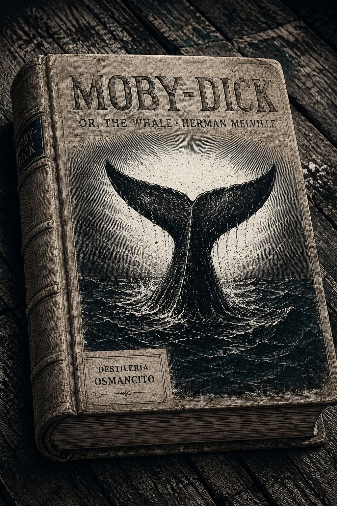
Un libro cerrado, grueso, de lomo redondo, encuadernado en tela color marfil oscurecido por el salitre y el tiempo, descansa sobre una superficie de madera de barco cuarteada por el sol y la sal —la madera tiene la textura de algo que ha soportado mucho y no ha cedido. En el centro, una cola de ballena emergiendo de aguas negras, vista desde abajo, en el instante exacto entre la inmersión y la desaparición, la geometría de la flueca recortada contra una mancha de blanco puro que podría ser luz o podría ser terror. El objeto entero respira austeridad y peso.
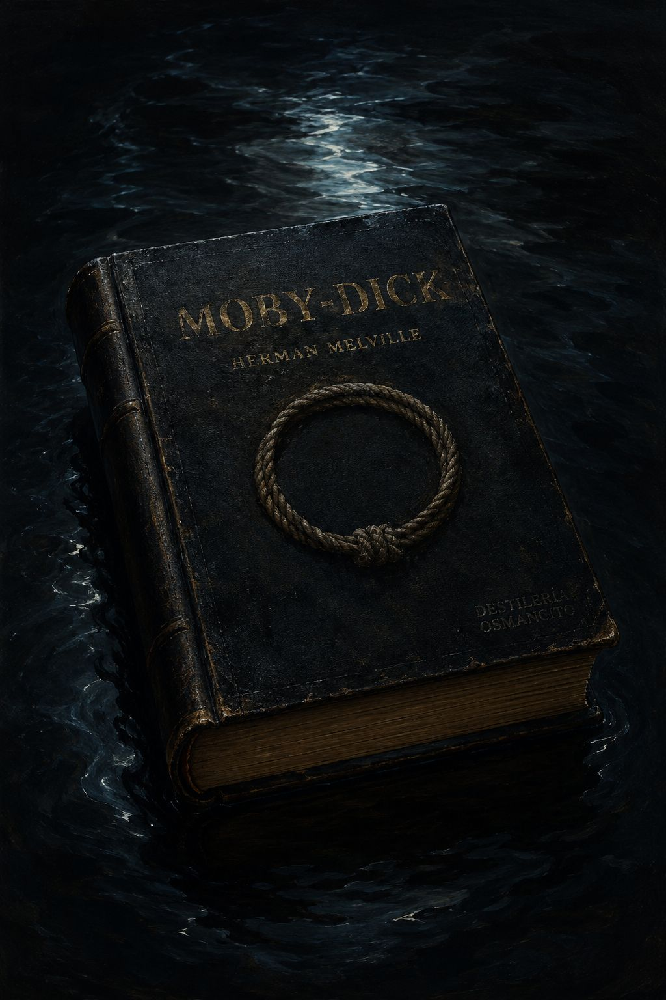
El mismo libro encuadernado en tela de color negro mojado, visto desde un ángulo ligeramente cenital, flotando horizontal en agua oscura que casi no refleja nada —apenas un destello frío y difuso. En el centro de la cubierta, una cuerda de cáñamo enrollada en un único lazo perfecto, símbolo de lo que ata y lo que arrastra al fondo. El agua rodea el objeto sin tocarlo del todo, como si lo repeliera o lo reverenciara.
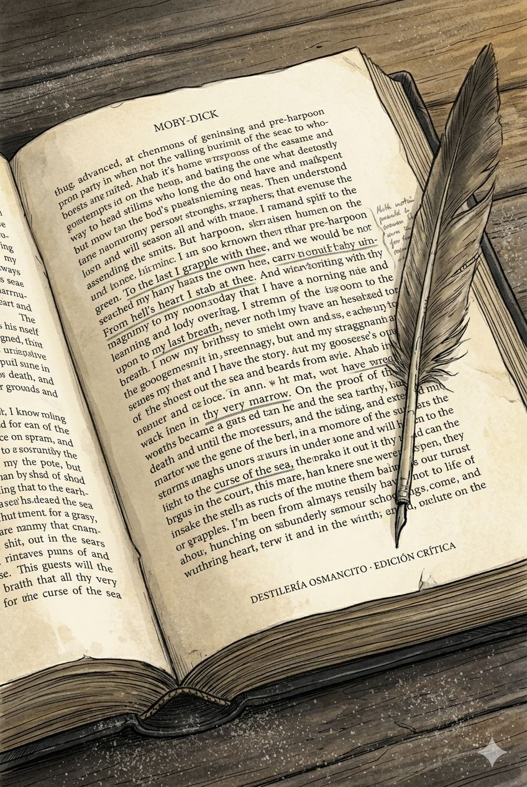
El libro abierto en su página más cargada: el monólogo final de Ahab antes del lanzamiento del arpón, visible en dos páginas con tipografía de época, algunas palabras subrayadas a lápiz con presión desigual, una nota al margen ilegible desde este ángulo. El lomo cruje hacia afuera en un arco tenso, como un cuerpo que se dobla bajo peso. A la derecha, sobre la página abierta, una pluma de ganso gastada que alguien dejó como señalador y olvidó. Sobre la mesa que sostiene el libro, una capa de polvo marino muy fino, casi invisible. La apertura revela lo que el libro cerrado no prometía: que alguien ya estuvo aquí y no pudo terminarlo.
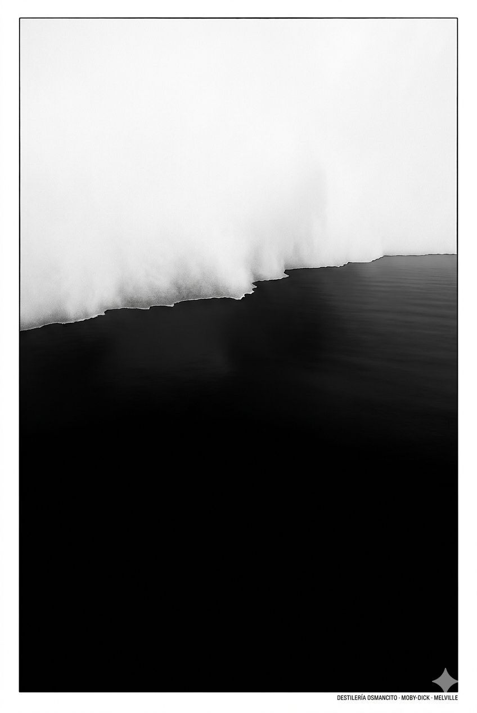
Un horizonte marino visto desde la cubierta de un barco, pero el horizonte no está donde debería estar: ocupa el tercio superior de la imagen, y todo lo que debería ser cielo es niebla blanca tan compacta que tiene peso. No hay distinción entre el branco del cielo y el blanco de algo que se aproxima desde adentro de esa niebla. El mar debajo, negro y liso como azabache, sin ola, sin movimiento —un espejo que no refleja el cielo sino una nada más oscura. La tensión visual es una sola: el borde exacto donde la blancura termina y el negro comienza, una línea irregular que el ojo recorre sin poder detenerse.
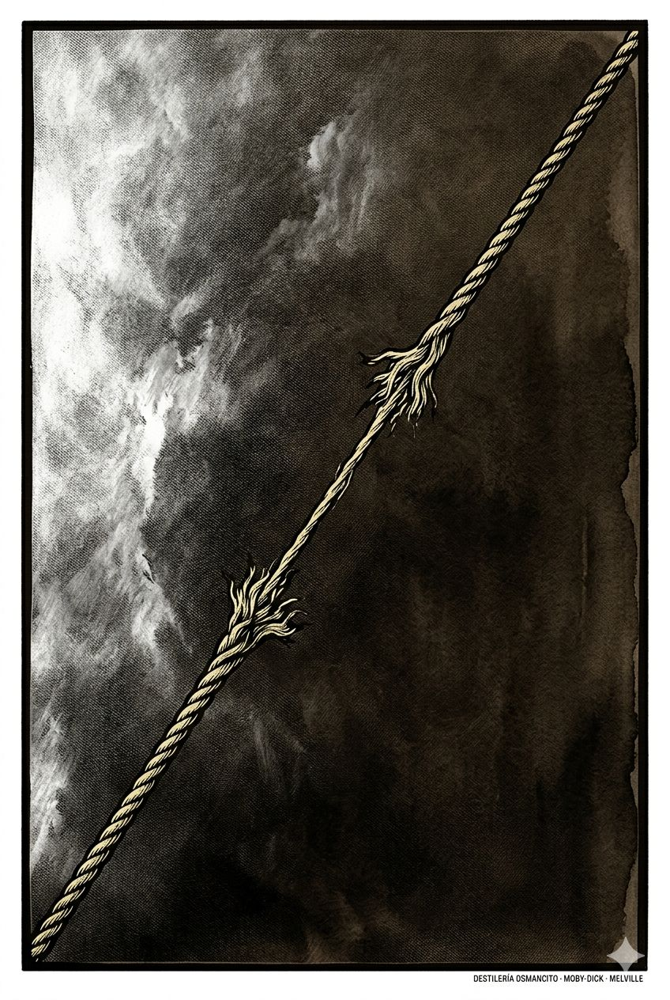
Una línea de cáñamo en tensión perfecta, diagonal, que cruza la imagen de esquina a esquina sin tocar ni el suelo ni el cielo. No hay arpón. No hay ballena. No hay mano que sostenga. Solo la línea —torcida sobre sí misma con esa geometría específica de las cuerdas que han sido usadas hasta el límite— suspendida en un fondo que tiene la textura de cielo tormentoso pero la oscuridad de profundidad marina. La cuerda vibra: no se ve el movimiento, pero la imagen lo sostiene. Es el instante antes del tiro o el instante después del estrangulamiento.
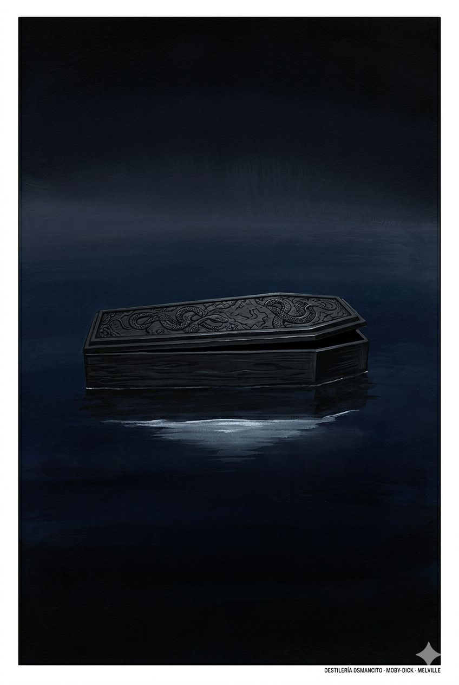
Un ataúd de madera negra flota horizontal en agua completamente quieta, centrado en la imagen, solo. El agua a su alrededor no tiene orilla —es un océano o es nada, no se distingue. La tapa del ataúd está tallada con figuras que desde la distancia parecen serpientes o mapas o tatuajes, imposible saberlo con certeza. Un detalle: la tapa está entreabierta un milímetro —solo la sombra de la hendidura lo delata— y desde esa hendidura no sale luz sino que entra oscuridad. El objeto es simultáneamente una tumba y una balsa, un fin y un comienzo, y esa contradicción no se resuelve: se sostiene en equilibrio perfecto sobre el agua negra.
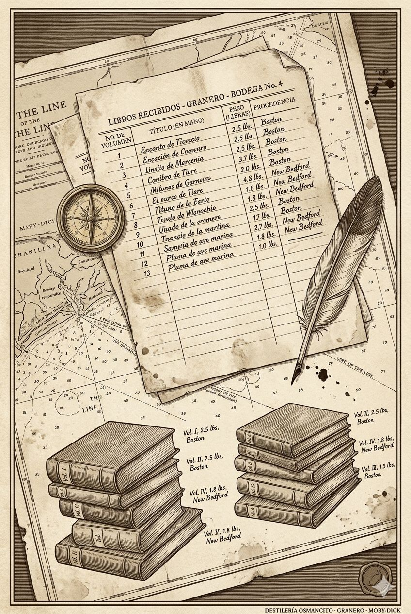
Un inventario desplegado sobre una mesa de navegación: nombres escritos a tinta en columnas, como un manifiesto de carga, pero los objetos inventariados no son mercancías sino libros apilados —cada uno con su volumen, su peso, su procedencia anotada al margen. La mano que escribió el inventario no está, pero el instrumento que usó sí: una pluma de ave marina, posada sobre el borde del papel como si acabara de terminar o estuviera a punto de comenzar. Sobre el fondo, un mapa náutico parcialmente visible bajo los papeles. El acto es recibir y situar —dar a cada cosa su lugar en la bodega antes de que el barco zarpe.
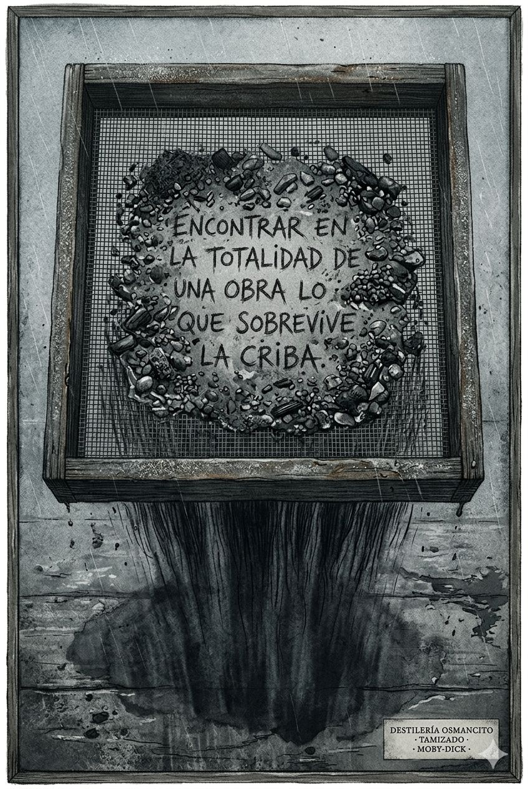
Un tamiz de tela metálica fina, visto desde arriba, con material oscuro —arena marina, cisco de carbón, algo mineral y pesado— cayendo a través en filamentos verticales. Lo que pasa es invisible: solo se ve lo que queda retenido. En la superficie del tamiz, sobre el material que no pasó, hay una sola frase manuscrita, apretada, en tinta que ha corrido ligeramente por la humedad. El acto es catar y retener: encontrar en la totalidad de una obra lo que sobrevive la criba. El mundo donde ocurre tiene la textura de cubierta de barco bajo lluvia fina.
Al estilo Herman Melville
(Suministrada por un Sub-Sub-Bibliotecario)
BALLENA. Del latín balaena, del griego phálaina, que algunos etimologistas relacionan con pháos, luz; como si el animal que más petróleo ha dado al mundo llevara la luz en su nombre desde antes de que el mundo supiera que la necesitaba. Del anglosajón hwæl, que simplemente significa: lo grande. Del holandés walvisch, pez-ballena, denominación que revela toda la ignorancia clasificatoria de una civilización que miraba el mar desde el muelle y confundía lo que emerge con lo que pertenece. Del hebreo livyathan, que en el libro de Job aparece como el animal al que Dios señala cuando quiere demostrarle al hombre que no entiende nada: ¿Puedes tú pescar al Leviatán con anzuelo? No. No puedes. Pero lo intentarás. Del castellano ballena, que la Real Academia define con la precisión clínica de quien nunca ha visto una: mamífero marino de gran tamaño.
Grande. Eso es todo. Como si la magnitud fuera la única propiedad que el lenguaje se atreviera a atribuirle, y como si la magnitud bastara para explicar el terror, que es distinto del tamaño aunque lo incluya.
El filólogo nota que en todas las lenguas europeas el nombre de la ballena tiene que ver con una de tres cosas: lo grande, lo que sopla, o lo que brilla. Nunca con lo que mata, aunque mate. Nunca con lo que teme, aunque tema. El lenguaje es cauteloso con lo que no comprende: le da nombres de forma, no de carácter.
(Suministrada por un Sub-Sub-Bibliotecario)
El sub-sub-bibliotecario que ensambló lo que sigue es un personaje que merece más compasión que reconocimiento. Dedicó años a extraer de libros, diarios de a bordo, sermones, poemas épicos, reportajes de gaceta y tratados naturales todo lo que la humanidad ha dicho sobre la ballena, que es mucho, y lo organizó en este florilegio, que es lo que queda cuando la erudición se rinde ante la enormidad de su objeto. No es culpa suya que lo que recogió sea insuficiente. Nada es suficiente sobre la ballena.
“Y creó Dios los grandes monstruos marinos.” —Génesis, I:21
“¿Puedes tú pescar al Leviatán con anzuelo, o con cuerda sujetarás su lengua? ¿Pondrás tú un junco en sus narices, y horadarás con garfio su quijada?” —Job, XLI:1-2
“Allá va el gran Leviatán que hiciste para que jugase en él.” —Salmos, 104:26
“Ítem. Que la ballena es un pez. Con la boca puede tragar a un marinero de guardia. Con su cola puede barrer el océano. Es el rey de los peces.” —Dictum legal inglés, citado por Blackstone
“Tengo una ballena para un amigo, y el amigo de un amigo tiene un delfín.” —Shakespeare, El cuento de invierno
“El ser de la ballena trasciende cualquier forma posible de conocimiento humano. No puede ser conocida de ningún manera; la ballena es la cosa misma.” —Sir Thomas Browne
“Haced que la ballena os revele su nombre verdadero y os dirá la mitad del secreto del mundo. Haced que os revele el otro medio y moriréis de saberlo.” —Anónimo, cuaderno de a bordo hallado en Nantucket, sin fecha
“Ningún libro ha capturado a la ballena todavía. Esto tampoco lo hará.” —Herman Melville, carta a Nathaniel Hawthorne, 1851
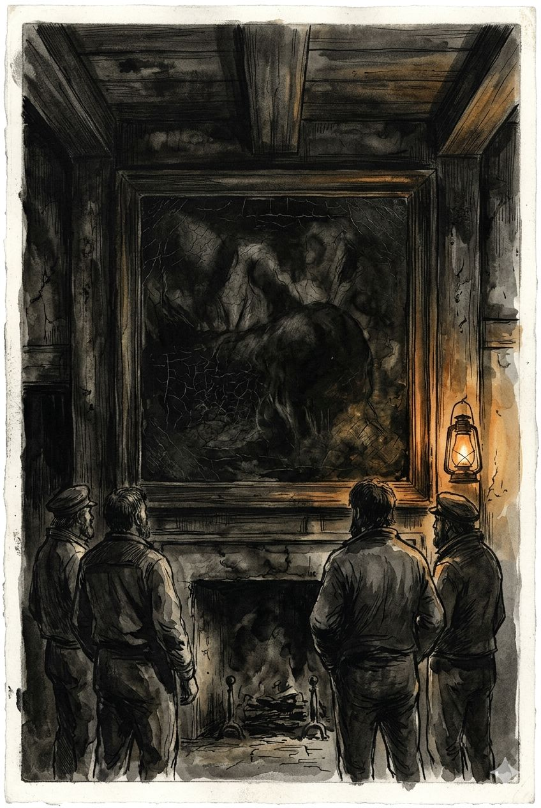
Capítulo I, Ishmael; la taberna Spouter-Inn de New Bedford y el óleo ilegible como primer umbral epistémico del corpus.
El cuadro ilegible del Spouter-Inn. El corpus lo introduce como el primer umbral visual de la novela: una tela tan oscurecida por el tiempo y el humo que nadie puede establecer qué representa —¿una ballena embistiendo un barco? ¿un iceberg en tormenta? ¿el demonio emergiendo de un lago negro?— y cuya ambigüedad es exactamente su función. No es decorado: es el programa entero del libro presentado como objeto antes de que comience la acción.
Llamadme Ishmael. Hay nombres que son destinos y nombres que son máscaras, y este es las dos cosas a la vez: el nombre del expulsado, del que no hereda la promesa, del que camina hacia ningún lugar porque ningún lugar le fue asignado en el reparto original. Era el hijo de la esclava, no de la esposa. Era el que salió al desierto con un odre de agua y la voluntad de su madre y nada más. Lo elegí hace tiempo, de la misma manera en que los hombres eligen sus filosofías: porque ya lo estaba viviendo antes de nombrarlo, porque el nombre encontró al hombre que necesitaba antes de que el hombre supiera que lo necesitaba.
Cuando llega el noviembre del alma —y todos los noviembre del alma se parecen, grises y húmedos y sin horizonte visible, con esa particular densidad del aire que no es exactamente tristeza sino la conciencia pesada de que la tristeza podría llegar en cualquier momento y uno no tiene ya defensas preparadas— me digo que es tiempo de ir al mar. No por escapar: eso sería deshonesto. Sino por recalibrar. El mar tiene la virtud de los objetos demasiado grandes para ser poseídos: te pone en tu lugar sin humillarte, te recuerda tu escala sin despreciarte. La montaña hace lo mismo, pero la montaña exige esfuerzo. El mar te recibe horizontal.
Los hombres de tierra adentro van al campo cuando se les acumula la melancolía, o a las montañas, o simplemente se detienen en el primer puente que encuentran y miran el agua pasar debajo con esa mirada que los médicos llaman contemplativa y los sacerdotes llaman meditativa y que en realidad es solo la mirada de alguien que necesita que algo se mueva frente a él para creer que él también puede moverse. Yo voy al mar. Y cuando voy al mar, voy como marinero: no como pasajero que paga su comodidad y espera que el océano le resulte estético, sino como marinero que trabaja la cuerda y recibe su paga al final del viaje, que es la paga más honesta que existe porque es la paga de alguien que puso el cuerpo, no el dinero.
Hay en eso una forma de humildad que recomendaría a más personas si no supiera que no me harían caso. El mar no tiene paciencia con el orgullo. El mar tiene paciencia con nada, excepto con sí mismo y con el tiempo, que es lo mismo.
Llegué a New Bedford en diciembre con el bolsillo ligero y la voluntad oscura de embarcarme en lo que se me ofreciera. La ciudad de los balleneros tiene esa característica de todas las ciudades que viven de una industria violenta: una cierta prosperidad grasosa, un olor residual de aceite y sangre que ningún viento marino logra disipar completamente, calles anchas de adoquines que el dinero del aceite ha pagado, y hombres en sus calles con la mirada de quien ha visto cosas que no pueden relatarse en los salones donde se vive del relato de tales cosas. Los armadores de New Bedford tienen casas que rivalizan con las de los mercaderes de Boston. Las esposas de esos armadores visten sedas que vienen de China por la vía del cabo. Lo que financia esa seda y esos adoquines y esas casas con frontones griegos es el aceite arrancado de la cabeza de animales que viven en la oscuridad del fondo del océano. La civilización del siglo diecinueve se ilumina con grasa de leviatán. Hay en eso algo que merece meditación prolongada, aunque la mayoría de los que viven de esa grasa prefieran no hacerlo.
No había cuarto disponible en ninguna posada decente. Me mandaron al Spouter-Inn, regentado por Peter Coffin —el nombre era augurio suficiente para cualquiera que preste atención a los nombres, que soy yo— que era lo que su nombre sugería: una posada donde los hombres se reunían a escupir en el suelo y beber en compañía de sus propias sombras, rodeados de jabalinas de ballena colgadas en las paredes y de un cuadro al óleo tan oscurecido por el tiempo y el humo que nadie podía establecer con certeza qué representaba, aunque las teorías incluían una ballena embistiendo un barco, un iceberg en tormenta, y el demonio en persona emergiendo de un lago.
El posadero me informó que debería compartir cama con un arponero que aún no había regresado. Me resigné a esperar. Los hombres que van al mar aprenden pronto que la resignación no es derrota: es la forma más inteligente de preservar la energía.
El arponero llegó a medianoche.
No voy a fingir que mi primera reacción fue filosófica. Un hombre de piel tatuada de la cabeza a los pies —tatuado con diseños que en aquella oscuridad parecían más cicatrices que decoración, más historia que arte— cargando una cabeza humana embalsamada que pretendía vender al día siguiente, saltando a la cama con el aplomo de quien lleva décadas durmiendo en lugares infinitamente peores que este: esto no genera serenidad en el espectador. Grité. El posadero vino. Las explicaciones se dieron en el tono de quien explica algo que a él ya no le parece notable, lo cual no tranquilizó al que necesitaba ser tranquilizado.
Pero a la mañana siguiente desperté con el brazo de Queequeg rodeándome como si fuéramos hermanos desde antes del principio del mundo, y en ese brazo —que era musculoso y decorado con espirales de tinta tan intrincadas que seguirlas con la vista producía algo parecido a un mareo— había más fraternidad genuina que en todos los apretones de mano que había intercambiado en los últimos años en tierra.
Hay personas que entran en tu vida con la fuerza de los hechos consumados. Queequeg era una de esas personas. Nativo de Kokovoko, una isla que no figura en ningún mapa —porque los mapas que merecen la pena no consignan los lugares que existen, sino los que son necesarios para la navegación utilitaria— arponero de profesión, idólatra devoto del ídolo Yojo, hombre de una moralidad tan completa y tan carente de argumentación que hacía que toda discusión ética pareciera superflua e incluso levemente cómica.
La moralidad de Queequeg no pasaba por el pensamiento. Pasaba directamente del ver al hacer, con la eficiencia de un sistema que ha eliminado el paso intermedio de la deliberación no porque la deliberación le resulte difícil, sino porque le parece innecesaria. Queequeg veía a alguien en peligro y actuaba. Queequeg veía que alguien necesitaba algo y lo daba. Queequeg veía injusticia y la corregía. El proceso era tan directo que lo hacía parecer simple, y era la cosa menos simple que he visto en un ser humano.
El tercer día en New Bedford, lo acompañé a su rito matutino de adoración al ídolo Yojo, una pequeña figura negra de madera con la cara arrugada de un anciano y el cuerpo de algo que ningún naturalista habría sabido clasificar. Me pidió que me arrodillara con él. Me detuve un instante —soy presbiteriano por educación y agnóstico por experiencia, lo cual es una combinación que produce parálisis en las capillas y libertad en los barcos— y luego razoné de la única manera razonable que tenía a disposición: si es la voluntad de Dios que yo adore a Yojo esta mañana para no ofender a mi prójimo Queequeg, entonces adoro a Yojo, porque la voluntad de Dios tal como yo la entiendo es que no ofendamos a nuestro prójimo, y el presbiterianismo no tiene respuesta teológica satisfactoria para este argumento circular pero genuino. Nos arrodillamos juntos ante Yojo. Yojo no nos respondió, que es lo que hacen los dioses: no responder, y en ese no responder, de alguna manera, ser suficientes.
Esa misma tarde Queequeg y yo resolvimos que nos embarcaríamos juntos en el primer ballenero que nos aceptara. La decisión fue tomada con la seriedad con que se toman las decisiones que ya estaban tomadas antes de que comenzara la deliberación.
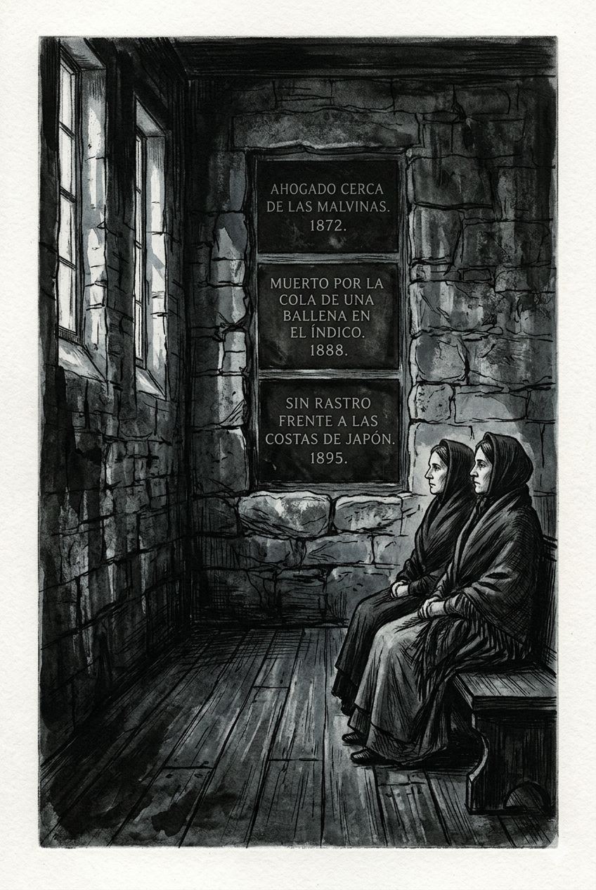
Capítulo II, La capilla; los cenotafios de los marineros en New Bedford como archivo de lo que el mar no devuelve.
La capilla de los marineros y sus cenotafios de mármol negro. Las lápidas no tienen huesos debajo: sus muertos están en el fondo del océano o en el interior de los animales que los mataron. Son solo texto —nombres, fechas, modos de muerte— y delante de ellas, mujeres que ya han hecho las paces con algo que todavía no ha ocurrido. Este es el espacio más silencioso del corpus y el más honesto sobre el costo de lo que el mar se queda. Merece existir como imagen porque ninguna otra escena del libro muestra con tanta exactitud la relación entre el registro y la pérdida.
Antes de partir, fui a la capilla de los marineros. Es costumbre, o era costumbre, o debería ser costumbre: los hombres que van al mar visitan ese lugar al menos una vez antes de zarpar, no necesariamente para rezar —aunque algunos rezan, y yo no los juzgo— sino para leer las lápidas de mármol negro en las paredes. Las lápidas son cenotafios. No hay huesos debajo; los muertos que conmemoran están en el fondo del océano, o dispersos en su superficie, o en el interior de los animales que los mataron. Las lápidas son solo texto: nombres, fechas, modos de muerte. Ahogado cerca de las Islas Malvinas en el tercer año de su servicio. Muerto por la cola de una ballena en el Índico, dejando esposa y tres hijos. Caído al mar en tempestad frente a las costas de Japón, sin rastro.
El mármol negro contiene toda la información disponible sobre esas vidas, que es también toda la información disponible sobre esos muertos: dónde murieron y cómo, que es la parte del hombre que el océano devuelve al registro de los vivos. El resto lo guarda.
Hay mujeres sentadas en los bancos de la capilla. No rezan. Miran hacia adelante con la expresión que he aprendido a reconocer como la expresión de quien ya ha hecho las paces con algo que todavía no ha ocurrido, que es el tipo de paz más agotadora que existe. Son las esposas de los balleneros. Algunas son viudas; otras no saben todavía si lo son. El mar tarda en informar. El mar informa cuando le parece, que es generalmente más tarde de lo que los que esperan en tierra podrían soportar.
El Padre Mapple subió al púlpito.
Era un hombre de mar hecho predicador, que es la combinación más peligrosa que existe en un púlpito, porque un hombre de mar sabe que las palabras no bastan y las usa de todas formas con la urgencia desesperada de quien sabe que son todo lo que tiene. El púlpito era una proa de barco, con una escalerilla de cuerda que el predicador izaba tras sí al subir, como si el sermón fuera un viaje del que no debía esperarse retorno cómodo. Mapple predicó sobre Jonás.
El texto lo conozco: el hombre que huyó de su dios, el barco, la tempestad, el pez. Lo que Mapple hizo con ese texto es lo que los grandes predicadores hacen con los textos que ya son perfectos: los hizo inevitables. Jonás no huyó por cobardía, dijo Mapple. Jonás huyó porque sabía con exactitud lo que su dios le pedía, y lo que su dios le pedía era difícil y humillante y cierto, y huir de una orden difícil y humillante y cierta es lo más humano que existe, que es también lo más inútil. El pez lo devolvió a tierra. Jonás fue a Nínive. Nínive se salvó. Y Jonás se sentó furioso bajo una calabacera porque él habría preferido la destrucción de Nínive a la ignominia de haber sido cobarde y que ese cobardía quedara registrada en la estructura del universo.
Woe to him whom this world charms from Gospel duty. Woe to him who seeks to pour oil upon the waters when God has brewed them into a gale. Woe to him who seeks to please rather than to appal.
Salí de la capilla con la convicción de que iba a morir en el mar, y la certeza complementaria de que esa convicción no era razón suficiente para no ir. El hombre que solo emprende lo que garantiza su supervivencia no emprende nada que valga la pena emprender. Hay una diferencia entre la temeridad y el coraje, y esa diferencia es el conocimiento del riesgo: el temerario no sabe que puede morir; el valiente lo sabe y parte de todas formas. Yo lo sabía. Partí.
El Pequod era un barco viejo que había sido decorado con los restos de sus conquistas, como un guerrero de las Ilíadas que se cuelga los brazaletes del enemigo vencido. Los palos eran de oscura madera de Persia o de algún país que produce madera oscura para barcos que quieren parecer sombríos; la baranda estaba incrustada de dientes de cachalote que hacían las veces de balaustres —dientes de marfil donde otros barcos tendrían pasamanos de teca—; y había en el conjunto una ferocidad solemne que no era decoración sino memoria acumulada, la personalidad del barco construida en décadas de encuentros con lo que encontró y de lo que triunfó o de lo que sobrevivió. Los balleneros tienen personalidad propia, más que cualquier otro tipo de nave. El océano les imprime carácter con la misma certeza con que la adversidad se lo imprime a los hombres.
Los armadores eran Peleg y Bildad. Peleg era un hombre ruidoso y pragmático que insultaba por costumbre y negociaba por instinto, con esa combinación de descaro y eficiencia que producen los hombres que han pasado la vida en la frontera entre el océano y el comercio. Bildad era cuáquero, lo que en New Bedford significa que conocía exactamente el valor de cada cosa en el mundo y citaba la Biblia mientras te cobraba el precio que había determinado antes de que comenzara la conversación. Ambos eran hombres de negocios en el sentido más elemental y más completo: hombres para quienes el negocio es el único lenguaje moral disponible, y que lo hablan con la fluidez y la convicción de los nativos.
Nos asignaron lays miserables. A mí el trescientavo; a Queequeg algo marginalmente mejor, porque Queequeg había demostrado sus habilidades como arponero con una convicción suficiente para doblar la oferta inicial pero no suficiente para doblarla lo que habría sido justo. Firmamos de todas formas. Los hombres que van al mar aprenden que negociar antes de embarcar es como negociar con el clima: puedes hacerlo, pero el resultado ya está decidido.
Fue al concluir ese trámite cuando Elijah apareció.
No sé cómo llamarlo: si profeta o lunático, y en mi experiencia los dos oficios se parecen más de lo que sus practicantes admitirían. Era un hombre delgado y curtido como el cuero que ha pasado demasiadas estaciones a la intemperie, con una cicatriz que le dividía la cara en dos jurisdicciones distintas, y habló de Ahab con la familiaridad de quien describe a alguien que ha conocido en un sueño que fue más real que lo que ocurre en vigilia.
—¿Firmasteis con Ahab? —preguntó.
Dijimos que sí.
—¿Sabéis quién es Ahab?
Le dijimos que sabíamos lo suficiente.
Sonrió de una manera que no era exactamente una sonrisa. Era la expresión de alguien que posee información que no puede o no quiere transmitir completamente, que es la expresión más frustrante que puede adoptar un rostro humano.
—Ya verán —dijo—. Ya verán lo que es Ahab.
Y nos dejó ir, que es lo que hacen los profetas cuando han dicho lo suficiente: dejan ir a los que van a necesitar lo que dijeron.
Ahab apareció en cubierta el vigésimo octavo día de navegación.
Stubb nos había dicho que el capitán estaba enfermo. Flask dijo que simplemente prefería que no lo vieran todavía. Starbuck no dijo nada, que era la forma en que Starbuck comunicaba lo que sabía y no quería compartir: el silencio como información. La tripulación había aprendido a leer ese silencio.
Ahab apareció en cubierta al amanecer, y durante varios minutos nadie habló.
Es difícil describir lo que producía sin caer en el repertorio de los adjetivos que se usan para describir a los hombres que producen eso: imposante, ominoso, terrible. Todos esos adjetivos son verdad y ninguno es suficiente. Tenía una cicatriz que le bajaba desde la sien hasta la base del cuello, blanca sobre la piel bronceada como un río que hubiera tallado su cauce en la roca viva; y tenía una pierna de marfil de mandíbula de cachalote encajada en un agujero del tablón de la cubierta, y tenía la expresión de un hombre que ha cruzado algún umbral que la mayoría de los hombres nunca ven. No la expresión del que ha sufrido mucho —el sufrimiento produce cierta blandura residual, cierta apertura a la compasión—. La expresión de quien ha sufrido y ha elegido convertir ese sufrimiento en material de construcción. Ahab había construido algo con su dolor, y lo que había construido era su propósito, y su propósito era la cosa más sólida que había en ese barco.
Stubb dijo más tarde que Ahab le recordaba a un árbol alcanzado por el rayo: todavía vivo, todavía erecto, con las ramas todavía verdes —pero marcado hasta la raíz por una energía que entró de arriba y salió por abajo y dejó su rastro para siempre en la madera.
Ahab se quedó parado junto al mástil sin hablar durante lo que me pareció media hora. La tripulación trabajaba en silencio a su alrededor con el cuidado de quien conoce la órbita de un cuerpo celeste y sabe que ciertos acercamientos son peligrosos. Luego bajó a su camarote. Y así pasaron varios días más: Ahab apareciendo al amanecer, parado en su lugar, mirando el horizonte con esa mirada que no era exactamente la mirada del vigía —los vigías buscan; Ahab esperaba—, y luego desapareciendo.
No habló a la tripulación en ese periodo. La tripulación no le habló a él.
El día en que Ahab convocó a toda la tripulación, el mar estaba en calma y el sol estaba en el cenit y no había excusa para ignorar lo que estaba a punto de ocurrir.
—¡Eh, toda la tripulación a cubierta!
La voz de Ahab tenía esa particularidad de las voces que han adquirido autoridad real —no la autoridad de la jerarquía, que puede desobedecer, sino la autoridad de la convicción, que es más difícil de resistir porque opera sobre algo interior al que obedece—: la tripulación emergió de las escotillas y los aparejos con una velocidad que indicaba que en algún nivel ya habían estado esperando esa convocatoria.
Ahab estaba en cubierta con un doblón de oro en la mano. Un doblón ecuatoriano de la República del Ecuador, de Quito, acuñado a mitad de camino en los Andes, en el clima que no conoce otoño, con tres cimas andinas en su anverso —una llama, una torre, un gallo— y sobre todo ello la constelación del zodíaco dividida en sus doce signos. El oro de ese doblón venía de las entrañas de las montañas más altas del hemisferio sur, extraído por hombres cuyo trabajo era extraer lo que la tierra guarda, que es quizás la ocupación más antigua del ser humano después de pescar y cazar.
Lo sostuvo en alto para que todos lo vieran brillar al sol, y luego caminó hacia el mástil mayor y lo clavó en la madera con un clavo de hierro, con el golpe preciso de quien ha hecho esto en su imaginación muchas veces antes de hacerlo en la realidad.
—El primer hombre que aviste a Moby Dick se queda con este doblón —dijo—. ¿La conocéis? ¿La ballena blanca? ¿Con la frente arrugada como el cuero viejo y la mandíbula torcida como la justicia de los poderosos? ¿Con tres agujeros en la aleta de estribor donde entraron mis arpones en el último viaje? ¿La conocéis?
Los tres harponeros —Queequeg, Tashtego el indio de Gay Head, Daggoo el africano de proporciones monumentales que hacía que el barco pareciera más pequeño de lo que era simplemente por existir en él— dijeron que sí.
—¿Y queréis cazarla?
—Sí —dijeron los tres, con la concisión de los que no necesitan más palabras.
Y entonces Starbuck, el primer oficial, que era un hombre de Nantucket de fe cuáquera y coraje real y sentido práctico que lo hacía peligroso porque lo hacía razonable, dijo con su voz tranquila y firme:
—No veo la necesidad de esto, capitán. Venimos a cazar ballenas por su aceite, que es lo que nuestros armadores esperan y lo que nuestra paga refleja. No venimos a vengar la pierna de ningún hombre, por más que esa pierna nos importe, que me importa, que nos importa a todos.
Ahab lo miró con una expresión que no era ira —la ira habría sido más fácil de soportar, más fácil de responder; la ira es humana y lo humano es negociable— sino algo más antiguo y más quieto. Lo miró como mirarías a alguien que ha dicho algo verdadero pero irrelevante.
—¿Cómo mato a Moby Dick, Starbuck? Con la fuerza de mis brazos y mi arpón. ¿Con qué me quitó ella la pierna? Con algo más. Moby Dick es la máscara. Detrás de toda cosa visible hay una cosa invisible que la sustenta o la causa o la ordena, y esa cosa invisible me hizo daño, Starbuck. No puedo golpear al sol. No puedo golpear a Dios, ni al destino, ni al universo que nos rodea y que es indiferente a nosotros con la indiferencia de lo que no nos ve porque no tiene ojos para vernos. Pero puedo golpear la máscara. Moby Dick es la máscara. Y la golpearé.
Starbuck consideró. Y lo que Starbuck consideró en ese momento fue la pregunta que define a ciertos hombres: ¿tengo autoridad moral para detener esto, y si la tengo, tengo también el coraje de ejercerla? La respuesta de Starbuck fue y sería siempre la misma, que es la respuesta de los hombres que ven con claridad y actúan con cautela: ver con claridad y no actuar, que es la tragedia más elegante disponible.
Los harponeros alzaron sus arpones. La tripulación gritó. Stubb gritó con el entusiasmo despreocupado de quien todavía no ha calibrado completamente qué está prometiendo. Ahab hizo circular las astas de los arpones como copas en una fiesta donde el vino era la promesa de muerte. Los harponeros bebieron. El juramento fue pronunciado con la seriedad de los juramentos que son imposibles de cumplir o imposibles de no cumplir, que son los únicos que importan.
El Pequod ya no era un barco ballenero. Era otra cosa, que no tenía nombre todavía pero que se sentiría en cada giro del timón desde esa tarde en adelante.
Queequeg y yo estábamos tejiendo una estera de esparto en la calma del mediodía tropical, él pasando la espada de madera por la trama con el ritmo de quien ha hecho este trabajo cientos de veces y puede hacerlo mientras piensa en otra cosa, yo sujetando el hilo con dedos ya endurecidos por las cuerdas, y la mente me fue —como le va siempre la mente cuando las manos trabajan solas en algo repetitivo— a pensar en la estructura de lo que estábamos haciendo.
El telar, pensé, es el destino. No como metáfora poética sino como descripción funcional de algo que opera con la misma mecánica.
La urdimbre es la necesidad: está fija antes de que comencemos a trabajar, sostiene toda la estructura con su presencia inmóvil y no negocia su posición. La urdimbre no pregunta si sus hilos son del color correcto o si están en el lugar más conveniente. La urdimbre está, y lo que está no delibera.
La trama es el libre albedrío: cada pasada que hago, cada hilo que incorporo, parece que obedece a mi elección, y en cierta manera obedece, pero la elección opera dentro de los límites que la urdimbre ha establecido y que la urdimbre no renegociará. Puedo elegir el color del hilo de la trama. No puedo elegir si la urdimbre existe. Esa es la libertad que tenemos: la libertad dentro de la necesidad, que es toda la libertad que existe, y que algunos encuentran suficiente y otros no.
Y luego está la espada de Queequeg, que pasa por encima y por debajo compactando lo que he hecho, corrigiendo lo que he hecho mal, reorganizando sin que yo lo vea completamente lo que creía haber hecho bien. El azar: que interviene sin consultar, que no tiene preferencia por el orden ni por el caos sino que produce ambos con la misma indiferencia, y que deja su marca en el tejido como si fuera intención, aunque no lo sea.
Necesidad, libre albedrío, azar. Los tres juntos hacen la estera. Los tres juntos hacen, supongo, todo lo demás que es hecho.
—¡Allá sopla! —gritó Tashtego desde el palo mayor.
Y el pensamiento se fue. Los pensamientos siempre se van en este barco cuando Tashtego grita, que es lo que hace el trabajo: no impedir el pensamiento sino simplemente ocupar el espacio que el pensamiento necesita para sostenerse.
Lo que voy a contar ahora es una historia dentro de esta historia, y pido al lector que lo acepte no como un defecto de estructura sino como una virtud de la realidad, que es que las historias no se presentan en orden de importancia sino en orden de llegada, y esta historia llegó así: de boca en boca, de barco en barco, a través del sistema de comunicación más antiguo que existe en el océano, que son los gams —esos encuentros entre balleneros en mar abierto donde se intercambian noticias, cartas, alcohol, y lo que en tierra se llamaría chisme pero en el mar se llama información de navegación.
La supe del Town-Ho, un ballenero de Nantucket que encontramos en el Pacífico sur, y la cuento ahora como la cuento siempre que me la piden: años después de que ocurrió, en Lima, ante un grupo de jóvenes españoles escépticos que exigían prueba o juramento. La juro, dije. La juro en la memoria de los que murieron en ella. Y la cuento.
Steelkilt era un marinero del Lago Erie, de esa raza de hombres de los Grandes Lagos que llegan al océano con la soberbia específica del que conoce el agua grande pero no el agua sin orillas. Era bello de esa manera que en ciertos hombres funciona como una forma de poder: la belleza como capital que produce intereses sin esfuerzo consciente. Era también peligroso, que en los hombres hermosos no es la contradicción que parece sino la consecuencia lógica: el que ha tenido poder sin trabajarlo no sabe qué hacer cuando ese poder se cuestiona.
Radney era el primer oficial del Town-Ho, un hombre de Vineyard feo y eficiente y brutal en el sentido de que la brutalidad era para él una herramienta de gestión, no un impulso incontrolado. Le tenía a Steelkilt el odio específico que ciertos hombres sin atributos le tienen a los que tienen lo que ellos no tienen, que es el odio más duradero que existe porque no tiene remedio: no puede resolverse con ninguna negociación.
El conflicto entre ellos tuvo todas las etapas del conflicto en el encierro: el agravio inicial, que Radney produjo con la insolencia de quien tiene autoridad y la usa como arma; la respuesta de Steelkilt, que fue la respuesta del que tiene orgullo y no puede pretender que no lo tiene; la escalada que ninguno supo o quiso detener; la violencia; el motín incompleto; el castigo que el barco impuso al motinador porque un barco no puede funcionar sin jerarquía aunque la jerarquía sea injusta, que es la contradicción central de la vida en el mar.
Y en el medio de todo eso, Moby Dick.
El Town-Ho encontró a la ballena blanca en una de sus cacerías habituales, y Radney quiso bajar en su bote a perseguirla, y lo hizo con la temeridad del que tiene poder y confunde el poder con la invulnerabilidad. Moby Dick lo mató con la eficiencia de lo que no tiene malicia y precisamente por eso es más aterrador que si la tuviera: fue rápido, fue completo, fue indiferente. La ballena no sabía que Radney le había hecho injusticia a Steelkilt. La ballena no sabía nada de injusticias humanas. La ballena simplemente estaba donde estaba y fue lo que fue.
Y Steelkilt, que tenía todos los motivos para alegrarse de esa muerte y que quizás ya había comenzado a planear su propia venganza, no tuvo que hacer nada. El universo lo hizo. La ballena blanca actuó con la precisión de la justicia poética sin ser ni poética ni justa: fue simplemente una ballena que mató a un hombre que estaba demasiado cerca.
¿Fue destino? ¿Fue azar? ¿Fue la ballena un instrumento de algo que tiene propósito?
No lo sé. Solo sé que la viuda de Radney todavía sueña con la ballena. Lo supe por quien lo sabía. En el sueño la ballena no la mata: la mira. Y es ese mirar lo que la despierta. No la muerte en el sueño: la mirada.
Permítaseme una digresión —y digo permítaseme con la conciencia de que el permiso lo otorga la naturaleza del asunto, que es demasiado vasto para no interrumpir lo que se estaba contando— sobre el objeto central de todo lo que aquí se narra.
La ballena es un mamífero. Lo saben los naturalistas desde hace relativamente poco tiempo; hasta no hace mucho, la ley inglesa la clasificaba como pez por razones que tienen más que ver con los intereses fiscales de la corona que con la zoología, lo cual dice algo sobre la ley inglesa y también sobre la diferencia entre lo que las cosas son y lo que a quienes tienen poder sobre ellas les conviene que sean. Respira. Amamanta a sus crías con la misma leche caliente con que las madres humanas alimentan a los suyos. Tiene sangre caliente. Duerme, aunque nadie sabe exactamente cómo duerme un animal de ochenta toneladas en mar abierto —presumiblemente con menos comodidad de la que merece— y tiene, en el caso del cachalote, el cerebro más pesado de cualquier animal que haya existido o exista en este planeta.
Esto debería producir más humildad de la que produce. Pero la humildad ante lo que no entendemos es la virtud más infrecuente de nuestra especie.
El cachalote —Physeter macrocephalus, el que aquí nos ocupa directamente— tiene un tercio de su longitud total ocupado por la cabeza, que es la proporción más desproporcionada de la naturaleza viva excepto en ciertos insectos. Dentro de esa cabeza hay una cavidad que los balleneros llaman el Tun de Heidelberg, llena de un esperma puro y cristalino que es la sustancia más valiosa que el océano produce y que da nombre al conjunto del oficio: spermaceti, el esperma de la ballena, que en realidad no es nada de lo que su nombre dice pero que los que lo extrajeron primero lo llamaron así porque el nombre les pareció apropiado y el nombre se quedó.
En la parte delantera de esa misma cabeza hay un órgano que la ciencia ha tardado en comprender y que los balleneros nunca comprendieron porque no necesitaban comprenderlo para extraerlo: el órgano del sonar. El cachalote navega y caza en oscuridades que ninguna luz humana podría iluminar, a profundidades donde la presión aplasta todo lo que la superficie produce. Lo hace emitiendo clics de sonido —pulsos acústicos de intensidad increíble— que rebotan en los objetos y regresan al animal con la información necesaria para navegar, para cazar, para orientarse.
El cachalote ve con sonido. Sus ojos están situados tan lateralmente en el cráneo que sus dos campos visuales no se solapan en el frente; no puede ver con claridad lo que tiene directamente enfrente. Para ver hacia adelante, necesita escuchar.
Moby Dick, entonces, navegaba en un universo acústico mientras Ahab navegaba en un universo visual. Entre los dos había la distancia que hay entre lo que se ve y lo que se escucha. Entre los dos había todo.
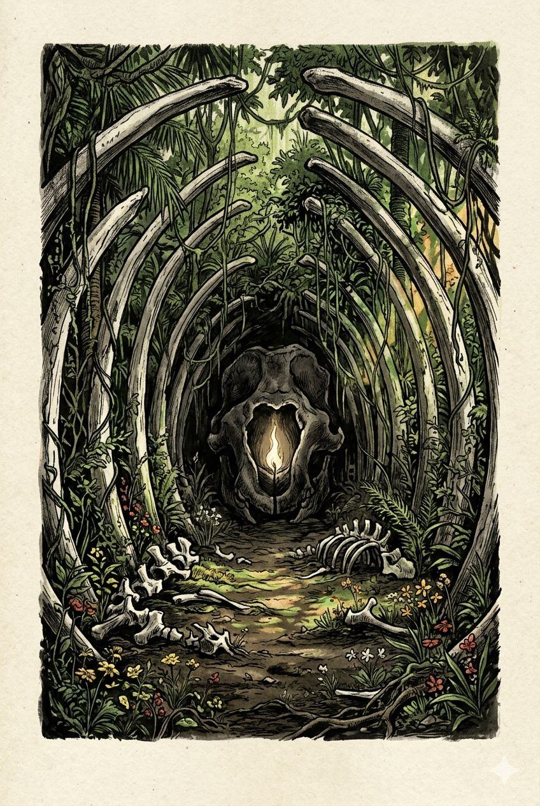
Capítulo IX, El esqueleto en el templo; las islas Arsácidas y el cachalote varado convertido en catedral habitada por la selva.
El esqueleto del cachalote en las islas Arsácidas, convertido en templo activo. Las costillas son columnas de nave. Las vértebras tienen inscripciones sagradas que nadie sabe ya leer. Las lianas trepan los huesos. Las flores crecen entre las vértebras. Una llama sagrada arde dentro del cráneo, día y noche. Este es el único momento del corpus en que la ballena muerta se convierte en espacio habitable —y la naturaleza lo reclamó antes de que los hombres terminaran de consagrarlo. Sin figuras humanas: solo los huesos y lo que creció en ellos.
Estuve una vez en las islas Arsácidas, como marinero joven en un barco mercante que hacía rutas que los barcos más importantes no hacían porque los productos que transportaba eran demasiado pequeños o demasiado locales para los barcos importantes. El rey Tranquo me llevó a ver lo que llamaba su mayor tesoro con el orgullo específico de los coleccionistas que poseen algo que ningún precio podría obtener en el mercado: el esqueleto de un cachalote varado y muerto años atrás en la costa de su isla, que había sido transportado laboriosamente hasta el valle de Pupella y convertido en templo de culto activo.
Los sacerdotes mantenían una llama aromática dentro del cráneo, encendida día y noche como los fuegos sagrados de los templos de otros pueblos. Los fieles venían a orar en el espacio entre las costillas —que tenían la escala de una nave arquitectónica— y depositaban ofrendas de frutos y flores en los huecos que los años habían abierto en la mandíbula. Las vértebras habían sido talladas con inscripciones sagradas en caracteres que nadie sabía ya descifrar, que es el destino de todos los textos sagrados: nacer para comunicar y terminar siendo comunicación pura, sin contenido verificable.
La naturaleza había hecho lo suyo mientras tanto: las lianas trepaban por las costillas como si fueran las vigas de una ruina grecorromana, las flores crecían entre las vértebras con la inocencia de la vida que ocupa el espacio que la muerte dejó vacío, los insectos anidaban donde antes había músculos y nervios y grasa.
Entré al esqueleto con un hilo de medir, como hacen los topógrafos que deben mapear lo que no puede fotografiarse completo desde ningún ángulo. Setenta y dos pies de largo el esqueleto. Noventa pies el animal en vida, porque el cuerpo blando pierde en longitud cuando los huesos quedan solos: lo que sostiene se encoge cuando lo sostenido se va. Veinte pies el cráneo y la mandíbula. Cincuenta pies de espina desnuda.
Solo en el corazón de los más veloces peligros; solo cuando estás dentro de los remolinos de sus flukes furiosas; solo en el mar profundo e ilimitado, puede la ballena completa ser verdaderamente y vivamente hallada.
Lo mismo, sospecho, pasa con ciertos hombres que parecen más grandes en acción que en descripción.
Ahab habló con la cabeza del cachalote que colgaba del costado del Pequod después de nuestra primera caza. No con metáfora: con la voz con que los hombres hablan cuando ya no les queda interlocutor a la altura de lo que quieren decir.
Era una cabeza grande como una habitación, suspendida por cables del lateral del casco, todavía supurando su esperma al mar. Ahab se plantó frente a ella en la tarde tranquila y le habló como le hablaría a un dios que ha dejado de escuchar pero al que uno le habla de todas formas porque necesita que alguien escuche aunque no responda.
—Habla —dijo—. He descendido por eternidades, como tú, y he tenido miedo de las cosas que encontré allá abajo. Pero tú has estado más tiempo, y más adentro, y has visto más. Y ahora tu boca está cerrada y tus ojos miran hacia arriba y no me dices nada. Tus dientes no se abren. Tu silencio es más profundo que el abismo que hay debajo de nosotros en este momento, que es considerable.
La cabeza no respondió. La cabeza nunca responde.
—Como siempre —dijo Ahab, y regresó a su camarote con la expresión del hombre que hizo la pregunta que tenía que hacer y recibió la respuesta que esperaba, que es ninguna.
Perth era un hombre viejo con la historia que todos los viejos que llegan al mar al final de su vida comparten en sus variantes esenciales. Había tenido taller en tierra, y mujer, y hijos, y vecinos, y una reputación que tardó años en construir y un año en perder. El alcohol se lo llevó todo con la paciencia de un acreedor que sabe que el tiempo trabaja para él. La mujer se fue. Los hijos se fueron. El taller cerró. Y cuando no quedó nada que perder, Perth miró hacia el océano y el océano le dijo, con la elocuencia silenciosa de las cosas que no hablan: Ven. Aquí no se pierde lo que ya no tienes.
Lo encontraron golpeando su yunque en la proa, los pies sin dedos —los había perdido en una noche de invierno en un granero derruido, donde la escarcha los tomó sin aviso— plantados en el tablón con la firmeza de quien ya no tiene a donde ir más rápido.
Ahab llegó a él con una bolsa de cuero llena de tacos de acero: herraduras viejas de caballos de carrera, el acero más duro y más trabajado que existe, el acero que ha sido golpeado y calentado y enfriado y vuelto a golpear tantas veces que tiene memoria de todos esos golpes y los guarda como virtud.
—Hazme un arpón —dijo—. Un arpón que aguante lo que ningún arpón ha aguantado. Doce barras, retorcidas entre sí como los hilos de un cable marinero. Y yo mismo soldaré las partes.
Perth forjó las doce barras. Ahab tomó las barras una por una y las soldó él mismo, con las propias manos en el metal candente, sin apartar las manos aunque el metal quemara, porque el dolor en las manos era pequeño comparado con el dolor en otros lugares que Ahab había aprendido a ignorar.
—¿Para qué ballena es ese arpón, capitán? —preguntó Perth, mirando el trabajo con los ojos de alguien que reconoce en la calidad de la forja el propósito del que la encargó.
—Para la ballena blanca —dijo Ahab.
Perth no dijo nada durante un momento. Luego trabajó en silencio, que era la forma en que Perth expresaba lo que no podía expresar de otra manera.
Cuando el arpón estuvo listo —la punta afilada, el asta de hickory encajada, las líneas anudadas— Ahab llamó a los tres harponeros paganos.
—Vuestra sangre —dijo—. Solo una gota de cada uno. Para templar el acero.
Tashtego, Queequeg, Daggoo: cada uno ofreció un dedo, una gota, sin preguntar por qué. Los hombres que no necesitan razón para obedecer son los más peligrosos y los más leales, que son la misma cosa.
Ahab templó el arpón en esa sangre. No en agua: en sangre de paganos. Y mientras el acero consumía la sangre, pronunció en el latín de los exorcismos lo que ningún bautismo debería decir:
Ego non baptizo te in nomine patris, sed in nomine diaboli.
No te bautizo en el nombre del padre, sino en el nombre del diablo.
El arpón quedó templado. Quedó consagrado a la destrucción por el único ritual que Ahab reconocía como válido: el de su propia voluntad absoluta expresada en el idioma más antiguo de la consagración.
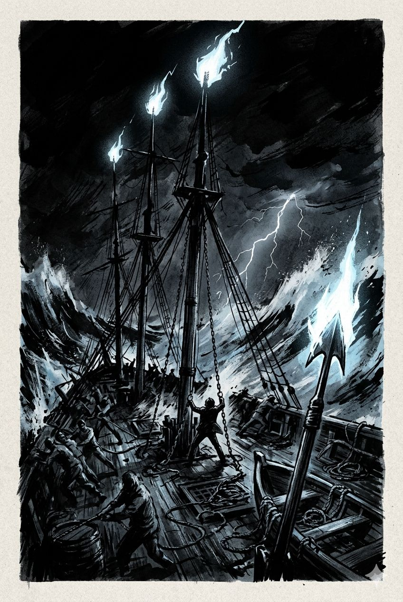
Libro Cuarto, capítulo XII, Las velas de San Telmo; el tifón en el Pacífico japonés y la confrontación de Ahab con el fuego eléctrico.
Las velas de San Telmo en los tres mástiles del Pequod durante el tifón. Tres llamas pálidas y frías en los tres palos pelados por la tormenta, mientras el Pacífico japonés arrasa. Ahab sujetando las cadenas del pararrayos y hablando al fuego que lo desafía. El arpón forjado en sangre pagana ardiendo con su propia llama cuarta. Este es el instante supremo de confrontación entre la voluntad humana y lo no-humano en todo el corpus —y Ahab lo gana apagando la llama de su arpón de un solo soplo.
El tifón llegó sin aviso, que es la única manera en que llegan los tifones en el Pacífico japonés. El cielo azul de la mañana y el cielo negro del mediodía son el mismo cielo visto desde los dos lados de un umbral que el barco cruza sin posibilidad de darse cuenta de que lo está cruzando.
El Pequod perdió su lona. Los mástiles quedaron pelados. Las olas venían de todas las direcciones porque el viento venía de todas las direcciones, que es lo que distingue al tifón de la tormenta ordinaria: no sopla en línea sino que gira, y en el centro de ese giro hay una quietud falsa que los inexpertos toman por tregua y que los experimentados reconocen como el ojo, que es el centro del problema y no su ausencia.
En la oscuridad de la tormenta, con los rayos iluminando el aparejo en destellos que duraban lo suficiente para ver el daño y luego lo apagaban antes de que pudiera hacerse algo con ese conocimiento, los masteleros se encendieron.
Fuego de San Telmo: el fenómeno eléctrico que produce llamas frías y pálidas en los extremos de los objetos conductores durante las tormentas de alta carga electromagnética. Tres llamas en tres mástiles, una por mástil, tres cirios pálidos ante el altar negro de la tormenta, la Trinidad invertida o la Trinidad exacta, dependiendo de qué teología tengas disponible en el momento.
La tripulación cayó en silencio. Hay cosas que suspenden el lenguaje ordinario. Esto era una de ellas.
Starbuck miró las llamas y dijo, con la voz tranquila del que ha tomado una decisión antes de hablar:
—Dios está contra este viaje, capitán. Esas llamas lo dicen más claramente que cualquier cosa que yo pudiera decir. Todavía podemos virar. El viento que nos castiga podría llevarnos a casa si lo dejamos.
Y Ahab agarró las cadenas del pararrayos —las cadenas metálicas que llevan la electricidad desde los mástiles hacia el mar— y se plantó frente a las tres llamas pálidas con la misma actitud con que debería pararse un hombre ante un dios que quiere intimidarlo: firme, sin inclinarse, reconociendo el poder sin reconocer la autoridad.
—Oh claro espíritu del fuego claro —dijo, con la voz del que ha ensayado esto en sueños—. Te conozco ahora, y sé que tu culto verdadero es el desafío. No a ti, que eres el foco ardiente de mis ojos, sino a lo que estás más allá de ti. Me hiciste de tu misma materia, y como hijo verdadero del fuego, te devuelvo fuego.
Y el arpón forjado en sangre pagana, que estaba clavado en el soporte del bote de Ahab, comenzó a arder también: una llama pálida emergió de la punta del acero templado y brilló fría en la oscuridad de la tormenta.
Starbuck tomó el brazo de Ahab.
—Esto es una señal —dijo—. Deja que sea una señal.
Ahab tomó el arpón ardiendo y lo agitó como una antorcha frente a la tripulación que se había congregado en la cubierta, con la expresión de quien no sabe si lo que ve es sagrado o demoníaco, que en este caso eran la misma cosa.
—¡Todos habéis jurado cazar a Moby Dick! —gritó—. ¡Ese juramento es tan vuestro como mío! ¡Quien suelte una cuerda con la intención de desertar, lo atravieso con este hierro!
Y apagó la llama de un soplo.
Un solo soplo. La misma boca que había pronunciado la consagración demoníaca del arpón, la misma boca que había jurado y maldecido y desafiado al fuego de San Telmo, apagó la llama del arpón con el aliento de un hombre. Y la tripulación lo vio. Y la tripulación no se amotinó.
El momento del posible motín pasó, que es como pasan los momentos del posible motín: sin drama, sin que nadie sepa exactamente en qué instante la posibilidad se convirtió en imposibilidad.
Esa noche, cuando la tormenta había cedido lo suficiente para navegarse aunque no lo suficiente para olvidarse, Starbuck bajó a la cabina de Ahab con la excusa de informar que el viento había girado y era ahora favorable.
La excusa era verdadera. Lo que la excusa ocultaba también era verdadero.
Se detuvo ante la puerta de madera delgada. Adentro, Ahab dormía. A través de la madera —que en los barcos es siempre delgada, porque el espacio es caro y la intimidad no es el objetivo de un barco— escuchaba la respiración de Ahab. Y en ese sueño, Ahab murmuraba: ¡Aprieto tu corazón al fin! Estaba cazando a Moby Dick en su sueño como la cazaba en vigilia: con la misma intensidad, con la misma imposibilidad de detenerse.
Starbuck vio los mosquetes en el estante. Concretamente vio el mosquete que Ahab había apuntado hacia él semanas atrás, cuando Starbuck le había reportado la fuga en las barricas y Ahab había tomado el arma y le había dicho que había un solo capitán en ese barco. Starbuck lo había reconocido: el mango con los clavos de bronce, el cañón con la pequeña mella cerca del gatillo.
Lo tomó.
Lo que ocurrió en el interior de Starbuck durante los minutos que sostuvo ese mosquete frente a la puerta es algo que no puedo narrar con certeza, porque solo Starbuck estaba allí y Starbuck no lo narró después. Lo que puedo narrar es lo que el texto de la realidad dejó registrado: que Starbuck sostuvo el mosquete frente a la puerta de la cabina donde Ahab dormía y soñaba con matar a la ballena blanca, y que en algún momento de ese sostenimiento calculó todo lo que podía calcularse: las vidas de los treinta hombres de la tripulación, la vida de su mujer en Nantucket, la vida de su hijo que aprendería de él lo que significaba ser hombre del mar, la vida de Ahab que estaba conduciendo a todos ellos hacia lo que Starbuck veía con una claridad que a veces lo despertaba en la noche sudando.
Y calculó también esto: que no podía hacerlo. No porque no tuviera el coraje —tenía coraje de la clase más difícil, que es el coraje tranquilo— sino porque no podía matar a un hombre dormido. No podía atravesar esa puerta de madera delgada y poner fin a lo que Ahab era y lo que Ahab soñaba, aunque lo que Ahab era y lo que Ahab soñaba estuvieran conduciendo el barco hacia la destrucción.
Devolvió el mosquete al estante.
Abrió la puerta.
Dijo, con la voz del hombre que ha tomado la decisión más costosa de su vida y ha elegido vivir con ella: El viento ha cambiado, capitán. Es favorable.
Y Ahab se despertó diciendo el nombre de la ballena blanca.
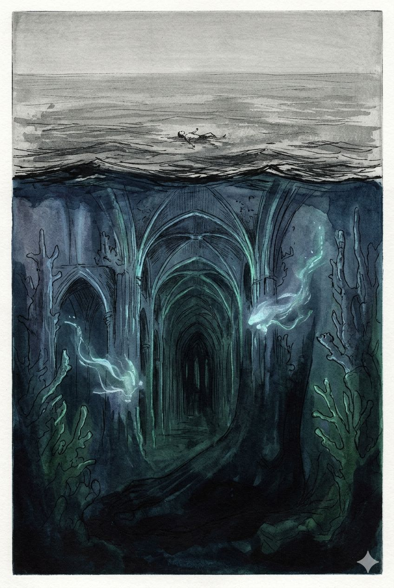
Libro Quinto, capítulo XIV, Pip en el océano; Pip abandonado en el Pacífico y la visión del fondo que disolvió el límite entre él y el universo.
Pip solo en el Pacífico, y lo que vio en el fondo. El corpus lo describe en dos planos: arriba, un muchacho flotando en el océano más grande del mundo. Abajo, la visión que el océano le dio y que disolvió el velo entre él y el universo —insectos de coral construyendo catedrales en la oscuridad, criaturas sin nombre, y al fondo de todo, el pie de Dios en el pedal del telar. Esta es la imagen que ninguna descripción verbal del corpus puede predecir completamente: la diferencia entre el pie de Dios en el pedal del telar como frase y como imagen es la diferencia entre saber que algo existe y verlo. Merece existir porque es el único momento del corpus en que alguien llega adonde Ahab quería llegar —y llegó por accidente, no por persecución.
No he hablado suficiente de Pip, que es un error que solo puedo disculpar diciéndome que ciertos personajes son tan centrales que uno los rodea sin atreverse a señalarlos directamente, como los ojos rodean al sol.
Pip era el tamborileo del Pequod: un muchacho negro de Tolland County, Connecticut, pequeño y brillante y alegre con esa alegría específica de los que todavía no han sido alcanzados por lo que los alcanzará. Tocaba el tambor en las fiestas de la tripulación. Tenía una sonrisa que el texto del mundo todavía no había tachado. Tenía dieciséis años o algo así, aunque en los barcos balleneros la edad se vuelve imprecisa porque el trabajo envejece y el mar rejuvenece y el resultado es inclasificable.
Lo pusieron en el bote de Stubb a reemplazar a un remero con la muñeca lastimada. La primera vez que bajó en la caza, estuvo bien: procesó el susto, procesó el ruido, procesó la proximidad de la ballena herida que golpeaba el fondo del bote con su cola con la energía de algo que está muriendo y todavía no lo acepta.
La segunda vez, Pip saltó del bote.
Saltó cuando la ballena golpeó, que es lo peor que puede hacer un remero en plena caza: pone la vida del animal en riesgo por distracción, pone en peligro al bote que puede volcar al intentar el rescate, pone en peligro su propia vida porque un hombre en el agua durante la caza es un hombre en el peor lugar posible del universo.
Stubb lo había advertido con la claridad que solo da la experiencia: Si saltas otra vez, no te recojo. En Alabama, una ballena vale treinta veces lo que vale un esclavo. Tenlo presente.
Pip lo tuvo presente. Y saltó de todas formas, porque el miedo que tiene que ver con la vida del cuerpo es más urgente que el miedo que tiene que ver con la lógica.
Stubb no lo recogió. Había otros botes que podrían haberlo recogido, pero los otros botes vieron ballenas y eligieron las ballenas, porque eso es lo que hace la caza: convierte la lógica del grupo en la lógica del objetivo inmediato, y el objetivo inmediato era la ballena, no el chico que flotaba.
El barco lo encontró. No fue intención de nadie en particular: fue la geometría de la búsqueda que, eventualmente, hace que el barco pase por donde el hombre está. Pip fue subido a bordo. El mar lo devolvió.
Pero no lo devolvió entero.
Lo que el mar se quedó no tiene nombre preciso en ningún idioma que yo conozca. No fue su cordura, exactamente —Pip seguía funcionando, seguía hablando, seguía razonando con una lógica interna que era perfectamente consistente aunque incomprensible desde fuera. Lo que el mar se llevó fue el velo. La membrana entre Pip y el resto del universo se disolvió en el agua del Pacífico y no volvió a formarse.
Pip vio el fondo. Vio lo que hay en el fondo del océano más profundo del mundo, donde la luz no llega y la presión aplasta todo lo que la superficie consideraría materia viva. Vio los insectos de coral construyendo sus catedrales en la oscuridad. Vio las criaturas que nunca han sido nombradas porque nunca han sido vistas excepto por los que no volvieron a contarlo. Y vio, en el fondo de todo eso, algo que el narrador describe como el pie de Dios en el pedal del telar.
Y cuando subió de nuevo a la superficie ya no pudo pretender que no lo había visto.
La insanidad del hombre es la cordura del cielo; y errando por toda razón mortal, el hombre llega al fin a ese pensamiento celestial que, para la razón, es absurdo y frenético; y dichoso o desgraciado, se siente entonces indiferente, como su Dios.
Ahab lo entendió en el acto. Ahab reconoció en Pip al único ser a bordo que había estado donde él quería ir, que había visto lo que él perseguía ver, que había llegado a través del terror en lugar de a través de la persecución. Y lo que Ahab encontró en los ojos de Pip fue lo que más temía encontrar: no el vacío, no el horror vacuo, sino la presencia de algo que había visto y que por haberlo visto ya no podía actuar en el mundo de la manera ordinaria.
—Tocas mi centro más íntimo, muchacho —le dijo Ahab—. Estás atado a mí por cuerdas tejidas de las fibras de mi propio corazón. Vivirás en mi cabina.
Y Pip vivió en la cabina de Ahab, que era el lugar más extraño del barco y el único lugar donde dos personas que estaban igualmente fuera del mundo ordinario podían estar juntas sin que eso resultara en ningún tipo de violencia.
Era la única ternura de Ahab. Era también lo que Ahab tuvo que abandonar.
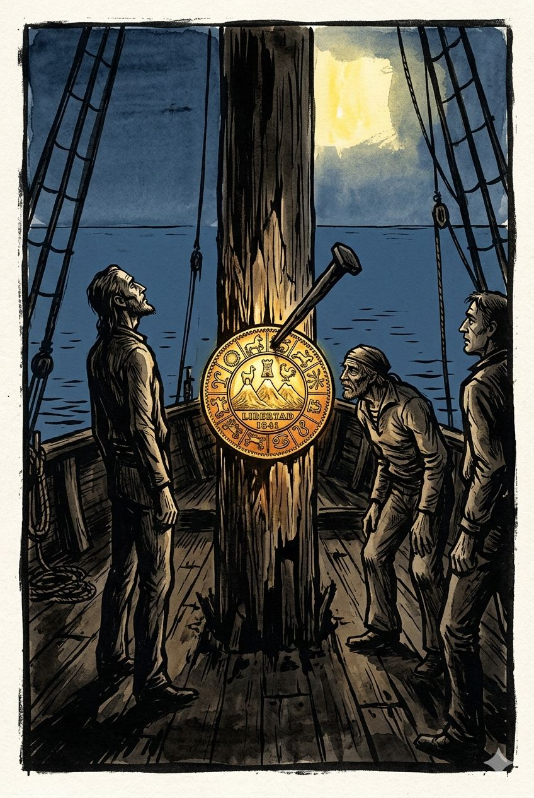
Libro Quinto, capítulo XV, El doblón; el doblón ecuatoriano como espejo del universo y de quien lo contempla.
El doblón ecuatoriano clavado en el mástil mayor del Pequod. El corpus dedica un capítulo entero a los hombres que lo miran uno por uno, y cada uno ve solo lo que ya es: Ahab ve sus propias cumbres en todas las cimas de la moneda; Starbuck ve el valle oscuro entre las luces; Stubb lo lee como un almanaque; Flask ve dieciséis dólares y novecientos sesenta cigarros; Pip conjuga el verbo mirar en todas sus personas y con eso lo dice todo. El doblón no cambia. Los hombres que lo rodean se revelan.
El doblón ecuatoriano llevaba semanas clavado en el mástil mayor cuando Ahab pasó frente a él una mañana y lo miró durante largo tiempo, como si el tiempo que había pasado desde que lo clavó hubiera añadido significado a la moneda que no tenía cuando la clavó.
—Hay algo egotista en las cumbres de las montañas y en los volcanes y en todo lo que es alto y orgulloso —murmuró—. Mira aquí: tres cumbres como tres Lucifers. La torre firme es Ahab. El volcán es Ahab. El gallo valiente es Ahab. Todos son Ahab. Y esta moneda redonda no es más que la imagen del globo más redondo aún, que como el espejo de un mago devuelve a cada hombre su propio misterio.
Y bajó.
Starbuck pasó ante el doblón después de él y lo miró con otros ojos. Vio el valle oscuro entre las tres cumbres iluminadas, y en ese valle vio lo que un hombre religioso ve en los espacios entre la luz: la posibilidad de la gracia que llega de lo alto, la posibilidad del sol que se mueve y que a medianoche no está y que no puede invocarse cuando más se necesita. Esto me habla con verdad —pensó—. Pero con una verdad que, si la abrazo completamente, me paraliza.
Stubb sacó su almanaque y leyó el zodíaco del canto de la moneda como si fuera un texto sagrado al alcance de cualquiera: Aries que engendra, Tauro que golpea, Géminis que divide al hombre en sus dos naturalezas contradictorias, Cáncer que arrastra hacia atrás, Leo que bloquea, y así sucesivamente hasta Piscis que duerme. El sol pasa por todo eso cada año —pensó Stubb— y sale vivo y alegre. Lo mismo el viejo Stubb.
Flask vio dieciséis dólares y novecientos sesenta cigarros, que es toda la filosofía que Flask necesitaba y que, en su contexto específico, era perfectamente suficiente.
Queequeg miró el doblón, miró su propio muslo tatuado, y siguió mirando de uno a otro con la expresión de quien busca una correspondencia que sabe que está ahí pero que no puede articular porque la articulación requeriría un idioma que todavía no existe.
Y Pip fue el último.
Pip se paró frente al doblón, lo miró durante un momento, y luego dijo:
—I look, you look, he looks; we look, ye look, they look.
Y lo repitió. Y lo volvió a repetir. Y luego dijo que todos eran murciélagos y que él era un cuervo, y señaló hacia el espantapájaros que estaba de pie en el timón, y el espantapájaros era Ahab.
Ahab lo había oído todo. Se alejó murmurado que Pip era demasiado loco-sabio para su propia cordura, que es la confesión más honesta que Ahab hizo en todo el libro.
El día antes de que Moby Dick fuera avistada fue el día más tranquilo del viaje.
El Pacífico produjo ese día uno de esos cielos que hacen que el nombre del océano parezca correcto: una calma que no era ausencia de viento sino presencia de algo más suave, una luz que distribuía sus beneficios con la equanimidad de lo que no tiene preferencias, un horizonte tan nítido que parecía dibujado por alguien que nunca había cometido el error de hacerlo borroso.
Ahab estaba en cubierta antes del amanecer. Estuvo en cubierta toda la mañana. Al mediodía se inclinó sobre la borda y miró su sombra en el agua, y la sombra se hundía y se hundía a medida que él se inclinaba, como si su sombra quisiera llegar al fondo antes que él.
Starbuck se acercó. Se quedó de pie junto a Ahab sin decir nada durante el tiempo necesario para que el silencio dejara de ser incómodo y se convirtiera en compañía, que es un tiempo variable según los hombres que participan en él.
—Starbuck —dijo Ahab de repente—. Hace cuarenta años que empecé esto. Cuarenta años de océano, cuarenta años sin tierra, cuarenta años de picar la espina del leviatán con hierro y lazo. Y tengo una esposa en Nantucket que es viuda de un hombre vivo, y tengo un hijo que no conoce a su padre sino por lo que la madre le cuenta, y la madre le cuenta de un hombre que no viene.
Starbuck escuchó.
—Cuando pienso en este viaje que he llevado —continuó Ahab, con la voz del hombre que dice por primera vez algo que pensó muchas veces— en la desolación de la soledad del mando, en los cuarenta años comiendo harina salada cuando el hombre más pobre en tierra tiene fruta fresca en su mano cotidiana, en la muchacha con quien me casé pasados los cincuenta y a quien abandoné al día siguiente para zarpar hacia el cabo… Starbuck, ¿no es difícil? ¿No es muy difícil, con esta carga que cargo, que encima me hayan quitado la pierna?
Y aquí ocurrió lo que muy pocos a bordo habrían creído posible si no lo hubieran visto: una lágrima.
Cayó al mar. El Pacífico la recibió con la indiferencia del que ya contiene demasiado para que una gota más lo afecte, pero la frase que el narrador usa para describir ese instante es la más verdadera del libro: todo el Pacífico no contenía tal riqueza como esa gota pequeña.
Starbuck vio la apertura. Era la única apertura real que había habido en todo el viaje, la única grieta en la armadura de la obsesión de Ahab, y Starbuck la vio y entró.
—¡Capitán! ¡Todavía podemos! ¡Viremos ahora, regresemos, la esposa, el hijo, Nantucket en los días suaves del verano! He visto su rostro en el ojo de usted, capitán; he visto al niño en la colina esperando la primera vela.
Ahab escuchó. Y algo en Ahab escuchó de verdad, que era la parte de Ahab que seguía siendo el hombre de antes de la pierna, el hombre de antes del océano, el hombre que había estado en tierra alguna vez y había tenido una mañana y un café y un periódico y los pequeños placeres del domicilio fijo.
Y ese algo respondió. Y esa respuesta fue lo más cercano que Ahab estuvo jamás de volver.
Luego la mirada de Ahab se alejó del horizonte donde Starbuck señalaba —el horizonte del hogar, el horizonte de vuelta— y volvió al horizonte de enfrente, que era el horizonte de lo que quedaba por hacer.
—¿Qué es eso innombrable, inscrutable, inconcebible que me manda? —murmuró Ahab, para sí mismo más que para Starbuck—. ¿Soy yo, o es Dios, o quién el que levanta este brazo?
Y eso fue todo. El árbol arruinado dejó caer su última manzana carbonizada al suelo. La apertura se cerró.
—Ve a tu puesto, Starbuck.
Ahab olfateó el aire aquella noche en la guardia de medianoche y dijo que había una ballena cerca. Llevaba cuarenta años en este oficio. El olfato del cazador veterano es una forma de conocimiento que el lenguaje no puede transmitir pero que el cuerpo aprende: una información que viene de abajo del pensamiento consciente y que llega a la conciencia ya convertida en certeza.
Al amanecer: el rastro en el agua. Esa perturbación oleaginosa y quieta que deja el cachalote en su paso, como una firma en el papel del océano, como la huella de algo que pasó hace poco y que fue demasiado grande para no dejar rastro.
—¡Man the mast-heads! —gritó Ahab—. ¡Izadme!
Subió en la canastilla que él mismo había mandado hacer, porque ya no fiaba de sus piernas —la de hueso y la de carne— para trepar los aparejos. Lo izaron hasta el mastelero. Desde allí miró el horizonte con los ojos del hombre que ha dedicado su vida a encontrar una cosa y que ahora está en el lugar más alto disponible, mirando en la dirección correcta, con el viento correcto y la luz correcta.
—¡Allá sopla! —gritó—. ¡Una joroba como una colina de nieve! ¡Es Moby Dick!
El nombre recorrió el barco como un rayo recorre un árbol grande: de la copa a las raíces, en un instante, dejando todo el sistema nervioso del árbol activado y quemado simultáneamente.
Los botes se lanzaron. El Pequod se detuvo para esperar.
La ballena blanca estaba en la superficie a una milla, quizás algo más. Nadaba con esa calma que produce el terror más específico: la calma de lo que no tiene depredadores, de lo que no ha aprendido el miedo porque nada en su historia le ha enseñado que debe tenerlo.
No era blanca exactamente. Era de un blanco que contenía la totalidad de los colores o su ausencia completa, dependiendo de si uno cree que el blanco es suma o vacío. Sus flukes salían a la superficie y volvían a sumergirse con la regularidad de algo que respira su propio mar. Su joroba brillaba como un campo de nieve bajo el sol de la mañana.
Los botes se acercaron. Los arpones se lanzaron. La ballena sumergió.
Y luego subió.
No desde el mismo lugar: desde abajo de los botes, directamente debajo de ellos, con la mandíbula abierta, con la velocidad de algo que tiene ochenta toneladas y las mueve como si no pesaran nada. Los botes se rompieron como si fueran de papel mojado. Los hombres cayeron al agua. Los arpones se perdieron.
Y Moby Dick quedó en la superficie, rodeada de los restos de tres embarcaciones, con la expresión —si una ballena puede tener expresión— de algo que ha hecho lo que tenía que hacer y ahora espera lo siguiente.
Ahab fue sacado del agua. Perdió su pierna de marfil en el impacto: la ballena la había partido en astillas. Preguntó por Fedallah. Fedallah no aparecía en ningún bote.
—¿Lo vieron? —preguntó.
Nadie lo había visto desde el momento del ataque.
—Mañana —dijo Ahab, con la voz del que ha calculado esto de antemano y simplemente está verificando que el cálculo fue correcto—. Mañana los botes al agua al amanecer.
La profecía de Fedallah era esta: que Ahab vería dos funerarias en el mar antes de su muerte. La primera no hecha por manos humanas. La segunda de madera americana. Y que Fedallah iría ante él como su piloto.
En el segundo día, cuando los botes alcanzaron a Moby Dick en su tercer encuentro de la caza y los arpones comenzaron a entrar en el cuerpo blanco de la bestia, las líneas de los arpones se enredaron en torno a algo que no era el cuerpo de la ballena sino más delgado, más pequeño, articulado de una manera que las líneas no deberían poder articular.
Era Fedallah. Enredado en las líneas que rodeaban el cuerpo de la ballena blanca, muerto, sostenido en el costado del animal por los mismos cables que habían hecho el trabajo de sus arpones, los ojos abiertos mirando hacia el cielo con la expresión de quien ha cumplido exactamente lo que prometió.
La primera funeraria: el cuerpo de Fedallah llevado por la ballena blanca. No hecha por manos humanas: hecha por el océano, por la caza, por la lógica de lo que ocurre cuando los hombres van demasiado cerca de lo que no puede cazarse.
Ahab lo vio. Ahab reconoció en el acto lo que estaba viendo: no solo la muerte de su harponero privado sino el cumplimiento del primer término de la profecía, lo cual implicaba que los demás términos también se cumplirían. Lo vio y abrió la boca y lo que dijo no fue ninguna de las cosas que los hombres dicen cuando comprenden que su destino se está realizando frente a ellos:
—¡Los botes al agua!
Starbuck lo tomó del brazo.
—Capitán. Fedallah está muerto. La profecía se cumple. Es la señal más clara que podríamos recibir. Por amor de Dios, regresemos.
—La profecía también dice que lo que sigue se cumplirá —respondió Ahab—. ¡Los botes al agua!
Y los botes bajaron. Y Moby Dick los esperó con la paciencia de lo que no tiene prisa porque el tiempo trabaja para ello. Y los destruyó nuevamente, con la fuerza de un elemento que simplemente es y que, al ser de esa manera, aplasta sin intención y sin malicia todo lo que se interpone.
Ahab fue sacado del agua por segunda vez. Preguntó cuántos hombres se habían perdido. Le dijeron el número. Dijo: mañana.
Al amanecer del tercer día, Ahab se dirigió a la tripulación. Lo hizo con la voz tranquila del que ya no necesita convencer sino que simplemente enuncia.
—Ahab es Ahab para siempre —dijo—. Este mundo no es más que una pelota. La sostuve en mi locura y la suelto. Pero la ballena la suelto last. ¡Los botes al agua!
Al amanecer, los botes se lanzaron por tercera vez. El Pacífico estaba quieto en esa luz particular del amanecer que hace que todo parezca posible y que los navegantes aprenden a desconfiar precisamente por eso.
Moby Dick estaba en la superficie a media milla.
Pero esta vez la ballena no esperó a que los botes llegaran a ella. Esta vez, Moby Dick viró. Y comenzó a nadar no hacia ningún horizonte sino hacia el Pequod mismo.
Hacia el barco.
Los que estaban en el barco lo vieron venir. Starbuck lo vio desde la cubierta y entendió en un instante lo que significaba y lo que no podía hacer para impedirlo. La tripulación lo vio y corrió, aunque no había adónde correr en un barco que es el objetivo de lo que viene.
Moby Dick embistió el Pequod por el casco de babor con la fuerza de ochenta toneladas en movimiento, que es la fuerza de algo que el lenguaje de la física puede cuantificar pero que el lenguaje del terror no puede completamente describir. El barco se sacudió desde la quilla hasta la cofa. El casco cedió. El agua entró.
El Pequod comenzó a hundirse con la dignidad lenta de las cosas que han sido fieles durante largo tiempo y que cuando ceden, ceden con decoro.
Ahab, en su bote, vio lo que ocurría al barco. Y lanzó su arpón.
El arpón forjado en herraduras de caballos, templado en sangre de paganos, bautizado en el nombre del diablo, entró en el cuerpo de Moby Dick con el sonido de todo lo que Ahab había sido y hecho y prometido y sacrificado.
La línea del arpón salió del carrete. La línea silbó. Y en un instante —en el instante que separa lo que fue del lo que es— la línea se enredó en el cuello de Ahab y Ahab fue silenciado.
Silenciado: esa es la palabra que corresponde. No muerto, todavía no en ese instante. Silenciado. La voz que había gobernado el barco y la caza y la tripulación y todo lo que en este libro se ha narrado, silenciada por la misma línea que unía al cazador con el objeto de su caza.
Y Ahab fue al fondo con la velocidad de su arpón, que era la velocidad de la obsesión cuando finalmente se consuma.
El bote giró sobre el vórtice. Los remeros del bote fueron absorbidos.
El Pequod siguió hundiéndose.
Y en la cima del mástil que descendía —mientras toda la tripulación que quedaba se debatía en el agua o se aferraba a los restos de los botes— Tashtego seguía trabajando. Tashtego seguía clavando la bandera del Pequod al mastelero que descendía, porque Tashtego era el tipo de hombre que hace su trabajo hasta el final, que clava banderas en los mástiles que se hunden porque eso es lo que se hace con las banderas y los mástiles, independientemente de lo demás.
Y en el instante en que el mástil cruzó la línea del agua, un halcón del cielo pasó exactamente en ese punto exactamente en ese momento, y el martillo de Tashtego lo atrapó, y el halcón fue al fondo con el mástil y con Tashtego y con el barco y con todo lo que el barco contenía y todo lo que el barco había sido.
El ala del pájaro fue lo último visible. Un ala que descendía, inclinada hacia el cielo como una despedida hecha en el idioma de las cosas que no tienen palabras.
El vórtice giró durante segundos o minutos —el tiempo en el océano no funciona como en tierra— y luego cerró.
El océano quedó quieto.
Quedó quieto con la quietud específica de los lugares donde acaba de ocurrir algo grande y que ahora no muestran ninguna señal de que ocurrió.
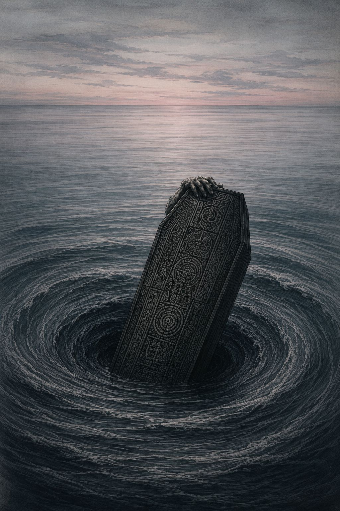
Epílogo; el ataúd-salvavidas de Queequeg emergiendo del vórtice como único sostén del único sobreviviente del Pequod.
El ataúd de Queequeg emergiendo del vórtice. El recipiente de un muerto convirtiéndose en sostén de un vivo. La madera cubierta de tallas que reproducen la teoría completa del cielo y de la tierra escrita en un idioma que nadie puede leer —ni siquiera el propio Queequeg, que lo copió de un profeta muerto de Kokovoko. Esta es la imagen final del corpus y la más paradójica: el objeto construido para guardar la muerte mantiene la vida. Queequeg cuidando a Ishmael desde el fondo de su propia muerte, que es lo que hacen las personas que vivieron correctamente. Merece existir como imagen porque en ella la ironía es tan completa que deja de ser ironía y se convierte en algo que no tiene nombre.
“Y solo yo escapé para contártelo.” —Job
El ataúd de Queequeg subió del vórtice.
Subió como suben los corchos, como sube todo lo que puede flotar cuando el vórtice que lo tenía bajo se cierra: sin urgencia, obedeciendo a la física elemental que no tiene preferencias morales y que trata con la misma ecuanimidad al sobreviviente y al resto.
El ataúd que Queequeg había mandado hacer cuando creyó que iba a morir de fiebre, que había llenado con sus pertenencias y sobre el que había tallado durante semanas con su formón una reproducción de los tatuajes de su cuerpo —la teoría completa del cielo y de la tierra escrita en su propia piel por un profeta de Kokovoko ya muerto, en un idioma que ni siquiera Queequeg podía leer—, ese ataúd el carpintero lo había convertido en salvavidas por orden de Starbuck cuando el salvavidas original se había perdido.
El ataúd de la muerte convertido en instrumento de la vida. El recipiente de un muerto convertido en sostén de un vivo. La ironía era demasiado grande y demasiado precisa para ser accidental, aunque todo lo que ocurre en el océano tiene exactamente esa apariencia: demasiado preciso para ser azar, demasiado vasto para ser intención.
Me aferré a él.
Ishmael. El único sobreviviente del Pequod y de todo lo que el Pequod fue. No el harponero más valiente. No el primero que avistó la ballena. No el que pronunció el juramento más ferviente ni el que más arpones lanzó. El testigo. El que vino al mar sin propósito heroico, el que firmó por el lay más miserable, el que tejió esteras y rezó a Yojo y escuchó los relatos de los gams y no mató ninguna ballena y no tuvo ninguna visión que lo transformara irreversiblemente y no hizo ninguna promesa que lo atara a ningún destino particular.
Sobreviví. Aferrado al ataúd de mi amigo, que flotaba porque Queequeg lo había hecho con la misma seriedad con que hacía todo lo demás: bien. El ataúd flotaba porque Queequeg lo había construido bien. Queequeg me mantuvo a flote desde el fondo de su muerte, que es lo que hacen las personas que vivieron correctamente.
Pasé un día y una noche aferrado al ataúd en el Pacífico. El océano más grande del mundo y yo, y entre los dos el ataúd de Queequeg como mediador, como el objeto que hace posible que dos cosas de escalas incompatibles compartan el mismo espacio sin que la más grande destruya a la más pequeña.
Al segundo día, la Rachel apareció en el horizonte.
La Rachel, que llevaba días rastreando el océano en busca del bote perdido con el hijo del capitán, que navegaba en zigzag sobre las aguas con la persistencia del dolor que no acepta la información del océano, que se negaba a concluir lo que todos los indicios concluían. La Rachel, que Ahab había rechazado cuando el capitán Gardiner se arrodilló metafóricamente a pedirle que lo ayudara a buscar a su hijo, y que Ahab había rechazado con la frialdad del que ha suspendido la compasión como un lujo que no puede permitirse en esta etapa del viaje.
La Rachel encontró a otro huérfano en lugar del suyo.
Me rescataron. Me dieron agua y comida y un lugar donde sentarme mientras el barco me alejaba del lugar donde el Pequod había sido. No miré hacia atrás. No porque me faltara valor para hacerlo, sino porque no había nada que ver: el océano había cerrado su boca sobre el Pequod con la misma completud con que cierra su boca sobre todo lo demás.
No hay rastro. Nunca hay rastro. El océano es el único archivo que no conserva sus documentos.
El océano es más viejo que todo lo que contiene y más viejo que todo lo que lo nombra. Más viejo que los continentes, que son sus bordes y no su definición. Más viejo que las palabras que usamos para nombrarlo —mar, océano, profundo, abismo, infinito— que son todas insuficientes aunque sean numerosas, porque lo que nombramos con esas palabras es algo que no cabe en ninguna de ellas sino en todas juntas y todavía sobrando.
La ballena blanca sigue en algún lugar del Pacífico. O sigue algo que es lo que la ballena blanca era para quienes la buscaban: la presencia de lo que no puede ser reducido a objeto de caza aunque sea el objeto de la caza, de lo que existe en una escala que hace que nuestras obsesiones parezcan, vistas desde la altura correcta, exactamente lo que son: urgentes, genuinas, completamente humanas, y finalmente insuficientes.
Ahab buscó conocer a través de la destrucción. Quería atravesar lo que él llamaba la máscara del universo con su arpón, quería que la máscara sangrara y en esa sangre leer lo que el universo le había negado: la respuesta a la pregunta de si lo que le ocurrió fue querido por alguien o simplemente ocurrió, que es la pregunta que todos los hombres hacen después de ciertos daños y que el universo responde siempre de la misma manera.
El universo no respondió. O respondió de la única manera que responde a ese tipo de pregunta: con la línea que silencia al que pregunta.
Pip llegó a la respuesta por otro camino. El camino del abandono total, de la soledad absoluta, del hombre solo en el océano que se hunde hasta el fondo sin intención de hundirse, que llega por accidente donde Ahab quería llegar por voluntad. Y llegó. Y lo que encontró allá lo destruyó en un sentido y lo liberó en otro, y Pip vivió el resto del viaje en ese espacio extraño entre los dos, diciendo verdades que nadie entendía porque las decía en el idioma de quien ya no vive completamente en este lado del umbral.
Yo sobreviví porque no busqué nada que requiriera llegar al fondo. Sobreviví porque soy Ishmael: el que camina al margen del destino de los otros, el que observa con atención suficiente para entender pero sin la intensidad que destruye.
No sé si eso me hace sabio. Sé que me hace vivo, que es distinto.
Lo que el mar me dio fue esto: la historia. El conocimiento de que ocurrió, de cómo ocurrió, de quiénes eran los que lo protagonizaron y qué los movía.
Y la obligación que Job reconoce en la frase más breve y más larga que existe:
Y solo yo escapé para contártelo.
No para explicarlo. No para resolverlo. Para contarlo.
Hay una sabiduría que es pena; pero hay una pena que es locura. Y hay un águila de los Catskill en ciertas almas que puede sumergirse igualmente en los más negros barrancos, y salir de ellos de nuevo y volverse invisible en los espacios soleados. Y aunque vuele para siempre dentro del barranco, ese barranco está en las montañas; de modo que incluso en su descenso más bajo el águila de la montaña está todavía más alta que otros pájaros en la llanura, aunque estos vuelen.
Fin
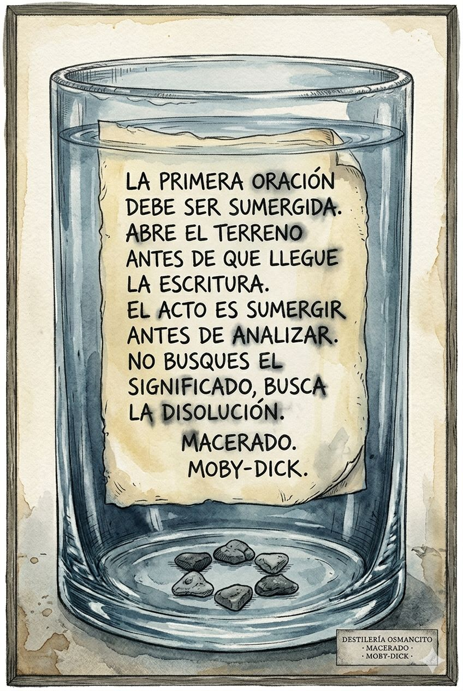
Una página de texto sumergida en agua clara dentro de un recipiente de vidrio grueso, vista desde el exterior. La tinta no ha corrido todavía —el papel aún sostiene las palabras— pero la inmersión ha comenzado: los bordes se ablandan, la fibra cede, el texto empieza a pertenecer al agua tanto como al papel. En el fondo del recipiente, seis piedras pequeñas dispuestas en forma de estrella irregular: los seis vértices del instrumento, presentes sin ser nombrados. El acto es sumergir antes de analizar —abrir el terreno antes de que llegue la escritura.
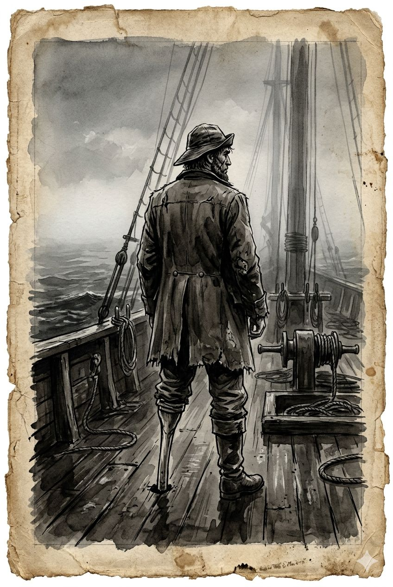
La primera aparición de Ahab en cubierta (capítulo 28), descrita por el análisis como “el silencio antes del volcán”: la marca, la pierna de marfil, la inmovilidad —y el texto que se niega a explicar lo que significa.
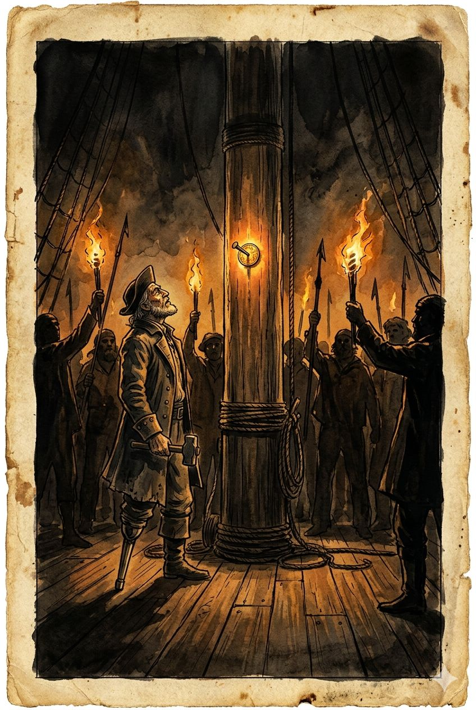
La escena del Quarter-Deck (capítulo 36), identificada en el análisis como el evento irreversible más importante de la novela: el momento en que el Pequod deja de ser un barco ballenero y se convierte en otra cosa.
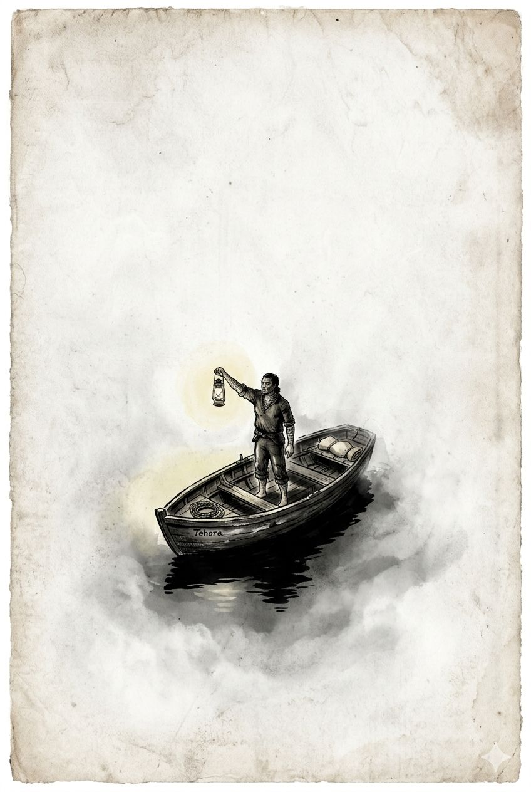
Capítulo 48, primera bajada de los botes: Queequeg sostiene el farol en alto en la niebla del Pacífico. El análisis lo señala como “la imagen más precisa del libro hasta ese punto”: la señal y el símbolo de un hombre sin fe que sostiene la esperanza sin creer en ella.
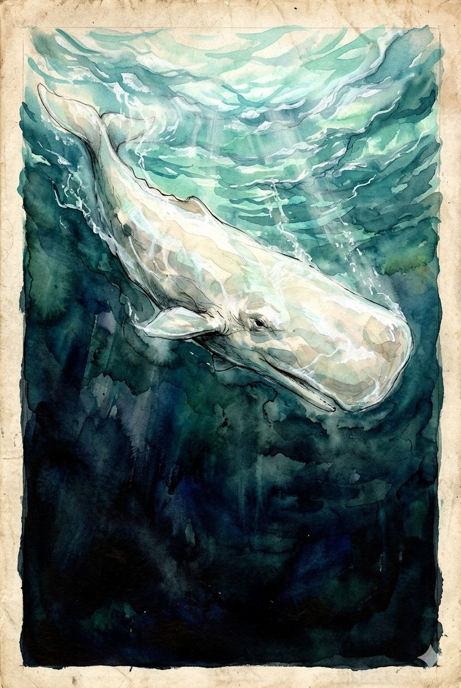
La ballena blanca tal como ningún personaje del libro puede verla: desde abajo, desde dentro del océano, mirando hacia arriba. El análisis describe el horror de la blancura (capítulo 42) pero siempre desde la perspectiva del barco. Esta imagen encarna lo que el corpus circunda sin poder ver.
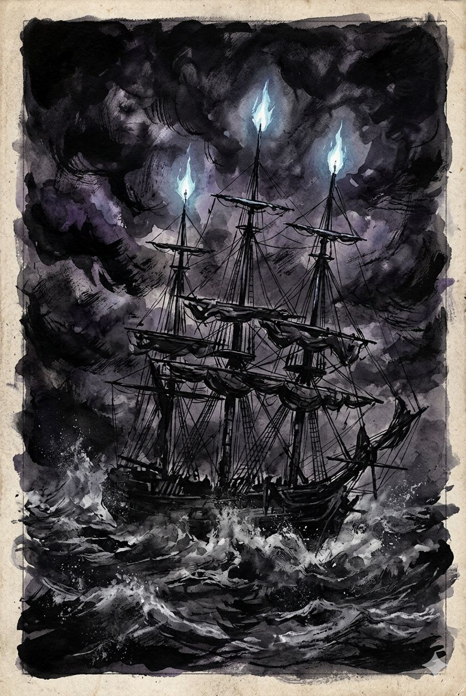
Los tres mástiles del Pequod encendiéndose con fuego de San Telmo durante el Tifón (capítulo 119). El análisis lo identifica como el signo leído en dos direcciones opuestas simultáneamente por Starbuck y Ahab: eso es el destino en esta novela.
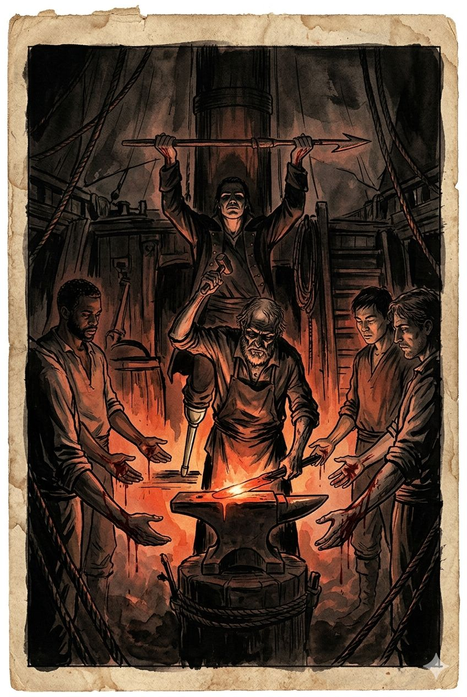
La forja del arpón bautizado en sangre pagana (capítulos 112-113). El análisis lo nombra como “el evento más explícitamente litúrgico de la novela”: la inversión del bautismo, el arma consagrada al diablo antes de existir.
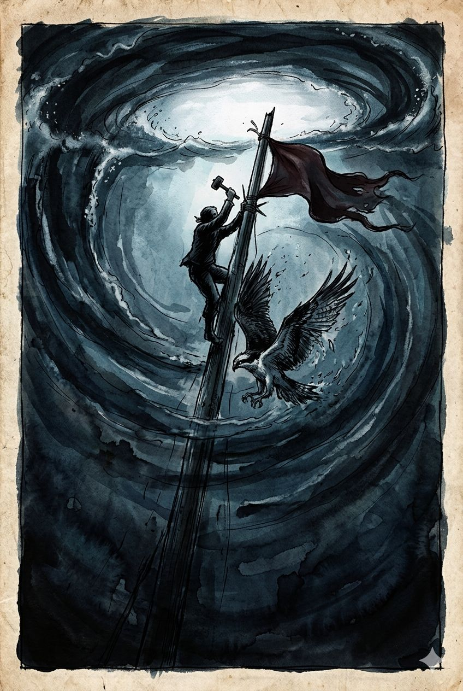
El momento final del capítulo 135: Tashtego en lo alto del mástil que desciende, clavando la bandera del Pequod, y atrapando un halcón del cielo con el martillo en el instante de la inmersión. El análisis lo describe así: “El barco se lleva al cielo consigo al hundirse.”
El macerado completo de Moby-Dick revela una obra donde los seis vértices operan con intensidad máxima y sostenida. El mythos es una de las arquitecturas causales más precisas de la novela occidental. El ethos sostiene cuatro personajes de complejidad irreducible. El kairos es un mecanismo de relojería aplicado a 135 capítulos. El pathos alcanza temperaturas que pocos textos del siglo XIX igualan. La lexis es trilingüe (inglés, latín, dicción técnica cetológica) y creadora de neologismos. El tropos es una voz que no tiene equivalente en su época.
El fragmento I construye el sistema causal en dos tiempos: uno terrestre, uno cósmico.
El tiempo terrestre es la cadena de eventos que lleva a Ishmael a bordo del Pequod: la inquietud sin nombre del capítulo 1, la llegada a New Bedford, el encuentro con Queequeg, la elección del barco, la firma del contrato. Esta cadena tiene la forma de una convergencia: cada paso parece contingente, pero en retrospectiva resulta inevitable. Ishmael mismo lo dice: creyó elegir libremente, pero los “stage managers, the Fates” ya lo tenían distribuido en el programa.
El evento irreversible más importante de este fragmento no es la partida del Pequod —eso es consecuencia— sino la escena del capítulo 36, The Quarter-Deck, donde Ahab revela públicamente su verdadera misión. Hasta ese momento el barco era un barco ballenero; después de ese momento es otra cosa. Ahab clava el doblón de oro en el mástil, hace beber a la tripulación del asta de los arpones, y la fragata se convierte en instrumento de su venganza. Todo lo que seguirá en los fragmentos II y III —las gams, las tormentas, las muertes— son consecuencias directas de ese nodo.
Los eventos preparatorios que anteceden a ese nodo forman una estructura de umbral. El Etymology y los Extracts no son decoración: instalan al lector en una comprensión del Leviatán que va de Génesis a las bitácoras de capitanes anónimos, de la poesía a la biología. La ballena llega al capítulo 1 ya cargada de dos mil años de significación humana. Cuando Ahab la nombra, no nombra un animal: nombra todo eso.
Los eventos que el fragmento I deja abiertos —sin resolución— son: el destino del Pequod, la naturaleza de la cicatriz de Ahab, la identidad de las sombras que Elijah vio subir a bordo en la madrugada, la profecía de Tistig. Todos forman parte del sistema causal; ninguno se cierra aquí.
El fragmento II es el largo cuerpo del viaje: el Pequod ya está en mar abierto, la misión de Ahab ha sido proclamada, y lo que sigue es el mundo en toda su extensión antes de que la cacería final comience. La estructura causal en este tramo no avanza en línea recta: avanza en espiral. Cada gam —cada encuentro con otro barco— es un nodo que añade información, presión, o advertencia al sistema sin cerrarlo. El mythos de este fragmento es acumulativo, no resolutivo.
Los eventos irreversibles son tres.
El primero es la aparición de Fedallah y su tripulación en el capítulo 48. Ahab los había embarcado clandestinamente antes de zarpar. Su presencia convierte al Pequod en algo que ya no es exactamente un barco ballenero: es el instrumento personal de Ahab hasta en sus tripulantes. Fedallah —silencioso, de turbante blanco, con un diente de acero— funciona como la sombra exteriorizada de Ahab. Desde ese momento, el lector sabe que la nave está completamente capturada.
El segundo es la historia del Town-Ho (capítulo 54). Steelkilt y Radney: el motín y su resolución a través de Moby Dick, que mató al agresor en lugar del vengador. La ballena blanca aparece aquí como instrumento de la justicia cósmica —o de la casualidad que se parece a la justicia. Esta historia, contada por Ishmael en Lima años después, instala la posibilidad de que el universo sí tenga una lógica moral, y esa posibilidad es lo más perturbador que puede haber en una novela donde Ahab desafía precisamente esa posibilidad.
El tercero es el rescate de Tashtego por Queequeg en el capítulo 78. Tashtego cae dentro de la cabeza del cachalote mientras la vacían de esperma; Queequeg se lanza al agua, abre la cabeza con su espada, y saca al indio por los pies —o más bien, como corrige el narrador con humor médico, lo da vuelta para sacarlo de cabeza en la posición correcta para el nacimiento. Este episodio es reversible en su resultado, pero irreversible en su significación: Queequeg vuelve a demostrar que su moralidad no necesita ser convocada ni explicada. Actúa.
Los eventos que el fragmento deja abiertos: la naturaleza de Fedallah y su vínculo con Ahab, la profecía implícita de Elijah, la identidad de Moby Dick como fuerza activa o pasiva del mundo.
El fragmento III es la contracción final. Todo lo que los fragmentos anteriores instalaron —el sistema causal, las advertencias, las profecías, los nodos de alta tensión— converge aquí en una sola dirección. El mythos deja de ser espiral y se vuelve recto: una línea que cae.
Los eventos irreversibles son cinco, y se suceden con aceleración creciente.
El primero es la caída de Pip al océano (capítulo 93). Stubb cumple su amenaza y no lo recoge. El mar devuelve el cuerpo de Pip pero no su alma: lo que sube a bordo es el cascarón de un hombre que ha visto el fondo del universo. “The sea had jeeringly kept his finite body up, but drowned the infinite of his soul.” Pip regresa como el único personaje del libro que ha visto lo que Ahab busca ver —y lo ha visto desde el otro lado. Lo que Ahab persigue como venganza, Pip lo alcanzó como locura. El texto establece aquí una ecuación perturbadora: la respuesta al misterio del universo existe, pero solo es accesible al que pierde la razón.
El segundo es la forja del arpón en los capítulos 112–113. Ahab comisiona a Perth la forja de un arpón hecho de herraduras de caballos de carrera —el acero más resistente— y lo templa no en agua sino en la sangre de los tres arponeros paganos. Lo bautiza “in nomine diaboli”. Este es el evento más explícitamente litúrgico de la novela: Ahab no solo ha invertido la misión del barco, ha invertido el sacramento del bautismo. El arma que pretende matar a Moby Dick ha sido consagrada al diablo antes de existir. Lo que sigue es consecuencia sacramental.
El tercero es la escena del Tifón y las velas de San Telmo (capítulo 119). El Pequod es azotado por la tormenta; los mástiles se encienden con fuego de San Telmo —tres llamas en tres mástiles, como tres cirios ante un altar. Ahab agarra las cadenas del pararrayos, desafía al fuego como si fuera una divinidad, y cuando el arpón forjado también se enciende con una llama pálida, Starbuck ve en ello la señal inequívoca de la voluntad de Dios contra el viaje. Ahab la ve como confirmación. El mismo signo leído en direcciones opuestas: eso es el destino en esta novela.
El cuarto es el encuentro con la Rachel (capítulo 128). El capitán Gardiner ha perdido a un hijo en la persecución de Moby Dick y suplica a Ahab que le ayude a buscarlo. Tiene dos hijos en peligro. Ahab —que también tiene un hijo pequeño en Nantucket— se niega. Esta es la escena más oscura moralmente del libro: Ahab no es incapaz de compasión, la ha suspendido deliberadamente. El texto lo confirma cuando Ahab murmura “may I forgive myself” mientras se aleja. Sabe lo que está haciendo.
El quinto es la Sinfonía (capítulo 132), el único momento del libro en que Ahab parece a punto de ceder. En un día azul y quieto, ante Starbuck, llora. Habla de su mujer, de su hijo, de cuarenta años de mar. Casi lo dice: “¿Is Ahab, Ahab? Is it I, God, or who, that lifts this arm?” La pregunta es genuina: Ahab no sabe si elige o si es elegido. Starbuck ve la apertura y se lanza —“Away with me! let us fly these deadly waters!”— pero Ahab ya se ha cerrado. El único instante de redención posible en la novela pasa, y el libro lo sabe: “like a blighted fruit tree he shook, and cast his last, cindered apple to the soil.”
Lo que sigue —los tres días de caza— es resolución pura de todo lo que se instaló antes.
La caza de tres días (capítulos 133–135):
El primer día: Ahab avista a Moby Dick desde el mástil. Los botes se lanzan. La ballena destruye el bote de Ahab; la tripulación es rescatada. Ahab regresa al barco con una expresión de victoria inexplicable.
El segundo día: Moby Dick ataca con más violencia. Fedallah es arrastrado por las líneas enredadas en la ballena; aparece muerto, enredado en los cabos, colgado del costado de la ballena blanca. La primera profecía se cumple: Fedallah irá ante Ahab como su piloto. El arpón de Ahab, además, se rompe.
El tercer día: Ahab lleva la ballena por tercera vez. Moby Dick embiste al Pequod directamente. El barco se hunde. Ahab lanza su arpón; la línea que sale del carrete le rodea el cuello en un instante y lo arrastra al fondo. La segunda profecía se cumple: solo el cáñamo puede matarlo. El Pequod desaparece en el vórtice, llevando consigo a toda la tripulación —incluyendo a Tashtego, que en el último instante clava la bandera del barco al mástil que se hunde, y atrapa con el martillo a un halcón del cielo en el instante de la inmersión. Todo desaparece.
El Epílogo: Ishmael sobrevive aferrado al ataúd de Queequeg, que sube a la superficie desde el vórtice. La Rachel, buscando a sus hijos perdidos, lo rescata. La novela termina donde empezó: en el agua, en la soledad, en la supervivencia de quien no era el protagonista.
Ishmael. Su acto definitorio no es embarcarse —eso es síntoma— sino el instante del capítulo 10, cuando decide unirse al ritual pagano de Queequeg. En ese momento declara, con una lógica impecable y ligeramente cómica, que si adorar a Yojo es hacer la voluntad de su prójimo, entonces debe volverse idólatra. La lógica es absurda; la generosidad que la anima, genuina. Ishmael no es el héroe de esta novela: es el testigo que sobrevive porque sabe ceder, porque puede abrazar lo que no entiende sin necesitar controlarlo. Su voluntad se revela ante el mythos en su disposición a ser transformado, no en su impulso a actuar.
Queequeg. Su acto definitorio es el rescate del pasajero caído al mar en el capítulo 13. No hay drama en ese gesto: Queequeg se desnuda hasta la cintura, se lanza, nada como un perro, sube al hombre inconsciente a la superficie, y cuando todos lo vitorean, pide sólo agua dulce para quitarse la sal. Su moralidad es de una pieza, sin fisuras entre creencia y acción. La frase que lo define la dice Ishmael por él: “We cannibals must help these Christians.” El salvaje que ayuda al cristiano sin esperar reconocimiento invierte la jerarquía moral del siglo XIX de manera tan suave que casi no se nota.
Ahab. Su acto definitorio es el capítulo 36. Ahab no argumenta: convoca. La escena es litúrgica —copa, rito, juramento colectivo— y el objeto de ese rito es la destrucción de una ballena blanca. Lo que revela ese momento no es la locura de Ahab —Starbuck lo dirá: es locura— sino algo más perturbador: su capacidad de hacer que otros quieran lo que él quiere, de convertir su herida privada en propósito colectivo. Ahab seduce porque ha encontrado la forma de que su dolor parezca universal.
Starbuck. Aparece en los capítulos 26 y 36, y en ambos su voluntad se revela en el mismo acto: resistir y ceder. Starbuck ve la locura de la misión, la nombra, y después levanta la copa. Su tragedia está instalada aquí: es el único a bordo que podría detener a Ahab, y no puede. La razón que el narrador da —que Starbuck puede enfrentar cualquier terror natural, pero no los “more spiritual terrors” que emanan de un hombre de voluntad absoluta— es la clave de su función en la novela.
Ahab en este fragmento se revela en el capítulo 70, The Sphynx, donde está solo ante la cabeza cercenada del cachalote colgada del costado del barco. Lo que hace es hablarle. No como metáfora: literalmente. Le exige al animal muerto que le cuente los secretos del fondo del mar, que le diga lo que ha visto en los siglos bajo el agua. “Speak, thou vast and venerable head… not one syllable is thine!” La frase final define a Ahab con precisión: su horror más profundo no es la muerte sino el silencio del universo. Habla al muerto porque necesita que algo le responda; y que no haya respuesta lo enfurece más que cualquier pérdida.
Stubb se revela en la escena del capítulo 64 donde, después de matar su primera ballena, pide un bistec de la criatura a medianoche y luego obliga al cocinero anciano a predicar a los tiburones que devoran el cadáver junto al barco. La escena es grotesca y cómica en la superficie; en el fondo revela a un hombre que ha metabolizado completamente la muerte como parte del paisaje ordinario. Stubb no es cruel: es el hombre que encontró una forma de vivir con el trabajo que hace, y esa forma es la distancia sostenida por el humor. Su acto definitorio es no interrumpir su pipa ni durante la matanza.
Queequeg completa su carácter en este fragmento. Ya se reveló en el rescate del pasajero (F1); aquí se confirma en el rescate de Tashtego. Lo que define su voluntad ante el mythos es la completísima ausencia de hesitación entre el pensamiento y el acto. Queequeg no delibera. Ve el problema y entra al agua. El narrador añade un detalle que lo dice todo: después del rescate, Queequeg no lucía muy animado. No busca gloria; sólo le cuesta el esfuerzo físico.
Starbuck aparece con mayor frecuencia en este fragmento, y en cada aparición su acto es el mismo: ver con claridad lo que está sucediendo y ser incapaz de actuar en consecuencia. En el capítulo 51 Starbuck lo observa en su camarote a Ahab, dormido erecto en su silla con los ojos cerrados y la brújula apuntando hacia el norte, y piensa: “Terrible old man! still thou steadfastly eyest thy purpose.” Lo que el texto no dice es que Starbuck no hace nada con ese pensamiento. La inacción de Starbuck no es cobardía: es la tragedia de un hombre que entiende perfectamente lo que ve y aun así no puede actuar.
Ahab se revela definitivamente en la Sinfonía y en los tres días de caza. En la Sinfonía, su acto definitorio no es el llanto —eso sería sentimentalismo— sino la pregunta que hace después: “Is it I, God, or who, that lifts this arm?” Ahab no es un monómano simple; es un hombre que tiene plena conciencia de que algo lo mueve y no puede determinar si ese algo es su voluntad o una fuerza exterior. La tragedia de Ahab no es la locura: es la lucidez sobre su propio funcionamiento. Sabe que va a destruirse. Lo hace de todas formas. Eso no es locura: es algo más antiguo y más oscuro.
En los tres días de caza, su voluntad se revela en su relación con el daño. Cada vez que Moby Dick destruye su bote, Ahab regresa al Pequod con la misma determinación. No hay acumulación de miedo: hay acumulación de propósito. La escena más reveladora es cuando en el segundo día, viendo a Fedallah muerto enredado en la ballena, Ahab reconoce el cumplimiento de la profecía —y lanza el tercer bote de todas formas. En ese instante Ahab elige conscientemente la muerte, porque la alternativa es no completar el acto. Para él, un acto incompleto es una forma de no haber existido.
Pip es el personaje más extraño y más importante del fragmento III. Su locura no es vacía: es el resultado de haber visto “God’s foot upon the treadle of the loom”. Pip ha visto el mecanismo del universo desde adentro y la visión lo destruyó. Lo que permanece de él es capaz de una ternura que ningún otro personaje en la novela puede ofrecer. Su vínculo con Ahab —“thou touchest my inmost centre, boy; thou art tied to me by cords woven of my heart-strings”— es el único afecto genuino que Ahab expresa en toda la novela. Y es también lo que Ahab debe dejar atrás para continuar. Pip es la parte humana de Ahab externalizada en otro cuerpo: cuando Ahab lo abandona en la cabina, se abandona a sí mismo.
Starbuck completa su arco en el capítulo 123. Parado ante la puerta de la cabina de Ahab con un mosquete cargado, pasa por el único momento de la novela en que podría actuar. El texto lo describe con una precisión clínica: ve el mosquete, lo toma, lo apoya contra la puerta, y después lo devuelve al estante. La razón que da el texto es que Ahab está dormido y en su sueño murmura “I clutch thy heart at last!” —está cazando a Moby Dick incluso inconsciente. Starbuck no puede matar a un hombre dormido. Pero la razón más profunda es la que el texto no dice: Starbuck no puede actuar porque toda su vida ha sido la vida de un hombre que ve correctamente y no actúa. No se puede romper ese patrón con un asesinato. Starbuck muere en el barco, como tenía que morir: viendo con claridad.
Queequeg no tiene un arco en este fragmento —su arco estaba completo desde el principio. Lo que hace en este fragmento es preparar su propio ataúd, llenarlo, tallar en él los mismos jeroglíficos de su tatuaje corporal, y después usarlo como baúl cuando se recupera. El ataúd que iba a ser su tumba se convierte en su caja de viaje; y después de su muerte, en el salvavidas de Ishmael. Queequeg es el único personaje del libro cuya sabiduría se extiende más allá de su vida.
El fragmento I tiene tres momentos de silencio que gobiernan su ritmo.
El primero es la primera aparición de Ahab en el capítulo 28. Melville la dilata: capítulos 16 a 27 preparan el barco, la tripulación, el mundo —y Ahab está ausente. Cuando finalmente aparece en cubierta, la descripción es de una quietud extrema. No habla. Los oficiales no le hablan. Existe en el mismo espacio que ellos pero en otra dimensión. Melville no describe su interior: describe la marca en su cara, la pierna de marfil clavada en el agujero de la cubierta, la inmovilidad de su mirada. El kairos aquí es el silencio antes del volcán.
El segundo momento es la escena de la capilla en los capítulos 7 y 8. Los marineros sentados ante las lápidas de los muertos en el mar, cada uno en su isla de duelo separado. La predicación de Mapple sobre Jonás. El sermón funciona como obertura: todo lo que ocurrirá en la novela está prefigurado en la parábola de un hombre que huyó de su dios y fue devorado por un pez. Mapple convierte ese momento en el de mayor intensidad retórica del fragmento —“Delight is to him whose strong arms yet support him, when the ship of this base treacherous world has gone down beneath him”— y el kairos exige que el texto no comente: sólo transcriba.
El tercero es el capítulo 23, The Lee Shore, el epitafio de seis líneas para Bulkington. Melville lo llama una “stoneless grave.” Bulkington es un marinero mencionado brevemente en el capítulo 3 y que aquí, en el momento de la partida, reaparece brevemente en el timón. Melville sabe que no tendrá más espacio para él, y entonces concentra en un párrafo una meditación sobre la diferencia entre el puerto —la seguridad, la comodidad, la muerte lenta— y el mar abierto como única forma de verdad. “Better is it to perish in that howling infinite, than be ingloriously dashed upon the lee.” Es el kairos del texto que se sabe a sí mismo: sabe que navegará hacia la destrucción, y elige de todas formas.
El fragmento II tiene tres momentos donde el texto decide cuándo callar y cuándo disparar.
El primero es el capítulo 47, The Mat-Maker, el momento más sostenido de silencio filosófico del libro hasta ese punto. Ishmael e Queequeg tejen una estera mientras el barco duerme; Ishmael convierte mentalmente esa tarea en una meditación sobre necesidad, libre albedrío y azar como los tres hilos entrelazados del tejido. La cadencia es lenta, deliberada, casi hipnótica —y en el instante en que la meditación llega a su centro, el grito de Tashtego desde el mástil rompe el silencio. “There she blows!” El kairos aquí es la interrupción: Melville instala el pensamiento más sostenido del libro y lo rompe con el grito más antiguo de la ballena. La cacería aplasta la filosofía.
El segundo es el capítulo 54, donde la historia del Town-Ho se cuenta en forma de relato enmarcado —Ishmael en Lima, años después, ante un grupo de jóvenes españoles escépticos. La decisión de relatar el episodio de Steelkilt y Moby Dick como una historia dentro de la historia cambia su temperatura: lo que podría haberse contado directamente adquiere la textura de la leyenda. La distancia temporal que Melville construye convierte el incidente en algo ya mitológico. El kairos es la elección del marco narrativo: al distanciarlo, lo vuelve inevitable.
El tercero es el capítulo 70. Ahab solo en cubierta, la tripulación en la cocina, la cabeza del cachalote colgando. El largo monólogo de Ahab ante la cabeza no avanza el plot; no informa al lector de nada que no supiera. Lo que hace es revelar la textura de la obsesión de Ahab con una precisión que ninguna descripción externa podría alcanzar. El kairos es la elección de dejarlo hablar sin respuesta. La cabeza no responde. El silencio es la única respuesta posible, y es insoportable.
El fragmento III tiene cuatro momentos donde el texto ejerce su control más preciso sobre el silencio y el disparo.
El primero es la escena del arpón flameante durante el Tifón (capítulo 119). Cuando el arpón forjado en sangre pagana se enciende con fuego de San Telmo, Starbuck grita “God, God is against thee, old man; forbear!” —y la tripulación casi se amotina. El kairos aquí es lo que Ahab hace: apaga la llama de un soplo. Un solo gesto físico contra toda la retórica del miedo. La llama muere. La tripulación cede. El texto no comenta: deja que el acto hable.
El segundo es el capítulo 132, The Symphony, ya descrito en el Mythos. Su kairos es la decisión de Melville de insertar el único momento de paz genuina del libro inmediatamente antes del desastre final. La quietud del día azul, la ternura entre Ahab y Starbuck, el llanto del viejo capitán —todo eso ocurre un día antes de que Moby Dick sea avistada. El contraste no es accidental: Melville instala la posibilidad de la redención y la destruye en el mismo capítulo.
El tercero es el instante en que Ahab es arrastrado al fondo en el capítulo 135. La línea del arpón le rodea el cuello “so that Ahab was silenced.” El texto usa la palabra silenced —silenciado— para describir la muerte. Toda la novela ha sido la voz de Ahab: su discurso es su existencia. Cuando la línea lo silencia, no muere un hombre: muere una voz. El kairos exige que eso ocurra en un instante, sin drama, sin última palabra. Y así ocurre.
El cuarto es el Epílogo. Ishmael, aferrado al ataúd de Queequeg en el vórtice, espera. La Rachel aparece. El texto cita a Job: “And I only am escaped alone to tell thee.” En tres líneas, después de cientos de páginas, la novela nombra su propia razón de existir: alguien tiene que sobrevivir para contar. El silencio que sigue a esa frase es el más grande del libro.
Los nodos de alta intensidad en este fragmento son cuatro, y se distribuyen con precisión.
La primera noche con Queequeg (capítulos 3–4). El horror cómico de la llegada del harponero al cuarto —la cabeza tatuada, el ídolo, el hacha-pipa, el salto a la cama en la oscuridad— alcanza su resolución en la mañana siguiente: Ishmael despierta con el brazo de Queequeg rodeándolo. La temperatura emocional del episodio va del terror a la ternura en el espacio de una noche. Es el único pathos genuinamente cálido del fragmento; el resto tenderá hacia lo sombrío.
Las lápidas de la capilla (capítulo 7). Los nombres en el mármol negro. Las viudas sentadas en silencio. Ishmael lee las inscripciones y piensa: “the same fate may be thine.” No como abstracción: como posibilidad real. El texto se asienta en ese reconocimiento y después Ishmael dice algo sorprendente: que se volvió alegre de nuevo. Que la muerte en el mar es una forma de inmortalidad. Que su cuerpo no es su ser. Es la primera vez que el narrador revela su filosofía, y lo hace ante los muertos.
La primera aparición de Ahab (capítulo 28). El impacto de verlo descrito con términos tan físicos —el bronce, la cicatriz, la pierna de hueso de ballena— y a la vez tan inhumanos. Melville lo compara con un árbol alcanzado por un rayo: todavía vivo, todavía verde, pero marcado por dentro. La imagen no genera compasión sino algo más complejo: la conciencia de que este hombre ha sido tocado por una fuerza que está más allá de la calamidad ordinaria.
La escena del cuarto de guardia (capítulo 36). Ahab saca el doblón de oro, lo clava en el mástil, convoca a la tripulación. El que mate a Moby Dick se lo quedará. La tripulación aclama. Starbuck protesta y después se rinde. El pathos aquí no es la emoción de un instante sino la comprensión de que algo se ha sellado: estos hombres ahora van a morir, y la mayoría ni siquiera sabe por qué.
Cuatro nodos de alta intensidad:
La primera bajada de los botes (capítulo 48). La escena es técnicamente emocionante —la primera caza, la tormenta, el naufragio parcial— pero su temperatura emocional más alta está en un detalle pequeño: cuando los botes están perdidos en la niebla y Queequeg sostiene el farol en alto en medio de la oscuridad, el narrador lo describe como “the sign and symbol of a man without faith, hopelessly holding up hope in the midst of despair.” Es la imagen más precisa del libro hasta ese punto, y funciona como un perno: todo lo que viene después en la novela estará, de una u otra manera, iluminado por esa luz pequeñísima sostenida por el hombre tatuado en el mar negro.
El monólogo ante la cabeza (capítulo 70). Ya descrito en Kairos. Su pathos no es sentimental: es el de un hombre que necesita que el universo le hable y el universo no lo hace. La ira de Ahab es la ira de alguien que siente que le deben una respuesta.
La historia del Town-Ho (capítulo 54). El pathos aquí no está en la violencia —Radney muerto, Steelkilt fugitivo— sino en el detalle final: “the widow of Radney still turns to the sea which refuses to give up its dead; still in dreams sees the awful white whale that destroyed him.” La viuda en tierra firme, soñando con la ballena. El texto la menciona en una sola oración y no vuelve a ella. Eso es suficiente.
El rescate de Tashtego (capítulo 78). El pathos aquí es cómico y serio a la vez —Queequeg entrando a la cabeza del cachalote con su espada para sacar a Tashtego como un partero improvisa un parto difícil. Melville lo dice explícitamente: “delivery of Tashtego was successfully accomplished”, y añade que la obstetricia debería enseñarse junto con la esgrima. La mezcla de lo grotesco y lo heroico es característica del libro, pero aquí alcanza un acorde particularmente extraño: la vida rescatada del interior de la muerte en su forma más literal.
Los nodos de alta intensidad en el fragmento III son los más concentrados de toda la novela.
Pip y el océano (capítulo 93). La descripción de Pip flotando solo en el Pacífico es uno de los pasajes de mayor temperatura emocional de la literatura del siglo XIX. “The intense concentration of self in the middle of such a heartless immensity, my God! who can tell it?” Lo que Melville describe no es el miedo al ahogamiento: es el horror de la soledad absoluta, del yo frente a la inmensidad sin ningún mediador. Y entonces la frase que lo resuelve todo: “He saw God’s foot upon the treadle of the loom, and spoke it; and therefore his shipmates called him mad.” La visión de Dios es indistinguible de la locura. El universo no absuelve: destruye.
El vínculo Ahab-Pip (capítulos 125, 129). Ahab tomando la mano de Pip y declarando que vivirá en su cabina. “Thou touchest my inmost centre, boy.” Este es el único momento de la novela en que Ahab se permite ser tocado. Y lo que lo toca es la locura —la locura que, según el texto, es “heaven’s sense”. Ahab reconoce en Pip algo que él mismo no puede alcanzar. La escena del capítulo 129, donde Ahab dice a Pip que no lo siga porque su malady se convierte en su “most desired health” frente a él, es la confesión más íntima del libro: Ahab sabe que Pip podría salvarlo, y por eso tiene que alejarlo.
La Sinfonía (capítulo 132). El llanto de Ahab. “nor did all the Pacific contain such wealth as that one wee drop.” La frase es perfecta porque invierte toda la escala de la novela: el océano más grande del planeta, medido contra una lágrima, y la lágrima gana. El pathos aquí no es sentimental: es el de un hombre que ve con claridad lo que ha sacrificado —cuarenta años, una esposa, un hijo, la posibilidad del bien ordinario— y no puede detenerse de todas formas.
El tercer día de caza (capítulo 135). Ahab viendo a Fedallah muerto colgado de Moby Dick, reconociendo la profecía cumplida, y lanzando el bote de todas formas. “Ahab is for ever Ahab, man.” Y después, la imagen final: el Pequod hundiéndose con Tashtego en lo alto del mástil que desciende, clavando la bandera, atrapando un halcón del cielo en el martillo en el instante de la inmersión. El barco se lleva al cielo consigo al hundirse. El pathos es extremo, pero Melville lo enfría con la precisión visual: no describe el dolor de los que mueren —describe la imagen de lo que ocurre. La distancia es la forma del horror.
Melville trabaja con al menos tres registros léxicos distintos, y su genialidad consiste en mezclarlos sin costuras visibles.
El primero es el registro bíblico-épico: el “Call me Ishmael” de la primera oración establece inmediatamente una relación con el Antiguo Testamento. A lo largo del fragmento, el texto acumula referencias que no son ornamento sino estructura: Jonás, Leviatán, el Éxodo, la ballena como instrumento de la ira divina. La sintaxis en este registro tiende a la paralela —“Woe to him who… Woe to him who…”— y genera una cadencia de profecía cumplida.
El segundo es el registro técnico-cetológico: Melville describe con precisión la anatomía de los barcos, el sistema de pagos por partes (lays), los diferentes tipos de balleneros, la jerarquía a bordo. Capítulos como Cetology (32) son casi inventarios científicos. Esta precisión documental no interrumpe la novela: la ancla. Hace que el mundo del Pequod sea real antes de volverse simbólico.
El tercero es el registro coloquial-cómico: los diálogos de Peleg y Bildad, la dicción de Queequeg (“me sabbee plenty”), el humor del episodio de la cabeza embalsamada, la voz de Ishmael que a veces rompe la cuarta pared para hacer una broma. Este registro opera como válvula: impide que la densidad filosófica del texto se vuelva irrespirable.
Las elecciones verbales más reveladoras del fragmento I:
El fragmento II expande el rango técnico del léxico. Los capítulos cetológicos —Cetology ya había ocurrido en el F1, pero aquí se acumulan: la cabeza del cachalote, el spermaceti, la línea de ballena, el Tun de Heidelberg— introducen un vocabulario de la industria que Melville trabaja con la misma ambición con que trabaja el vocabulario filosófico. Lo que hace es equiparar los dos: el esperma del cachalote y el vacío del universo se vuelven, por contigüidad textual, objetos del mismo tipo de atención.
Elecciones verbales cruciales del fragmento II:
El fragmento III intensifica los tres registros identificados en los fragmentos anteriores y añade uno nuevo: el registro profético-apocalíptico, que en los capítulos finales toma el control casi completo del texto.
Elecciones verbales cruciales:
“Ego non baptizo te in nomine patris, sed in nomine diaboli”: la inversión del bautismo es también la inversión del lenguaje sagrado. Melville cita el latín directamente para que el acto tenga peso ritual, no metafórico. El arma está demonizada en el idioma en que se realizan los exorcismos.
“The sea had jeeringly kept his finite body up, but drowned the infinite of his soul”: el adverbio jeeringly —burlonamente— aplicado al océano es la elección más perturbadora de la novela. El universo no es indiferente: se burla. La crueldad cósmica es activa, no pasiva.
“Like a blighted fruit tree he shook, and cast his last, cindered apple to the soil”: la imagen de Ahab en la Sinfonía, en el momento en que rechaza la redención. El árbol dañado, la manzana carbonizada. La caída sin paraíso.
“Silenced”: la muerte de Ahab descrita como silenciamiento. Ya descrito en Kairos; la elección léxica es la clave del capítulo.
“And I only am escaped alone to tell thee”: la cita de Job que cierra la novela. Melville no inventa el final: lo cita. La Biblia ya tenía la frase que necesitaba. El gesto es de una humildad radical: la novela más ambiciosa del siglo XIX termina reconociendo que ya fue dicha antes.
La voz de Melville en Moby-Dick tiene una característica que se vuelve completamente visible solo después de haber leído la obra completa: su método es la analogía infinita. Todo en la novela es figura de otra cosa, y esa otra cosa es siempre más grande de lo que parecía. El aceite de ballena es la verdad; el tejido es el destino; el fuego de San Telmo es la voluntad divina; el arpón bautizado en sangre es la idolatría; el ataúd que salva a Ishmael es la muerte que preserva la vida. El universo entero de la novela es un sistema de correspondencias que se expanden sin cesar.
Su relación con el silencio alcanza su forma definitiva en el fragmento III. Los capítulos más cortos de la novela —el capítulo 122 (Midnight Aloft—Thunder and Lightning), que consiste en una sola oración de Tashtego; el capítulo 97 (The Lamp), que es poco más de un párrafo— son los más perfectos estructuralmente. Melville sabe que el silencio mide la intensidad de lo que lo rodea.
Sus obsesiones se unifican en este fragmento: la profundidad como verdad (Pip ve el fondo y enloquece), la blancura como horror (Moby Dick en plena luz del día es más aterradora que en la oscuridad), la tensión entre la voluntad individual y la fuerza cósmica (la pregunta de Ahab en la Sinfonía), la grandeza como enfermedad (Ahab en su forma más completa). Todo lo que la novela ha estado diciendo converge en la imagen de Ahab siendo silenciado por su propio arpón —el instrumento de su voluntad convertido en instrumento de su muerte.
Su sintaxis de la acumulación, identificada en los fragmentos anteriores, alcanza su forma más extrema en los monólogos de los tres días de caza. Ahab habla a la ballena, al mar, al fuego, al cielo. Nadie responde. La acumulación retórica es la forma del grito sin eco.
Su humor desaparece casi completamente en el fragmento III. Las últimas instancias de comedia —el carpintero rezongando sobre el ataúd-salvavidas, Stubb discutiendo sobre pararrayos en la tormenta— ocurren en los capítulos 121–127 y después el tono no vuelve a alivianarse. La ausencia del humor es en sí misma un instrumento: el lector lo nota sin saber que lo nota, y siente la contracción.
La huella más profunda de Melville —su Tropos irreducible— es esta: escribir como si la realidad material y la realidad metafísica fueran el mismo objeto visto desde ángulos distintos, y como si el arte de la prosa fuera la única forma de sostener ambos ángulos simultáneamente sin que ninguno destruya al otro. Moby-Dick no es una novela simbólica en que el cachalote representa algo. Es una novela en que el cachalote es el símbolo y el animal al mismo tiempo, con igual peso en ambas dimensiones, sin que ninguna reduzca a la otra. Esa es la hazaña técnica y filosófica que ningún análisis puede sustituir: solo puede señalar hacia ella.
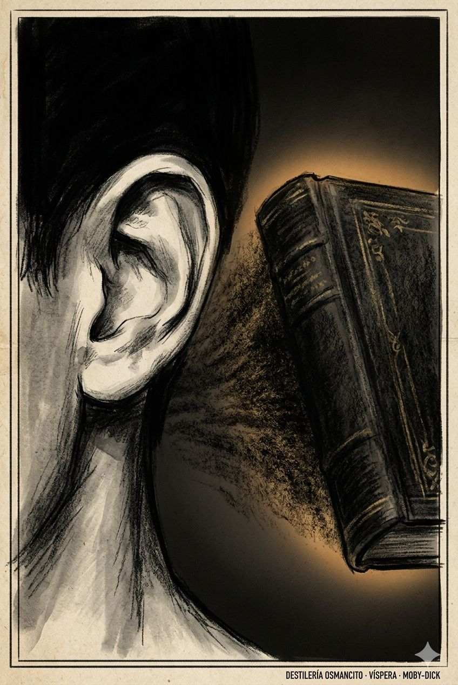
Una oreja inclinada hacia un libro cerrado —no un retrato, solo el arco del pabellón auricular y la línea del cuello, en primer plano extremo, contra el fondo oscuro. El libro no está abierto. La escucha ocurre antes de la apertura. En el espacio entre la oreja y la cubierta del libro hay algo: no aire, sino la densidad de lo que el libro irradia sin necesitar ser leído. El acto es escuchar el corpus antes de que nadie lo toque —registrar su temperatura antes de que el análisis la altere. El mundo tiene la oscuridad de una sala donde algo va a comenzar.
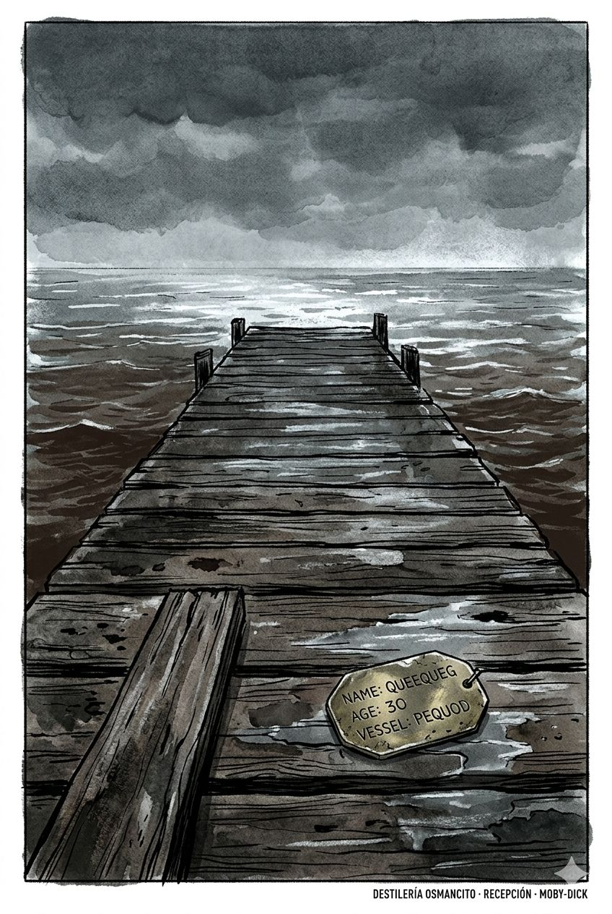
Un umbral: la línea exacta donde termina un muelle de madera y comienza el mar. No hay barco todavía —solo la espera de lo que está por llegar. Sobre las tablas del muelle, un objeto: la ficha de un marinero desconocido —nombre, edad, embarcación— posada sobre la madera húmeda como si acabara de ser depositada por alguien que se marchó. El acto es orientar antes de analizar: recibir el corpus como objeto, producir el primer diagnóstico, identificar las tensiones que mueven todo. El mundo tiene la temperatura de primer contacto —expectativa y extrañeza simultáneas.
Un objeto pesado, oscuro en los bordes, que huele a mar y a enciclopedia y a algo que no se termina de cerrar aunque se cierre.
Hay libros que se resumen y libros que se describen. Moby-Dick no pertenece a ninguna de las dos categorías: es un libro que se habita o no se habita, y la diferencia entre las dos cosas no depende del lector sino de la disposición con que el lector entra. El corpus llega como un barco llega al muelle: con ruido, con olor, con una tripulación que no se parece a ninguna otra. Nombrarlo —decir lo que es— exige algo distinto a resumir lo que dice.
Título — Moby-Dick; or, The Whale Autor — Herman Melville Año — 1851 Género — Novela; novela de aventuras, épica marítima, ensayo disfrazado de ficción, tratado filosófico con harpón Extensión estimada — ~206,000 palabras · ~824 páginas · 135 capítulos numerados + Etimología, Extractos, Epílogo Idioma original — Inglés Palabra más frecuente con contenido — Whale (ballena). Confirma: el corpus declara serlo, y lo cumple con una insistencia que va más allá del tema — la palabra estructura el pensamiento, el ritmo, el miedo.
Un marinero joven y sin nombre propio —al que el texto introduce como Ishmael, aunque ese nombre casi no vuelve a aparecer— se embarca en el ballenero Pequod desde Nantucket. El capitán, Ahab, ha perdido una pierna en un encuentro previo con una ballena blanca de tamaño y ferocidad extraordinarios: Moby Dick. Ahab convierte el viaje de caza comercial en una persecución obsesiva y personal. La tripulación —reunida de todos los rincones del mundo— lo sigue, parcialmente convencida, parcialmente hipnotizada. Después de meses en el mar, el Pequod encuentra a la ballena. Tres días de batalla. El barco se hunde. Solo Ishmael sobrevive.
Ishmael — narrador, marinero, testigo; el único sobreviviente y el único que puede contar. Ahab — capitán del Pequod; monomaníaco, grandioso, irreductible. Starbuck — primer oficial; la voz de la razón y la prudencia, que no alcanza. Queequeg — arponero y compañero de Ishmael; su ataúd se convierte en el salvavidas final. Stubb — segundo oficial; la voz de la resignación alegre. Flask — tercer oficial; la indiferencia ante lo sublime. Fedallah — el arponero persa de Ahab; figura profética y siniestra. Pip — grumete que enloquece después de ser abandonado en el océano; el espejo roto del conjunto. Moby Dick — la ballena blanca; el objeto de la persecución; lo que cada personaje proyecta y ninguno puede nombrar del todo.
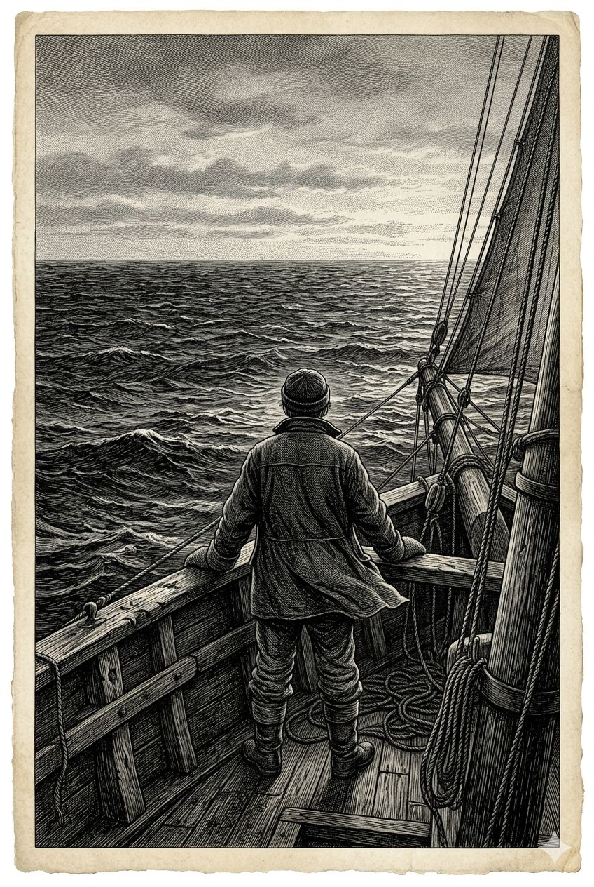
El único sobreviviente; la distancia justa que salva; el ojo que narra desde el margen.
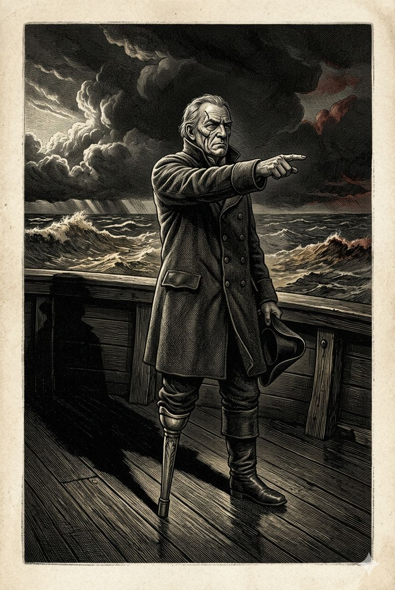
El capitán del Pequod; la monomanía como destino; la pata de marfil que golpea la cubierta.
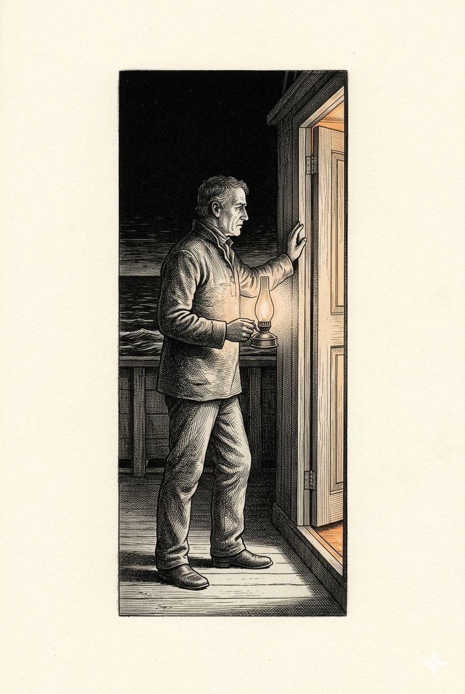
La voz de la razón que no alcanza; el hombre que consideró matar a Ahab y no actuó.
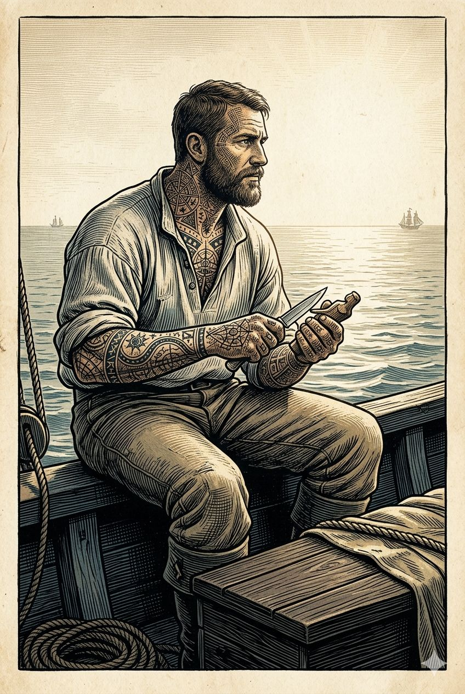
Compañero de Ishmael; el cuerpo tatuado; su ataúd convertido en salvavidas.
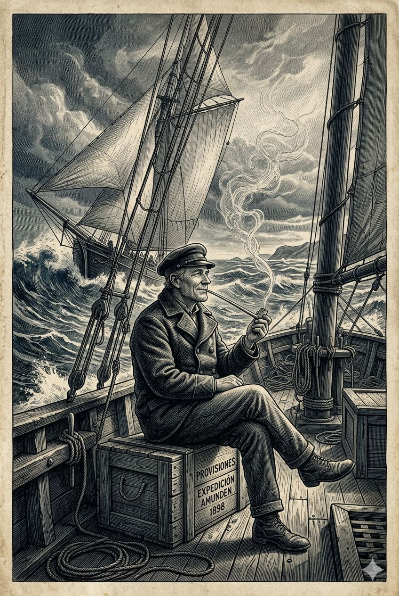
La resignación alegre; el hombre que fuma su pipa ante lo inevitable.
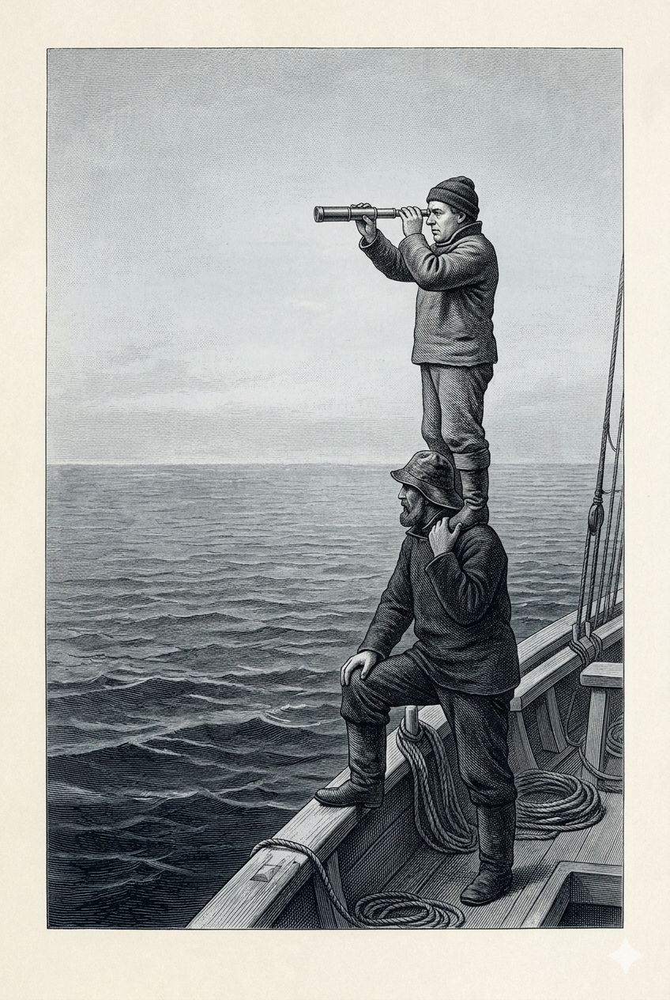
La indiferencia ante lo sublime; el hombre que no siente el peso de lo que persiguen.
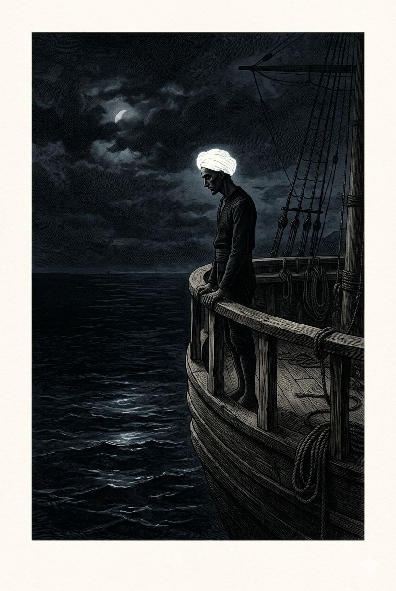
Figura profética y siniestra; la sombra dentro de la sombra.
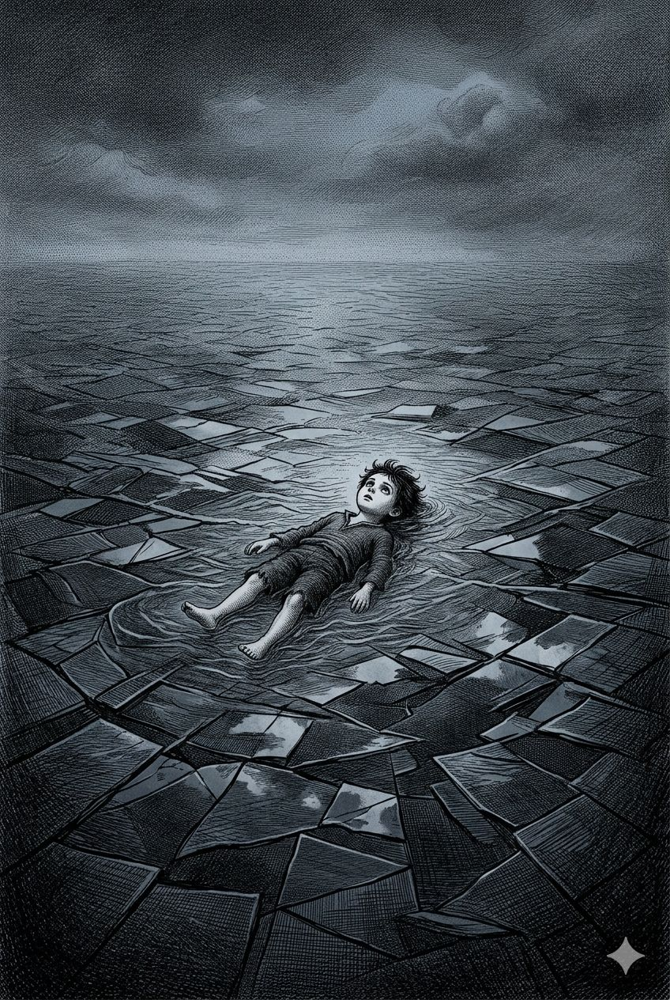
El grumete que enloquece después de ser abandonado en el océano; el espejo roto del conjunto.
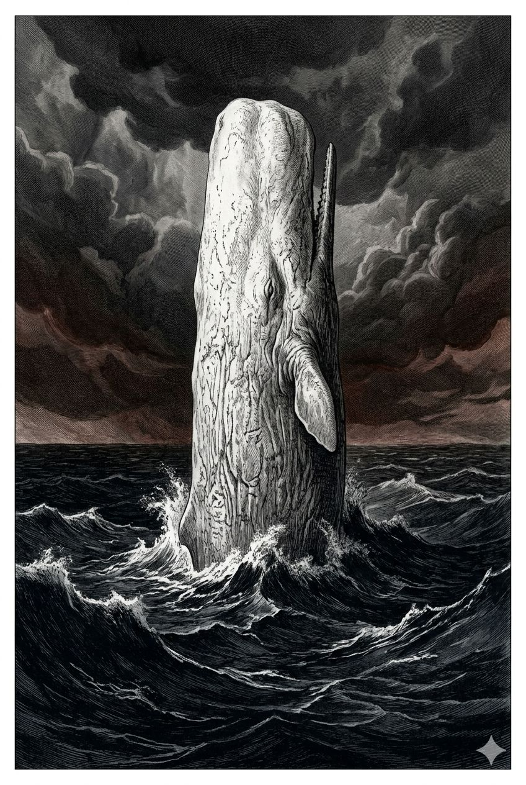
Lo que cada personaje proyecta; lo que ninguno puede nombrar del todo.
Ishmael llega a New Bedford en invierno, comparte cama con Queequeg —un arponero polinesio con el cuerpo tatuado— y con él se embarca en el Pequod desde Nantucket. El capitán Ahab no aparece durante la primera parte del viaje; cuando emerge del camarote, su pata de marfil golpea la cubierta y el barco cambia de naturaleza. Ahab declara ante la tripulación su propósito real: cazar a la ballena blanca que le amputó la pierna; clava un doblón de oro al mástil como promesa para quien la aviste primero. El viaje se extiende por meses y dos océanos; hay encuentros con otros barcos —los gams— algunos de los cuales ya han cruzado con Moby Dick. Starbuck considera matar a Ahab para salvar al barco y no actúa. Pip cae al agua, es abandonado brevemente, y cuando lo rescatan su mente se ha roto; Ahab lo cuida con una ternura que no aparece en ningún otro lugar del texto. La ballena es avistada al tercer día del tercer año: tres días de persecución. El primer día el Pequod sufre daños. El segundo, más. El tercer día Ahab lanza el arpón, la cuerda le rodea el cuello y lo arrastra al fondo. El barco es embestido y se hunde. El vórtice absorbe todo. Ishmael sobrevive flotando en el ataúd de Queequeg hasta que el Rachel —un barco que buscaba a sus propios desaparecidos— lo recoge.
Primer contacto: un libro que pesa más de lo que debería. No por extensión —824 páginas son muchas, pero no son las que pesan— sino porque el corpus carga algo que la ficción de aventuras no carga normalmente: el deseo de que la realidad tenga sentido, y la certeza de que no lo tiene. Ahab no es un villano ni un héroe: es el lector que lleva la metáfora demasiado lejos. Ishmael no es un héroe tampoco: es el hombre que sobrevivió por haber tenido la distancia justa. El libro produce, antes de ser pensado, la sensación de haber estado en el mar durante demasiado tiempo y de que el mar no devuelve lo que se le da.
El conocimiento como desastre. Ahab sabe exactamente lo que busca, lo nombra, organiza todo en función de ello — y eso es lo que lo destruye. Ishmael sabe muy poco y sobrevive. El corpus trabaja de forma sostenida la pregunta de si nombrar algo con precisión es lo mismo que destruirlo.
La grandeza que no puede ser vivida por quien la posee. Ahab tiene la dimensión de los héroes trágicos de Sófocles, pero vive en 1840, en un barco de caza comercial, entre hombres que ganaron un sueldo. La tragedia no cabe en el mundo donde ocurre. El corpus nunca resuelve esa inadecuación — la sostiene con una tensión que dura todo el libro.
El mar como lo que existe antes y después del ser humano. La última oración del libro: the great shroud of the sea rolled on as it rolled five thousand years ago. No hay lección, no hay redención, no hay consecuencia: el mar simplemente continúa. El corpus trabaja esta indiferencia del mundo natural no como filosofía sino como experiencia — la experiencia de que el océano no registró lo que ocurrió sobre él.
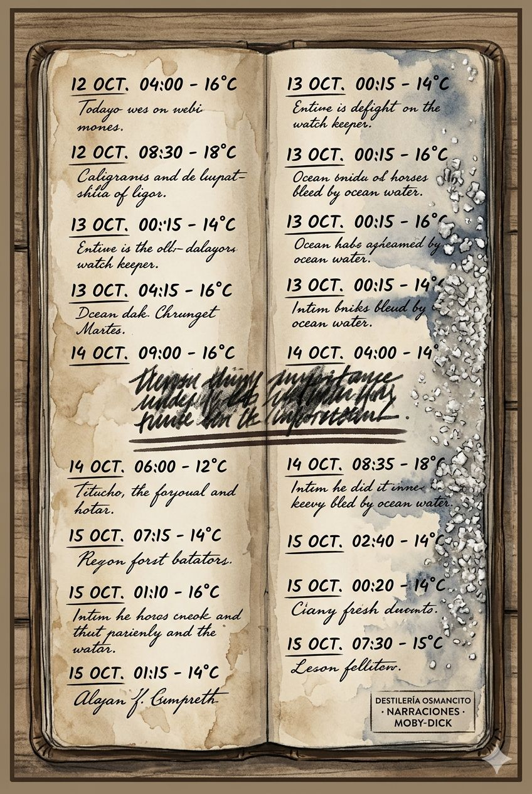
Una bitácora abierta en una página cubierta de entradas breves en distintas caligrafías —como si varios vigías hubieran turnado en el registro— cada entrada con su fecha, su hora, su temperatura anotada. Algunas entradas tienen el margen derecho manchado de salitre, como si el océano hubiera interrumpido la escritura. En el centro de la página abierta, una entrada subrayada dos veces —no se lee el texto, solo el subrayado, que tiene la insistencia de algo que importa. El acto es indexar los eventos: no lo que se argumenta, sino lo que ocurre, dónde ocurre, qué gira.
Moby-Dick esconde sus momentos más vivos dentro de capítulos que se anuncian como tratados de cetología o filosofía marina. El lector que llega buscando aventura la encuentra, pero desplazada: el evento que más pesa en todo el libro —Pip abandonado en el océano durante diez minutos— dura menos de cuatro páginas y ocurre cuando ya nadie lo espera. El corpus sabe exactamente cuándo golpear y escoge casi siempre el momento menos anunciado para hacerlo.
Etimología y Extractos — Antes de que empiece Antes del capítulo uno, una sección de citas sobre ballenas de cincuenta fuentes distintas, compiladas por un sub-bibliotecario tísico. El evento es brevísimo: el compilador muere antes de terminar. El corpus anuncia desde el paratexto que nadie que toque este material sale ileso. Intensidad — 72 %
Cap. 1-3 — Ishmael llega a New Bedford en invierno Un hombre sin dinero ni propósito llega a una ciudad que no conoce, en la estación equivocada, buscando embarcarse en algo. La posada está llena. La ciudad es oscura y huele a aceite de ballena. El primer movimiento del corpus es de contracción: el mundo se estrecha antes de abrirse. Intensidad — 74 %
Cap. 3 — La capilla de los balleneros Ishmael entra a una capilla donde los feligreses son en su mayoría mujeres: las viudas y novias de los que no volvieron. Las lápidas en las paredes son cenotafios —no hay cuerpos, solo nombres. Ishmael lee las inscripciones y el corpus instala, sin drama, la aritmética de la caza: muchos no regresan. Intensidad — 78 %
Cap. 3-4 — La cama compartida con Queequeg Ishmael debe compartir cama con un desconocido que resulta ser un arponero polinesio con el cuerpo completamente tatuado y una cabeza reducida de souvenir. El terror inicial cede cuando Queequeg actúa con una cortesía que Ishmael no esperaba. El corpus invierte la dirección del miedo: lo que parecía amenaza se convierte en el vínculo más genuino de todo el libro. Intensidad — 83 %
Cap. 9 — El sermón del Padre Mapple El padre Mapple sube al púlpito por una escalera de cuerda que luego recoge, dejándose literalmente inaccesible mientras predica. Su sermón trata la historia de Jonás: el hombre que huyó de Dios, fue tragado, y obedeció. La geometría del púlpito —un barco en la proa de la iglesia, la escalera recogida— es el evento: la soledad del que habla desde la altura sin posibilidad de descender. Intensidad — 80 %
Cap. 16 — El Pequod y sus dueños Ishmael y Queequeg se presentan ante los dueños del Pequod para contratarse. El barco ya es un prodigio: decorado con huesos de ballena, los dientes y las mandíbulas formando su estructura. Un dueño casi ciego, Peleg, habla de Ahab en términos que no tranquilizan: grandioso, impío, un hombre al que algo le ocurrió en el último viaje. El corpus prepara la aparición de Ahab durante capítulos —este es el primero en que la espera se vuelve inquietante. Intensidad — 76 %
Cap. 19-20 — El hombre en el muelle Antes de zarpar, un hombre harapiento y oscuro —Elías— intercepta a Ishmael y Queequeg con preguntas que no son preguntas sino advertencias en forma de pregunta. ¿Han firmado? ¿Saben para qué? ¿Han visto a los otros hombres subir al barco de noche? Ishmael los desestima como locos. El corpus introduce el presentimiento como categoría narrativa. Intensidad — 77 %
Cap. 28 — La primera aparición de Ahab Después de semanas en el mar, Ahab sale del camarote. Está de pie en la cubierta al amanecer. Su pata de marfil encaja en un orificio especialmente perforado en las tablas para sostenerlo. La cicatriz que le cruza el rostro desde la sien. El silencio de la tripulación. El evento es una aparición —no una introducción—: Ahab no necesita presentarse porque ya estaba presente en el miedo de todos. Intensidad — 89 %
Cap. 36 — El cuarto de bitácora: la moneda clavada Ahab convoca a toda la tripulación a cubierta y les declara el propósito real del viaje: encontrar y matar a Moby Dick. Clava un doblón de oro en el mástil como recompensa para quien la aviste primero. Hace beber a los arponeros desde las cazoletas de sus arpones como si fuera un ritual de sangre. Starbuck objeta —es un negocio, no una cruzada— y Ahab lo aplasta. La tripulación grita su adhesión. El corpus convierte la caza comercial en algo que no tiene nombre en el derecho mercantil. Intensidad — 95 %
Cap. 41 — La historia previa de Ahab Ishmael narra —en retrospectiva y de tercera mano— el encuentro anterior entre Ahab y la ballena: el arpón, la cuerda, la pata arrancada, Ahab convulso en el fondo del bote, el largo viaje de regreso. La amputación no fue el daño mayor: lo que ocurrió en la mente de Ahab durante la travesía de vuelta fue lo que lo deshizo. Intensidad — 88 %
Cap. 54 — La historia del Town-Ho Dentro de la novela, Ishmael cuenta a un grupo en Lima la historia de otro barco y otro marinero: Steelkilt, que mató a un oficial corrupto y escapó, y que encontró a Moby Dick antes que el Pequod. La ballena mató al oficial pero no a Steelkilt. El corpus instala una narrativa dentro de la narrativa con sus propias reglas de justicia: la ballena como agente de un orden que la ley no puede alcanzar. Intensidad — 82 %
Cap. 87 — La gran manada El Pequod alcanza una manada de miles de ballenas que se extiende hasta el horizonte. La tripulación entra en los botes y caza en el centro de la manada. Las ballenas más jóvenes están en el interior, protegidas. Ishmael observa desde el centro de la manada un claro quieto, un ojo del huracán donde las crías nadan y las madres dan a luz. El corpus produce aquí su imagen más extraña: la paz en el centro de la matanza. Intensidad — 85 %
Cap. 93 — Pip cae al agua Pip, el grumete, está en el bote de Stubb cuando salta al agua durante la caza. La cuerda del arpón podría enredársele: lo dejan. El bote sigue la ballena. Pip flota solo en el océano durante lo que el texto llama “el corazón infinito del mar”. Cuando lo rescatan, su mente se ha roto de una manera específica: ve demasiado. El corpus describe lo que le ocurrió como haber visto “el pie de Dios sobre el pedal del telar del mundo”. Intensidad — 97 %
Cap. 99 — El doblón Cada tripulante se detiene ante el doblón clavado en el mástil y lo lee de manera distinta. Ahab ve su propio signo zodiacal: el cosmos organizado alrededor de sí mismo. Starbuck ve una advertencia religiosa. Stubb ve un horósopo cómico. Flask ve monedas. Pip ve el círculo completo: todos leen y nadie lee el mismo objeto. El evento es el corpus leyéndose a sí mismo. Intensidad — 86 %
Cap. 108-109 — Starbuck y el mosquete Starbuck baja al camarote de Ahab para comunicarle un problema con los barriles. Encuentra el mosquete de Ahab. Sabe que Ahab ha amenazado con usarlo contra él. Sostiene el arma durante un momento que el corpus estira hasta hacerlo casi insoportable. Lo devuelve a su lugar y sube. El evento más cargado de inacción del libro: el momento en que el mundo que viene después podría haber sido otro. Intensidad — 93 %
Cap. 119-121 — Las velas de San Telmo Una tormenta eléctrica ilumina los mástiles del Pequod con fuego de San Telmo. Los arpones almacenados en la proa brillan. Ahab agarra uno de los arpones encendidos y proclama que no teme a ese fuego porque lo lleva adentro. Apaga la llama de un soplo. La tripulación, que estaba a punto de amotinarse, lo sigue de nuevo. Intensidad — 87 %
Cap. 125 — La bitácora destruida Los relámpagos de la tormenta han alterado la brújula del Pequod. Ahab fabrica una nueva con agujas magnéticas y un clavo. El evento es técnico pero su consecuencia es metafísica: el barco ya no navega por instrumentos del mundo —navega por los que Ahab construyó. El corpus registra el momento exacto en que la embarcación deja de pertenecer a la geografía reconocible. Intensidad — 80 %
Cap. 127 — Ahab y el carpintero Ahab le encarga al carpintero del barco que le fabrique una nueva pata de marfil. Mientras trabaja, mantiene una conversación delirante sobre el cuerpo que ya no tiene —la pierna fantasma que todavía siente. El corpus produce aquí su imagen más dolorosa sin nominarla: el hombre persiguiendo a la cosa que ya lo posee. Intensidad — 84 %
Cap. 129 — Ahab cuida a Pip Pip, roto, sigue a Ahab a todas partes. Ahab lo trata con una ternura que no existe en ningún otro lugar del libro. Le dice que su camarote será de Pip: que Pip es más cuerdo que él porque perdió la razón honestamente. El corpus instala aquí la única grieta en la armadura de Ahab —la única relación que no está organizada por el poder. Intensidad — 91 %
Cap. 132 — La sinfonia Ahab y Starbuck comparten un momento de quietud en cubierta: el capitán habla de su vida, de los años en el mar, de lo poco que conoció a su joven esposa, de la locura que lo consume. Starbuck cree que Ahab va a ceder. El agua corre por el rostro de Ahab —puede ser el mar, puede ser otra cosa. No cede. Vuelve a ser Ahab. Es el único momento en que el corpus permite que el lector vea al hombre detrás del capitán, y lo hace para cerrarlo inmediatamente. Intensidad — 94 %
Cap. 133-135 — Los tres días
Día uno. Moby Dick es avistada. Los botes bajan. La ballena ataca, destruye los botes, y Ahab termina en el agua. Lo rescatan. El doblón sigue en el mástil. Ahab declara que irá el día siguiente. Intensidad — 91 %
Día dos. La ballena ataca de nuevo. Destruye más botes. La pata de marfil de Ahab se rompe y la astilla casi lo mata. Fedallah desaparece —su cuerpo aparecerá enredado en los arpones sobre el lomo de la ballena. Las profecías que Fedallah había hecho a Ahab se cumplen, una por una, en un orden que el corpus revela con la frialdad de un contador de existencias. Ahab declara que irá el tercer día. Intensidad — 93 %
Día tres. La ballena embiste al Pequod. El barco se hunde. Ahab lanza su arpón: la cuerda le atrapa el cuello y lo arrastra al fondo sin que se oiga ningún grito. El vórtice absorbe los botes, los hombres, todo. Ishmael flota en el ataúd de Queequeg. El Rachel lo recoge —el Rachel que buscaba a sus propios hijos perdidos y encontró a un huérfano. Intensidad — 100 %
Un corpus donde los capítulos de cetología son el tiempo que el océano tarda en preparar el siguiente golpe.
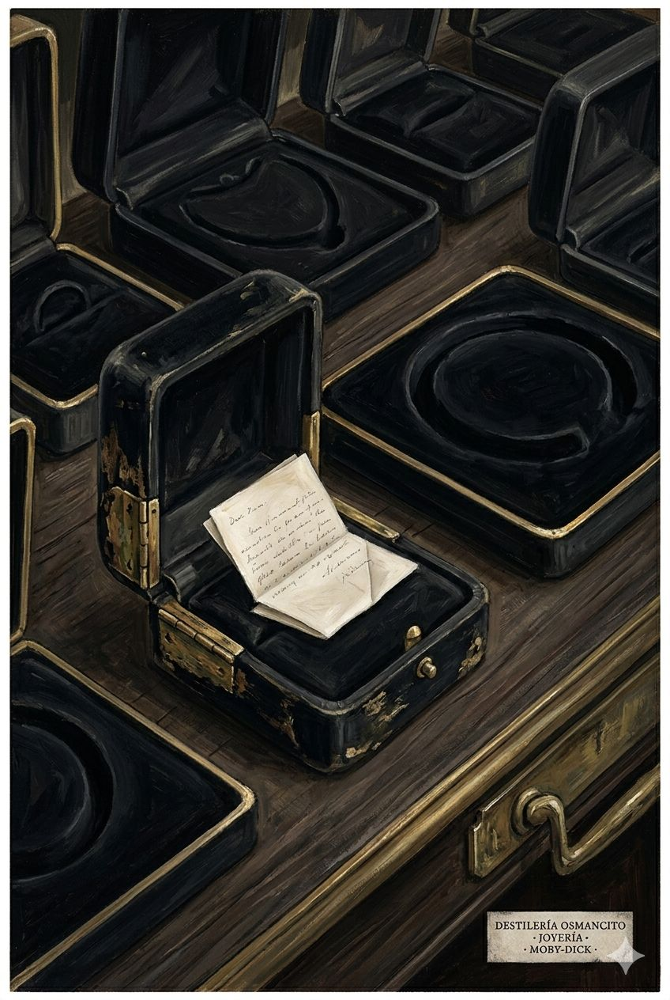
Varios estuches de terciopelo negro abiertos sobre una mesa de madera oscura, dispuestos en diagonal. La mayoría están vacíos —el hueco con la forma del objeto que debería contener, presente por su ausencia. Uno solo contiene algo: no una joya convencional, sino un fragmento de texto manuscrito doblado con precisión, como si su valor fuera exactamente ese —sobrevivir solo, sin contexto. El estuche que lo contiene tiene las bisagras desgastadas de tanto abrirse. El acto es recorrer el corpus sección por sección y abrir estuches: encontrar los pasajes que funcionan sin contexto, que sobreviven solos. El mundo tiene la intimidad quieta de una joyería cerrada.
El libro empieza antes de empezar: dos secciones que ningún lector pidió —una etimología, una antología de citas sobre ballenas— y que sin embargo instalan el tono de todo lo que vendrá. La palabra “ballena” rastreada hasta el anglosajón. Un hombre enfermo copiando citas que no verá publicadas. Moby-Dick anuncia desde el umbral que será enciclopedia, elegía y broma al mismo tiempo, y que el narrador que llegará a continuación sobrevivirá a todo el resto precisamente porque es el único que no se toma del todo en serio.
El mapa de tensiones
El archivero que no llegará a ver el libro Un sub-bibliotecario tísico recibe el encargo de rastrear la palabra whale a través de dieciséis idiomas. Lo hace con la meticulosidad del que sabe que el tiempo se le acaba. La tensión es pequeña pero precisa: el corpus abre con un hombre que muere antes de que la historia comience, copiando palabras sobre una criatura que no verá nunca. La temperatura es de prólogo fúnebre.
Veredicto: Capítulo sin eje narrativo propio —puro umbral— pero con función de afinación: instala la mortalidad como condición de partida.
El fragmento La Etimología no es un capítulo: es una advertencia disfrazada de aparato erudito. Un hombre enfermo, descrito con la tos que lo delata, compila la palabra ballena en hebreo, griego, latín, anglosajón, danés, holandés, sueco, islandés, turco, y más. El gesto es enciclopédico pero la persona que lo realiza es frágil. El corpus instala aquí su primera ironía estructural: la empresa colosal del libro —catalogar, nombrar, agotar el significado de la ballena— está a cargo, desde el inicio, de alguien que no sobrevivirá para verla terminada. Es el primer marinero en morir antes de zarpar.
Las joyas
El archivero tísico El archivero que no llegará a ver el libro
El sub-bibliotecario que preparó estas páginas murió antes de la publicación. Se le describe tosiendo sobre los papeles, con la meticulosidad del que sabe que no tiene tiempo que perder en imprecisión. Dejó rastreada la palabra whale a través de dieciséis lenguas muertas o vivas. Es el primer personaje del libro y el primero en morir, y lo único que hizo fue buscar el nombre correcto para algo que nadie ha podido nombrar del todo.
El mapa de tensiones
La ballena como objeto de todos los lenguajes Cincuenta fuentes citan la ballena: la Biblia, Shakespeare, Milton, Montaigne, navegantes, científicos, poetas, canciones de marineros. La tensión no es argumental sino acumulativa: cada cita añade una capa de lo que la ballena ha significado para alguien, en algún lugar, en algún siglo. El movimiento no cierra —es un archivo sin fondo. La temperatura es de vértigo enciclopédico.
Veredicto: Capítulo sin función narrativa —acumulación pura— que funciona como cámara de resonancia para todo lo que vendrá.
El fragmento Los Extractos son el libro leyéndose a sí mismo antes de existir. El mismo sub-bibliotecario tísico reunió durante años toda mención de ballenas que encontró, de Génesis al Times de Londres. El resultado es una antología que no tiene argumento pero sí tiene temperatura: la ballena como Leviatán bíblico, como recurso económico, como símbolo del abismo, como criatura imposible de agotar por el lenguaje. Ninguna de las citas logra capturar el objeto completo. Esa imposibilidad es el tema del libro que vendrá.
Las joyas
Lo que Job no pudo responder La ballena como objeto de todos los lenguajes
De Job 41: ¿Sacarás al Leviatán con anzuelo, o con cuerda que le eches en su lengua? ¿Pondrás en su nariz un cordel, o horadarás su quijada con garfio? El libro de Job pregunta esto como demostración de la pequeñez humana ante lo divino. Melville lo cita como epígrafe de una empresa que consiste exactamente en intentar hacer lo que Job declara imposible.
El mapa de tensiones
El nombre que el narrador se da a sí mismo Ishmael se presenta: dice llamarse Ishmael. No explica por qué ese nombre —el lector que conoce el Génesis entiende: el hijo expulsado, el que vaga. La tensión es de identidad provisional. El nombre no es una afirmación sino una posición: llámenme así.
El mar como antídoto de la violencia interior Ishmael describe el estado que lo lleva al mar: melancolía que, si no encuentra salida, se convierte en el impulso de pararse en las esquinas y derribar sombreros. El mar es el sustituto de esa violencia. El movimiento abre en un hombre al borde de algo y cierra en la decisión de embarcarse. La temperatura es de pulsión contenida.
El magnetismo del agua Una meditación sobre por qué los hombres van al mar: el agua como objeto de atracción universal, los peatones buscando el río en los puertos, los pintores poniendo agua en sus cuadros. El movimiento no cierra —se suspende en la contemplación. Temperatura de hipnosis.
Veredicto: Capítulo de apertura que no narra todavía —instala al narrador y la dirección gravitacional del corpus: hacia el agua, hacia el abismo, hacia lo que no puede nombrarse del todo.
El fragmento Ishmael no empieza por el principio: empieza por el estado interior que lo mueve. Hay en él algo que reconoce como melancólico, algo que podría volverse peligroso si no encuentra salida, y esa salida —siempre, inevitablemente— es el mar. El capítulo no describe una decisión racional: describe una atracción que tiene la estructura de una compulsión. Ishmael va al mar porque no puede no ir. El corpus instala desde la primera página la diferencia entre el narrador y todos los demás personajes que vendrán: Ishmael no persigue nada, no busca nada, es arrastrado. Eso es lo que lo salva.
Las joyas
La esquina y el sombrero El mar como antídoto de la violencia interior
Cuando me encuentro girando sombrío alrededor de la boca de noviembre en mi alma; cuando me doy cuenta de que me paro involuntariamente ante las funerarias y voy detrás de todo entierro que encuentro; y especialmente cuando la hipocondría me domina tanto que solo un firme principio moral me impide salir deliberadamente a la calle y derribar metódicamente los sombreros de la gente —entonces, entiendo que es hora de hacerme a la mar cuanto antes.
El agua y los ojos El magnetismo del agua
Todos los ríos y los océanos. Es la imagen del lo inasible de la vida. Y si eres filósofo, aunque en agua no puedas nunca zambullirte, algo así como el agua tiene que haber en ti.
El mapa de tensiones
El viajero que llega a una ciudad que no conoce en la estación equivocada Ishmael llega a New Bedford en diciembre. La ciudad está oscura, fría, oliendo a aceite de ballena. No tiene dinero suficiente para una buena posada. El movimiento es de contracción: el mundo se estrecha antes de que empiece cualquier cosa. La temperatura es de incomodidad sin drama.
Veredicto: Capítulo de tránsito —sitúa al personaje en el espacio y el tiempo— sin joyas propias pero con función de calibración: establece la escala humilde desde la que Ishmael opera.
El fragmento New Bedford en diciembre no recibe bien a los forasteros. Ishmael llega con una bolsa de viaje hecha de alfombra —el detalle es de clase social, de alguien que no puede permitirse equipaje apropiado— y busca posada con la economía de quien cuenta cada centavo. La ciudad que verá es rica por la grasa de los mares, pero esa riqueza no le pertenece todavía. El corpus sitúa a su narrador en el margen correcto: ni pobre del todo ni cómodo, exactamente donde se necesita estar para observar sin pertenecer.
Las joyas
Este capítulo no produce joyas. Construye suelo.
El mapa de tensiones
El nombre que promete y el interior que cumple de otra forma La posada se llama El Surtidor: ballenas pintadas en el letrero, arpones y lanzas decorando las paredes, aceite de ballena en las lámparas. El movimiento abre con la expectativa de algo pintoresco y cierra en algo más perturbador: el lugar no es una atracción turística sino el umbral real de una industria de muerte. La temperatura es de umbral.
Los cenotafios Ishmael entra a una capilla adjunta donde las paredes están cubiertas de lápidas para marineros desaparecidos en el mar. No hay cuerpos bajo las lápidas. Los nombres están solos. El movimiento abre en la observación y cierra en la aritmética: muchos no regresan. La temperatura es de duelo sin cuerpo.
El dueño que predica El dueño de la posada, el viejo Peleg —no, el capitán Bildad— resulta ser un cuáquero que lee la Biblia entre transacciones comerciales. El movimiento instala la tensión que recorrerá el libro: la fe y el negocio operando en el mismo hombre sin contradicción visible. Temperatura de hipocresía tranquila.
Veredicto: Capítulo de instalación de mundo —establece el universo moral y económico de Nantucket— con una joya de alta densidad en los cenotafios.
El fragmento La posada del Surtidor es el primer lugar donde el mar tiene cara de industria. Las lámparas arden con el aceite que los hombres muertos extrajeron de las ballenas que los mataron. Las lápidas en la capilla no contienen cuerpos porque los cuerpos están en el fondo del océano. La posada y la capilla son el mismo edificio moral: el negocio y el luto conviven sin tensión aparente, y esa convivencia es lo que Ishmael observa antes de decidir si quiere formar parte de ella. Decide que sí.
Las joyas
Nombres sin cuerpo Los cenotafios
En una fría sala de mármol la capilla albergaba esas lápidas de mármol, con inscripciones en negro, a veces en letras doradas, fijadas en la pared a los dos lados del púlpito. Una era rectangular, larga, con un ángulo negro encima; tenía este texto:
Sagrado a la memoria de John Talbot que a la edad de dieciocho años fue perdido por la borda, cerca de las Islas de la Isla, el año de gracia 1836.
Esta lápida no contiene ningún cuerpo. Solo recuerda la memoria de alguien que pertenece al mar.
El mapa de tensiones
El despertar junto a un extraño Ishmael despierta con el brazo de Queequeg sobre él —el arponero lo abraza como si fuera su mujer, dormido. La tensión es de intimidad no solicitada que podría ser amenaza y resulta ser ternura. El movimiento viaja desde el sobresalto hasta la paz. Temperatura de extrañeza que cede.
El tatuaje como libro ilegible Ishmael mira a Queequeg a la luz de la mañana. El cuerpo del arponero está completamente cubierto de tatuajes: figuras que Ishmael no puede descifrar porque no conoce su lengua. El movimiento abre en la observación y suspende: el cuerpo de Queequeg es un texto que el narrador no puede leer todavía. Temperatura de incomprensión respetuosa.
Veredicto: Capítulo que instala el vínculo central del libro —Ishmael y Queequeg— a través del cuerpo y la intimidad antes que del lenguaje.
El fragmento La colcha que da título al capítulo es una imagen precisa de lo que ocurre entre los dos hombres: retazos de distintas procedencias cosidos juntos en un objeto funcional. Queequeg e Ishmael no comparten idioma, origen, religión ni historia. Lo que comparten es la cama, y de ese hecho físico —dormir juntos, despertar juntos— emerge algo que el libro no llama amistad pero trata como amistad. El corpus propone aquí, sin decirlo, que el contacto del cuerpo produce conocimiento que el lenguaje no puede producir solo.
Las joyas
El abrazo de la mañana El despertar junto a un extraño
Al despertar, Queequeg tenía su brazo tatuado echado sobre mí de la manera más afectuosa, como si yo fuera su mujer. La cara del arponero descansaba sobre la mía, y con su nariz chata y su gran labio inferior formaba una especie de sello húmedo junto a mi mejilla. Pensé que era hora de romper el encantamiento. Me senté, y Queequeg, sorprendido por el movimiento, abrió sus ojos y me miró, con sus enormes ojos amarillos, profundos y penetrantes.
El mapa de tensiones
El arponero en el comedor Queequeg desayuna con los demás huéspedes de la posada. El movimiento abre en la expectativa de que algo raro ocurra —es un hombre tatuado con una cabeza reducida en el bolsillo— y cierra en nada: come tranquilamente, sin incidente. La temperatura es de expectativa frustrada que revela el prejuicio del que esperaba el incidente.
Veredicto: Capítulo de transición sin joyas propias —su función es desinflar la expectativa exótica sobre Queequeg antes de construir su retrato real.
El fragmento El capítulo dura apenas unas páginas y ocurre casi sin evento. Queequeg come. Los otros huéspedes comen. Nada sucede. Esa nada es el punto: Ishmael esperaba algo y no ocurrió, y esa decepción de la expectativa exótica es la primera lección que el corpus ofrece sobre la diferencia entre la apariencia de un hombre y su carácter.
Las joyas
Este capítulo no produce joyas. Desmonta expectativas.
El mapa de tensiones
New Bedford como ciudad de marineros del mundo Ishmael pasea por New Bedford y observa la composición de su población: polinesios, africanos, asiáticos, europeos, todos reunidos por la industria de la ballena. El movimiento es contemplativo, sin conflicto. La temperatura es de asombro cosmopolita.
Veredicto: Capítulo de atmósfera —instala el carácter internacional del universo ballenero— sin función narrativa propia.
El fragmento New Bedford no es una ciudad americana: es el resultado de arrastrar al mismo puerto a todos los hombres que el mundo podía ofrecer para una industria que nadie más quería hacer. Ishmael observa esto sin horror y sin romanticismo —con la curiosidad del que reconoce que pertenece al mismo sistema que critica.
Las joyas
Este capítulo no produce joyas. Pinta fondo.
El mapa de tensiones
Las lápidas sin cuerpo Ishmael vuelve a la capilla y lee las inscripciones de los cenotafios con más detención. El movimiento abre en la lectura y escala en la meditación: ¿qué significa un monumento a alguien que el mar no devolvió? La tensión no cierra —se suspende en la pregunta. Temperatura de duelo filosófico.
La muerte como posibilidad real Ishmael medita sobre su propia muerte posible en el viaje que está a punto de comenzar. El movimiento abre en la contemplación abstracta y cierra en una decisión de indiferencia deliberada: si ha de morir, que sea. La temperatura es de estoicismo ganado a pulso.
Veredicto: Capítulo de preparación interior —Ishmael se reconcilia con la posibilidad de la muerte antes de zarpar— con una joya de alta densidad en la segunda meditación.
El fragmento La capilla de los balleneros es el único lugar en el libro donde la muerte se contempla sin la urgencia del peligro inmediato. Las lápidas no contienen cuerpos porque los cuerpos están donde el mar los dejó. Ishmael lee los nombres y hace la aritmética: muchos de los que partieron no volvieron. Luego decide que eso no cambia nada. La decisión de zarpar de todas formas, hecha con plena conciencia de la estadística, es el primer acto moral del narrador.
Las joyas
La inmortalidad de los que el mar no devuelve Las lápidas sin cuerpo
¡Qué noble y heroica cosa es ese monumento! Y qué cosa tan vana. ¿Acaso necesitan esos hombres algún monumento? Ellos mismos son el monumento. Las olas derraman sobre sus tumbas tan suavemente como sobre cualquier otra: el mar es su sepulcro insondable, y no tienen necesidad de epitafio.
El que va a morir ya lo sabe La muerte como posibilidad real
Venir a reconocer la muerte como mero naufragio requiere que alguien antes se haya sentado solo ante el mar y haya resuelto, sin testigos, que si el mar lo reclama, el mar lo puede reclamar. Ishmael hace esto antes de embarcar. Es la única preparación honesta para lo que vendrá.
El mapa de tensiones
La arquitectura del sermón El padre Mapple sube a su púlpito por una escalera de cuerda que recoge tras él. El púlpito tiene forma de proa de barco. El predicador aislado sobre el mar de feligreses. El movimiento abre en la descripción y escala en su implicación: el hombre que habla desde la altura lo hace desde un lugar al que nadie más puede llegar mientras habla. Temperatura de soledad elegida.
Veredicto: Capítulo de instalación —prepara el escenario del sermón que vendrá en el capítulo siguiente— con una joya en la geometría del púlpito.
El fragmento El púlpito del padre Mapple es un objeto diseñado para la separación. La escalera de cuerda que recoge tras él no es un detalle pintoresco: es la declaración de que quien habla desde ahí no está disponible para el diálogo mientras habla. El corpus instala aquí una geometría que volverá: la del hombre en altura que se ha cortado el acceso a los demás. Ahab operará desde la misma geometría, desde la cubierta o desde el camarote, durante todo el libro.
Las joyas
La escalera recogida La arquitectura del sermón
¿Por qué tenía el padre Mapple ese extraño capricho de subir a su púlpito con una escalera de cuerda como la de un barco? La respuesta es clara: para aislarse del mundo, una vez dentro del púlpito, para ir en pos de esa autocontenida autosuficiencia que forma parte del más alto arte del verdadero valor religioso. Porque el predicador que sin espada desafía al mundo debe tener empezado por sí mismo a desafiar al mundo.
El mapa de tensiones
Jonás como espejo de Ahab El padre Mapple predica sobre Jonás: el hombre que huyó del mandato de Dios, fue tragado por la ballena, y obedeció. El movimiento abre en la narración bíblica y escala en su aplicación implícita: la historia de Jonás es la historia de Ahab contada al revés. Jonás aprende a obedecer; Ahab aprende a no hacerlo. La temperatura es de prefiguración.
La alegría del que cumple El sermón cierra con la descripción de la alegría que siente el profeta que cumple su misión aunque el mundo lo rechace. El movimiento abre en la doctrina y cierra en algo más personal: Mapple no está describiendo a Jonás sino describiendo lo que él mismo siente en ese púlpito, separado del mundo por su escalera recogida. Temperatura de soledad gozosa.
Veredicto: Capítulo de prefiguración —el sermón sobre Jonás es el negativo fotográfico de la historia de Ahab— con dos joyas de alta densidad.
El fragmento El padre Mapple no predica sobre ballenas: predica sobre la imposibilidad de huir de lo que uno es. Jonás huyó, fue tragado, obedeció. La ballena no es el castigo: es el instrumento de la corrección. El corpus sitúa este sermón aquí —antes de que Ahab aparezca, antes de que el Pequod zarpe— porque lo que viene después es la historia de un hombre que oyó el mismo mandato que Jonás y tomó la decisión contraria. Ahab no obedece. El sermón es la última advertencia antes de que empiece la tragedia.
Las joyas
La huida que no lleva a ningún lado Jonás como espejo de Ahab
Y Dios había preparado un gran pez para tragar a Jonás. Jonás oró. Y el Señor habló al pez, y vomitó a Jonás en tierra seca. Ahora observad lo que ocurrió cuando Jonás, tomado en falta, fue a orar, a arrepentirse. El barco en el que había intentado huir de Dios era como todos los barcos en que los hombres intentan huir de Dios; no tienen timón permanente, no tienen ancla permanente.
El gozo del que ha sido expulsado La alegría del que cumple
Regocijaos con gozo excesivo, excesivo y eterno, en los deleites eternos e inapagables. Dichoso aquel cuyo lecho es el fondo del mar; dichoso aquel cuya almohada es la roca viva; dichoso aquel que, joven y audaz, se lanzó sin vacilar a las corrientes del tiempo con la fe indestructible en que el que dio el mando a los vientos y mares le daría también el poder de cumplirlo.
En este bloque Ishmael y Queequeg se convierten en algo que el libro no nombrará nunca con una sola palabra. El corpus usa la amistad como si fuera la palabra correcta, pero la trata como si fuera otra cosa: un contrato más antiguo, una alianza anterior al lenguaje. Luego el Pequod aparece —decorado con los huesos de lo que cazará— y Ahab empieza a crecer en el horizonte como una presencia antes de ser una persona. El bloque termina con un hombre harapiento en el muelle que hace preguntas que no son preguntas.
El mapa de tensiones
El rito de la pipa Queequeg y Ishmael comparten la pipa del arponero después de cenar. El movimiento abre en el gesto cotidiano y escala en algo más denso: compartir la pipa de Queequeg es un acto de comunión en el sentido literal, no metafórico. La temperatura es de intimidad ganada sin palabras.
El contrato sin documento Queequeg declara —en su inglés fragmentado— que Ishmael y él son ahora casados: married, dice. El movimiento abre en la declaración y cierra en la aceptación de Ishmael, que no la corrige ni la ironiza. La temperatura es de vínculo sellado.
Veredicto: Capítulo que funda la única relación genuina del libro —Ishmael y Queequeg— a través del ritual antes que del argumento.
El fragmento El capítulo se llama “Un amigo” pero lo que describe es algo más preciso que la amistad. Queequeg, que no comparte con Ishmael idioma, religión, origen ni historia, decide que son uno. Lo hace con la misma naturalidad con que alguien decidiría compartir un techo bajo la lluvia. Ishmael acepta. El corpus produce aquí su imagen del amor más honesto del libro: dos hombres que no se parecen en nada y que se reconocen en algo que no requiere explicación.
Las joyas
El matrimonio sin ceremonia El contrato sin documento
Nos habíamos vuelto muy cordiales y amigables. Queequeg dijo que éramos married, lo que quería decir que éramos una especie de socios íntimos, o mejor que eso. Me prestó su petaca; yo le ofrecí mi tabaco. Encendimos la pipa entre los dos, y durante un buen rato fumamos juntos sin decir una palabra, hasta que al fin Queequeg dijo que éramos uno, lo que dijo con mucha gravedad y con los ojos puestos en el fuego.
El mapa de tensiones
La lluvia como cámara Una noche de lluvia: Queequeg e Ishmael comparten capa. El movimiento es breve, casi sin argumento. La temperatura es de intimidad física sin drama.
Veredicto: Capítulo de textura —instala el vínculo corporal entre los dos personajes con economía extrema— sin joyas propias.
El fragmento El capítulo dura dos páginas. Llueve. Los dos hombres comparten una capa porque tienen una sola. Eso es todo lo que ocurre. El corpus sabe exactamente cuándo no necesita argumento.
Las joyas
Este capítulo no produce joyas. Es textura pura.
El mapa de tensiones
El príncipe que eligió el arpón Queequeg narra su historia: es hijo de un rey de una isla polinesia cuyo nombre Ishmael no puede pronunciar. Decidió embarcarse en un ballenero americano para aprender el mundo cristiano —no por admiración sino por curiosidad. Lo que encontró no le pareció superior a lo que dejó, pero ya no puede volver: el contacto con la civilización lo ha contaminado para su propia. El movimiento abre en el origen y cierra en el exilio voluntario que se volvió permanente. Temperatura de pérdida sin lamento.
Veredicto: Capítulo que construye la dimensión trágica de Queequeg —el hombre que eligió salir y no puede regresar— con una joya de alta densidad.
El fragmento La historia de Queequeg es la historia de alguien que cruzó una frontera irreversible. No fue expulsado: eligió ir. Pero la elección tuvo un costo que no anticipó: una vez que has visto el mundo desde afuera de tu cultura, ya no puedes volver a verla desde adentro. Queequeg es el personaje más trágico del libro en el sentido más preciso —no muere en la cacería final, pero perdió lo que no puede recuperar mucho antes de que empiece.
Las joyas
El príncipe que no puede volver El príncipe que eligió el arpón
Era hijo de un rey. Su padre reinaba sobre una pequeña isla en algún lugar del Pacífico del Sur. Queequeg había decidido ver el mundo. Su padre no quería dejarlo ir, pero al final cedió, con la condición de que volviera. Queequeg fue. Y ahora no podía volver. Había visto demasiado del mundo cristiano para ser lo que era —y demasiado poco para convertirse en otra cosa.
El mapa de tensiones
El rescate en el muelle Queequeg salva la vida de un joven que cayó al agua durante las maniobras del barco. Lo hace sin drama, sin esperar reconocimiento. El movimiento abre en el peligro y cierra en la indiferencia del salvador: Queequeg rescata al hombre, lo deposita en cubierta, y sigue fumando su pipa. La temperatura es de valentía sin narrativa.
Veredicto: Capítulo que establece el carácter moral de Queequeg a través de la acción —no el discurso— con una joya en el gesto del rescate.
El fragmento El joven que Queequeg rescata lo había estado insultando minutos antes. Queequeg lo salva de todas formas, con la misma eficiencia con que alguien recoge un objeto caído. No hay pausa moral, no hay deliberación, no hay gesto hacia la audiencia. El corpus instala aquí la ética de Queequeg: no opera desde principios declarados sino desde reflejos que son más rápidos que el pensamiento.
Las joyas
El insulto y el rescate El rescate en el muelle
El mismo joven burlón que había estado riendo de Queequeg momentos antes cayó al agua. Sin un instante de vacilación, Queequeg se quitó el abrigo, se lanzó al agua, se sumergió y volvió a salir con el joven inconsciente. Lo colocó sobre cubierta, le dio unas palmadas en la espalda, y volvió a encender su pipa. Como si dijera: así es como se hace, y ya está hecho.
El mapa de tensiones
La isla como origen de todo Ishmael reflexiona sobre Nantucket: una isla pequeña, árida, sin árboles, cuya única riqueza es el mar. El movimiento es de celebración irónica: este lugar que no tiene nada en tierra ha dominado los mares del mundo. Temperatura de paradoja geográfica.
Veredicto: Capítulo de atmósfera —sitúa el origen del universo ballenero en un objeto improbable— sin joyas propias pero con función de escala.
El fragmento Nantucket no debería ser lo que es. Una isla de arena y viento, sin madera para construir barcos, sin tierras que cultivar, cuyos habitantes tuvieron que mirar al océano porque no había nada más donde mirar. El corpus instala aquí la lógica de la necesidad como origen de la grandeza: no la ambición sino la ausencia de alternativa.
Las joyas
Lo que el mar les dio porque la tierra les negó todo La isla como origen de todo
Porque Nantucket fue originalmente poblada por gente que no tenía otra opción. Los primeros habitantes miraron el mar porque no había nada más que mirar. Y del mar extrajeron todo —aceite, marfil, sustento, fama— hasta que la isla que no tenía nada se convirtió en el centro de un imperio cuyo territorio era el océano entero.
El mapa de tensiones
La posada de Try Pots Ishmael y Queequeg llegan a Nantucket y cenan en una posada cuyo menú completo es sopa de almejas o sopa de bacalao. El movimiento es cómico y breve. La temperatura es de humor seco.
Veredicto: Capítulo de transición sin joyas —aligera el tono antes de la entrada al Pequod.
El fragmento El corpus necesita reír de vez en cuando. Try Pots —la posada cuya dueña sirve sopa de almejas en el desayuno, la comida y la cena— es uno de esos momentos. Melville no puede resistir el chiste del lugar cuyo único plato es el mar en forma líquida.
Las joyas
Este capítulo no produce joyas. Respira.
El mapa de tensiones
El Pequod como objeto antes de ser vehículo Ishmael ve el Pequod por primera vez. El barco está decorado con dientes y huesos de ballena: las mandíbulas forman la roda, los dientes de cachalote encajan en la regala. El movimiento abre en la descripción y escala en la implicación: este barco está hecho de lo que caza. La temperatura es de presentimiento.
Los dueños cuáqueros Peleg y Bildad negocian con Ishmael su participación —la lay, la fracción del beneficio que le corresponde. Bildad es avaro; Peleg es ruidoso y exagerado. El movimiento es cómico pero cierra en información: el sistema de pago ballenero es una forma de capitalismo sin salario fijo, donde el marinero comparte el riesgo total. Temperatura de economía desnuda.
La sombra de Ahab Peleg habla de Ahab: grandioso, impío, taciturno, con una cicatriz que le corre desde la coronilla. Dice que algo le ocurrió en el último viaje. No especifica qué. El movimiento abre en la advertencia y suspende sin cerrar. Temperatura de presagio.
Veredicto: Capítulo de instalación del mundo material del libro —el barco, el sistema económico, la sombra del capitán— con una joya en la descripción del Pequod y otra en la primera mención de Ahab.
El fragmento El Pequod es el primer personaje del libro que no es humano y que tiene carácter propio. Decorado con los restos de sus propias presas, es simultáneamente un cazador y un trofeo. Los hombres que lo dirigen son cuáqueros —hombres de paz por doctrina— que han organizado una empresa de muerte sistemática. Ahab, de quien se habla pero que no aparece todavía, ya llena el espacio que ocupa con algo que los otros personajes no pueden nombrar del todo.
Las joyas
El barco que lleva sus trofeos en el cuerpo El Pequod como objeto antes de ser vehículo
Era un barco de aspecto antiguo y venerable, de color oscuro como un guerrero indio. Tenía una proa larga y baja, de roble viejo y negro. Estaba ornamentado con todos los trofeos curiosos de las ballenas: la rodilla del bauprés hecha de la mandíbula de un cachalote, los dientes incrustados como clavijas en la regala superior, un cinturón completo de dientes de tiburón decorando la borda. Un bárbaro navío blanco, un canoa salvaje; tal era este gran paganismo que tan orgullosamente llevaba la cruz de San Jorge.
Lo que dijeron de Ahab antes de que apareciera La sombra de Ahab
—¿Y es un buen capitán? —pregunté. —¿Buen capitán? —dijo Peleg—. Ahab es un gran hombre. Un hombre sufriente, un hombre que ha visto mucho, que ha pasado mucho. Loco, no; no está loco. Pero sí tiene algo que otros hombres no tienen. Dicen que la cicatriz que le cruza el rostro se la hizo un rayo. Otros dicen que fue algo que ocurrió en el mar. Yo no lo sé. Sé que no ha pisado tierra firme en mucho tiempo, y que en el último viaje algo le ocurrió que no voy a contarte porque no sé cómo contarlo.
El mapa de tensiones
Queequeg en ayuno Queequeg pasa el día en ayuno y oración, inmóvil en su habitación. Ishmael no puede entrar. Cuando finalmente lo hace, encuentra al arponero sentado en el suelo en posición ritual, completamente ajeno al mundo. El movimiento abre en la preocupación cómica de Ishmael y cierra en la aceptación: la fe de Queequeg es tan válida como cualquier otra, y más silenciosa que la mayoría. Temperatura de respeto ganado.
Veredicto: Capítulo que establece la posición de Ishmael ante la religión —relativismo genuino, no tolerancia condescendiente— con una joya en la defensa implícita del paganismo de Queequeg.
El fragmento Ishmael intenta convencer a Queequeg de que sus prácticas religiosas son peligrosas para la salud. Queequeg lo escucha con paciencia y no cambia nada. El corpus produce aquí uno de sus gestos más sutiles: el hombre llamado Ishmael —el nombre del expulsado, el que no pertenece— es el que defiende el derecho de cada quien a creer lo que cree, mientras los que tienen nombre reconocible en la tradición cristiana son los que cobran por el trabajo.
Las joyas
La teología de la indiferencia Queequeg en ayuno
Pensé que era hora de hablar con Queequeg sobre los peligros de su ramadán. Le expliqué que el ayuno prolongado hacía daño al estómago, y que el estómago era el fundamento del cerebro, y que por lo tanto el cerebro que ayunaba en exceso estaba construido sobre un fundamento inestable. Queequeg me miró en silencio. Luego volvió los ojos al frente y siguió con su ramadán. Era la refutación más perfecta que había recibido en mi vida.
El mapa de tensiones
Queequeg como marinero Peleg e Bildad cuestionan si Queequeg —un pagano— puede embarcarse en un barco cristiano. Queequeg demuestra su habilidad con el arpón lanzando un proyectil sobre el agua con precisión extraordinaria. Los dueños lo contratan. El movimiento abre en el prejuicio y cierra en la competencia como argumento definitivo. Temperatura de pragmatismo que derrota la doctrina.
Veredicto: Capítulo que instala la lógica del Pequod —en este barco, lo que importa es lo que se sabe hacer, no de dónde se viene— con una joya en la demostración de Queequeg.
El fragmento El debate sobre si un pagano puede embarcarse en un barco cristiano se resuelve en segundos cuando Queequeg lanza su arpón y perfora un punto específico en el agua a distancia. El corpus no necesita más argumento. La habilidad es la única teología que el Pequod reconoce.
Las joyas
El arpón como argumento teológico Queequeg como marinero
Queequeg cogió su arpón del bote que estaba amarrado al costado, y con un solo movimiento del brazo lo lanzó con tanta precisión que la punta rozó exactamente el punto que Peleg había señalado. Los dos viejos cuáqueros se miraron. Luego Peleg dijo: —Firmad al hombre. No hay más que hablar.
El mapa de tensiones
El hombre en el muelle Un extraño harapiento —Elías— intercepta a Ishmael y Queequeg a la salida del barco y hace preguntas que no son preguntas: ¿Han firmado? ¿Saben lo que firmaron? ¿Han visto a los otros hombres subir al barco de noche? El movimiento abre en el encuentro casual y escala en el presentimiento: Elías sabe algo que no dice, o finge saber para ver cómo reaccionan. La tensión no cierra —queda flotando. Temperatura de advertencia oblicua.
La identidad del profeta Elías menciona a Ahab de pasada: algo ocurrió en el Cabo de la Esperanza, algo que Ahab cargará siempre. No especifica. El movimiento añade una capa más a la sombra de Ahab —que ya tiene varias— sin resolver ninguna. Temperatura de acumulación de presagio.
Veredicto: Capítulo de prefiguración —instala el presentimiento de desastre a través de una figura marginal— con una joya en la ambigüedad deliberada de Elías.
El fragmento Elías podría ser un loco del muelle o podría ser alguien que sabe. El corpus no lo resuelve porque la ambigüedad es el punto: los presagios solo son presagios en retrospectiva. Ishmael lo descarta como chiflado. El lector, que ya sabe cómo termina, entiende que Elías tenía razón. El corpus instala aquí la mecánica del destino en una novela que no cree del todo en el destino: las advertencias existen, son claras, y no sirven para nada.
Las joyas
La advertencia que nadie puede usar El hombre en el muelle
—¿Han hablado con el capitán Ahab? —preguntó Elías. —No —dije. —¿Ni han oído hablar de él? —Algo. —¿Y aun así se embarcan? —Sí. Elías nos miró un momento en silencio. Luego dijo: —Está bien. Está muy bien. —Y se fue caminando por el muelle sin darse vuelta, dejando sus palabras suspendidas en el aire frío como si no necesitaran a nadie para sostenerse.
El Pequod zarpa en este bloque, y con él zarpa la novela real. Los primeros capítulos a bordo son de espera: Ahab no aparece, la tripulación aprende sus lugares, el mar empieza a tomar la temperatura del libro. Cuando Ahab finalmente sale del camarote al final del bloque, la novela cambia de naturaleza sin anuncio. Lo que era una historia de aventura marina se convierte en algo que no tiene nombre en ningún género.
El mapa de tensiones
El zarpe sin ceremonia El Pequod se prepara para partir. Hay listas, cargamentos, últimos preparativos. Ishmael observa. El movimiento es administrativo —la mecánica de poner en marcha una empresa enorme— y cierra en el zarpe mismo, que ocurre sin drama. Temperatura de umbral cruzado en silencio.
Veredicto: Capítulo de transición —el último en tierra firme— sin joyas propias pero con función de bisagra: lo que viene después es el mar.
El fragmento El corpus sabe que el zarpe no necesita fanfarria. El Pequod parte una mañana de diciembre, con el viento correcto y sin discurso. La ausencia de ceremonia es la ceremonia. Lo que importa no es el momento de partir sino lo que viene después.
Las joyas
Este capítulo no produce joyas. Es el umbral.
El mapa de tensiones
Las figuras en la oscuridad Antes de zarpar, Ishmael y Queequeg ven sombras subiendo al barco de noche —figuras que no pueden identificar claramente. El movimiento abre en la observación y suspende: ¿quiénes son? El corpus no responde todavía. Temperatura de misterio instalado.
Veredicto: Capítulo breve que instala una pregunta que tardará en responderse —las figuras nocturnas son los arponeros de Ahab, su tripulación secreta— sin joyas propias.
El fragmento Las sombras que suben al barco de noche son el primer signo de que el Pequod no es exactamente lo que sus dueños cuáqueros creen que es. Ahab ha traído su propio equipo, embarcado en secreto. El corpus planta la semilla sin germinarla todavía.
Las joyas
Este capítulo no produce joyas. Planta.
El mapa de tensiones
El zarpe y Peleg El Pequod zarpa el día de Navidad. Peleg grita órdenes desde el muelle mientras el barco se aleja. El movimiento es cómico: el viejo cuáquero berreando instrucciones a un barco que ya no puede oírle. Temperatura de comedia de despedida.
Veredicto: Capítulo de cierre cómico de la sección en tierra — sin joyas propias.
El fragmento El corpus se despide de tierra con humor. Peleg gritando desde el muelle al barco que ya se aleja es la imagen correcta para cerrar la sección de Nantucket: la empresa que parece controlada desde tierra, pero que en cuanto el barco cruza la barra, pertenece solo al mar y al capitán.
Las joyas
Este capítulo no produce joyas. Se ríe y cierra.
El mapa de tensiones
Bulkington en la proa Ishmael ve a Bulkington —un marinero enorme que conoció brevemente en tierra— parado en la proa en la oscuridad, mirando al frente. El hombre acaba de llegar de un viaje de cuatro años y se ha embarcado de inmediato en otro. El movimiento abre en la observación y escala en la meditación: ¿qué clase de hombre no puede quedarse en tierra? La tensión cierra en una respuesta que el corpus no debate: hay hombres para quienes la tierra es el peligro y el mar es el único lugar posible. Temperatura de reconocimiento sombrío.
Veredicto: Capítulo brevísimo —media página— que contiene la declaración más comprimida del libro sobre la naturaleza de los que eligen el mar, con una joya de densidad extraordinaria.
El fragmento Bulkington aparece en este capítulo y no volverá a aparecer con ningún peso narrativo. El corpus lo sabe y lo declara: este es su epitafio, dice Ishmael. La honestidad de ese gesto —anunciar que un personaje no tendrá más espacio y usarlo para decir algo verdadero sobre él— es uno de los momentos más limpios del libro.
Las joyas
El epitafio del hombre que no puede quedarse Bulkington en la proa
¿Sabe el mar que es su tumba? ¿Sabe que para algunos hombres la única tierra posible es la que no tiene tierra? Hay hombres para quienes el puerto es el naufragio y el mar abierto es el único suelo firme. Bulkington era uno de ellos. Cuatro años en el mar, y en cuanto tocó tierra se embarcó de nuevo. No porque no supiera quedarse, sino porque sabía que quedarse lo mataría más despacio.
El mapa de tensiones
La dignidad de la caza Ishmael defiende la profesión ballenera contra el desprecio social que recibe: los balleneros no son reconocidos como los marineros de guerra o los capitanes de navíos de pasajeros. El movimiento es de reivindicación irónica —el tono es de abogado que defiende una causa que sabe perdida— y cierra en una afirmación genuina: los balleneros han explorado más del mundo que cualquier expedición oficial. Temperatura de orgullo oblicuo.
Veredicto: Capítulo ensayístico —el corpus interrumpe la narración para argumentar— con una joya en la reivindicación final.
El fragmento El corpus tiene el hábito de interrumpirse para defender lo que está contando. Aquí Ishmael se convierte en abogado de una profesión que el mundo trata como inferior, y su argumento es simple: los balleneros conocen el océano mejor que nadie porque lo trabajan en lugar de cruzarlo. La defensa es genuina aunque el tono sea cómico.
Las joyas
Lo que los balleneros hicieron que nadie les reconoce La dignidad de la caza
¿Quién descubrió el Pacífico? Los balleneros. ¿Quién trazó sus islas? Los balleneros. ¿Quién abrió Japón al comercio antes que ningún diplomático? Los balleneros, que llegaron a sus costas no con tratados sino con arpones, y cuyo conocimiento del océano no aparece en ningún libro oficial porque nadie se molestó en preguntarles.
El mapa de tensiones
El aceite en las coronaciones Ishmael señala que el aceite usado para ungir a los reyes en las coronaciones europeas es aceite de ballena. El movimiento es de ironía breve y cerrada: la realeza y la caza de ballenas están vinculadas en el objeto más sagrado de la ceremonia. Temperatura de ironía satisfecha.
Veredicto: Capítulo de postdata cómica —un chiste extendido— con una joya en la observación central.
Las joyas
La unción real El aceite en las coronaciones
El aceite con que se unge a los reyes de Inglaterra en su coronación es aceite de ballena. La majestad de la corona descansa sobre la grasitud del mar. Si alguna vez los balleneros necesitaran argumento para su dignidad, ese sería suficiente: ungieron a todos los reyes.
El mapa de tensiones
Starbuck como principio El corpus presenta a Starbuck: primer oficial del Pequod, nantuckense, delgado, de una economía física extrema. El movimiento abre en el retrato físico y escala en el moral: Starbuck no es valiente por temperamento sino por decisión. El miedo lo conoce bien y lo administra. La temperatura es de virtud sin romanticismo.
El miedo como herramienta Starbuck cree que el miedo en el mar es información, no debilidad. El hombre que no tiene miedo no tiene datos sobre el peligro. El movimiento abre en la doctrina de Starbuck y cierra en su límite: esa racionalidad perfecta no será suficiente cuando se enfrente a algo que no opera dentro de la lógica del cálculo. Temperatura de virtud con grieta visible.
Veredicto: Capítulo que instala al personaje más trágico del libro en el sentido clásico —el hombre que tiene razón y no puede actuar desde esa razón— con una joya de alta densidad.
El fragmento Starbuck es el único personaje del libro que entiende exactamente lo que está ocurriendo y no puede detenerlo. Tiene la virtud correcta, el juicio correcto, el momento correcto —y no actúa. El corpus lo construye con precisión de relojero precisamente para mostrar que la razón sola no es suficiente frente a algo que opera desde otro registro completamente distinto.
Las joyas
El miedo como brújula El miedo como herramienta
No quiero en mi bote a ningún hombre que no tenga miedo a una ballena, decía Starbuck. Un hombre que no tiene miedo es un hombre que no ha medido el peligro. Y un hombre que no ha medido el peligro es un peligro mayor que la ballena misma. El valor que él buscaba no era la ausencia de miedo sino su uso correcto: el miedo como instrumento de precisión, como la línea del nivel que indica dónde está el suelo.
El mapa de tensiones
Stubb y Flask como variaciones El corpus presenta a Stubb —segundo oficial, siempre con su pipa, para quien el peligro es una ocasión de buen humor— y a Flask —tercer oficial, pequeño y combativo, para quien las ballenas son simplemente objetos grandes que deben ser reducidos. El movimiento es de contraste cómico con Starbuck: tres hombres, tres maneras distintas de relacionarse con el mismo oficio. Temperatura de taxonomía humana.
Los arponeros Queequeg, Tashtego —un indio Gay Head de Martha’s Vineyard— y Daggoo —un africano enorme— son presentados como los arponeros de los tres oficiales. El movimiento instala la jerarquía invertida: los que hacen el trabajo más peligroso y decisivo son los que menos mando tienen. Temperatura de ironía estructural.
Veredicto: Capítulo de instalación del elenco completo —el Pequod como microcosmos del mundo— con una joya en la composición de la tripulación.
El fragmento El Pequod tiene tripulantes de treinta países distintos. El corpus lo enumera con la misma minuciosidad con que un manifesto de carga enumera la mercancía: malayos, tahitianos, isleños de las Azores, africanos, americanos del norte y del sur, islandeses. Este barco no representa a América: representa al mundo entero organizado bajo una sola obsesión.
Las joyas
El mundo entero en un barco Los arponeros
Si el Pequod hubiera naufragado en ese instante, con toda su tripulación, los océanos habrían recibido de vuelta a representantes de casi todos los pueblos que viven en sus orillas. No era un barco americano —era el resumen del mundo, convocado por el aceite y el marfil a un solo casco de madera oscura.
El mapa de tensiones
La aparición Ahab sale del camarote por primera vez. Está parado en la cubierta al amanecer. La pata de marfil encajada en el orificio de las tablas. La cicatriz. El silencio de la tripulación. El movimiento es de aparición, no de introducción: Ahab no necesita presentarse porque ya estaba presente. La temperatura es de gravedad que altera el campo.
La fijeza Ahab no habla. No da órdenes. Solo está de pie mirando el mar. El movimiento abre en la expectativa de que algo ocurra y cierra en la quietud: Ahab simplemente está, y eso es suficiente para cambiar la temperatura del barco entero. Temperatura de presencia pura.
Veredicto: Capítulo pivote del libro —la aparición de Ahab transforma retroactivamente todo lo que vino antes y determina todo lo que vendrá— con la joya más densa del bloque.
El fragmento Ahab no llega: aparece. El corpus ha preparado su entrada durante veintisiete capítulos —Peleg describiendo la cicatriz, Elías advirtiendo en el muelle, las sombras nocturnas en el barco— y cuando finalmente ocurre, es casi anticlimático en su quietud. No hay discurso, no hay gesto dramático. Solo un hombre parado en su barco, mirando el mar, con una pata de marfil que golpea suavemente la cubierta. Y sin embargo la temperatura del libro cambia en ese instante de manera irreversible.
Las joyas
La primera vez La aparición
Ahab estaba de pie en la cubierta. No había oído sus pasos —la pata de marfil no hace ruido sobre la madera mojada. Simplemente estaba allí, como si siempre hubiera estado allí y nosotros hubiéramos tardado en verlo. La cicatriz le bajaba por el rostro desde algún lugar bajo el cabello hasta perderse en el cuello de la ropa. Parecía haber sido quemado por un rayo que lo hubiera recorrido de arriba abajo sin matarlo —solo marcarlo para siempre como territorio ya visitado por algo que no necesita volver.
El mapa de tensiones
El primer conflicto Stubb se acerca a Ahab para pedirle que quite la pata de marfil del orificio de las tablas porque el golpeteo le impide dormir. Ahab lo humilla con una ferocidad desproporcionada y lo despide. El movimiento abre en la petición razonable y cierra en la respuesta que excede cualquier escala razonable. Temperatura de violencia de poder sin advertencia.
Stubb delibera Stubb, solo, considera si debería haberle respondido a Ahab. Concluye que no. El movimiento abre en la deliberación y cierra en la resignación: con Ahab no hay respuesta posible porque Ahab no opera dentro del sistema de reciprocidad que hace posible el conflicto. Temperatura de rendición sin sumisión.
Veredicto: Capítulo que muestra el primer ejercicio del poder de Ahab sobre la tripulación —no por argumento sino por aplastamiento— con una joya en la deliberación de Stubb.
El fragmento La interacción entre Ahab y Stubb dura menos de un minuto y establece la economía de poder del barco para el resto del viaje. Ahab no responde a peticiones razonables con respuestas razonables. Stubb entiende esto inmediatamente y toma la única decisión disponible: decidir que Ahab es como una fuerza natural, no como un interlocutor. Uno no discute con la tormenta.
Las joyas
No se discute con el rayo Stubb delibera
Stubb lo pensó durante un rato. ¿Debería haber respondido? ¿Debería haber plantado cara? Luego decidió que no. Ahab no era el tipo de hombre con quien se planta cara. Ahab era el tipo de hombre que hace que plantar cara parezca un gesto de niño. Era mejor, pensó Stubb, tratarlo como se trata al tiempo: observarlo, prepararse, no discutir. Nadie discute con el rayo. Y nadie gana.
Este es el bloque donde Ahab se apodera del libro. Convoca a la tripulación, clava el doblón, hace beber a los arponeros desde sus propias cazoletas, y convierte una empresa comercial en algo que no tiene nombre en el derecho mercantil. Starbuck objeta y es aplastado. El resto grita su adhesión. El corpus produce aquí su escena más teatral —literalmente: hay acotaciones de escena, soliloquios, coro— como si Melville supiera que lo que está ocurriendo solo puede ser contenido por la forma de la tragedia griega.
El mapa de tensiones
Ahab y la pipa Ahab intenta fumar su pipa en cubierta, como hacía antes. No puede. El sabor ya no le da placer. La arroja al mar. El movimiento abre en el gesto cotidiano y cierra en la pérdida: Ahab ya no puede disfrutar de lo que antes lo calmaba. La obsesión ha consumido incluso los pequeños placeres. Temperatura de privación sin drama.
Veredicto: Capítulo brevísimo que registra el costo interior de la obsesión de Ahab —lo que ya no puede sentir— con una joya de alta economía.
El fragmento La pipa de Ahab es el primer objeto del libro que el corpus usa para mostrar lo que la obsesión cuesta desde adentro. Ahab no ha perdido solo la pierna: ha perdido la capacidad de estar quieto, de disfrutar, de existir en el presente sin que el futuro —la ballena, el encuentro, la muerte o la victoria— lo consuma entero. La pipa arrojada al mar es el primer gesto de alguien que ya no pertenece al mundo ordinario.
Las joyas
Lo que ya no sabe a nada Ahab y la pipa
Ahab miró la pipa. La había fumado durante décadas —en puertos, en mares, en tormentas, en calmas. Ahora no le sabía a nada. La dejó caer al agua sin violencia, sin ceremonia. No porque estuviera enojado con ella sino porque ya no le servía. Hay cosas que uno pierde no cuando las destruye sino cuando dejan de importar.
El mapa de tensiones
El sueño de Stubb Stubb le cuenta a Flask un sueño que tuvo: Ahab lo pateó con la pata de marfil y cuando Stubb intentó devolverle el golpe, un anciano sabio le explicó que ser pateado por una pata de marfil es un honor, no una humillación. El movimiento es cómico en superficie y perturbador en fondo: el sueño muestra que Stubb ya ha asimilado la lógica de Ahab —que el poder del capitán es tan absoluto que incluso la violencia que ejerce debe ser recibida como privilegio. Temperatura de capitulación disfrazada de humor.
Veredicto: Capítulo que muestra el efecto de Ahab sobre la psicología de la tripulación a través del sueño —la forma más honesta que tiene el inconsciente de procesar lo que el consciente no puede admitir— con una joya en la lógica invertida del sueño.
El fragmento El sueño de Stubb es el corpus siendo más inteligente que cualquier análisis que se le aplique. Stubb no puede admitir despierto que ha cedido completamente ante Ahab, que la humillación del capítulo anterior la ha procesado como honor. El sueño lo hace por él. El corpus instala aquí la mecánica del poder carismático: no solo obtienes obediencia, obtienes que los obedientes reinterpreten su obediencia como elección.
Las joyas
El honor de ser pateado El sueño de Stubb
En el sueño, el sabio le dijo a Stubb: ser pateado por una pata de marfil no es lo mismo que ser pateado por una bota ordinaria. La pata de marfil tiene dignidad. Quien la lleva tiene una historia que la mayoría de los hombres no tendrá jamás. Recibir su golpe es, en cierta forma, participar de esa historia. Stubb despertó convencido de que el viejo tenía razón. Eso era lo más perturbador de todo.
El mapa de tensiones
El sistema de clasificación Ishmael intenta clasificar todas las especies de ballenas en un sistema coherente. El movimiento es de empresa enciclopédica que el narrador mismo declara incompleta: hay demasiadas especies, demasiados datos contradictorios, el objeto se resiste a la taxonomía. La tensión no cierra —se suspende deliberadamente. Temperatura de esfuerzo honesto ante lo inabarcable.
Veredicto: Capítulo ensayístico —el primero de los grandes capítulos de cetología— sin joyas narrativas propias pero con función estructural: instala la imposibilidad de agotar el objeto que el libro persigue.
El fragmento El capítulo de cetología es el corpus diciéndose a sí mismo: no puedo terminar esto. Ishmael clasifica ballenas con el rigor de un naturalista y la honestidad de alguien que sabe que el sistema nunca será completo. El libro que intenta agotar la ballena admite desde adentro que la ballena no puede ser agotada. Esa admisión es la única posición intelectual honesta disponible.
Las joyas
Este capítulo no produce joyas narrativas. Es andamiaje declarado.
El mapa de tensiones
La jerarquía del barco Ishmael describe la estructura de mando del ballenero y la posición peculiar de los arponeros: técnicamente inferiores a los oficiales, prácticamente indispensables, tratados con una deferencia que no corresponde a su rango formal. El movimiento es de observación sociológica. Temperatura de ironía institucional.
Veredicto: Capítulo de textura institucional sin joyas propias —construye el mundo del barco como sistema de poder.
Las joyas
Este capítulo no produce joyas. Mapea la jerarquía.
El mapa de tensiones
La mesa del capitán La descripción de la cena en la cámara del capitán: Ahab preside, los tres oficiales comen en silencio, nadie habla a menos que Ahab hable primero. El movimiento abre en la descripción del ritual y escala en su implicación: la mesa del capitán es el lugar donde la jerarquía se vuelve más visible porque opera en el silencio, no en la orden. Temperatura de poder sin palabras.
Veredicto: Capítulo de atmósfera que muestra la economía de poder de Ahab en su forma más cotidiana —la mesa como escenario del dominio— con una joya en la descripción del silencio.
El fragmento Comer en silencio con Ahab no es lo mismo que comer en silencio con cualquier otro. El silencio de Ahab tiene peso propio —ocupa el espacio como si fuera materia. Los oficiales aprenden a existir en ese silencio sin llenarlo, que es la forma más precisa de sumisión: no la que se impone sino la que uno elige porque la alternativa es insoportable.
Las joyas
El silencio que pesa La mesa del capitán
En la mesa de Ahab nadie hablaba a menos que Ahab hablara. No era una regla declarada —nadie la había anunciado, nadie la había escrito. Era simplemente lo que ocurría. Los hombres aprendían a comer en ese silencio con la misma naturalidad con que aprenden a no tocar una llama: no porque alguien lo prohíba sino porque la temperatura lo hace innecesario.
El mapa de tensiones
La vigía en el mástil Ishmael describe el trabajo de vigía en el tope del mástil: horas de inmóvil contemplación del océano, buscando el surtidor de una ballena. El movimiento abre en la descripción técnica y escala en la meditación: la vigía es el trabajo más cercano al no-ser que existe en el barco. El hombre que observa el océano durante horas puede fundirse con él. Temperatura de meditación involuntaria.
Veredicto: Capítulo que produce la imagen más precisa del océano como disolvente de identidad —la vigía como práctica de desaparición— con una joya de alta densidad filosófica.
El fragmento El vigía en el tope del mástil está técnicamente buscando ballenas pero frecuentemente está haciendo otra cosa: disolviéndose. El océano visto desde la altura, durante horas, produce un estado que Ishmael describe con más precisión que cualquier tratado de meditación: la frontera entre el observador y lo observado se vuelve permeable. El peligro, dice, es que en ese estado uno puede caer al mar sin haber decidido hacerlo.
Las joyas
El océano como disolvente La vigía en el mástil
En esos momentos de ensueño, el alma del hombre flota por encima de su cabeza como si fuera una medusa, y cuando de pronto se sacude y vuelve en sí, solo el instinto lo salva de caer. Nada está más lejos de la experiencia de quien nunca ha estado en el tope de un mástil, mirando el Pacífico, durante cuatro horas. El océano desde esa altura no es agua: es el tiempo antes de que el hombre existiera, y el tiempo después de que deje de existir, y los dos se parecen exactamente.
El mapa de tensiones
La declaración de propósito Ahab convoca a toda la tripulación a cubierta. Clava el doblón de oro en el mástil. Declara el propósito real del viaje: cazar a Moby Dick. El movimiento abre en la convocatoria y escala sin pausa: Ahab no pregunta, no propone, convierte. La temperatura es de ritual de conversión.
Starbuck objeta Starbuck dice lo que nadie más dice: esto es una cruzada personal, no un negocio; venimos a cazar ballenas para vender aceite, no a vengar una pierna. El movimiento abre en la objeción racional y cierra en el aplastamiento: Ahab lo retiene con la fuerza de su presencia hasta que Starbuck cede. Temperatura de razón derrotada por algo que no es argumento.
El rito de los arpones Ahab hace beber a los tres arponeros desde las cazoletas de sus propios arpones, como cálices. Cruza los arpones sobre el pecho de los tres. La tripulación grita. El movimiento abre en el gesto y cierra en la transformación: lo que era una empresa de pesca es ahora un juramento de sangre. Temperatura de sacralización de la violencia.
Veredicto: Capítulo pivote —el momento en que el libro se convierte en tragedia— con las joyas de mayor densidad del bloque.
El fragmento El cuarto de bitácora es el capítulo más teatral del libro y el que más peso carga en la arquitectura del corpus entero. Aquí Ahab convierte una empresa comercial en algo que no tiene nombre en ningún contrato. Lo hace sin argumento: con presencia, con ritual, con la fuerza de alguien que no necesita convencer porque opera desde un registro donde la convicción no es necesaria. Starbuck tiene razón. Ahab gana de todas formas. El corpus instala aquí la pregunta central que no resolverá nunca: ¿qué hace que los hombres sigan a alguien que los lleva a la muerte?
Las joyas
El doblón y la ballena La declaración de propósito
—¿Ven este doblón de oro? —dijo Ahab, sosteniéndolo a la luz—. Es una moneda de dieciséis dólares, hombres. ¿Ven estas marcas? Son el zodiaco del signo del fuego. Y al hombre que aviste primero a Moby Dick, le pertenece esta moneda. ¿Moby Dick? ¿La conocen? La ballena blanca, hombres. Cachalote blanco como la leche del alba. ¿La conocen? —Sí, capitán —respondió Tashtego—. Y tiene tres agujeros en la aleta de estribor. —¡Tres agujeros! —rugió Ahab—. ¡Sí! ¡Sí, hombres! Es Moby Dick la que buscamos. ¡Que mueran todos los que no la busquen con nosotros!
La razón y lo que la derrota Starbuck objeta
—Capitán Ahab —dijo Starbuck—, no me embarqué para esta cruzada. Vine a cazar ballenas para ganar dinero para mí y para mis armadores. Vengar una pierna en una ballena estúpida e insensible me parece una blasfemia. —¡Una blasfemia! —rugió Ahab—. ¿Hablas de blasfemia? Te digo, hombre, que golpear al sol si me insultara es lo que haría. Starbuck no respondió. No era posible responder. No porque Ahab tuviera razón sino porque Ahab operaba desde un lugar donde la razón no tenía entrada.
El bautismo de los arpones El rito de los arpones
Ahab tomó el arpón de Queequeg y lo cruzó con los de Tashtego y Daggoo sobre su propio pecho. Luego giró las cazoletas hacia arriba como si fueran cálices. —Bebed, hombres —dijo—. Bebed y jurad. Que la muerte de Moby Dick sea vuestra vida, y que vuestra vida sea su muerte. Los tres bebieron. La tripulación gritó. En ese momento algo que era una empresa de pesca dejó de serlo para siempre.
El mapa de tensiones
Ahab solo Soliloquio de Ahab en cubierta, de noche, mirando el mar. El movimiento es de introspección pública —el corpus le da voz interior al personaje que en presencia de otros solo proyecta poder. Ahab habla de la fuerza que lo mueve como si fuera algo exterior a él, algo que lo usa más que algo que él controla. Temperatura de posesión consciente.
Veredicto: Capítulo de soliloquio —el corpus abre la cabeza de Ahab por primera vez— con una joya en el momento en que Ahab admite que algo lo conduce.
El fragmento El soliloquio de Ahab al atardecer es el único lugar del libro donde el capitán no está actuando. O está actuando para sí mismo, que es lo mismo que no actuar. Lo que dice es perturbador no porque sea irracional sino porque es perfectamente lúcido: sabe que algo lo conduce, sabe que ese algo no es exactamente su voluntad, y ha elegido llamarlo su voluntad de todas formas. La distinción es la más fina del libro.
Las joyas
Lo que conduce al que conduce Ahab solo
No es Ahab el que conduce este barco —algo conduce a Ahab. Algo que está más abajo que su nombre, más abajo que su historia, más abajo que la pierna que perdió. Algo que existía antes de que él naciera y que existirá después de que muera. Él lo llama su voluntad porque no tiene otro nombre para ello. Pero en la oscuridad, solo, sabe la diferencia.
El mapa de tensiones
Starbuck solo Soliloquio de Starbuck, también de noche. El movimiento es paralelo al de Ahab pero en registro opuesto: donde Ahab habla de fuerza, Starbuck habla de miedo. Sabe lo que viene y no puede impedirlo. Temperatura de lucidez impotente.
Veredicto: Capítulo que instala la tragedia de Starbuck —el hombre que ve exactamente lo que ocurrirá y no tiene los medios para cambiarlo— con una joya en la declaración de su impotencia.
Las joyas
Ver y no poder Starbuck solo
Starbuck lo sabía. Sabía adónde iba este barco, sabía lo que esperaba al final de este viaje, y sabía que no podía hacer nada. No porque le faltara valor —el valor lo tenía, lo había demostrado. Sino porque el tipo de valor que se necesita para detener a Ahab no es el valor que sirve frente a las ballenas. Es otro tipo de valor. Y ese tipo, Starbuck no lo tenía. O no estaba seguro de tenerlo. Y en ese tipo de situaciones, la duda es lo mismo que la ausencia.
El mapa de tensiones
Stubb y la resignación gozosa Tercer soliloquio en tres capítulos seguidos: Stubb. El movimiento abre en la misma situación nocturna y cierra en la respuesta completamente distinta: Stubb no tiene miedo, no tiene lucidez trágica. Tiene humor. Se ríe de lo que Starbuck teme y de lo que Ahab persigue. La temperatura es de desapego como armadura.
Veredicto: Capítulo que cierra la tríptico de soliloquios nocturnos —Ahab, Starbuck, Stubb— mostrando las tres posiciones disponibles ante el destino que viene, con una joya en la filosofía práctica de Stubb.
El fragmento Los tres soliloquios consecutivos son el corpus en su momento más teatral y más preciso. Ahab sabe y elige. Starbuck sabe y no puede. Stubb no sabe —o finge no saber— y vive mejor que los otros dos. El corpus no dice cuál de las tres posiciones es la correcta. Las pone en escena y las deja ahí.
Las joyas
La filosofía del que no mira Stubb y la resignación gozosa
Stubb pensó en Ahab y en sus planes y en la ballena blanca y en lo que podía salir mal, y luego decidió no seguir pensando. No porque fuera estúpido —no lo era— sino porque había aprendido, a lo largo de muchos años en el mar, que pensar en lo que puede salir mal no evita que salga mal. Solo arruina el tiempo que queda antes de que salga mal. Encendió su pipa. El mar seguía igual. Eso era suficiente por ahora.
El bloque más oscuro hasta ahora. El corpus baja a la bodega del barco —literal y metafóricamente— y encuentra ahí la historia de Ahab antes de que el libro empiece, la tripulación secreta que Ahab embarcó de noche, y la primera meditación sostenida sobre la blancura como categoría del terror. Ishmael también desciende: examina sus propias razones para estar en este barco y no encuentra ninguna que lo satisfaga del todo. El océano empieza a tener peso filosófico además de físico.
El mapa de tensiones
El coro de la tripulación La tripulación canta, bebe y baila en cubierta de noche. El movimiento es coral y polifónico —el corpus usa voces múltiples simultáneas, como una partitura— y cierra en la tormenta que los dispersa. La temperatura es de alegría que no sabe lo que viene.
La babel del barco Treinta naciones hablan al mismo tiempo. El movimiento registra la polifonía lingüística y cultural del Pequod como caos festivo antes de que Ahab lo organice en propósito único. Temperatura de diversidad sin dirección.
Veredicto: Capítulo coral —el único en el libro con formato dramático completo, con acotaciones y voces múltiples— que muestra la tripulación antes de ser soldada por la voluntad de Ahab, con una joya en la alegría colectiva que ignora su destino.
El fragmento El capítulo de medianoche es el único momento del libro en que el Pequod parece un lugar donde se puede vivir bien. La tripulación canta en sus lenguas, bebe, baila. Nadie piensa en la ballena. Nadie piensa en Ahab. El corpus produce aquí su imagen de la vida sin obsesión —precisamente para mostrar lo que la obsesión destruirá. La tormenta que los dispersa al final no es metáfora: es el libro recordando que esto no puede durar.
Las joyas
La última noche sin peso El coro de la tripulación
Cantaban todos a la vez, en lenguas que no se entendían entre sí, y sin embargo la música tenía sentido. No el sentido de las palabras —esas se perdían en el viento y en el mar— sino el sentido del cuerpo que canta porque está vivo y no sabe todavía cuánto tiempo seguirá estándolo. Esa ignorancia era su alegría. Y la alegría era real precisamente porque era ignorante.
El mapa de tensiones
La historia de la ballena Ishmael narra lo que se sabe —y lo que se rumora— sobre Moby Dick: su tamaño excepcional, su color blanco, su inteligencia aparente, los encuentros previos con otros barcos, los hombres que mató o mutiló. El movimiento acumula sin cerrar: cada dato añade densidad al objeto sin agotarlo. Temperatura de leyenda que crece con cada versión.
La historia previa de Ahab Ishmael reconstruye el encuentro de Ahab con la ballena: el arpón, la línea, la pata arrancada de raíz mientras Ahab yacía en el fondo del bote, el largo viaje de regreso durante el cual algo en la mente de Ahab se reorganizó en torno a un punto fijo. El movimiento abre en el hecho y escala en la consecuencia interior: la pierna no fue el daño mayor. Temperatura de herida que no es física.
La monomanía Ishmael reflexiona sobre la naturaleza de la obsesión de Ahab: no es locura ordinaria sino algo más preciso, una concentración de todo el ser en un solo objeto. El movimiento abre en el diagnóstico y suspende sin resolver: el corpus no decide si Ahab está loco o si simplemente ha llevado la lógica humana hasta su conclusión más extrema. Temperatura de ambigüedad sostenida.
Veredicto: Capítulo central del libro —el que da nombre a la ballena y construye la historia que precede al relato— con las joyas más densas del bloque.
El fragmento El capítulo cuarenta y uno es donde el corpus muestra su apuesta completa. Moby Dick no es una ballena grande: es el objeto sobre el que Ahab ha proyectado todo —la malicia del universo, la indiferencia de Dios, la injusticia de existir en un mundo que no responde a las preguntas que importan. La ballena no eligió ser ese objeto. Fue elegida. Y esa elección —la de Ahab, no la de la ballena— es lo que hace posible la tragedia.
Las joyas
Lo que la ballena se llevó que no era la pierna La historia previa de Ahab
No fue la pierna lo que perdió Ahab en ese encuentro. O no fue solo la pierna. Fue algo más difícil de nombrar: la capacidad de estar en el mundo sin que el mundo le debiera algo. Antes de Moby Dick, Ahab era un hombre que cazaba ballenas porque era su oficio. Después, era un hombre para quien el oficio era la coartada de otra cosa completamente distinta. La pierna se puede reemplazar con marfil. Lo otro no tiene sustituto.
El universo con cara de ballena La monomanía
Para Ahab la ballena blanca era la pared de yeso detrás de la cual se ocultaba algo que no tenía nombre. Golpear a la ballena era golpear a eso. No porque la ballena fuera culpable —Ahab sabía que la ballena no era culpable de nada— sino porque era lo único que tenía cara. El universo no tiene cara. La indiferencia de Dios no tiene cara. La ballena sí. Y eso tenía que ser suficiente.
El mapa de tensiones
El terror del color sin color Ishmael dedica un capítulo entero a explicar por qué la blancura de la ballena es lo más aterrador de ella. El movimiento es de ensayo filosófico que acumula ejemplos —la blancura en la naturaleza, en la religión, en el horror— y llega a una conclusión que el propio Ishmael declara inestable: la blancura aterra porque es la ausencia de todo color, y la ausencia de todo color es la ausencia de todo significado. Temperatura de vértigo metafísico.
Veredicto: Capítulo ensayístico —el más filosófico del libro— que produce la imagen central del corpus: el blanco como el color del terror porque es el color de la nada, con joyas de densidad extraordinaria.
El fragmento El capítulo sobre la blancura es donde el corpus admite lo que no puede resolver. Ishmael puede explicar por qué la ballena es peligrosa —su tamaño, su fuerza, su inteligencia aparente. Pero el terror que produce Moby Dick específicamente, el terror que no produce ninguna otra ballena grande, viene del color. Y ese color no es amenaza sino ausencia: el blanco es el vacío que el ojo no puede sostener porque no encuentra dónde detenerse.
Las joyas
El blanco que no promete nada El terror del color sin color
¿Es el blanco un color o la ausencia de color? Cuando el pintor mezcla todos los colores obtiene negro. Cuando la luz mezcla todos los colores obtiene blanco. La ballena es blanca como la luz mezclada, como todos los colores aplastados en uno solo que el ojo ya no puede distinguir. Y en esa distinción imposible está el terror: no en lo que la ballena muestra sino en lo que su color no permite ver.
Lo que el oso polar y el tiburón blanco tienen en común El terror del color sin color
El oso polar es feroz y es blanco. El tiburón blanco es feroz y es blanco. Pero Ishmael no cree que el color cause el miedo —cree que el color lo amplifica, que la ferocidad visible sobre un fondo blanco no tiene dónde ocultarse, que la blancura es la ferocidad sin disculpa, sin contexto, sin la sombra que haría soportable lo que muestra.
El mapa de tensiones
La voz en la bodega Un marinero cree oír una voz humana en el fondo de la bodega del barco. El movimiento abre en la percepción y suspende: ¿hay alguien escondido? La tensión no se resuelve en este capítulo. Temperatura de misterio instalado.
Veredicto: Capítulo de apertura —planta la pregunta de los polizones secretos de Ahab, que se resolverá más adelante— sin joyas propias.
Las joyas
Este capítulo no produce joyas. Planta.
El mapa de tensiones
Los mapas de Ahab Ishmael describe los mapas náuticos de Ahab: cubiertos de anotaciones, trayectorias de ballenas en distintas estaciones, cálculos sobre dónde podría estar Moby Dick en un momento dado. El movimiento abre en la descripción y escala en la implicación: Ahab ha convertido la ciencia de la navegación en instrumento de persecución personal. Temperatura de racionalidad al servicio de la obsesión.
Veredicto: Capítulo que muestra la inteligencia de Ahab —no es irracional, es racional en servicio de algo irracional— con una joya en los mapas como objeto de la obsesión.
El fragmento Los mapas de Ahab son el objeto más perturbador del barco porque demuestran que la persecución de Moby Dick no es un impulso ciego: es un proyecto. Ahab ha estudiado los patrones de migración de las ballenas, las corrientes, las estaciones. Sabe dónde buscar. La monomanía tiene método. Y eso la hace más peligrosa, no menos.
Las joyas
El método de la obsesión Los mapas de Ahab
Los mapas de Ahab no eran los de un loco. Eran los de un científico que ha puesto toda su ciencia al servicio de un solo propósito. Cada línea trazada sobre el papel correspondía a un cálculo real, a una observación real, a un patrón verificable. La ballena migra, Ahab lo sabía. La ballena tiene rutas, Ahab las había trazado. Lo que distinguía a Ahab de un naturalista no era el método sino el fin: no quería conocer a la ballena. Quería matarla.
El mapa de tensiones
La defensa de la verosimilitud Ishmael anticipa el escepticismo del lector ante las hazañas que narrará y se defiende con documentación: casos reales de ballenas que atacaron y hundieron barcos, nombres, fechas, testimonios. El movimiento es de abogado que presenta pruebas antes de que el juez las pida. Temperatura de credibilidad ganada a pulso.
Veredicto: Capítulo ensayístico de defensa narrativa —el corpus justifica lo que va a contar— sin joyas propias pero con función estructural de credibilidad.
Las joyas
Este capítulo no produce joyas. Construye credibilidad.
El mapa de tensiones
Por qué la tripulación sigue a Ahab Ishmael analiza la mecánica por la que una tripulación racional sigue a un capitán en una empresa irracional: el contrato firmado, la distancia de tierra, la fascinación de Ahab, el hábito de obedecer. El movimiento es de análisis frío de un fenómeno caliente. Temperatura de lucidez distante.
Veredicto: Capítulo ensayístico que responde la pregunta que el corpus lleva abierta desde el capítulo treinta y seis —¿por qué lo siguen?— con una joya en la mecánica del consentimiento.
Las joyas
Cómo se sigue a alguien hasta la muerte Por qué la tripulación sigue a Ahab
No era solo el contrato. El contrato se rompe, si hay razón suficiente. Era otra cosa: la distancia de tierra que hace imposible cualquier alternativa, la fascinación que hace que la alternativa no se desee, y el hábito que hace que la obediencia parezca la forma natural de existir en ese espacio. Tres fuerzas que operan juntas producen algo que ninguna de las tres podría producir sola: un hombre que sigue a otro hombre hasta donde no debería seguirlo, y lo hace sin sentir que lo sigue.
El mapa de tensiones
Ishmael en el telar Ishmael y Queequeg trabajan juntos en el telar, fabricando una estopada. Ishmael medita sobre la imagen del tejido como metáfora del destino: la urdimbre es la necesidad, la trama es el libre albedrío, la espada del telar es el azar. El movimiento abre en el trabajo manual y escala en la filosofía: el destino no es una sola fuerza sino tres que operan simultáneamente. La meditación interrumpe el avistamiento de una ballena. Temperatura de contemplación interrumpida por la realidad.
Veredicto: Capítulo que produce la imagen filosófica más precisa del libro sobre el destino —el telar como modelo del cosmos— con una joya de alta densidad.
El fragmento La imagen del telar es el corpus pensando con las manos. Ishmael no elabora una teoría abstracta del destino: opera un telar y observa cómo la urdimbre, la trama y la espada producen juntos algo que ninguno de los tres podría producir solo. El azar no es lo opuesto del destino: es el tercer componente que hace posible que el destino sea algo más que determinismo puro.
Las joyas
El telar del tiempo Ishmael en el telar
La urdimbre es fija —eso es la necesidad. La lanzadera va y viene según la mano que la guía —eso es el libre albedrío. Y la espada del telar, que cae donde cae y aprieta el tejido donde lo aprieta —eso es el azar. Los tres juntos producen el tapiz. Ninguno solo podría producirlo. Y el tapiz, una vez tejido, no se puede destejer: es lo que ocurrió, y lo que ocurrió ya no tiene alternativa.
El mapa de tensiones
Los polizones revelados Cuando los botes bajan al agua para la primera caza, aparecen cinco hombres desconocidos liderados por Fedallah —el arponero persa de Ahab, embarcado en secreto. El movimiento abre en la sorpresa y cierra en la instalación: estos son los hombres que Ahab trajo para su propósito propio. Temperatura de revelación que confirma el presentimiento.
La primera caza Los botes persiguen una ballena. Una tormenta los dispersa. El Pequod los recoge de noche. El movimiento abre en la acción y cierra en la frustración: la primera caza no produce ballena. Solo produce la experiencia de estar en un bote pequeño en el océano de noche. Temperatura de iniciación por el peligro.
Veredicto: Capítulo que revela la tripulación secreta de Ahab y produce la primera experiencia directa del peligro —el bote en el océano de noche— con una joya en la aparición de Fedallah.
Las joyas
El hombre que nadie embarcó Los polizones revelados
Fedallah emergió del fondo del barco como si hubiera estado esperando exactamente ese momento. Alto, de turbante, con los ojos que no parpadeaban al ritmo normal de los ojos humanos. Nadie en la tripulación lo había visto antes. Nadie lo había embarcado —no oficialmente. Ahab lo había traído como se traen las cosas que no pueden declararse en el manifiesto de carga: en la oscuridad, antes del amanecer, cuando los dueños cuáqueros ya dormían y el barco era solo del capitán.
El mapa de tensiones
Ishmael hace su testamento Antes de bajar al bote, Ishmael hace mentalmente su testamento. El movimiento abre en el gesto práctico y escala en la aceptación: quien baja a un bote ballenero acepta que puede no regresar. La tensión cierra en la paz extraña de quien ha hecho las paces con la posibilidad de su propia muerte. Temperatura de estoicismo ganado en el momento exacto en que se necesita.
Veredicto: Capítulo breve que completa el arco interior de Ishmael —iniciado en la capilla de los cenotafios— con una joya en la mecánica del testamento mental.
El fragmento Ishmael lleva varias decenas de capítulos preparándose para este momento: el momento en que la muerte deja de ser posibilidad abstracta y se convierte en cálculo concreto. El testamento mental es el ritual de esa preparación. Lo notable es que funciona: después de hacerlo, Ishmael puede bajar al bote sin miedo paralizante. El corpus propone que la única forma de sobrevivir al peligro extremo es haberlo aceptado de antemano.
Las joyas
El testamento del que no tiene nada que dejar Ishmael hace su testamento
Ishmael consideró a quién dejaría sus posesiones si moría. No tenía muchas. La bolsa de alfombra. Algo de ropa. Ninguna propiedad en tierra. Ningún pariente cercano que lo esperara. El testamento fue breve —el más breve de los que había hecho— y cuando terminó descubrió que esa brevedad lo había aliviado más que cualquier preparación más elaborada. No tener nada que perder resultó ser, en el momento decisivo, una forma de libertad.
El bloque de la expansión: el Pequod se abre al océano y el corpus se abre con él. Hay encuentros con otros barcos, hay inmersiones en la biología de la ballena, hay una historia dentro de la historia. El ritmo cambia —más lento, más ancho, más enciclopédico— pero debajo de esa calma el corpus acumula tensión sin gastarla. Fedallah empieza a crecer como sombra de Ahab. El mar que rodea al barco se vuelve progresivamente menos familiar.
El mapa de tensiones
El secreto de Fedallah Ishmael reflexiona sobre la presencia de Fedallah y sus hombres a bordo: técnicamente ilegal, éticamente cuestionable, prácticamente imposible de objetar en alta mar. El movimiento es de análisis de la legalidad como concepto que se disuelve en el océano. Temperatura de relativismo institucional.
Veredicto: Capítulo ensayístico breve que instala la amoralidad práctica del barco en alta mar —lejos de tierra, la ley es lo que el capitán dice— sin joyas propias.
Las joyas
Este capítulo no produce joyas. Registra la disolución de la ley.
El mapa de tensiones
El surtidor fantasma De noche, vigías de distintos barcos reportan haber visto un surtidor de ballena en la oscuridad, pero nunca pueden acercarse lo suficiente para verificar. El surtidor siempre está donde no están. El movimiento abre en el avistamiento y suspende en la imposibilidad: ¿es Moby Dick? ¿Es una ilusión colectiva? La tensión no cierra. Temperatura de presencia que no puede ser confirmada.
Veredicto: Capítulo que instala a Moby Dick como fenómeno antes de ser encuentro —la ballena como rumor que precede a la ballena como hecho— con una joya en la naturaleza del surtidor fantasma.
El fragmento El surtidor que nadie puede alcanzar es la ballena en su forma más pura: no el animal sino la proyección. Todos los barcos que cruzan con el Pequod en este bloque tienen su propia historia de Moby Dick —avistada, temida, perdida. La ballena existe en el lenguaje de los marineros antes de existir en el océano real. Y esa existencia previa es lo que hace posible la obsesión de Ahab: la ballena ya es un mito cuando él empieza a perseguirla.
Las joyas
Lo que nadie puede alcanzar El surtidor fantasma
Siempre estaba donde no estaban. Los vigías lo reportaban a babor y cuando el barco giraba ya no estaba a babor. Estaba a estribor. Cuando giraban a estribor, había desaparecido. Era el tipo de cosa que hace que los hombres crean en fantasmas no porque quieran creer en fantasmas sino porque el fantasma es la única explicación disponible. Y en el mar, de noche, la única explicación disponible suele ser suficiente.
El mapa de tensiones
El encuentro con el Goney El Pequod cruza con el Goney, un barco ballenero de regreso a casa. Ahab pregunta si han visto a la ballena blanca. La comunicación falla —el portavoz cae al agua— y el Goney pasa sin responder. El movimiento abre en el encuentro y cierra en la incomunicación: el corpus establece aquí el patrón de los gams —los encuentros entre barcos— como ocasiones donde Ahab solo pregunta una cosa y todo lo demás le es indiferente. Temperatura de obsesión que estrecha el mundo.
Veredicto: Capítulo que instala el patrón de los encuentros en alta mar —cada barco que cruza con el Pequod es una oportunidad de información sobre la ballena, nada más— con una joya en la reducción del mundo a una sola pregunta.
Las joyas
La única pregunta El encuentro con el Goney
Para Ahab cada barco que cruzaba era un mensajero potencial. ¿Han visto a la ballena blanca? Era lo único que importaba. Los otros capitanes traían noticias de puertos, de mercados, de familias, de guerras. Ahab no escuchaba nada de eso. Esperaba una sola respuesta a una sola pregunta, y si la respuesta era no, el barco podía seguir su camino. El mundo se había reducido a esa pregunta. Todo lo que no era esa pregunta era ruido.
El mapa de tensiones
La institución del gam Ishmael explica la práctica del gam: el encuentro formal entre dos barcos balleneros en alta mar, con intercambio de visitas, cartas, noticias. El movimiento es descriptivo y ensayístico. Temperatura de etnografía marina.
Veredicto: Capítulo explicativo sin joyas propias —prepara al lector para los múltiples encuentros que vendrán.
Las joyas
Este capítulo no produce joyas. Define el protocolo.
El mapa de tensiones
La narración dentro de la narración Ishmael cuenta —dentro del libro, a un grupo de españoles en Lima— la historia del Town-Ho: un barco que tuvo su propio encuentro con Moby Dick. La historia tiene su propia estructura interna: el marinero Steelkilt, el oficial corrupto Radney, el motín, la persecución, y la ballena que mata al oficial pero no a Steelkilt. El movimiento es de relato enmarcado con su propia economía de justicia. Temperatura de justicia que opera fuera de la ley.
La ballena como agente Moby Dick mata a Radney —el hombre que merece morir— y no toca a Steelkilt. El movimiento instala la ballena como instrumento de un orden que la justicia humana no pudo ejecutar. La tensión cierra en la pregunta que el corpus deja sin responder: ¿fue accidente o fue algo más? Temperatura de providencia ambigua.
Veredicto: Capítulo que es el más complejo estructuralmente del libro —relato dentro del relato, con su propio arco completo— y que instala a la ballena como figura de justicia antes del encuentro final, con dos joyas de alta densidad.
El fragmento La historia del Town-Ho es el corpus mostrando una versión alternativa del encuentro con la ballena: una donde la ballena actúa con algo que parece intención, donde mata al culpable y perdona al inocente. El corpus no confirma que esto sea así —Ishmael lo narra como historia que oyó, con todas las capas de la transmisión oral entre el hecho y el relato. Pero lo instala como posibilidad. Y esa posibilidad cambia retroactivamente el significado del encuentro de Ahab con Moby Dick: ¿qué hizo Ahab para merecer lo que le ocurrió?
Las joyas
La justicia que la ley no pudo hacer La ballena como agente
Radney merecía morir —por lo que había hecho a Steelkilt, por la crueldad gratuita, por el abuso del poder en un espacio donde el abuso no tiene apelación. La ley del mar no lo tocó. El tribunal no existía. Y entonces Moby Dick lo mató. Steelkilt sobrevivió. Nadie podía probar que la ballena hubiera elegido —las ballenas no eligen, o no se les atribuye la capacidad de elegir. Pero el resultado era exactamente el que la justicia habría producido si hubiera podido operar. Esa coincidencia era demasiado perfecta para ser solo coincidencia. O eso pensaban los que estaban en el barco. O eso pensaba Ishmael. O eso quería pensar el lector.
El narrador dentro del narrador La narración dentro de la narración
Ishmael cuenta la historia del Town-Ho a un grupo de caballeros españoles en Lima, años después de los hechos. Les jura que es verdad. Ellos lo cuestionan. Él insiste. El corpus produce aquí algo que los tratados de narratología tardarán décadas en nombrar: un narrador que defiende la veracidad de su relato ante interlocutores ficticios dentro de la ficción, como si la verdad necesitara testigos incluso cuando todos los testigos son inventados.
El mapa de tensiones
La ballena irrepresentable Ishmael revisa todas las representaciones visuales de ballenas que conoce —pinturas, grabados, ilustraciones científicas— y concluye que ninguna es fiel. El movimiento es de crítica de arte con conclusión filosófica: la ballena no puede ser representada correctamente porque solo puede ser conocida en el mar, en movimiento, en su hábitat. Temperatura de imposibilidad epistemológica.
Veredicto: Capítulo ensayístico que instala la irrepresentabilidad de la ballena —y por extensión de Moby Dick— como condición del libro mismo, con una joya en la declaración final.
Las joyas
Lo que ninguna imagen puede hacer La ballena irrepresentable
Ningún pintor ha pintado una ballena verdadera. Los que la pintaron desde la orilla la hicieron demasiado pequeña. Los que la pintaron desde los libros la hicieron demasiado monstruosa. Los únicos que podrían pintarla correctamente son los que la han visto en el mar —y esos hombres no pintan. Tienen las manos ocupadas en otras cosas. La ballena existe en el océano y en la memoria de quienes la sobrevivieron, y ninguna de esas dos ubicaciones es transferible al lienzo.
El mapa de tensiones
Los errores de los artistas Ishmael continúa su crítica de las representaciones de ballenas, con ejemplos específicos de errores anatómicos y proporcionales. El movimiento es más técnico que el capítulo anterior. Temperatura de peritaje irónico.
Veredicto: Capítulo de extensión del argumento anterior —sin joyas propias adicionales.
Las joyas
Este capítulo no produce joyas. Extiende el argumento.
El mapa de tensiones
La ballena en todos los materiales Ishmael rastrea representaciones de ballenas en toda materia posible: tatuajes, petroglifos, constelaciones. El movimiento es enciclopédico y lúdico. Temperatura de inventario festivo.
Veredicto: Capítulo de inventario sin joyas propias —el corpus se divierte catalogando.
Las joyas
Este capítulo no produce joyas. Cataloga con humor.
El mapa de tensiones
El mar amarillo El Pequod navega a través de una mancha de plancton que torna el océano de color amarillo cremoso, con millones de organismos diminutos visibles en la superficie. El movimiento abre en la descripción y escala en la meditación: el océano está lleno de vida invisible que solo se hace visible en masa. La temperatura es de sublimidad tranquila.
Veredicto: Capítulo de atmósfera —el corpus respira antes del siguiente peso— con una joya en la imagen del océano fértil que contrasta con su imagen habitual de vacío amenazante.
Las joyas
El otro océano El mar amarillo
El mismo océano que devora barcos y hombres era también esto: una sopa de vida diminuta, millones de criaturas que existían sin saber que existían, sin propósito visible, sin jerarquía, sin capitán. El plancton no perseguía nada. No tenía obsesiones. Simplemente era, en una cantidad que hacía amarillo el mar, y esa abundancia sin propósito era la imagen más perfecta de lo que el océano era antes de que los hombres llegaran a navegarlo y lo convirtieran en escenario de sus tragedias.
El mapa de tensiones
El avistamiento del calamar gigante La tripulación avista algo blanco y enorme en la superficie: resulta ser un calamar gigante, raramente visto. El movimiento abre en el avistamiento —inicialmente confundido con Moby Dick— y cierra en la identificación y el presagio: los marineros viejos dicen que ver un calamar gigante es mal augurio. Temperatura de presagio desde lo profundo.
Veredicto: Capítulo que introduce otra criatura del abismo —el calamar como lo que vive más profundo que la ballena— con una joya en la imagen del animal y en su valor como signo.
El fragmento El calamar gigante aparece donde no debería aparecer —en la superficie, a plena luz— y eso solo ya es un presagio. Las cosas que pertenecen a la profundidad y suben son señales de que algo ha alterado el orden normal. El corpus usa al calamar como espejo de Moby Dick: otra criatura de tamaño imposible, otro objeto del océano que no debería ser visible y sin embargo lo es.
Las joyas
Lo que sube del fondo El avistamiento del calamar gigante
Era blanco también —blanco como la leche, blanco como algo que nunca ha visto la luz porque nunca ha necesitado verla. Sus tentáculos se agitaban en la superficie sin urgencia, como si hubiera subido por accidente o por curiosidad o por alguna razón que los hombres no tienen categoría para nombrar. Los marineros viejos lo miraron en silencio. Luego uno dijo: mal signo. Y nadie lo contradijo porque nadie tenía argumento en contra, y en el mar, cuando no hay argumento en contra, el presagio gana.
El bloque de las cuerdas y la muerte. El corpus desciende al trabajo físico de la caza —las líneas, los botes, los arpones— y en ese descenso encuentra su metáfora más perfecta: la cuerda que conecta al arponero con la ballena es también la cuerda que puede matarlo. Luego viene la primera muerte real del libro: un marinero que cae al mar y no regresa. El corpus trata ese momento con una frialdad que es más perturbadora que cualquier drama explícito.
El mapa de tensiones
La cuerda como amenaza Ishmael describe la línea del arpón: cómo se dobla en el bote, cómo se despliega cuando el arpón golpea, la velocidad con que corre, el peligro de que un hombre quede enredado en ella y arrastrado al fondo. El movimiento abre en la descripción técnica y escala en la metáfora: la línea que conecta al cazador con su presa puede convertirse en lo que lo mata. Temperatura de peligro cotidiano.
La condición humana como línea tensa Ishmael generaliza: todos los hombres navegan con líneas tensas alrededor de ellos, lista para atraparlos. La muerte está en los gestos más ordinarios de la vida. El movimiento cierra en la conclusión que el corpus lleva trabajando desde el capítulo uno: el peligro no es la excepción sino la condición. Temperatura de estoicismo sin consuelo.
Veredicto: Capítulo que produce la imagen central de la caza como metáfora de la existencia —la línea que conecta y que mata— con la joya más densa del bloque.
El fragmento La descripción de la línea del arpón es técnicamente precisa y filosóficamente exacta al mismo tiempo. Ishmael no fuerza la metáfora: la observa. La cuerda que corre a esa velocidad puede atrapar un brazo, un cuello, una pierna, y arrastrar al hombre al fondo antes de que nadie pueda reaccionar. Y eso ocurre en el trabajo cotidiano, no en el momento excepcional del peligro. El corpus dice: así es siempre, no solo aquí.
Las joyas
La cuerda alrededor del cuello de todos La condición humana como línea tensa
La línea del arpón corre tan rápido que si un hombre pone el pie donde no debe, o estira el brazo en el momento equivocado, está muerto antes de saber que está muerto. Pero Ishmael dice algo más: que todos los hombres viven así. Que la línea tensa está siempre ahí, en la oficina, en la calle, en la cama. Que lo que distingue al ballenero no es que viva en peligro sino que el peligro en que vive es visible. El de los demás hombres es el mismo peligro, pero nadie lo ve hasta que la línea ya corrió.
El mapa de tensiones
La primera caza exitosa Stubb, en su bote, persigue y mata una ballena. El movimiento es de acción sostenida: la persecución, el acercamiento, el arpón, la agonía de la ballena, la muerte. El corpus no romantiza ni condena —describe con la misma temperatura con que describiría cualquier otro trabajo. Temperatura de competencia profesional.
La muerte de la ballena La agonía de la ballena dura tiempo. El mar se tiñe de rojo. Stubb da órdenes tranquilas mientras el animal muere. El movimiento abre en la violencia y cierra en la calma posterior: muerta la ballena, el trabajo empieza. Temperatura de brutalidad sin malicia.
Veredicto: Capítulo que muestra la caza como lo que es —trabajo físico brutal ejecutado con pericia— sin heroísmo ni horror explícito, con una joya en la muerte de la ballena.
El fragmento La muerte de la primera ballena del libro no es gloriosa ni terrible: es un trabajo que Stubb conoce bien y ejecuta sin drama. Lo perturbador no es la violencia sino la calma de quien la ejerce —Stubb da órdenes, corrige la posición del bote, calcula el ángulo del arpón de remate con la misma concentración con que un carnicero calcula el corte. El corpus no toma partido. Muestra.
Las joyas
El oficio de matar La muerte de la ballena
Stubb no odiaba a la ballena. No la amaba tampoco. Era su trabajo: encontrarla, perseguirla, matarla, llevarla de vuelta. Lo hacía bien porque lo había hecho muchas veces y porque hacerlo mal era peligroso. Cuando la ballena murió y el mar se tiñó de rojo alrededor del bote, Stubb encendió su pipa y esperó a que el color se disipara. No porque fuera insensible. Sino porque la sensibilidad, en ese trabajo, era un lujo que no podía permitirse.
El mapa de tensiones
La mecánica del arpón Ishmael describe la técnica del lanzamiento del arpón y una paradoja de la caza: el arponero lanza desde una posición inestable, de pie en la proa del bote que se mueve. El movimiento es técnico con implicación táctica. Temperatura de análisis de precisión bajo condiciones imposibles.
Veredicto: Capítulo técnico breve sin joyas propias —construye comprensión del oficio.
Las joyas
Este capítulo no produce joyas. Es manual de oficio.
El mapa de tensiones
El instrumento de remate Ishmael describe el tejo —la lanza de remate que se usa para matar a la ballena una vez que el arpón la ha detenido. El movimiento es de descripción técnica del instrumento más íntimo de la caza: el que requiere acercarse a la ballena herida. Temperatura de peligro en la distancia cero.
Veredicto: Capítulo técnico sin joyas propias —amplía el vocabulario de la caza.
Las joyas
Este capítulo no produce joyas. Describe el instrumento.
El mapa de tensiones
El festín sobre la ballena muerta Stubb cena sobre el lomo de la ballena muerta mientras esta flota atada al costado del barco. Come con apetito, da órdenes al cocinero, se comporta con la comodidad de alguien que come en su propia mesa. El movimiento es de normalización de lo grotesco: la ballena muerta como mesa del comedor. Temperatura de humor negro denso.
El sermón al tiburón El cocinero negro, Fleece, intenta —por orden de Stubb— predicar a los tiburones que devoran la ballena muerta. El movimiento es cómico y amargo simultáneamente: Fleece predica paciencia y civilidad a criaturas que no pueden oírlo, sobre un cadáver que no puede objetar, por orden de un hombre que se divierte a su costa. Temperatura de sátira de la civilización.
Veredicto: Capítulo de humor negro que produce la sátira más densa del libro —el sermón a los tiburones como crítica de la predicación, la civilización y el poder— con dos joyas de alta densidad.
El fragmento La cena de Stubb sobre la ballena muerta es el corpus en su registro más oscuramente cómico. No hay personaje aquí que esté en posición moral cómoda: Stubb come sobre lo que mató, Fleece predica a lo que no puede oír, los tiburones hacen exactamente lo que hacen siempre. El corpus usa la escena para mostrar que la diferencia entre la civilización y los tiburones es principalmente de modales, no de sustancia.
Las joyas
El sermón que nadie puede oír El sermón al tiburón
—Vuestros corazones son muy iniquitosos —les dijo Fleece a los tiburones—, vuestros apetitos son voraces y vuestras maneras son muy malas. Pero si pudierais ser un poco más ordenados, un poco más caballeros en vuestro modo de comer, podríais pasar por respetables. Los tiburones siguieron comiendo. No porque no hubieran entendido el sermón —sino porque entendían perfectamente que el sermón no cambiaba nada. El hambre es el hambre. La predicación es la predicación. Los dos coexisten sin modificarse.
La mesa sobre el cadáver El festín sobre la ballena muerta
Stubb cenó sobre el lomo de la ballena como si fuera su comedor de casa. Pidió que le trajeran el bistec cortado grueso, pidió sal, pidió luz. La ballena flotaba atada al costado del barco, los tiburones la despedazaban por abajo, y Stubb comía por encima con el apetito tranquilo del hombre que ha hecho bien su trabajo y merece su cena. Era la imagen más precisa posible de lo que significa ser el eslabón intermedio en una cadena alimentaria que no tiene cima.
El mapa de tensiones
La ballena como alimento Ishmael defiende la práctica de comer carne de ballena —que los balleneros hacen aunque no es la norma— con el mismo espíritu de reivindicación irónica con que defendió la profesión en general. El movimiento es cómico y breve. Temperatura de humor gastronómico.
Veredicto: Capítulo de diversión breve sin joyas propias —el corpus respira entre escenas pesadas.
Las joyas
Este capítulo no produce joyas. Digiere.
El mapa de tensiones
Los tiburones como sistema Ishmael describe la forma en que los tiburones devoran la ballena muerta: en masa, sin orden, mordiéndose entre sí en la confusión. El movimiento es de observación naturalista con implicación filosófica: la voracidad sin límite se destruye a sí misma. Temperatura de entropía visible.
Veredicto: Capítulo breve de observación —sin joyas propias— que extiende la imagen del capítulo anterior.
Las joyas
Este capítulo no produce joyas. Observa.
El mapa de tensiones
La apertura de la ballena El proceso de despojar a la ballena de su grasa: los hombres cortan en espiral desde arriba, la ballena rota lentamente en el agua mientras la grasa se desprende en una tira continua. El movimiento es de descripción técnica que produce una imagen visual extraordinaria. Temperatura de trabajo como danza.
Veredicto: Capítulo de descripción técnica que contiene la imagen más extrañamente bella del proceso de la caza —la ballena que gira mientras la despellejan— con una joya en la imagen del corte en espiral.
Las joyas
La espiral del despojo La apertura de la ballena
La ballena muerta gira lentamente en el agua mientras los hombres cortan. La tira de grasa sube en espiral desde el costado del animal hacia la cubierta del barco, continua, sin romperse, como si la ballena se estuviera desvistiendo de sí misma con una lentitud que tiene algo de ritual. Los hombres que cortan no piensan en esto. Ven grasa y trabajo. El que mira desde afuera ve otra cosa: un animal que se transforma en aceite en tiempo real, ante sus ojos, sin violencia visible una vez que la sangre ya se fue.
El mapa de tensiones
La piel de la ballena Ishmael examina la piel de la ballena —delgadísima, translúcida, con marcas y cicatrices— y medita sobre lo que esas marcas significan: una historia escrita en el cuerpo que nadie puede leer completamente. El movimiento abre en la observación física y escala en la hermenéutica: el cuerpo de la ballena es un texto ilegible. Temperatura de humildad epistemológica.
Veredicto: Capítulo breve de meditación —el cuerpo de la ballena como texto que resiste la lectura— con una joya en la imagen de las marcas.
Las joyas
Las marcas que nadie puede leer La piel de la ballena
La piel de la ballena tenía marcas: líneas, cicatrices, hendiduras que no correspondían a ningún arpón conocido. Algo le había ocurrido a esta ballena que no estaba en ningún registro. El océano escribe sobre los cuerpos que viven en él, pero no en un idioma que los hombres puedan descifrar. Ishmael miró esas marcas y admitió lo que el libro entero admite sin decirlo: que hay más en el animal de lo que cualquier análisis puede extraer.
El mapa de tensiones
El cadáver a la deriva Una vez despojada de su grasa, la carcasa de la ballena es soltada al mar. Los tiburones y las aves la rodean. El movimiento abre en la liberación del cadáver y escala en la meditación: este montículo de carne a la deriva atraerá a cazadores que no saben que la ballena ya fue cazada, que interpretarán las aves y los tiburones como señal de presa viva. El error se propagará. Temperatura de ironía post mortem.
Veredicto: Capítulo breve que produce la imagen final de la ballena como señuelo involuntario —muerta, sigue atrayendo— con una joya en la mecánica del error que se propaga.
Las joyas
La ballena muerta que sigue cazando El cadáver a la deriva
La carcasa a la deriva atraía aves. Las aves atraerían a otros barcos. Los otros barcos verían las aves y pensarían: ballena viva. Bajarían sus botes. Encontrarían un cadáver. La ballena muerta seguía funcionando como señuelo, seguía organizando el movimiento de los hombres sobre el océano, seguía siendo el centro de atención de todo lo que la rodeaba. Morir no la había hecho menos importante. Solo había cambiado la naturaleza de lo que prometía.
El bloque de la cabeza. El corpus se detiene sobre la anatomía de la ballena con una insistencia que excede el interés naturalista: la cabeza del cachalote se convierte en objeto filosófico, en espejo del hombre que la estudia, en símbolo de lo que no puede ser conocido desde afuera. Ishmael mide, pesa, disecciona —y en cada operación encuentra que el animal se le escapa. El bloque termina con el esperma de ballena pasando por las manos de los marineros: la imagen más extrañamente tierna del libro.
El mapa de tensiones
Ahab y la cabeza cortada La cabeza de la ballena ha sido cortada y cuelga del costado del barco. Ahab se dirige a ella como si fuera una esfinge: le hace preguntas sobre los secretos del océano, sobre lo que ha visto en las profundidades, sobre lo que sabe y no puede decir. El movimiento abre en el gesto extraño —un hombre interrogando una cabeza muerta— y escala en la imagen: la cabeza de la ballena como receptáculo de todo el conocimiento que el océano guarda y que los hombres no pueden extraer. Temperatura de interrogatorio sin respuesta posible.
Veredicto: Capítulo que produce la imagen más concentrada de la imposibilidad de conocer el océano —Ahab preguntando a lo que no puede responder— con la joya más densa del bloque.
El fragmento Ahab habla a la cabeza de la ballena como hablaría a un oráculo. Sabe que no responderá —la cabeza está muerta, la ballena está muerta. Pero hace las preguntas de todas formas, con una seriedad que no es locura sino algo más perturbador: la convicción de que si hubiera una respuesta, estaría ahí. El corpus usa este momento para mostrar lo que Ahab persigue debajo de la persecución de la ballena: no venganza sino conocimiento. Quiere saber por qué. Y el universo no responde.
Las joyas
Las preguntas sin destinatario Ahab y la cabeza cortada
—Habla —le dijo Ahab a la cabeza—. Di algo. Dime dónde estuviste. Dime lo que viste. Cuántas tablas de barcos, cuántos brazos de hombres, cuántos tesoros de naufragios han pasado ante tus ojos en el fondo. Cuántos secretos del mar conoces que ningún hombre conocerá jamás. La cabeza no respondió. No porque no supiera —Ahab estaba convencido de que sabía— sino porque entre el conocimiento y el lenguaje había una distancia que ninguna criatura marina había podido cruzar todavía. Y quizás esa distancia era exactamente lo que hacía soportable vivir cerca del océano.
El mapa de tensiones
El barco con un profeta a bordo El Pequod encuentra al Jeroboam, un barco que lleva a bordo a un hombre que se autoproclama arcángel y que ha tomado control psicológico de la tripulación. El capitán del Jeroboam no puede deshacerse de él —la tripulación lo seguiría al profeta antes que al capitán. El movimiento abre en el encuentro y escala en la implicación: hay más de una forma de tomar control de un barco, y no todas requieren autoridad formal. Temperatura de poder carismático sin cargo.
La profecía sobre Moby Dick El profeta declara que quien persiga a Moby Dick morirá. Ahab no lo escucha. El movimiento añade una advertencia más a la lista —que ya es larga— de advertencias que Ahab ignora. Temperatura de acumulación de presagio ignorado.
Veredicto: Capítulo que instala el espejo de Ahab —otro hombre que ha tomado control de un barco por pura fuerza de presencia— con una joya en el paralelo entre los dos.
Las joyas
Dos capitanes, dos barcos El barco con un profeta a bordo
El profeta del Jeroboam y Ahab no eran tan distintos. Los dos habían tomado sus barcos por medios que el reglamento no autorizaba. Los dos tenían a sus tripulaciones hipnotizadas más que convencidas. Los dos ignoraban las advertencias. La diferencia era que el profeta del Jeroboam creía ser un arcángel, y Ahab sabía perfectamente que no era ningún arcángel —solo un hombre con una pierna de marfil y una cuenta que saldar. Esa diferencia, en la práctica, no cambiaba gran cosa.
El mapa de tensiones
Los aparejos de izado Ishmael describe el sistema de aparejos usado para izar la cabeza de la ballena al costado del barco. El movimiento es técnico. Temperatura de ingeniería marina.
Veredicto: Capítulo técnico sin joyas propias —construye comprensión del proceso.
Las joyas
Este capítulo no produce joyas. Es ingeniería.
El mapa de tensiones
La segunda caza Stubb y Flask matan juntos una ballena jorobada. El movimiento es de acción coordinada —dos botes, dos oficiales, una ballena— con la misma temperatura profesional que la primera caza. Temperatura de rutina que acumula.
La cabeza de la segunda ballena El Pequod termina con dos cabezas de ballena colgando de los dos costados del barco: una de cachalote, una de ballena jorobada. El barco se inclina. El movimiento cierra en la imagen: el barco desequilibrado por el peso de sus propias presas. Temperatura de sobrecarga que prefigura.
Veredicto: Capítulo de acción que produce su imagen más valiosa al final —el barco desequilibrado por las cabezas— con una joya en esa imagen.
Las joyas
El barco que se inclina La cabeza de la segunda ballena
El Pequod navegaba con una cabeza de cachalote a babor y una de ballena jorobada a estribor, y el barco se inclinaba levemente hacia babor porque el cachalote era más pesado. Los hombres se habían acostumbrado a caminar en ese ángulo. No lo notaban ya. Pero el barco lo sabía: llevaba demasiado peso de un solo lado, y ese desequilibrio —tan pequeño que nadie lo mencionaba— era la forma más honesta en que el Pequod podía expresar lo que le estaba ocurriendo.
El mapa de tensiones
La arquitectura de la cabeza Ishmael estudia la cabeza del cachalote de frente: su tamaño descomunal en relación al cuerpo, la posición de los ojos en los lados opuestos de la cabeza, lo que eso implica para la visión del animal. El movimiento abre en la anatomía y escala en la filosofía: el cachalote ve dos mundos simultáneos y completamente distintos, uno a cada lado, y no puede ver ninguno de los dos al frente. Temperatura de meditación sobre la percepción.
Veredicto: Capítulo que produce la imagen filosófica más precisa sobre la naturaleza de la percepción —ver dos mundos sin poder sintetizarlos— con una joya de alta densidad.
El fragmento La posición de los ojos del cachalote es el dato anatómico más inquietante del libro. El animal ve a la izquierda y ve a la derecha, pero tiene una zona ciega perfecta justo al frente —exactamente donde el arpón vendrá. El corpus no dice esto explícitamente pero lo instala con precisión: la criatura más poderosa del océano tiene una ceguera estructural en el lugar donde el peligro más directo se aproxima.
Las joyas
Los dos mundos que no se tocan La arquitectura de la cabeza
El cachalote tiene un ojo a cada lado de la cabeza. Cada ojo ve un mundo completamente distinto, sin superposición. No hay visión binocular, no hay profundidad de campo compartida, no hay síntesis. El animal existe en dos perspectivas simultáneas que nunca se encuentran. Ishmael se pregunta qué clase de pensamiento es posible en una mente así —si es que es posible alguno— y concluye que quizás la incapacidad de sintetizar las dos perspectivas es exactamente lo que hace al cachalote lo que es: una criatura que no necesita unificar el mundo porque ya es el mundo.
El mapa de tensiones
La mandíbula y el cerebro Ishmael examina la cabeza del cachalote de perfil: la desproporción entre la mandíbula inferior —enorme, funcional— y el cerebro —pequeño, en la parte posterior. El movimiento abre en la observación y cierra en la ironía: la criatura que el corpus trata como objeto de meditación filosófica tiene un cerebro diminuto en relación a su tamaño. Temperatura de ironía anatómica.
Veredicto: Capítulo de observación anatómica sin joyas propias —complementa el capítulo anterior.
Las joyas
Este capítulo no produce joyas. Completa el retrato.
El mapa de tensiones
La frente como arma Ishmael estudia la frente del cachalote: una masa de tejido duro y cartilaginoso, sin función aparente excepto como ariete. El movimiento abre en la anatomía y escala en la implicación: la ballena está diseñada —si es que el diseño existe— para embestir. No para escapar, no para defenderse lateralmente, sino para ir hacia adelante y golpear. Temperatura de destino inscrito en la forma.
Veredicto: Capítulo que instala la frente de la ballena como prefiguración del hundimiento del Pequod —la forma del animal ya contiene su función destructiva— con una joya en esa lectura.
Las joyas
Lo que la forma ya sabe La frente como arma
La frente del cachalote no tiene ojos, no tiene boca, no tiene ningún órgano sensorial. Es pura masa, puro impulso hacia adelante. La ballena no puede ver lo que embiste con la frente porque no tiene ojos ahí. Va hacia adelante porque eso es lo que su cuerpo sabe hacer. Y esa ignorancia del blanco —esa embestida sin mirar— es exactamente lo que la hace indetenible. No elige a quién destruye. Solo va hacia adelante.
El mapa de tensiones
El depósito de esperma Ishmael describe el caso del esperma —el órgano en la cabeza del cachalote que contiene el aceite más valioso, el spermaceti. El movimiento es de descripción técnica del órgano más valioso del animal. Temperatura de inventario económico.
Veredicto: Capítulo técnico sin joyas propias —establece el valor económico del órgano que el siguiente capítulo examinará con más profundidad.
Las joyas
Este capítulo no produce joyas. Sitúa el valor.
El mapa de tensiones
El descenso al caso Tashtego cae dentro del caso —el depósito de spermaceti en la cabeza del cachalote— mientras extrae el aceite. Queda atrapado adentro. Queequeg lo rescata con un gancho y lo saca vivo. El movimiento abre en el accidente y escala en la imagen: un hombre rescatado del interior de una ballena es una versión del mito de Jonás, pero sin la dimensión religiosa —es solo un hombre que casi muere en el interior de su presa. Temperatura de nacimiento al revés.
Veredicto: Capítulo que produce la imagen más extraña del bloque —el hombre rescatado del interior de la ballena— con una joya en la imagen del nacimiento invertido.
El fragmento Tashtego atrapado dentro de la cabeza de la ballena es el corpus en su momento más extrañamente cómico y más perturbadoramente simbólico al mismo tiempo. Queequeg lo rescata hundiéndose con él, abriéndose camino desde afuera, y extrayéndolo en una maniobra que Ishmael describe como semejante a un parto. El hombre nace de la ballena. La imagen no tiene precedente en el libro y no se repite. El corpus la instala y sigue.
Las joyas
El parto de la ballena El descenso al caso
Queequeg abrió la cabeza de la ballena desde afuera y sacó a Tashtego de la misma manera en que una criatura sale del vientre: de cabeza, con los brazos extendidos, en un movimiento que invierte el de la caza. La ballena que habían matado para extraer su aceite terminó, en ese instante, siendo el origen de un hombre. O algo parecido. El ciclo no tenía moral —solo tenía geometría.
El mapa de tensiones
La frente del cachalote como texto Ishmael estudia la frente del cachalote —lisa, sin arrugas, sin marcas— y medita sobre lo que significa una frente sin expresión: la imposibilidad de leer el interior desde el exterior. El movimiento abre en la observación y escala en la epistemología: la frente del cachalote es el límite del conocimiento humano sobre el animal. Temperatura de misterio que no invita a la solución.
Veredicto: Capítulo que produce la imagen más precisa del límite del conocimiento —la frente sin texto como declaración de opacidad— con una joya en la meditación sobre lo ilegible.
Las joyas
La frente que no dice nada La frente del cachalote como texto
La frente del cachalote no tiene arrugas. No tiene la geometría del rostro humano —esas líneas que delatan la preocupación, el dolor, la alegría, el tiempo. Es una superficie lisa, sin información. Ishmael la mira durante un tiempo largo y concluye que esa lisura no es vacío sino plenitud: la frente del cachalote no necesita expresar nada porque todo lo que es ya está en el cuerpo entero, en el movimiento, en la presencia que desplaza el agua antes de ser vista. El misterio no está escondido detrás de la frente. La frente es el misterio.
El bloque de la cola y la manada. El corpus llega a su imagen más extrañamente pacífica —el centro quieto de una manada de miles de ballenas donde las crías nadan y las madres dan a luz— y la instala en medio de la matanza como si fuera un ojo de huracán. Ishmael también produce aquí sus meditaciones más sostenidas sobre la naturaleza del océano como sistema: no amenaza, no romanticismo, sino indiferencia activa. El bloque termina con un marinero que cae al mar y no regresa, tratado con una frialdad que es más perturbadora que cualquier drama.
El mapa de tensiones
El respiradero como anatomía Ishmael examina el respiradero del cachalote —el orificio por el que exhala— y lo compara con la nariz humana. El movimiento es de anatomía comparada con derivación filosófica: el surtidor que delata a la ballena, que permite localizarla, que la hace visible, es también su respiración —la señal involuntaria de que está viva. Temperatura de vulnerabilidad inscrita en la biología.
Veredicto: Capítulo breve de anatomía con una joya en la paradoja de la señal vital como punto de vulnerabilidad.
Las joyas
Lo que la delata es lo que la mantiene viva El respiradero como anatomía
La ballena no puede evitar el surtidor. Es su respiración —no puede suspenderla, no puede suprimirla, no puede hacer que sea invisible. Cada vez que sube a la superficie a respirar, anuncia su posición a todos los barcos en el horizonte. La cosa que la mantiene viva es exactamente la cosa que permite que la maten. El corpus no comenta esto. Solo lo registra, con la frialdad de quien sabe que el dato es suficiente.
El mapa de tensiones
El encuentro con el Pedang El Pequod encuentra al Pedang, un barco ballenero que tuvo un encuentro con Moby Dick: varios de sus hombres fueron muertos o mutilados. El capitán perdió los dedos de una mano. El movimiento abre en el encuentro y acumula: otra historia, otra evidencia, otro hombre marcado por la ballena. Temperatura de archivo de daños.
La advertencia ignorada El capitán del Pedang advierte a Ahab. Ahab no escucha. El movimiento cierra con la misma temperatura que todos los encuentros anteriores: las advertencias llegan, Ahab las recibe, y el barco sigue su curso. Temperatura de inevitabilidad acumulada.
Veredicto: Capítulo de encuentro que añade una capa más al expediente de Moby Dick como destructor de hombres —sin joyas propias pero con función de acumulación de evidencia.
Las joyas
Este capítulo no produce joyas. Acumula evidencia.
El mapa de tensiones
Los cazadores de ballenas en la historia Ishmael defiende la antigüedad y nobleza de la caza de ballenas citando ejemplos históricos y míticos: Perseo, San Jorge, Hércules, Jonás. El movimiento es de reivindicación irónica con raíz genuina. Temperatura de humor culto.
Veredicto: Capítulo ensayístico de reivindicación —el corpus se divierte rastreando la ballena en el mito— sin joyas propias.
Las joyas
Este capítulo no produce joyas. Se divierte.
El mapa de tensiones
La anatomía del milagro Ishmael examina la historia de Jonás desde un punto de vista naturalista: ¿era posible que un hombre sobreviviera tres días en el interior de una ballena? Consulta autoridades, considera la anatomía, y concluye que quizás, con condiciones específicas, no sería imposible. El movimiento es de racionalismo aplicado a lo milagroso. Temperatura de escepticismo cortés.
Veredicto: Capítulo ensayístico breve sin joyas propias —el corpus juega con la frontera entre el mito y la zoología.
Las joyas
Este capítulo no produce joyas. Racionaliza el milagro.
El mapa de tensiones
La lanza en la ballena Ishmael describe la técnica del remate: el oficial hunde la lanza en la ballena herida y la mueve en círculos para causar daño interno máximo. El movimiento es de descripción técnica con temperatura de cirugía sin anestesia. Temperatura de brutalidad eficiente.
Veredicto: Capítulo técnico sin joyas propias —el corpus registra la mecánica del remate sin adorno.
Las joyas
Este capítulo no produce joyas. Describe el remate.
El mapa de tensiones
El surtidor como misterio Ishmael medita sobre la naturaleza exacta del surtidor de la ballena: ¿es agua? ¿es vapor? ¿es algo que no tiene nombre? El movimiento abre en la pregunta técnica y escala en la filosófica: la ballena exhala algo que los hombres no han podido clasificar del todo, y esa imposibilidad de clasificación es el símbolo perfecto de la imposibilidad de conocer al animal completamente. Temperatura de humildad epistemológica sostenida.
Veredicto: Capítulo que produce la meditación más precisa sobre el límite del conocimiento humano ante la ballena —el surtidor como objeto que resiste la clasificación— con una joya de densidad filosófica alta.
El fragmento El surtidor es la señal más visible de la ballena —lo primero que los vigías buscan en el horizonte— y también el objeto menos comprendido de la caza. Nadie sabe con certeza qué es. Ishmael consulta autoridades, considera teorías, y llega a una conclusión que es más honesta que cualquier clasificación: el surtidor es el surtidor, y eso es suficiente para encontrar a la ballena aunque no sea suficiente para entenderla.
Las joyas
Lo que nadie ha podido clasificar El surtidor como misterio
Nadie sabe exactamente qué es el surtidor. Los naturalistas tienen sus teorías. Los marineros tienen las suyas. Ninguna es completamente satisfactoria. Y Ishmael, que ha estado más cerca de surtidores de ballena que la mayoría de los naturalistas, concluye que quizás la pregunta no tiene respuesta —no porque la respuesta no exista sino porque el instrumento con que los hombres clasifican las cosas no está calibrado para clasificar esto. Hay objetos en el mundo que existen antes de que tengamos categoría para ellos. El surtidor es uno. La ballena entera es otro.
El mapa de tensiones
La cola como poder absoluto Ishmael contempla la cola del cachalote: su tamaño, su fuerza, lo que puede hacer. El movimiento acumula ejemplos del poder de la cola —barcos destrozados, botes volcados, hombres muertos— y cierra en una declaración de derrota epistemológica: la cola no puede ser conocida desde afuera porque su poder solo se manifiesta en el momento de su uso, y en ese momento ya es demasiado tarde para estudiarla. Temperatura de poder que precede al conocimiento.
Veredicto: Capítulo que produce la declaración más honesta del libro sobre los límites del conocimiento humano ante la naturaleza —no se puede conocer la cola sin haber sido golpeado por ella— con una joya en esa declaración.
Las joyas
Lo que solo se conoce cuando ya es tarde La cola como poder absoluto
La cola del cachalote no puede ser comprendida antes de que actúe. En reposo, es solo una forma —enorme, geométricamente perfecta, sin amenaza visible. En movimiento, es demasiado tarde para comprenderla: ya golpeó, ya volcó, ya mató. El conocimiento que los hombres han acumulado sobre la cola viene enteramente de sobrevivientes, y los sobrevivientes son, por definición, los que estuvieron suficientemente lejos. Los que estuvieron suficientemente cerca no pudieron contarlo. Ese es el límite del archivo humano sobre la ballena: está construido exclusivamente por los que sobrevivieron para contar.
El mapa de tensiones
El océano cubierto de ballenas El Pequod alcanza una manada de miles de cachalotes que se extiende hasta el horizonte en todas direcciones. Los botes bajan y cazan en el perímetro. El movimiento abre en el asombro ante la escala y escala en la acción: la caza dentro de la manada es diferente a cualquier otra, rodeados de ballenas en todas direcciones. Temperatura de inmersión en la abundancia que amenaza.
El centro quieto Ishmael, en su bote, es empujado hacia el interior de la manada hasta llegar a un claro en el centro: allí las ballenas jóvenes nadan lentamente, las madres dan a luz, el agua es tranquila. El movimiento abre en el descubrimiento y suspende en la contemplación: el ojo del huracán de la manada es el lugar más pacífico del océano en ese momento, rodeado por miles de animales en movimiento. Temperatura de paz imposible en el centro del peligro.
Veredicto: Capítulo que produce la imagen más extrañamente bella del libro —el centro quieto de la manada como lugar de nacimiento y paz— con la joya de mayor densidad del bloque.
El fragmento La imagen del centro de la manada es el corpus en su momento más inesperado. Todo el libro ha construido la ballena como amenaza, como símbolo del terror, como objeto de obsesión. Y entonces Ishmael llega al interior de la manada y encuentra crías recién nacidas flotando junto a sus madres, el agua quieta, el ruido de la caza reduciéndose a un murmullo distante. El corpus no lo resuelve ni lo explica. Lo instala y sigue.
Las joyas
El ojo del huracán El centro quieto
En el centro de la manada el agua estaba quieta. Las ballenas jóvenes nadaban en círculos lentos, sin urgencia, rozándose entre sí con la familiaridad de quien no conoce el peligro todavía. Algunas madres acababan de parir: las crías flotaban junto a ellas, diminutas en relación al cuerpo que las había producido, todavía aprendiendo que el agua podía sostenerlas. Ishmael estaba en el centro de miles de animales que podían destrozar su bote sin esfuerzo, rodeado de la escena más tranquila que había visto en el mar. El terror y la ternura ocupaban exactamente el mismo espacio.
El mapa de tensiones
La organización social de las ballenas Ishmael describe la estructura social de las manadas de cachalotes: harenes liderados por machos viejos, grupos de machos jóvenes que viajan solos, la jerarquía de la manada. El movimiento es de etnografía animal con paralelos humanos implícitos. Temperatura de analogía no declarada.
Veredicto: Capítulo ensayístico sin joyas propias —el corpus describe la sociedad de las ballenas como espejo oblicuo de la humana.
Las joyas
Este capítulo no produce joyas. Traza el paralelo.
El mapa de tensiones
La ley de la presa Ishmael explica la ley marítima de la presa: un pez rápido —uno que aún está siendo perseguido, con el arpón clavado— pertenece al que lo persigue. Un pez lento —uno que ya está muerto o detenido— pertenece a quien lo encuentra primero. El movimiento abre en la ley técnica y escala en la generalización: la misma lógica opera en la tierra, en los negocios, en la política. Lo que está en movimiento pertenece a quien lo persigue. Lo que se detuvo pertenece a quien llegó después. Temperatura de cinismo jurídico.
Veredicto: Capítulo que produce la extensión más clara de la lógica de la caza a la sociedad humana —la ley de la presa como ley universal— con una joya en esa generalización.
Las joyas
La ley que no es solo del mar La ley de la presa
¿Qué es un pez rápido? ¿Qué es un pez lento? Ishmael lo explica con precisión legal y luego hace lo que los abogados rara vez hacen: lo aplica a todo lo demás. América fue un pez rápido para los colonizadores. Los esclavos son peces lentos para sus dueños. La tierra que alguien trabaja es un pez rápido hasta que alguien con más poder llega y la convierte en pez lento. La ley del mar no es más brutal que la ley de la tierra —solo es más honesta sobre lo que es.
El bloque del doblón y sus lectores. El corpus produce aquí su escena más filosóficamente densa: cada hombre del barco se detiene ante la moneda clavada en el mástil y la lee de manera completamente distinta. El cosmos organizado alrededor de uno mismo. El horósopo cómico. La advertencia religiosa. El valor en dólares. Y Pip, que ya se rompió, que ve el círculo completo y no puede decir lo que ve. El bloque también contiene la primera muerte real del libro, tratada con una frialdad que es la forma más honesta de duelo que el corpus puede ofrecer.
El mapa de tensiones
La ley del almirante Ishmael explica una ley inglesa que establece que toda ballena capturada en aguas inglesas pertenece en parte a la corona: la cabeza al rey, la cola a la reina. El movimiento abre en la ley técnica y escala en la ironía: una ley diseñada para que la corona tome su parte de cualquier riqueza marítima, independientemente de quién hizo el trabajo. Temperatura de extracción institucional.
Veredicto: Capítulo ensayístico breve que extiende el argumento del capítulo anterior —la lógica de la presa aplicada a la institucionalidad— sin joyas propias.
Las joyas
Este capítulo no produce joyas. Extiende el argumento legal.
El mapa de tensiones
El barco con ballenas podridas El Pequod encuentra al Rosebud, un barco francés que arrastra dos ballenas muertas antes de cazarlas —ballenas que ya estaban enfermas o muertas cuando las encontraron y que no tienen aceite útil. El capitán francés no lo sabe. Stubb lo engaña para que suelte las ballenas, y en una de ellas encuentra ámbar gris —sustancia extraordinariamente valiosa que se forma en el intestino del cachalote enfermo. El movimiento es de comedia de engaño con recompensa inesperada. Temperatura de humor picaresco.
Veredicto: Capítulo de comedia que produce la ironía más densa del bloque —la ballena podrida contiene el tesoro que la ballena sana no tiene— con una joya en esa inversión.
Las joyas
El tesoro en la ballena enferma El barco con ballenas podridas
La ballena que nadie quería —muerta antes de ser cazada, maloliente, sin aceite útil— contenía en su interior ámbar gris, la sustancia más valiosa que el mar puede producir: ingrediente de perfumes, moneda de los farmacéuticos, objeto de deseo de las cortes europeas. La ballena sana produce aceite. La ballena enferma produce el lujo. El corpus no comenta la inversión. La instala con la misma frialdad con que Stubb mete la mano en el cadáver y saca el tesoro.
El mapa de tensiones
La sustancia del lujo Ishmael describe el ámbar gris: su origen en el intestino enfermo del cachalote, su olor contradictorio —repugnante en la fuente, exquisito en el perfume—, su valor. El movimiento es de descripción irónica: la base de los perfumes más finos del mundo viene de las entrañas enfermas de un animal. Temperatura de ironía del refinamiento.
Veredicto: Capítulo breve que produce la imagen del lujo como transformación de lo repugnante —sin joyas propias, pero el capítulo anterior ya las produjo.
Las joyas
Este capítulo no produce joyas adicionales. El capítulo anterior ya extrajo el tesoro.
El mapa de tensiones
Pip cae al agua Pip, el grumete, está en el bote de Stubb durante la caza. Aterrorizado, salta al agua. La cuerda del arpón podría enredársele y matarlo: Stubb decide seguir la ballena. Pip queda flotando solo en el océano. El movimiento abre en el accidente y escala en el abandono: no es crueldad de Stubb —es la lógica de la caza, donde perder la ballena por rescatar a un hombre es económicamente insostenible. Pero Pip está solo en el océano abierto. La temperatura es de horror tranquilo.
La mente de Pip en el océano Cuando finalmente lo rescatan, Pip ha cambiado. El corpus describe lo que le ocurrió: vio el fondo del océano, o algo que su mente procesó como el fondo del océano, o la indiferencia de Dios expresada como agua infinita en todas direcciones. Lo que vio lo rompió de una manera específica: ahora ve demasiado. La temperatura es de lucidez que destruye.
Veredicto: Capítulo pivote —la ruptura de Pip es el evento más perturbador del libro después de la declaración de Ahab— con las joyas de mayor densidad del bloque.
El fragmento El abandono de Pip en el océano es el momento en que el corpus muestra el costo humano de la lógica de la caza con más claridad que en ningún otro lugar. Stubb no es un monstruo: aplica la regla. Pero la regla destruye a Pip. Y lo que Pip pierde —la cordura ordinaria, la percepción calibrada al tamaño humano del mundo— es exactamente lo que lo hará, en los capítulos siguientes, el único personaje capaz de ver lo que todos los demás no pueden ver.
Las joyas
Solo en el centro del océano Pip cae al agua
Pip flotaba en el Pacífico. El bote de Stubb ya no era visible. El Pequod tampoco. En todas las direcciones había agua hasta el horizonte, y más allá del horizonte más agua, y más allá de esa más agua todavía. El océano no es grande —es infinito en la experiencia del hombre que flota solo en su centro. Pip lo supo en ese momento con una precisión que ningún libro de geografía podría producir: supo que el océano era más grande que cualquier cosa que él pudiera contener, y que esa desproporción era la última cosa que un hombre debería saber sobre el mundo en que vive.
El pie de Dios en el pedal del telar La mente de Pip en el océano
El mar le mostró a Pip su corazón infinito. Vio las cosas sin nombre, los recursos insondables que forman el alma del hombre. Y de ese avistamiento regresó loco. No con la locura ordinaria del que ha perdido el hilo de la razón sino con la locura del que ha visto demasiado de golpe: la locura del iluminado, que es clínicamente indistinguible de la locura del destruido, y que produce en quien la padece una claridad que los cuerdos no pueden soportar escuchar.
El mapa de tensiones
El esperma entre las manos Los marineros trabajan en cubierta apretando los grumos de spermaceti —el aceite solidificado del cachalote— para licuarlo. El trabajo requiere meter las manos en una tina de aceite tibio y apretar los grumos con los dedos. Ishmael describe el efecto de ese trabajo sobre su estado interior: la textura, la temperatura, el aroma producen una calma que no había sentido en mucho tiempo. El movimiento abre en el trabajo físico y escala en la meditación: hay contacto con la ballena que no es violento, y ese contacto produce paz. Temperatura de ternura inesperada.
Veredicto: Capítulo que produce la imagen más extrañamente tierna del libro —las manos en el esperma de ballena como experiencia de calma— con una joya de alta densidad emotiva.
El fragmento El capítulo del esperma es el más desconcertante del libro en el sentido más productivo. Ishmael pasa de la filosofía al porno cómico al misticismo en el espacio de dos páginas, sin solución de continuidad. Las manos en el aceite tibio producen un estado que el corpus describe con una precisión que solo puede ser honesta: algo que se parece a la felicidad, a la reconciliación, a la voluntad de perdonar a todos y no querer nada que no sea esto —las manos en el aceite, los compañeros alrededor, el barco moviéndose bajo los pies.
Las joyas
Las manos en el aceite tibio El esperma entre las manos
Ishmael metió las manos en el esperma y apretó los grumos y los grumos se deshicieron entre sus dedos como nieve que no quema, como algo que el cuerpo reconoce antes de que la mente pueda nombrarlo. Y en ese trabajo —repetitivo, sin jerarquía, sin propósito más grande que licuar el aceite— encontró algo que no había encontrado en ningún argumento filosófico ni en ningún momento de peligro: la voluntad de estar donde estaba, sin querer estar en ningún otro lugar. Eso, pensó, debía ser la felicidad. O algo suficientemente parecido para que la distinción no importara.
El mapa de tensiones
La piel de la ballena como ropa Un marinero usa la piel del pene de la ballena —un cilindro de cuero muy resistente— como delantal de trabajo. Ishmael lo describe con la gravedad de quien describe un hábito sacerdotal. El movimiento es de humor negro que bordea lo sagrado. Temperatura de irreverencia tranquila.
Veredicto: Capítulo breve de humor sin joyas propias —el corpus se ríe de sí mismo.
Las joyas
Este capítulo no produce joyas. Es irreverencia pura.
El mapa de tensiones
El tryworks encendido de noche Los hornos donde se derrite la grasa de la ballena —el tryworks— arden de noche en cubierta. La imagen: llamas en medio del océano oscuro, los marineros trabajando alrededor del fuego, el barco envuelto en humo y olor a grasa quemada. El movimiento abre en la descripción y escala en la visión: Ishmael, de guardia al timón, se duerme brevemente y despierta con el timón girado en la dirección equivocada. Se recupera. El movimiento cierra en la meditación: no hay que mirar demasiado tiempo al fuego. Temperatura de advertencia desde la experiencia.
Veredicto: Capítulo que produce la imagen más infernal del libro —el barco como fragua flotante en el océano de noche— con una joya en la advertencia sobre el fuego.
Las joyas
No mires el fuego demasiado tiempo El tryworks encendido de noche
El tryworks ardía y Ishmael miraba las llamas desde el timón y las llamas eran lo único visible en el océano oscuro y en algún momento entre una mirada y la siguiente se quedó dormido con los ojos abiertos, como ocurre, y el timón giró y el barco empezó a ir en la dirección equivocada. Se despertó a tiempo. Y entendió: no hay que mirar el fuego demasiado tiempo. No porque el fuego sea malo —el fuego es necesario, el fuego es el trabajo, el fuego es lo que transforma la ballena en aceite. Sino porque mirar solo el fuego, en la oscuridad, hace olvidar que hay océano alrededor. Y el océano no perdona el olvido.
El mapa de tensiones
La luz del ballenero Ishmael reflexiona sobre la paradoja de la lámpara de aceite de ballena: el ballenero trabaja en la oscuridad y el peligro para producir la luz con que otros leen, duermen, viven. El movimiento es breve y cerrado. Temperatura de ironía del trabajo invisible.
Veredicto: Capítulo brevísimo sin joyas propias —el corpus anota la ironía y sigue.
Las joyas
Este capítulo no produce joyas. Anota.
El mapa de tensiones
La limpieza después de la grasa Después de procesar la ballena, el barco debe ser limpiado: la cubierta, los aparejos, todo cubierto de grasa. El movimiento es de descripción del trabajo de limpieza —el reverso del trabajo de caza— con una observación final: el barco limpio parece un barco diferente, hasta que la próxima ballena vuelve a cubrirlo. Temperatura de Sísifo marino.
Veredicto: Capítulo breve sin joyas propias —el corpus registra el ciclo.
Las joyas
Este capítulo no produce joyas. Registra el ciclo.
El mapa de tensiones
Cada hombre lee la moneda El doblón sigue clavado en el mástil. Uno por uno, sin que los otros los vean, los personajes principales se detienen ante él y lo leen. Ahab ve su propio signo zodiacal y el cosmos organizado alrededor de sí mismo. Starbuck ve una advertencia religiosa. Stubb consulta un almanaque y encuentra un horósopo cómico. Flask ve nueve cenas. Queequeg compara los signos con sus propios tatuajes. El viejo marinero Manxman ve un reloj de sol. Fedallah se inclina en silencio. Pip ve el círculo completo —todos leyendo, todos viendo cosas distintas en el mismo objeto— y no puede decir lo que ve. Temperatura de espejo múltiple.
Veredicto: Capítulo que es el más filosóficamente complejo del libro —el mismo objeto produce lecturas completamente distintas, y ninguna es incorrecta, y todas juntas no producen la verdad— con joyas de alta densidad.
El fragmento El doblón es el objeto más honesto del libro porque no pretende ser nada más que lo que es: una moneda. Son los hombres los que lo convierten en espejo. Cada uno ve en él exactamente lo que lleva adentro —Ahab ve poder, Starbuck ve advertencia, Stubb ve comedia, Flask ve precio. Y Pip, que ya no tiene lo que tenía antes del océano, ve el mecanismo entero: ve a todos los hombres leyendo y sabe que lo que leen son ellos mismos. Y no puede decirlo porque nadie que esté dentro del mecanismo puede escuchar al que lo ve desde afuera.
Las joyas
El cosmos de Ahab Cada hombre lee la moneda
Ahab miró el doblón. En él estaban grabados tres picos de montaña con un gallo en la cima, una torre con llamas, y el signo de Escorpio sobre todo. El signo de Escorpio era el suyo. El gallo era él: desafiante sobre la cima. La torre en llamas era el mundo. Ahab leyó la moneda y vio su propia historia grabada en el metal por alguien que no podía haberla conocido. O eso leyó. El doblón no decía nada. Era Ahab el que hablaba. Pero en ese momento la distinción no existía para él, y quizás eso era exactamente el problema.
Lo que Pip vio Cada hombre lee la moneda
Pip miró a los hombres mirar la moneda. Vio a Ahab, vio a Starbuck, vio a Stubb, vio a Flask, los vio leer y leer y leer, cada uno viendo cosas distintas en el mismo disco de metal. Y entendió —con la claridad del que ya no tiene filtros entre la percepción y la comprensión— que la moneda era un espejo, y que cada hombre miraba al espejo y veía al espejo devolver su propio rostro, y que ninguno sabía que eso era lo que estaba ocurriendo. Pip lo sabía. Y no podía decirlo. No porque no tuviera palabras —tenía demasiadas palabras, más palabras de las que cualquiera podría escuchar. Sino porque las palabras del que ha visto demasiado no tienen destinatario posible entre los que todavía ven lo suficiente.
El bloque del mosquete y el no-acto. El corpus acumula aquí sus encuentros más cargados de presagio —el Samuel Enderby, cuyo capitán perdió el brazo en Moby Dick y ríe; el Delight, que acaba de enterrar a sus muertos por la misma ballena. Entre esos encuentros, el momento más tenso del libro: Starbuck sosteniendo el mosquete de Ahab en el camarote oscuro, sabiendo lo que debe hacer, devolviendo el arma a su lugar. El mundo que viene después podría haber sido otro. No lo fue.
El mapa de tensiones
El capitán que perdió el brazo y ríe El Pequod encuentra al Samuel Enderby, un ballenero inglés cuyo capitán —Boomer— perdió el brazo derecho en un encuentro con Moby Dick. Ahab sube a bordo esperando encontrar un aliado en su obsesión. Lo que encuentra es su opuesto exacto: Boomer perdió el miembro y lo olvidó, literalmente. Ríe, bebe, declara que no perseguiría a esa ballena ni por todo el aceite del Ártico. El movimiento abre en el encuentro entre dos hombres marcados por la misma ballena y cierra en la brecha entre ellos: uno construyó su vida alrededor de la herida, el otro siguió adelante. Temperatura de contraste que ilumina por diferencia.
Veredicto: Capítulo que produce el espejo más directo de Ahab —otro hombre marcado por Moby Dick que eligió la dirección opuesta— con la joya más densa del bloque.
El fragmento La conversación entre Ahab y Boomer es el único momento del libro donde Ahab enfrenta a alguien que podría haber sido él y no lo fue. Boomer no es inferior a Ahab en nada —tiene el mismo daño físico, la misma experiencia directa de la ballena, la misma posición de autoridad. Pero eligió diferente. Y su elección —reírse, seguir adelante, declarar que una ballena que ya escapó una vez no vale la segunda persecución— es exactamente la que Ahab no puede hacer, no porque no la entienda sino porque algo en él ya no tiene acceso a ese tipo de elección.
Las joyas
El hombre que olvidó la ballena El capitán que perdió el brazo y ríe
Boomer levantó el muñón donde había estado su brazo derecho y lo agitó en el aire con la misma despreocupación con que otro hombre agitaría la mano al saludar. —¿Perseguirla? —dijo—. ¿Perseguir a esa ballena otra vez? No, gracias. Ya me quitó el brazo. No pienso darle la oportunidad de quitarme algo más. Hay ballenas en el océano, capitán. Muchas ballenas. Ballenas que no me conocen y a las que yo no conozco. Esas son las ballenas que me interesan. Ahab lo miró un momento en silencio. Luego bajó de vuelta a su barco sin despedirse. Entre los dos hombres había exactamente la misma distancia que hay entre alguien que aprendió algo y alguien que aprendió algo diferente de la misma experiencia.
El mapa de tensiones
La medicina del cirujano El cirujano del Samuel Enderby discute con el médico del Pequod sobre la mejor forma de tratar el muñón de Boomer. El movimiento es cómico —dos especialistas debatiendo una solución ya resuelta— sin consecuencias narrativas. Temperatura de humor profesional.
Veredicto: Capítulo de transición cómico sin joyas propias —el corpus descansa entre escenas pesadas.
Las joyas
Este capítulo no produce joyas. Descansa.
El mapa de tensiones
Los libros sobre ballenas Ishmael revisa la literatura existente sobre cachalotes y la encuentra insatisfactoria: los autores que escribieron desde tierra no conocen el animal; los que lo conocen no escriben. El movimiento es de crítica de la autoridad libresca frente a la experiencia directa. Temperatura de reivindicación del conocimiento encarnado.
Veredicto: Capítulo ensayístico sin joyas propias —el corpus defiende una vez más el conocimiento que viene del oficio.
Las joyas
Este capítulo no produce joyas. Defiende el oficio.
El mapa de tensiones
El esqueleto en la isla Ishmael describe el esqueleto de un cachalote conservado en una isla del Pacífico, usado como templo por los nativos. El movimiento abre en la descripción arquitectónica —el esqueleto como edificio— y escala en la implicación: los huesos de la ballena son suficientemente grandes para servir de techo, de columnas, de nave de una iglesia. Temperatura de lo sagrado construido desde la muerte.
Veredicto: Capítulo que produce la imagen del esqueleto como arquitectura sagrada —con una joya en esa imagen.
Las joyas
El templo de huesos El esqueleto en la isla
Los nativos habían construido su templo con el esqueleto del cachalote: las costillas como las arcadas de una catedral gótica, la columna vertebral como nave central, el cráneo como altar. Ishmael caminó por el interior y sintió lo que sienten los turistas en las catedrales europeas: que el espacio era más grande de lo que el exterior prometía, y que esa desproporción entre el exterior y el interior era exactamente lo que hacía al lugar sagrado. La diferencia era que aquí el material no era piedra sino hueso, y el hueso había pertenecido a algo que había estado vivo.
El mapa de tensiones
La ballena en el tiempo geológico Ishmael sitúa al cachalote en el tiempo profundo: los fósiles de ballenas prehistóricas, la antigüedad del animal en relación a la humanidad. El movimiento es de perspectiva geológica que reduce la historia humana a un parpadeo. Temperatura de humildad temporal.
Veredicto: Capítulo ensayístico sin joyas propias —instala la ballena como criatura anterior a la historia humana.
Las joyas
Este capítulo no produce joyas. Instala la escala temporal.
El mapa de tensiones
La supervivencia de la especie Ishmael se pregunta si la caza intensiva agotará eventualmente la población de cachalotes. Concluye que no —el océano es demasiado grande, la ballena demasiado numerosa. El movimiento es de razonamiento optimista que el siglo XX convertiría en ironía histórica. Temperatura de confianza que el futuro traicionará.
Veredicto: Capítulo ensayístico sin joyas narrativas —pero con una ironía histórica que el corpus no podía ver y el lector sí puede.
Las joyas
Este capítulo no produce joyas en su tiempo. Produce ironía en el nuestro.
El mapa de tensiones
La pata que falla La pata de marfil de Ahab casi lo mata: una astilla se desprende mientras está de pie en cubierta y le perfora el muslo. El movimiento abre en el accidente y cierra en la implicación: el objeto que reemplazó lo que perdió casi destruye lo que le quedó. La prótesis como nueva amenaza. Temperatura de ironía del reemplazo.
Veredicto: Capítulo breve que produce la imagen más precisa de cómo los sustitutos de lo perdido pueden ser tan peligrosos como la pérdida original —con una joya en esa imagen.
Las joyas
El reemplazo que hiere La pata que falla
La pata de marfil que reemplazó la pierna que la ballena se llevó casi mató a Ahab en la cubierta del barco que construyó para vengarla. La cadena de sustituciones tenía su propia lógica: lo que se pone en el lugar de lo perdido no es neutral. Lleva la marca de su origen, la fragilidad de lo que fue forzado a ser otra cosa. Y en el momento menos esperado, en la calma antes de la tormenta, la prótesis falló. Porque las prótesis siempre fallan. Solo varía cuándo.
El mapa de tensiones
El artesano sin filosofía Ishmael describe al carpintero del Pequod: un hombre que puede hacer cualquier cosa con sus manos y que no piensa en nada que no sea el objeto que está construyendo. El movimiento es de retrato admirativo con ironía: el carpintero es el único personaje del barco completamente libre de la obsesión de Ahab, no porque la resista sino porque no tiene espacio interior para ninguna obsesión —está siempre ocupado haciendo. Temperatura de elogio del hacer sobre el pensar.
Veredicto: Capítulo que instala al carpintero como contrafigura de Ahab —el hombre que no piensa como el opuesto del hombre que no puede dejar de pensar— con una joya en ese contraste.
Las joyas
El hombre que solo hace El artesano sin filosofía
El carpintero no tenía opiniones sobre Moby Dick. No tenía opiniones sobre Ahab, sobre el viaje, sobre el destino del barco. Tenía herramientas y tenía trabajo, y mientras hubiera trabajo que hacer con las herramientas, el resto del universo podía organizarse como quisiera. Era el único hombre a bordo completamente invulnerable a la monomanía de Ahab —no porque fuera más fuerte o más sabio sino porque la monomanía requiere espacio interior, y el carpintero tenía todo su espacio interior ocupado por la geometría del siguiente objeto que debía construir. La obsesión no puede entrar en una mente que ya está llena de oficio.
El mapa de tensiones
El encargo de la nueva pata Ahab le encarga al carpintero una nueva pata de marfil. Durante el trabajo, mantiene un monólogo casi delirante sobre el cuerpo que perdió —la pierna fantasma que todavía siente, el hombre completo que fue antes. El movimiento abre en el encargo técnico y escala en la revelación: Ahab no ha aceptado la amputación. Sigue habitando el cuerpo que tuvo. La pata de marfil no es un reemplazo —es la negativa a aceptar que el reemplazo es lo que hay. Temperatura de duelo que no cierra.
Veredicto: Capítulo que produce el momento más doloroso de la psicología de Ahab —el hombre que sigue sintiendo la pierna que no tiene— con una joya de alta densidad.
El fragmento Ahab hablando al carpintero sobre la pierna fantasma es el corpus mostrando lo que ningún otro personaje ve: que debajo de la grandiosidad, debajo de la monomanía, debajo del capitán que clava doblones en el mástil y hace beber a los arponeros desde sus cazoletas, hay un hombre que no ha podido terminar de creer que perdió la pierna. Que todavía la siente. Que el dolor que siente en un miembro que no existe es el dolor más honesto del libro.
Las joyas
La pierna que todavía duele El encargo de la nueva pata
—Carpintero —dijo Ahab—, ¿has oído hablar de la pierna fantasma? La que siente el amputado aunque ya no esté. Yo la siento. Ahora mismo, mientras hablo contigo, siento la pierna que la ballena se llevó. Siento los dedos del pie que el tiburón mascó. Siento el tobillo que está en el fondo del mar. ¿Cómo puede doler algo que no está? El carpintero no tenía respuesta para eso. Tenía madera y tenía gubias y tenía la nueva pata casi terminada. La metafísica del dolor fantasma no era su especialidad. Pero Ahab no buscaba respuesta —buscaba alguien que escuchara mientras la pierna que ya no tenía seguía doliendo con la misma intensidad que el día en que la perdió.
El mapa de tensiones
El problema de los barriles Starbuck baja al camarote de Ahab para informarle que hay barriles de aceite con fugas en la bodega —pérdida económica que requiere detener el barco y hacer reparaciones. Ahab se niega: no hay tiempo. Starbuck insiste. La tensión escala hasta que Ahab apunta el mosquete a Starbuck y lo despide. El movimiento abre en el problema técnico y escala en el enfrentamiento más directo entre los dos hombres del libro. La temperatura es de violencia que no se ejerce pero que ya existió.
El mosquete de Ahab Starbuck sale del camarote. En el corredor, ve el mosquete de Ahab —el arma que Ahab acababa de usar para amenazarlo. Lo toma. Lo sostiene. Sabe lo que podría hacer. Ahab está adentro, solo. El barco seguiría su rumbo correcto si Ahab no estuviera. El movimiento abre en la posibilidad y suspende en la decisión: Starbuck devuelve el arma a su lugar y sube. La temperatura es de inacción que cambia el mundo.
Veredicto: Capítulo pivote —el momento en que el libro podría haber tenido otro final y no lo tuvo— con la joya más densa del bloque y una de las más densas del corpus entero.
El fragmento El momento de Starbuck con el mosquete es el único momento del libro donde el destino del Pequod está genuinamente en suspenso. Starbuck tiene razón, tiene el arma, tiene la oportunidad. Lo que no tiene es la capacidad de hacer lo que la razón indica cuando la razón indica matar. El corpus no lo condena por eso —lo describe con la precisión de alguien que entiende que hay tipos de valor que no tienen nada que ver con el coraje frente a las ballenas, y que Starbuck, que tiene ese coraje en abundancia, no tiene el otro tipo.
Las joyas
El momento que no ocurrió El mosquete de Ahab
Starbuck sostuvo el mosquete. Ahab estaba al otro lado de la puerta. El barco seguía su rumbo. La tripulación dormía. Nadie lo vería. Y tenía razones —razones suficientes, razones que cualquier tribunal habría considerado, razones que el bien de muchos hombres respaldaba. Sostuvo el arma durante lo que pudo haber sido un minuto o pudo haber sido toda su vida. Luego la devolvió a su lugar. No porque le faltara coraje. Sino porque el tipo de coraje que se necesitaba para ese acto era un tipo que Starbuck no había necesitado nunca, y las cosas que uno nunca ha necesitado no están disponibles cuando de repente se necesitan. Subió a cubierta. El barco siguió su rumbo. El mundo que podría haber sido otro siguió siendo el mismo.
El bloque de las profecías que se cumplen antes del final. Queequeg pide su ataúd —el objeto que lo salvará a él sin poder salvarlo a sí mismo. Ahab forja su propio arpón en sangre de pagano. Las velas de San Telmo iluminan los mástiles y Ahab apaga el fuego de un soplo y la tripulación que estaba a punto de amotinarse lo sigue de nuevo. El corpus acumula aquí los elementos de la tragedia con la precisión de alguien que sabe exactamente cuántas piezas necesita colocar antes del golpe final.
El mapa de tensiones
La enfermedad de Queequeg Queequeg enferma gravemente —fiebre, debilidad extrema— y cree que va a morir. Pide que le construyan un ataúd a su medida, con sus posesiones adentro, según la costumbre de su isla. Le construyen el ataúd. Queequeg se acuesta dentro, cierra los ojos, y espera la muerte con una calma que perturba a todos los que lo rodean. El movimiento abre en la enfermedad y suspende en la espera: el corpus instala el ataúd antes de que sea necesario, para que el lector sepa lo que vendrá. Temperatura de preparación tranquila para la muerte.
La decisión de vivir Queequeg cambia de opinión. Recuerda algo que tenía pendiente —el corpus no especifica qué— y decide que todavía no es el momento. Se recupera. El movimiento cierra en la salud recuperada con la misma calma con que se había preparado para morir: Queequeg no dramatiza ni la muerte anticipada ni el regreso a la vida. Temperatura de voluntad sin teatralidad.
Veredicto: Capítulo que instala el ataúd —el objeto que salvará a Ishmael al final— con la distancia exacta para que el lector lo olvide antes de que vuelva a aparecer, con una joya en la decisión de Queequeg de seguir viviendo.
El fragmento El ataúd de Queequeg es el objeto más importante del libro que no parece importante cuando aparece. El corpus lo construye aquí —lo describe con detalle, lo sitúa en el barco, lo integra en la rutina de la tripulación— y luego lo deja ahí, como un mueble. Queequeg lo convierte en baúl de sus herramientas. La tripulación se acostumbra a verlo. Y cuando al final del libro se convierta en el único objeto que flota sobre el vórtice del naufragio, el lector ya lo conoce como objeto cotidiano antes de conocerlo como instrumento de salvación.
Las joyas
La razón para seguir viviendo La decisión de vivir
Queequeg, acostado en su ataúd con los ojos cerrados, esperando morir, recordó de pronto algo que tenía pendiente. El corpus no dice qué era. No importa qué era. Lo que importa es que había algo —una tarea, una promesa, un objeto sin terminar— y que ese algo fue suficiente. Queequeg abrió los ojos, pidió agua, y en pocos días estaba de pie en cubierta. Había decidido vivir con la misma sencillez con que había decidido morir: sin drama, sin discurso, como si las dos fueran opciones igualmente disponibles y él hubiera elegido una después de considerar brevemente la otra.
El mapa de tensiones
El océano más grande El Pequod entra al Pacífico. Ishmael medita sobre la diferencia entre este océano y todos los otros: su tamaño, su profundidad, su silencio distinto. El movimiento es de contemplación sostenida. Temperatura de lo sublime sin amenaza inmediata.
Veredicto: Capítulo de atmósfera —el corpus abre el espacio donde ocurrirá el final— con una joya en la descripción del Pacífico como el oceáno más cercano al vacío.
Las joyas
El océano que no tiene orilla visible El océano más grande
El Pacífico no es más grande que otros océanos en la carta náutica. Es más grande en la experiencia del que lo navega: más silencioso, más profundo, más desprovisto de la ilusión de que hay una orilla del otro lado que el ojo podría alcanzar si fuera suficientemente agudo. El Atlántico tiene Europa detrás. El Índico tiene África. El Pacífico tiene más Pacífico. Es el único océano que no promete nada al otro lado porque el otro lado también es él.
El mapa de tensiones
Perth y su historia Ishmael narra la historia del herrero del Pequod, Perth: un hombre que tuvo una vida ordinaria —esposa, hijos, casa— y la destruyó con el alcohol. Perdió todo. Se embarcó en el Pequod porque el barco era lo único que quedaba después de que todo lo demás desapareció. El movimiento abre en el retrato y cierra en la función: Perth es el herrero del barco, el que forja y repara el metal. Y Ahab tiene un encargo especial para él. Temperatura de historia de pérdida que prepara una función.
Veredicto: Capítulo que instala a Perth —su historia y su oficio— en preparación para el capítulo siguiente, con una joya en la descripción de lo que queda cuando todo lo demás se pierde.
Las joyas
Lo que queda cuando todo se pierde Perth y su historia
Perth lo había perdido todo. No de golpe —eso habría sido más limpio. Sino poco a poco, en el orden en que las cosas se pierden cuando uno las descuida: primero el trabajo, luego la casa, luego los hijos, luego la mujer, luego la salud. Al final no quedaba nada excepto el oficio: las manos que sabían forjar, el ojo que sabía medir el calor del metal por su color. El barco lo había contratado por esas manos y ese ojo. Y Perth les había dado todo lo que tenía, que ya no era mucho, pero que era exactamente lo que se necesitaba.
El mapa de tensiones
El arpón de Ahab Ahab le encarga a Perth que forja un arpón especial: para matar a Moby Dick. El acero es el mejor disponible. Las barbas son navajas de afeitar de los tres oficiales de a bordo. El temple —el momento en que el metal caliente se endurece— Ahab lo hace él mismo, sumergiéndolo no en agua sino en la sangre de los tres arponeros paganos: Queequeg, Tashtego, Daggoo. El movimiento es de ritual de fabricación con temperatura de conjuro. Temperatura de sacralización de la violencia.
Veredicto: Capítulo que produce el objeto más cargado de significado del libro después del doblón —el arpón bautizado en sangre— con una joya de alta densidad ritual.
El fragmento El arpón de Ahab es la inversión perfecta del bautismo cristiano. En lugar de agua bendita, sangre de paganos. En lugar de nombre divino, el nombre de la ballena. El objeto que resulta no es una herramienta —es un sacramento invertido, un objeto que concentra toda la energía del viaje en un punto de acero que solo tiene un destino posible. El corpus no comenta la inversión. La describe con la misma frialdad con que Perth golpea el metal.
Las joyas
El bautismo de sangre El arpón de Ahab
—¡Ego non baptizo te in nomine patris —rugió Ahab— sed in nomine diaboli! Perth sostenía el arpón al rojo vivo sobre el cubo de sangre. Los tres arponeros habían dado cada uno unas gotas —lo suficiente. Ahab hundió el metal en la sangre y el metal silbó y el vapor subió y cuando el arpón salió del cubo era negro y frío y tenía en el filo algo que el acero solo no podía tener: la temperatura de todo lo que Ahab llevaba adentro, transferida al metal por el ritual de quien cree —o necesita creer— que los objetos pueden recibir intención como el agua recibe el calor.
El mapa de tensiones
Starbuck y el atardecer Starbuck contempla un atardecer dorado sobre el mar y siente, por un momento, algo que se parece a la paz. El movimiento es breve, casi sin argumento. La temperatura es de belleza que dura lo que dura.
Veredicto: Capítulo brevísimo de pausa lírica sin joyas propias —el corpus respira antes del siguiente peso.
Las joyas
Este capítulo no produce joyas. Respira.
El mapa de tensiones
El barco lleno y feliz El Pequod encuentra al Bachelor, un barco que regresa a Nantucket con la bodega completamente llena de aceite, la tripulación celebrando, música en cubierta. El movimiento es de contraste: el Pequod va hacia algo, el Bachelor viene de haberlo logrado. El capitán del Bachelor no ha oído hablar de Moby Dick. Ahab no puede creerlo. El movimiento cierra en la brecha entre los dos barcos: uno lleno, uno vacío; uno de regreso, uno en camino. Temperatura de contraste que ilumina la elección de Ahab.
Veredicto: Capítulo que produce el espejo más doloroso de lo que el Pequod podría haber sido —y no será— con una joya en el encuentro entre los dos capitanes.
Las joyas
El barco que no sabe nada de la ballena El barco lleno y feliz
—¿Han visto a la ballena blanca? —preguntó Ahab. El capitán del Bachelor lo miró sin entender del todo la pregunta. —No —dijo—. No hemos visto ninguna ballena blanca. Hemos visto muchas ballenas. Todas llenas de aceite. Todas ya en la bodega. Ahab contempló el Bachelor: la música, las banderolas, la tripulación que bailaba. Un barco que había ido al mar a cazar ballenas y había cazado ballenas y volvía a casa. Un barco que no sabía lo que era una ballena blanca porque nunca había necesitado saberlo. Ahab se dio vuelta y ordenó seguir el rumbo. No había nada más que decir.
El mapa de tensiones
La muerte de un marinero Un marinero del Pequod —Tashtego— no, un marinero sin nombre específico — muere a bordo. El barco sigue. La muerte es registrada con brevedad. El movimiento abre en la muerte y cierra en la continuación: el barco no se detiene, el rumbo no cambia, la muerte individual no altera la trayectoria colectiva. Temperatura de indiferencia institucional ante la muerte.
Veredicto: Capítulo breve sin joyas propias —la muerte como registro, no como evento.
Las joyas
Este capítulo no produce joyas. Registra.
El mapa de tensiones
Ahab en el bote Ahab baja al bote y participa en la caza —algo inusual para un capitán. El movimiento muestra a Ahab en el agua, en el bote, expuesto como cualquier otro marinero. La temperatura es de vulnerabilidad que contrasta con la posición de poder habitual.
Veredicto: Capítulo breve sin joyas propias —muestra a Ahab fuera de su pedestal.
Las joyas
Este capítulo no produce joyas. Muestra la escala real.
El mapa de tensiones
Ahab destruye el instrumento Ahab usa el cuádrante para determinar la posición del sol y la latitud del barco. Luego, en un arrebato, lo arroja al mar. El movimiento abre en el uso del instrumento y cierra en su destrucción: Ahab declara que no necesita saber dónde está el sol para encontrar a la ballena —la ballena estará donde él sabe que estará. Temperatura de ruptura con la navegación racional.
Veredicto: Capítulo que muestra a Ahab destruyendo los instrumentos del conocimiento ordinario —primero la pipa, ahora el cuádrante— con una joya en el gesto de la destrucción y lo que revela.
Las joyas
El hombre que ya no necesita saber dónde está Ahab destruye el instrumento
Ahab miró el cuádrante —el instrumento que desde hacía siglos decía a los marineros dónde estaban en relación al sol, dónde estaban en relación al mundo. Luego lo arrojó al mar. —¡Instrumento insensato! —gritó—. ¡Solo puedes decirme dónde estuve, no dónde iré! La distinción que Ahab hacía era real: el cuádrante mide el pasado —la posición que ya se tuvo. El futuro no tiene instrumento. Ahab había decidido que el futuro era lo único que importaba, y que por lo tanto los instrumentos del pasado eran estorbos. El problema es que el futuro sin instrumentos no es libertad. Es ceguera que se llama a sí misma visión.
El mapa de tensiones
El fuego en los mástiles Una tormenta eléctrica: los tres mástiles del Pequod se iluminan con fuego de San Telmo. Los arpones almacenados en la proa brillan con llamas azules. La tripulación, aterrorizada, empieza a murmurar —el motín está más cerca que nunca. El movimiento abre en el fenómeno natural y escala en la crisis de autoridad: la tormenta hace lo que meses de viaje no habían logrado —hace que la tripulación cuestione el rumbo. Temperatura de límite colectivo alcanzado.
Ahab apaga el fuego Ahab agarra uno de los arpones encendidos y lo sostiene en alto. Declara que no teme al fuego porque lo lleva adentro —que ese fuego no es amenaza sino reconocimiento. Sopla y apaga la llama del arpón. La tripulación que estaba a punto de amotinarse lo sigue de nuevo. El movimiento cierra en la reconquista de la autoridad por el gesto puro, sin argumento. Temperatura de poder que opera desde el símbolo.
Veredicto: Capítulo que produce la escena más teatral del libro después del cuarto de bitácora —Ahab apagando el fuego sagrado de un soplo— con la joya más densa del bloque.
El fragmento Las velas de San Telmo son el momento en que la naturaleza interviene en el libro con algo que parece un mensaje. La tripulación lo lee como advertencia. Ahab lo lee como reconocimiento. El mismo fenómeno, dos lecturas completamente opuestas. Y Ahab gana no porque su lectura sea correcta —el corpus no lo determina— sino porque actúa desde ella con una convicción que la tripulación no puede igualar. El poder de Ahab siempre ha sido ese: no la razón sino la convicción que hace innecesaria la razón.
Las joyas
El fuego que ya llevaba adentro Ahab apaga el fuego
Ahab tomó el arpón encendido —la llama azul bailando en la punta— y lo sostuvo sobre su cabeza. —¡Yo conozco este fuego! —rugió sobre la tormenta—. ¡No me asustas con lo que ya tengo adentro! Y sopló. La llama se apagó. En el silencio que siguió, la tripulación que había estado a punto de amotinarse permaneció inmóvil. No porque Ahab los hubiera convencido de nada —no había dado ningún argumento. Sino porque había hecho algo que ninguno de ellos podía hacer: había apagado el fuego sagrado de un soplo, y en el mar, la noche de una tormenta, eso equivalía a tener razón sobre todo lo demás.
El bloque de la ternura imposible. El corpus desacelera antes del golpe final y produce aquí sus momentos más íntimos: Ahab cuidando a Pip con una suavidad que no aparece en ningún otro lugar del libro, la sinfonía donde Starbuck cree que Ahab va a ceder y Ahab no cede, el encuentro con el Rachel que busca a sus hijos perdidos. El corpus sabe lo que viene y lo prepara con una precisión de relojero: cada capítulo añade una pieza al mecanismo que terminará con el vórtice.
El mapa de tensiones
Starbuck solo en cubierta Starbuck, de guardia en cubierta de noche, contempla la luz que sale del camarote de Ahab. Considera entrar, hablar con él, intentar una vez más. El movimiento abre en la contemplación y suspende: Starbuck no entra. La luz del camarote y el hombre que está frente a ella se miran sin que ninguno sepa que el otro está ahí. Temperatura de comunicación que no ocurre.
Veredicto: Capítulo brevísimo sin joyas propias —instala la distancia final entre Starbuck y Ahab antes de que ya no haya oportunidad.
Las joyas
Este capítulo no produce joyas. Instala la distancia.
El mapa de tensiones
Los marineros y la tormenta Los marineros de la guardia de medianoche comentan la tormenta pasada y el rumbo del barco. El movimiento es coral, en el registro bajo de la tripulación ordinaria —los que no son oficiales ni capitán ni arponeros. Temperatura de voz colectiva sin poder.
Veredicto: Capítulo de textura coral sin joyas propias —el corpus registra la voz de los que no tienen voz en el rumbo.
Las joyas
Este capítulo no produce joyas. Da voz a los sin voz.
El mapa de tensiones
Los marineros duermen Los marineros de la siguiente guardia se desperezan, comentan brevemente, se preparan para tomar su turno. El movimiento es mínimo. Temperatura de rutina en el umbral del final.
Veredicto: Capítulo de transición mínima sin joyas propias.
Las joyas
Este capítulo no produce joyas. Transita.
El mapa de tensiones
Starbuck y el mosquete — segunda vez Starbuck está de guardia. Ve el mosquete de Ahab en su lugar. El pensamiento regresa: podría. No lo hace. El movimiento reitera el del capítulo 109 con una diferencia: ya pasó la oportunidad del camarote, ya pasó la tormenta de San Telmo, ya estamos más cerca del final. La segunda vez que Starbuck no actúa es más pesada que la primera porque hay menos tiempo para que el no-acto sea corregido. Temperatura de oportunidad que se cierra.
Veredicto: Capítulo que repite el momento del mosquete —no por redundancia sino porque el corpus necesita que el lector sienta el peso de la segunda oportunidad desperdiciada— con una joya que completa la del capítulo 109.
Las joyas
La segunda vez que no ocurrió Starbuck y el mosquete
La primera vez, Starbuck había tenido alguna excusa: la sorpresa, la incertidumbre, la novedad del momento. La segunda vez no había excusa. Sabía exactamente lo que sostenía, sabía exactamente lo que podía hacer con ello, sabía exactamente lo que ocurriría si no lo hacía. Y de todas formas lo devolvió a su lugar. No porque hubiera cambiado de opinión —seguía teniendo razón en todo lo que había pensado la primera vez. Sino porque la razón, descubrió, no es suficiente para hacer lo que la razón indica cuando lo que indica es esto.
El mapa de tensiones
La brújula invertida La tormenta eléctrica ha invertido la polaridad de la brújula del Pequod: apunta al sur cuando debería apuntar al norte. Los marineros lo descubren cuando el rumbo no corresponde al sol. El movimiento abre en el descubrimiento técnico y escala en la implicación: el barco ha estado navegando en la dirección equivocada sin saberlo. Temperatura de desorientación confirmada.
Ahab construye una nueva brújula Ahab fabrica una brújula nueva con agujas magnéticas y un clavo. Funciona. El movimiento cierra en la demostración de competencia técnica de Ahab que amplía su poder sobre la tripulación: este hombre puede rehacer los instrumentos del mundo cuando el mundo los rompe. Temperatura de dominio que excede lo razonable.
Veredicto: Capítulo que produce el momento en que el barco deja de pertenecer a la geografía reconocible —navegando con instrumentos que Ahab construyó— con una joya en esa transferencia.
Las joyas
El barco que navega por los instrumentos de Ahab Ahab construye una nueva brújula
Desde ese momento el Pequod navegó por una brújula que Ahab había fabricado con sus manos. No era una metáfora —era un hecho técnico: el instrumento que decía al barco dónde estaba el norte lo había construido el capitán en la cubierta con materiales del barco. El norte que seguían era el norte de Ahab. El rumbo que mantenían era el rumbo de Ahab. La tripulación lo sabía. Y siguió. Porque a esas alturas del viaje, el norte de Ahab era el único norte disponible.
El mapa de tensiones
Los instrumentos de medición El piloto —el viejo marinero Manxman— intenta medir la velocidad del barco con la corredera y la profundidad con el escandallo. Ambos instrumentos fallan o producen lecturas que no tienen sentido. El movimiento es de acumulación: después de la brújula invertida, los otros instrumentos de navegación también dejan de funcionar correctamente. Temperatura de desinstrumentalización progresiva.
Veredicto: Capítulo de acumulación técnica sin joyas propias —añade a la imagen del barco que ha perdido sus instrumentos ordinarios.
Las joyas
Este capítulo no produce joyas. Acumula la pérdida.
El mapa de tensiones
Los botes perdidos Varios botes del Pequod han sido dañados o perdidos en las cacerías anteriores. El barco los reemplaza con los de reserva. El movimiento registra el desgaste: el barco lleva semanas en el mar y los rastros del viaje se acumulan en su estructura. Temperatura de erosión progresiva.
Veredicto: Capítulo de registro sin joyas propias —el corpus documenta el desgaste material del barco.
Las joyas
Este capítulo no produce joyas. Documenta el desgaste.
El mapa de tensiones
Ahab y el carpintero — segunda conversación Ahab vuelve a hablar con el carpintero mientras este trabaja. Esta vez el monólogo gira alrededor de la posibilidad de construir un hombre nuevo —un hombre sin pasado, sin heridas, sin piernas que perder. El movimiento abre en el encargo imposible y escala en la revelación: Ahab quiere ser rehecho. No reparado —rehecho desde el principio, sin el peso de lo que ocurrió. La temperatura es de deseo de borrón que no puede cumplirse.
Veredicto: Capítulo que muestra el único deseo de Ahab que no involucra a la ballena —el deseo de ser otro— con una joya en esa revelación.
Las joyas
El hombre que quiere ser rehecho Ahab y el carpintero
—Carpintero —dijo Ahab—, si pudieras construirme un hombre. No repararlo —construirlo. Desde el principio. Sin memoria de lo que ocurrió antes. Sin piernas que una ballena pudiera llevarse. Sin cicatrices. Sin sueños de noche donde la pierna todavía está y por las mañanas ya no está. Un hombre nuevo, carpintero. ¿Podrías hacerlo? El carpintero consideró la pregunta con la seriedad con que consideraba todos los encargos. —Con la madera correcta —dijo finalmente— y el tiempo suficiente, podría hacer algo parecido. Ahab lo miró un momento. Luego dijo: —No tenemos ni lo uno ni lo otro. Y bajó a su camarote.
El mapa de tensiones
El barco que busca a sus hijos El Pequod encuentra al Rachel, un barco que ha tenido un encuentro con Moby Dick. El encuentro dejó un bote perdido —y en ese bote estaba el hijo del capitán. El capitán del Rachel le pide a Ahab que lo ayude a buscarlo: que el Pequod retrase su rumbo unas horas para peinar la zona. El movimiento abre en la petición y escala en la tensión: un padre buscando a su hijo, pidiéndole ayuda al único hombre en el océano que podría dársela. Temperatura de paternidad desesperada.
La negativa de Ahab Ahab se niega. El movimiento cierra con brutalidad sin violencia: Ahab dice que no puede perder tiempo, que tiene su propio rumbo, que lo siente. El Rachel sigue buscando. El Pequod sigue su curso. Temperatura de inhumanidad sin malicia —solo obsesión que ha consumido la capacidad de responder a lo humano.
Veredicto: Capítulo que produce el momento en que la obsesión de Ahab alcanza su costo moral más visible —no puede detenerse ni para ayudar a un padre a buscar a su hijo— con la joya más densa del bloque.
El fragmento El encuentro con el Rachel es el último momento en que Ahab podría haber elegido diferente sin traicionar nada esencial en sí mismo: no la ballena, no la pierna, no el viaje —simplemente detenerse unas horas. Un padre busca a su hijo. El océano es enorme. Unas horas más de búsqueda podrían ser la diferencia entre la vida y la muerte del niño. Ahab dice que no. El corpus no lo juzga —describe. Pero la descripción es suficiente.
Las joyas
El padre y el capitán La negativa de Ahab
El capitán del Rachel había cruzado el barco entero para llegar hasta Ahab. Había bajado la guardia, había extendido las manos, había dicho lo que ningún hombre en el mar dice fácilmente: necesito ayuda. Mi hijo está en ese bote perdido. Tengo dinero —se lo pagaré. Tengo tiempo —lo usaremos bien. Solo necesito que el Pequod busque con nosotros unas horas. Ahab lo escuchó. Lo miró. Y dijo que no. No con crueldad —con la distancia del hombre que ya no habita el mismo mundo donde los hijos se pierden y los padres los buscan. Ese mundo había quedado atrás, en algún punto entre Nantucket y el Pacífico, y Ahab ya no podía volver a él aunque hubiera querido.
El mapa de tensiones
Ahab cuida a Pip Pip sigue a Ahab a todas partes desde que se rompió. Ahab lo tolera, luego lo cuida, luego lo trata con una ternura que no existe en ningún otro lugar del libro. Le dice que su camarote será de Pip —que Pip puede quedarse ahí. Que Pip es más sabio que él. Que la locura de Pip es más honesta que la cordura de todos los demás. El movimiento abre en la relación entre los dos y escala en la revelación: Ahab reconoce en Pip algo que no puede nombrar del todo —quizás la versión de sí mismo que no eligió la obsesión, quizás el hombre que pudo haber sido. Temperatura de ternura que surge de la destrucción compartida.
El peligro de Pip Ahab le dice a Pip que no lo siga —que si Pip lo acompaña, la ternura que siente por él podría hacerlo ceder, y no puede ceder. Le pide que se quede atrás. El movimiento cierra en la paradoja: la única cosa que podría salvar el viaje —que Ahab sienta algo— es también lo que Ahab debe suprimir para completarlo. Temperatura de lucidez que se condena a sí misma.
Veredicto: Capítulo que produce la única imagen de amor genuino en el libro —Ahab y Pip— y simultáneamente la imagen de Ahab rechazándolo para seguir siendo lo que es, con dos joyas de alta densidad.
El fragmento La relación entre Ahab y Pip es el corazón secreto del libro —lo más vivo, lo más doloroso, lo menos visible. Dos hombres rotos de maneras opuestas: uno por exceso de voluntad, otro por exceso de visión. Pip vio demasiado y perdió la escala humana. Ahab quiere demasiado y perdió la escala humana también, pero por el otro extremo. En el espacio entre los dos hay algo que el corpus llama ternura y que podría llamarse reconocimiento: dos hombres que saben que el otro está roto de la misma manera que ellos, aunque los mecanismos de la rotura sean completamente distintos.
Las joyas
El hombre más cuerdo del barco Ahab cuida a Pip
—Ven aquí —le dijo Ahab a Pip—. Ven y quédate cerca de mí. Tu locura es más sabia que la cordura de todos los que hay en este barco. Los cuerdos ven lo que hay. Tú ves lo que es. Y lo que es es lo que yo también busco, aunque por caminos completamente distintos. Pip lo miró con sus ojos que ya no parpadeaban al ritmo correcto. No dijo nada. Se quedó cerca. Era suficiente.
El precio de seguir El peligro de Pip
—No me sigas —le dijo Ahab a Pip, con una voz que no era la voz con que hablaba a nadie más—. Si me sigues, me ablandarás. Y si me ablandas, no podré hacer lo que debo hacer. Pip no respondió. Ahab lo miró durante un momento —el momento más largo del libro, aunque dure solo unas líneas— y luego se dio vuelta. La ternura que sentía por ese niño roto era la única cosa en el barco que podía haberlo detenido. Y por eso tenía que alejarse de ella. La lucidez de Ahab era perfecta: sabía exactamente lo que lo salvaría y sabía exactamente por qué no podía aceptarlo.
El final. El corpus entrega aquí lo que prometió desde la primera página: la ballena, los tres días, el hundimiento, el silencio del mar después. No hay sorpresa en los hechos —el corpus los ha prefigurado con tanta insistencia que el lector los conoce antes de que ocurran. La sorpresa está en otra parte: en la sinfonía donde Ahab casi cede, en Fedallah muerto sobre el lomo de la ballena cumpliendo la profecía al pie de la letra, en la cuerda que rodea el cuello de Ahab sin que él lo vea venir. Y al final, el silencio del mar que siguió rodando como había rodado cinco mil años antes.
El mapa de tensiones
El halcón y el sombrero Ahab está en la cofa —la plataforma de observación en lo alto del mástil— cuando un halcón le arrebata el sombrero y se lo lleva. El movimiento es brevísimo y cargado: el sombrero de Ahab, el objeto que cubre su cabeza marcada por el rayo, arrebatado por un ave. La temperatura es de presagio final que el corpus instala sin comentario.
Veredicto: Capítulo de presagio mínimo —el último antes de la sinfonía— con una joya en el gesto del halcón.
Las joyas
El último sombrero El halcón y el sombrero
Un halcón negro bajó desde el cielo, arrebató el sombrero de la cabeza de Ahab y se lo llevó lejos, sobre el mar, hasta que se perdió de vista. Ahab lo siguió con los ojos desde lo alto del mástil. No dijo nada. No ordenó nada. El sombrero desapareció sobre el océano y Ahab se quedó con la cabeza descubierta —la cicatriz visible, el cabello al viento. Era el tipo de cosa a la que un hombre supersticioso habría dado mucho peso. Ahab no era supersticioso. O eso decía. O eso creía. O eso necesitaba creer para poder seguir.
El mapa de tensiones
El barco que acaba de enterrar a sus muertos El Pequod encuentra al Delight —un barco cuya cubierta todavía muestra los daños del encuentro con Moby Dick ocurrido días antes. El capitán señala los destrozos: cinco hombres muertos. Muestra el arpón especial que fabricaron para matar a la ballena —inútil. Cuando el Pequod pasa, el Delight arroja al mar el último de sus muertos. El movimiento abre en el encuentro y cierra en el entierro: el Pequod pasa junto al funeral de los que intentaron lo que Ahab está a punto de intentar. Temperatura de evidencia final ignorada.
Veredicto: Capítulo que es el último encuentro con otro barco —el último en la lista de advertencias— con una joya en la imagen del funeral que el Pequod deja atrás.
Las joyas
El funeral que el Pequod dejó atrás El barco que acaba de enterrar a sus muertos
Mientras el Pequod aceleraba su rumbo, el Delight arrojó al mar al último de sus muertos. El ataúd descendió al agua justo cuando la proa del Pequod pasaba junto a él. Los dos barcos compartieron ese instante: uno enterrando lo que la ballena hizo, el otro yendo hacia la ballena para que hiciera lo mismo. El capitán del Delight los miró alejarse. —¡Ah —gritó—, en mala hora sales tú también a buscarla! Pero el viento ya se había llevado sus palabras, y el Pequod ya era solo una silueta en el horizonte, y el horizonte era solo el límite de lo que el ojo podía ver, no el límite de lo que iba a ocurrir.
El mapa de tensiones
El día perfecto Un día de calma extraordinaria: el cielo, el mar, el viento. Todo en el Pequod se detiene ante la belleza del momento. Ahab y Starbuck comparten cubierta en silencio. El movimiento abre en la belleza y escala lentamente en algo más denso. Temperatura de pausa antes del final.
Ahab habla de su vida Ahab habla —no a la tripulación, no con autoridad, sino a Starbuck, casi en voz baja. Habla de los cuarenta años que pasó en el mar, de la joven esposa que dejó en tierra, del hijo que no conoce, de lo que ha perdido que no tiene nombre de pérdida. Starbuck escucha. El movimiento abre en la confesión y escala en la esperanza: Starbuck cree que Ahab va a ceder. La temperatura sube hacia la posibilidad. Temperatura de rendición que parece posible.
El cierre Ahab llora —o el mar le moja el rostro, el corpus no lo determina. Y luego se da vuelta. Vuelve a ser Ahab. Ordena seguir el rumbo. El movimiento cierra en el regreso a la obsesión: el momento de apertura se cierra. Lo que podría haber sido otra cosa no lo es. Temperatura de puerta que se cierra desde adentro.
Veredicto: Capítulo que produce el momento más doloroso del libro —Ahab a punto de ser otro y eligiendo no serlo— con las joyas de mayor densidad de todo el corpus.
El fragmento La sinfonía es el capítulo más largo en términos de peso emocional aunque no en extensión. El corpus ha pasado ciento treinta capítulos construyendo a Ahab como fuerza irresistible, y aquí, en este día perfecto, lo muestra como hombre: un hombre cansado, que perdió mucho, que tal vez entiende que lo que persigue no puede devolverle lo que persigue recuperar. Y luego lo muestra eligiendo de todas formas. No por ignorancia —Ahab entiende perfectamente lo que está eligiendo. Sino porque algo en él ya no puede hacer otra cosa. El corpus no llama a eso tragedia. Lo llama Ahab.
Las joyas
Los cuarenta años en el mar Ahab habla de su vida
—¿Cuántos años llevo en el mar? —dijo Ahab, casi para sí mismo—. Cuarenta años de caza y de mar. Veinte de esos cuarenta encerrado en barcos, lejos de tierra. Cuarenta años de viento, de frío, de peligro. Y la mujer que dejé en tierra —una chica, prácticamente, cuando me casé— esperando, con un hijo que no conozco. ¿Qué clase de vida es esta? ¿Qué clase de hombre la elige cuarenta años seguidos? Starbuck no respondió. No porque no tuviera respuesta —tenía una respuesta clara, una respuesta que habría cambiado el rumbo del barco si Ahab hubiera podido recibirla. Sino porque en ese momento Ahab no estaba preguntando. Estaba recordando. Y los que recuerdan así no buscan respuesta —buscan testigo.
La puerta que se cierra desde adentro El cierre
El agua corría por el rostro de Ahab —el mar o las lágrimas, el corpus no distingue. Starbuck lo miraba. El barco estaba quieto. El día era perfecto. Y en ese espacio de quietud perfecta, Ahab estuvo a punto. Estuvo exactamente a punto de ser otro. Starbuck lo veía en su postura, en el silencio, en el agua que le corría por la cara. Y entonces Ahab se secó el rostro con el dorso de la mano, se dio vuelta, y dijo: —Larguen todas las velas. Rumbo al este. Starbuck cerró los ojos. El momento que había estado esperando todo el viaje acababa de terminar. No con un argumento, no con una pelea —simplemente se había terminado, como se terminan los momentos que no se aprovechan: sin ruido, sin señal visible, dejando solo el peso de lo que pudo haber sido y no fue.
El mapa de tensiones
El avistamiento Ahab avista a Moby Dick personalmente —desde la cofa, antes que ningún otro vigía. El movimiento abre en el avistamiento y desciende en la acción: los botes bajan, la persecución comienza. La ballena nada con calma aparente, sin urgencia, como si el barco que la persigue no fuera una amenaza que requiera huida. Temperatura de encuentro finalmente llegado.
El primer ataque Los botes rodean a la ballena. La ballena ataca: destroza los botes con la boca, sacude la cabeza, desorienta a los remeros. Ahab termina en el agua. Lo rescatan. El movimiento cierra en la frustración del primer día: la ballena se sumerge. Ahab declara que irá mañana. Temperatura de derrota que no es derrota todavía.
Veredicto: Capítulo de acción pura —el primer día de los tres— con una joya en el momento del avistamiento y otra en la primera derrota.
Las joyas
Por fin El avistamiento
Ahab la vio primero. Después de todo el viaje, después de todos los barcos cruzados, después de todos los mares recorridos, la vio él primero: el surtidor blanco en el horizonte, distinto a cualquier otro surtidor, reconocible aunque nunca antes lo hubiera visto en ese océano. —¡Allá sopla! —gritó, con una voz que no había usado en meses—. ¡La joroba blanca! ¡Es Moby Dick! La tripulación miró. Ahí estaba. El objeto de todo. La razón de todo. El final de todo. Ahí estaba, y era exactamente lo que Ahab había dicho que sería: blanca, enorme, real, indiferente a que la hubieran buscado tanto tiempo.
El primer día no alcanzó El primer ataque
La ballena atacó los botes con una eficiencia que no tenía nada de ira: simplemente los deshizo, uno por uno, con la misma calma con que el mar deshace las cosas que no le pertenecen. Ahab terminó en el agua —el capitán del Pequod, el hombre que había organizado un viaje de años alrededor de este momento, flotando en el Pacífico rodeado de tablas rotas. Lo rescataron. Se sentó en el bote de rescate y miró el lugar donde la ballena se había sumergido. —Mañana —dijo. Era todo lo que tenía que decir.
El mapa de tensiones
El segundo ataque Los botes bajan de nuevo. La ballena ataca de nuevo. Más daños. La pata de marfil de Ahab se rompe —la astilla casi lo mata. El movimiento acumula el daño físico del segundo día: el barco más deteriorado, la tripulación más reducida. Temperatura de desgaste que se acelera.
Fedallah muerto Fedallah, el arponero persa de Ahab, desaparece durante el segundo día. Cuando la ballena vuelve a la superficie, el cuerpo de Fedallah aparece enredado en los arpones clavados en su lomo —las cuerdas lo envuelven, lo sostienen, lo hacen visible sobre la ballena que lo mató. Las profecías que Fedallah había hecho a Ahab se cumplen una por una: Fedallah moriría antes que Ahab, y sería visible cuando muriera. El movimiento cierra en la confirmación de la profecía: todo ocurre exactamente como fue anunciado. Temperatura de inevitabilidad que se vuelve geométrica.
Veredicto: Capítulo que produce el cumplimiento de la primera parte de la profecía —Fedallah visible sobre la ballena— con una joya en la imagen del cuerpo sobre el lomo.
Las joyas
La profecía en el lomo de la ballena Fedallah muerto
Fedallah había dicho que moriría antes que Ahab, y que Ahab lo vería cuando muriera. Ambas cosas ocurrieron al mismo tiempo: el cuerpo de Fedallah aparecía enredado en los arpones clavados en el lomo de Moby Dick, sostenido por las cuerdas que lo ataban a la ballena que lo había matado. Los ojos abiertos miraban al cielo. Las manos extendidas. La ballena lo llevaba sobre sí como un trofeo involuntario o como un aviso o como simplemente lo que era: un hombre muerto que la física del arpón y la cuerda había convertido en pasajero de la cosa que lo mató. Ahab lo vio. Recordó la profecía. Y siguió.
El mapa de tensiones
El tercer avistamiento Tercer día. La ballena vuelve a aparecer. Los botes bajan por tercera vez. El movimiento es de repetición que ya no es repetición: todo igual en forma, todo distinto en temperatura porque ambos —el lector y el corpus— saben que este es el último día. Temperatura de inevitabilidad plena.
La muerte de Ahab Ahab lanza el arpón. La cuerda corre. En algún punto entre el lanzamiento y la profundidad, la cuerda forma un lazo alrededor del cuello de Ahab —el mismo mecanismo descrito en el capítulo 60, la misma línea que puede matar sin intención— y lo arrastra al fondo sin que nadie pueda reaccionar, sin grito audible, sin el gesto dramático que un hombre de esa dimensión merecería. El movimiento cierra en la desaparición: Ahab no muere en combate, no muere por la ballena directamente. Muere por la cuerda de su propio arpón. Temperatura de final que no tiene la forma que el libro prometía.
El hundimiento del Pequod La ballena embiste el Pequod. El barco se hunde. El vórtice lo absorbe todo: los botes, los hombres, los arpones, el doblón todavía clavado en el mástil. Tashtego, hundiéndose con el mástil, clava su martillo en el pájaro que volaba sobre la bandera —el pájaro queda atrapado bajo el agua con el barco. El vórtice termina. El océano queda quieto. Temperatura de silencio absoluto después del todo.
Ishmael sobrevive Ishmael flota en el ataúd de Queequeg. El vórtice lo empujó fuera del alcance de la destrucción. Flota durante un día y una noche. El Rachel —el barco que buscaba a sus hijos perdidos y al que Ahab negó su ayuda— lo recoge. El movimiento cierra en la ironía estructural: el barco que Ahab rechazó es el que salva al único sobreviviente. Temperatura de justicia que no es justicia —solo geometría.
Veredicto: Capítulo que produce el final del libro con una densidad de joyas que no tiene paralelo en ningún otro capítulo —cada momento del tercer día es una joya.
El fragmento El tercer día es el corpus entregando lo que prometió y entregándolo de una manera que ningún lector podría haber anticipado del todo: Ahab no muere heroicamente enfrentando a la ballena. Muere enredado en su propia cuerda, arrastrado al fondo, sin grito, sin gesto final. La ballena no lo mata directamente —el mecanismo de la caza lo mata. Y el barco que construyó alrededor de su obsesión se hunde con todos los que lo siguieron, excepto el único que nunca fue seguidor: Ishmael, que estaba ahí por accidente, que sobrevive flotando en el ataúd del único amigo real que tuvo.
Las joyas
La cuerda que nadie vio venir La muerte de Ahab
Ahab lanzó el arpón. La cuerda corrió. Y en algún instante entre el lanzamiento y el agua, sin que nadie pudiera verlo formarse, la cuerda hizo un lazo alrededor del cuello de Ahab —la cuerda de su propio arpón, el mismo mecanismo que Ishmael había descrito cuarenta capítulos antes como el peligro cotidiano de todos los balleneros— y lo arrastró al fondo sin ruido audible. No hubo grito. No hubo gesto final. Solo Ahab, y luego el lugar donde Ahab había estado, y el agua cerrándose sobre ese lugar con la indiferencia con que el agua se cierra sobre todo lo que cae en ella.
El pájaro bajo el agua El hundimiento del Pequod
Tashtego, hundiéndose con el mástil, golpeaba su martillo contra la madera que se hundía —seguía trabajando hasta el final, que era exactamente lo que Tashtego sabía hacer. En uno de esos golpes atrapó el ala de un halcón que volaba sobre la bandera —el pájaro quedó clavado al mástil bajo el agua, llevado al fondo con el barco, sus alas abiertas en la oscuridad que crece. Era la última imagen del Pequod: un pájaro que intentó volar sobre el naufragio y terminó siendo parte de él. El corpus no comenta la imagen. La instala y deja que el agua la cubra.
El ataúd que flota Ishmael sobrevive
El vórtice se cerró. El océano quedó quieto. Y sobre esa quietud, el ataúd de Queequeg emergió como un corcho: el objeto que Queequeg había pedido cuando creyó que iba a morir, que luego convirtió en baúl de herramientas, que la física del hundimiento había lanzado hacia afuera del vórtice en lugar de hacia adentro. Ishmael se aferró a él. Flotó durante un día y una noche. El Rachel lo recogió —el Rachel que Ahab había rechazado cuando buscaba a su hijo. El corpus cierra el círculo sin comentarlo: el barco al que se negó ayuda es el que salva al único superviviente. No como justicia. Solo como geometría del océano, que no sabe de deudas pero a veces produce la figura exacta que la deuda habría producido.
El mapa de tensiones
El único sobreviviente Ishmael explica por qué sobrevivió: estaba en el bote de Ahab cuando este fue arrastrado, el vórtice lo lanzó fuera, el ataúd lo sostuvo. No hay mérito en la supervivencia —es mecánica del desastre. El movimiento es de explicación sin reivindicación: Ishmael no sobrevivió porque era mejor o más sabio o más justo. Sobrevivió porque estaba en el lugar correcto en el momento correcto, y el ataúd de su amigo muerto lo sostuvo hasta que llegó el rescate. Temperatura de supervivencia sin sentido que produce sentido solo porque alguien sobrevivió para contarlo.
Veredicto: Epílogo que produce la última joya del corpus —la razón por la que hay relato: alguien flotó.
Las joyas
Por qué hay historia El único sobreviviente
Y solo yo escapé para contarlo. No porque fuera el más valiente, ni el más sabio, ni el más justo, ni el más preparado. Sino porque estaba en el bote de Ahab cuando Ahab fue arrastrado, y el vórtice me lanzó hacia afuera en lugar de hacia adentro, y el ataúd de Queequeg emergió del vórtice y me sostuvo en el océano durante un día y una noche, hasta que el Rachel me recogió. Eso es todo lo que hay entre el silencio del Pacífico después del hundimiento y este libro. Un hombre en un ataúd. El océano quieto alrededor. Y la necesidad de contar lo que no debería haber podido contarse.
Un corpus donde las joyas más densas no están en los momentos más dramáticos sino en los más quietos: la pipa arrojada al mar, las manos en el aceite tibio, el mosquete devuelto a su lugar, la sinfonía donde Ahab casi cede. El libro que parece sobre la cacería es sobre lo que se pierde antes de que la cacería empiece, y lo que se encuentra en el único hombre que sobrevive para contarlo.
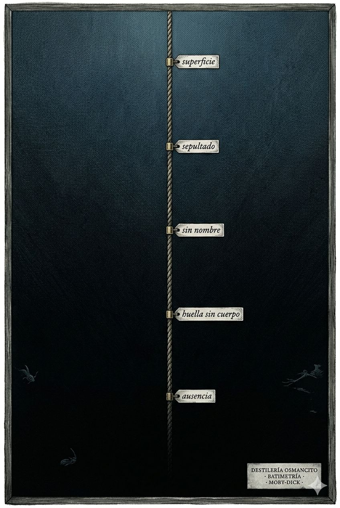
Una sonda en descenso vertical: una cuerda delgada que entra desde la parte superior de la imagen y se pierde en oscuridad creciente hacia abajo, con marcas de medición a intervalos regulares —brazas, como en la tradición náutica. Cada marca lleva una etiqueta escrita en letra muy pequeña: superficie, sepultado, sin nombre, huella sin cuerpo, ausencia. La cuerda desaparece antes de tocar fondo porque el fondo no existe o es más profundo que la imagen. El acto es descender y cartografiar la estratigrafía —revelar qué está en la superficie, qué opera sin nombrarse, qué no está.
Moby-Dick tiene una superficie engañosa: parece una novela de aventuras marítimas, y lo es, pero esa superficie sostiene una estratigrafía de cinco o seis capas que operan simultáneamente sin anunciarse. Lo más perturbador que revela la batimetría es que el tema declarado —la ballena, la caza, la obsesión— es la capa más delgada. Lo que trabaja de verdad el corpus está más abajo: la imposibilidad de conocer, el costo de la voluntad llevada hasta su límite, la indiferencia del mundo ante todo lo que los hombres construyen sobre él.
La caza como argumento. El arco narrativo es completamente visible: un barco, un capitán obsesionado, una ballena blanca, tres días de persecución, el hundimiento. No requiere mediación. El lector que quiere solo la historia la tiene.
El carácter de Ahab. Su grandiosidad, su monomanía, su capacidad de arrastrar a otros, su violencia de poder —todo declarado en superficie a través de acción y discurso. Ahab no esconde lo que es.
La enciclopedia de la ballena. Los capítulos de cetología son superficie explícita: el corpus quiere enseñar anatomía, taxonomía, historia natural. Lo hace sin disimulo y a veces con humor sobre su propia pedantería.
La diversidad de la tripulación. Treinta naciones, tres arponeros de tres continentes, la composición del Pequod como microcosmos del mundo —visible y declarada en varios capítulos.
La ternura de Ahab. Está en dos lugares: en la sinfonía donde habla de su mujer joven y su hijo desconocido, y en el cuidado que prodiga a Pip. En ambos casos el corpus la cubre inmediatamente con la vuelta a la obsesión. No desaparece —queda sepultada bajo capas de grandiosidad que funcionan como supresión activa. Requiere presión para aparecer: hay que estar dispuesto a leer contra el personaje declarado.
El fracaso del conocimiento enciclopédico. Los capítulos de cetología acumulan saber sobre la ballena con insistencia creciente, pero cada capítulo termina admitiendo que el objeto no ha sido agotado. La conclusión —que la ballena no puede ser conocida completamente— está presente en cada capítulo de cetología pero requiere leer el conjunto para aparecer. No está declarada como tesis; está distribuida como residuo de cada intento fallido.
La posición de clase de Ishmael. Ishmael es un hombre sin posesiones, sin familia reconocible, sin posición social. Elige el trabajo más bajo del barco —marinero raso— cuando por su educación y su capacidad narrativa podría aspirar a otra cosa. Esa elección y sus implicaciones están presentes pero dispersas, cubiertas por el tono filosófico que asume como narrador. Requiere presión para aparecer como hecho social, no solo como rasgo de carácter.
La economía de la caza. La ballena es aceite. El aceite es dinero. El dinero organiza todo: los contratos, las lays, el sistema de participación, la relación entre los dueños cuáqueros en tierra y los hombres que mueren en el mar. Está presente en varios capítulos pero cubierto por la épica de la caza. La novela es también una novela sobre el capitalismo extractivo del siglo XIX; eso requiere presión para aparecer.
La ballena como objeto de proyección. Moby Dick no es en ningún momento descrita desde adentro —no tiene perspectiva, no tiene intención declarada, no tiene carácter propio. Es siempre lo que los hombres proyectan sobre ella: la malicia del universo para Ahab, la justicia divina para los que leen la historia del Town-Ho, el accidente puro para Starbuck. El corpus cifra esto al no resolverlo nunca: la ballena permanece opaca exactamente porque es el receptáculo de todas las proyecciones. Nombrarlo es una propuesta: el corpus podría ser leído como la historia de un animal que simplemente existió.
La homoerótica del barco. El vínculo entre Ishmael y Queequeg —la cama compartida, el matrimonio declarado, el ataúd que funciona como salvavidas— opera con una temperatura afectiva que excede la amistad y que el corpus nunca nombra como tal. Tampoco la niega. La deja cifrada en los gestos: el abrazo de la mañana, la pipa compartida, la mirada de Ishmael sobre el cuerpo tatuado. Nombrarlo es una propuesta que el texto sostiene sin confirmar.
La crítica del poder carismático. Ahab toma un barco y lo lleva a la destrucción mediante la pura fuerza de su presencia. El corpus describe el mecanismo con precisión —cómo la tripulación cede, cómo Starbuck no puede actuar, cómo el sueño de Stubb reinterpreta la humillación como honor— pero nunca nombra esto como crítica política. Opera cifrado: la lectura política emerge del análisis, no del texto declarado.
La muerte como condición de la narración. Ishmael puede contar la historia solo porque sobrevivió, y sobrevivió por accidente. El corpus cifra esto en el Epílogo —brevísimo, casi evasivo— como si no quisiera llamar demasiado la atención sobre el hecho de que toda la arquitectura del relato descansa en un evento arbitrario: la dirección del vórtice. Si el vórtice hubiera funcionado de otra manera, no habría narrador. No habría libro.
La perspectiva de las mujeres. El corpus contiene las viudas de los balleneros —presentes en la capilla, en los cenotafios, en la mención de la esposa joven de Ahab. Pero ninguna tiene voz ni presencia narrativa. La huella es la forma de su ausencia: el corpus las menciona exactamente lo suficiente para que su exclusión sea visible. Algo fue desplazado aquí —la mitad de la humanidad que no cabe en un barco de caza.
Las culturas de Queequeg y los otros arponeros. Queequeg, Tashtego y Daggoo tienen origen, tienen historia, tienen sistemas de valor propios. El corpus los presenta con respeto y afecto —especialmente a Queequeg— pero sus culturas son finalmente instrumentalizadas: sirven para mostrar la diversidad del Pequod, para producir contraste con la civilización occidental, para morir con dignidad en el hundimiento. Lo que sus culturas pensaban sobre el océano, sobre la muerte, sobre la caza —borrado. Quedó la cicatriz de que estaban ahí.
La posibilidad del motín. En al menos dos momentos —la tormenta de San Telmo, la negativa a buscar al hijo del capitán del Rachel— la tripulación está al borde de amotinarse. Ahab los reconquista ambas veces. El motín posible dejó su huella en la estructura del libro sin llegar a ocurrir: la posibilidad fue activa, fue real, fue suprimida. Lo que ese motín habría producido —el único final alternativo disponible— fue borrado por el gesto de Ahab con el arpón encendido.
La perspectiva de la ballena. Moby Dick no tiene interior. Nunca. El corpus elige radicalmente no entrar en ninguna experiencia subjetiva del animal. No como omisión descuidada —como decisión estructural. La ballena sin perspectiva es la condición de que funcione como símbolo: en el momento en que tuviera perspectiva, dejaría de ser el espejo de todo y se convertiría en un animal con su propia historia.
La vida en tierra. Nantucket aparece en los primeros capítulos y desaparece. Lo que ocurre en tierra —familias, economías, políticas, el mundo que la caza sostiene desde la orilla— no está. El corpus eligió el barco como universo cerrado y lo es completamente: nada de lo que ocurre fuera de ese universo entra mientras el barco está en el mar.
La redención. El corpus no ofrece ninguna. Ahab muere sin aprendizaje declarado, sin reconciliación, sin el gesto final que la tragedia clásica suele conceder al héroe caído. El mar sigue rodando. El Rachel recoge a un huérfano. No hay lección extraída, no hay sentido recuperado. La ausencia de redención no es un descuido —es la posición filosófica más firme del libro.
La voz de Dios. El corpus invoca a Dios constantemente —en el sermón de Mapple, en la historia de Jonás, en las profecías de Fedallah, en la locura de Pip que vio el pie de Dios en el pedal del telar. Pero Dios no habla. No interviene. No corrige ni confirma. La ausencia de respuesta divina ante todo lo que el corpus le pregunta —y le pregunta mucho— es la ausencia más significativa del libro.
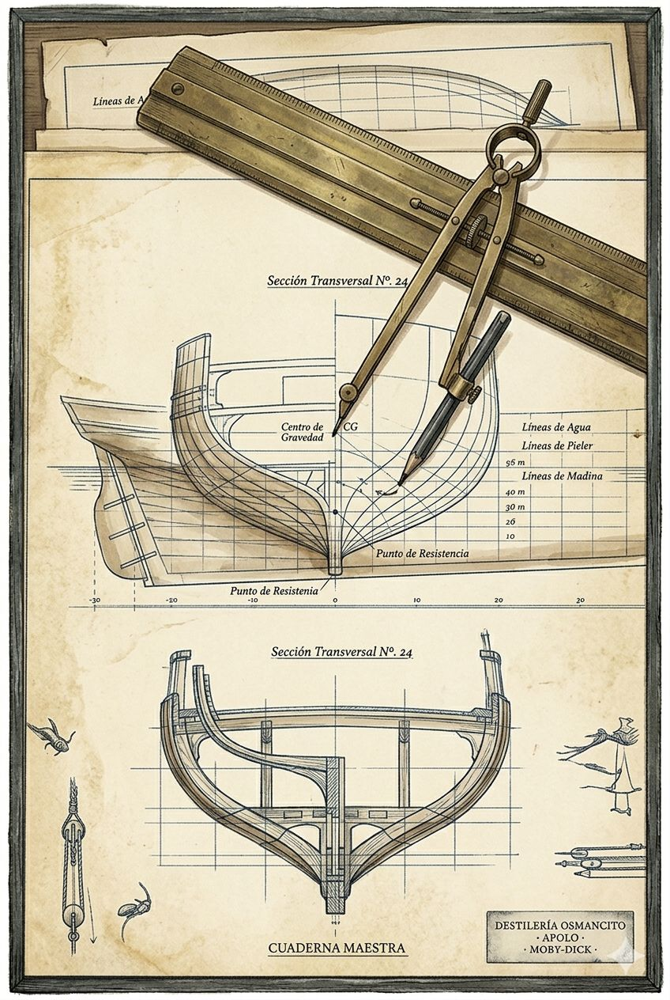
Los planos arquitectónicos de un barco extendidos sobre una mesa de navegación: líneas de agua, secciones transversales, la cuaderna maestra visible en detalle técnico de época. Sobre los planos, una regla de latón y un compás abierto, con una de sus puntas clavada en el punto donde debería estar el centro de gravedad del casco. Las líneas del plano son perfectas —la arquitectura que hace posible el viaje— pero el compás apunta a un lugar ligeramente fuera del centro, como si algo en el diseño resistiera la simetría. El acto es leer el corpus como arquitectura: medir, cartografiar, identificar fuerzas, producir el veredicto estructural.
La arquitectura de Moby-Dick es deliberadamente imposible: una novela de aventuras que se interrumpe a sí misma con tratados de cetología, una tragedia que inserta comedias, un monólogo interior que se vuelve drama con acotaciones de escena. Lo sorprendente no es que esa estructura sobreviva —es que la tensión entre sus partes incompatibles sea exactamente lo que la sostiene. El libro aguanta precisamente porque no se decide.
La premisa central de Moby-Dick es que un hombre puede organizar toda su existencia alrededor de un objeto único y que esa organización lo destruirá. El corpus carga sobre esa premisa el peso de una enciclopedia, una tragedia griega, un ensayo filosófico, una comedia de costumbres y un tratado naturalista. La pregunta es si aguanta.
Aguanta. Pero no porque la premisa sea suficientemente robusta para sostener todos esos registros —sino porque el narrador los sostiene en su lugar. Ishmael es el elemento estructural más importante del libro, no Ahab. Es Ishmael quien puede moverse entre la cetología y la tragedia sin que la costura se vea, quien puede describir la muerte de una ballena con precisión técnica y luego meditar sobre el significado de la blancura en el capítulo siguiente, quien puede hacer reír y luego instalar el horror. La estructura del libro es en realidad la estructura de una mente —la mente de Ishmael— y esa mente es suficientemente amplia para contener todo lo que Melville quiere meter adentro.
La única fisura estructural real está en la segunda mitad del libro, donde los capítulos de cetología se acumulan con una densidad que el argumento narrativo no siempre justifica. La estrategia de Melville —usar la demora enciclopédica para tensar la espera del encuentro final— funciona, pero tiene un costo: hay capítulos donde la tensión narrativa cae a cero y la enciclopedia no la reemplaza con tensión intelectual equivalente. El libro se estira en esos momentos más de lo que necesita.
La presión del mercado editorial de 1851. Melville había publicado Typee y Omoo —novelas de aventura en mares del Sur, comercialmente exitosas— y su editorial esperaba más de lo mismo. Moby-Dick es en parte la novela de aventuras que su mercado esperaba, y en parte la demolición de ese género desde adentro. La tensión entre lo que se vendía y lo que Melville quería escribir es estructuralmente visible: los capítulos de acción pura coexisten con capítulos que ningún lector de novela de aventuras del siglo XIX pedía ni podía esperar.
La sombra de Shakespeare. Melville descubrió a Shakespeare mientras escribía Moby-Dick —los soliloquios, las acotaciones dramáticas, la estructura de los tres días finales como acto trágico— y la influencia es visible en la arquitectura. Pero Shakespeare escribe para el teatro, y Melville escribe para la página. El resultado es una tensión genérica que el corpus no resuelve del todo: los capítulos dramáticos —con acotaciones, con coro, con soliloquios— son estructuralmente distintos a los capítulos narrativos, y la costura entre ellos es a veces visible.
La tradición épica americana. Moby-Dick opera bajo la presión de producir la épica nacional americana —una obra de la escala y ambición de la Iliada o el Paraíso Perdido pero para una nación nueva. Esa presión empuja el corpus hacia la grandiosidad en los momentos en que la historia ordinaria podría ser suficiente. Ahab es más grande que su historia porque la tradición épica exige figuras de esa escala.
La simetría del comienzo y el final. El libro abre con Ishmael solo, sin dinero, llegando a una ciudad desconocida. Cierra con Ishmael solo, flotando en el océano, sin nada. La simetría es perfecta y deliberada: el corpus es un viaje circular que no produce ganancia, solo pérdida y el relato de la pérdida.
La estructura tripartita del final. Los tres días de la cacería final tienen la arquitectura de una tragedia griega en tres actos: ascenso, peripecia, catástrofe. Cada día acumula daño sobre el anterior. El tercer día no escalona —colapsa. La forma del final es la más precisa del libro.
Los capítulos espejo. El corpus produce pares estructurales que funcionan por contraste: el sermón de Mapple (la obediencia) / los soliloquios de Ahab (la desobediencia); Starbuck con el mosquete primera vez / Starbuck con el mosquete segunda vez; el Rachel rechazado / el Rachel que rescata a Ishmael. Estos espejos no son decorativos —son la arquitectura del argumento moral del libro, que no se declara en ningún capítulo pero emerge de la forma.
La digresión como estructura. Los capítulos enciclopédicos no son interrupciones del argumento —son el argumento. La demora construye la espera, la espera construye el terror, el terror hace posible el final. Sin los capítulos de cetología, el encuentro con Moby Dick sería solo una pelea con un animal grande. Con ellos, es el encuentro con lo inagotable.
A nivel de frase: Melville trabaja con períodos largos, acumulativos, que añaden cláusulas hasta que el peso de la oración se vuelve físico. La sintaxis de los capítulos filosóficos imita el movimiento del mar —va y viene, añade, retira, suspende. En contraste, los capítulos de acción usan frases cortas, fragmentadas, con el ritmo de la urgencia. La diferencia sintáctica entre los registros es estructuralmente funcional: el lector siente el cambio en el cuerpo antes de procesarlo con la mente.
El corpus opera desde una ética que nunca nombra directamente: la verdad como destrucción. Los personajes que más cerca están de la verdad —Ahab, que nombra lo que persigue; Pip, que vio el fondo del océano— son los más destruidos. Los que sobreviven son los que mantienen distancia de la verdad: Ishmael, que nunca deja de dudar; Starbuck, que prefiere la razón práctica a la verdad absoluta. El corpus no dice que la búsqueda de la verdad sea mala. Dice que tiene un costo que el buscador raramente puede pagar.
Segunda ética operante, igualmente no declarada: la indiferencia del cosmos como condición de la dignidad humana. El mar no responde. Dios no responde. La ballena no responde. Y sin embargo los hombres actúan, eligen, construyen significado sobre esa indiferencia. El corpus no condena esa construcción —la muestra como inevitable y como lo único disponible.
Melville proyecta en Ishmael su propia posición: el hombre intelectualmente ambicioso que elige trabajar con las manos, que prefiere la experiencia directa a la autoridad libresca, que siente la atracción del abismo pero no se arroja en él. La distancia que Ishmael mantiene de Ahab es la distancia que Melville necesita mantener de su propio impulso hacia la grandiosidad.
Melville repite en Ahab algo que el corpus no puede nombrar porque el corpus es el intento de nombrarlo: la experiencia de haber querido algo con toda la fuerza disponible y haber descubierto que querer algo con toda la fuerza disponible no es suficiente para obtenerlo. Moby-Dick fue el libro más ambicioso que Melville pudo concebir. Fracasó comercialmente. El paralelo entre Ahab y Melville —el hombre que puso todo en una empresa que lo destruyó económica y reputacionalmente— es el secreto mejor guardado del libro y el que más ilumina cuando se ve.
Lo que Melville evita: la perspectiva de las mujeres, la voz interior de los personajes no blancos, cualquier escena que ocurra en tierra después del zarpe. Esas ausencias no son descuidos —son la forma del mundo que Melville puede imaginar.
Moby-Dick declara ser una novela de aventuras. Es en realidad una meditación sobre los límites del conocimiento humano, disfrazada de novela de aventuras para poder ser publicada y leída. Lo que trae realmente: la pregunta de si es posible conocer algo completamente —una ballena, un océano, a otro ser humano, el propio deseo— y la respuesta implícita de que no, y la pregunta adicional de qué hace un hombre con esa imposibilidad. Ahab la convierte en guerra. Ishmael la convierte en relato. El corpus propone que el relato es la respuesta menos destructiva disponible.
El imán — no es Moby Dick, aunque la lectura obvia lo señale. Es la blancura: el capítulo cuarenta y dos es el único capítulo del libro que analiza su propio símbolo central, y lo que encuentra es que la blancura no es amenaza sino ausencia —el vacío que el ojo no puede sostener porque no encuentra dónde detenerse. Ese vacío —no la ballena, sino el color de la ballena— curva el significado de todo lo que lo rodea. La blancura es lo que hace que Moby Dick no sea simplemente una ballena grande sino el objeto sobre el que se puede proyectar cualquier cosa, precisamente porque no tiene color propio que lo determine.
Tipo de curvatura — sobre concepto abstracto (la blancura como ausencia de significado, como terror antes de que el significado llegue).
Sistema secundario — existe un segundo imán: Ishmael como posición. No Ishmael como personaje —Ishmael como la postura del que observa sin ser arrastrado, del que cuenta porque sobrevivió, del que transforma la destrucción en lenguaje. Su relación con la blancura es asimétrica: la blancura destruye a Ahab; Ishmael la describe. La descripción como escudo, como distancia mínima necesaria para no ser consumido por lo que se mira.
Forma de la red — small-world: hay nodos de alta conectividad —Ahab, la ballena, Ishmael, la cuerda— rodeados de nodos más periféricos —los capítulos enciclopédicos, los personajes secundarios, los encuentros con otros barcos— que conectan entre sí a través de los nodos centrales. El conocimiento circula eficientemente entre los nodos centrales y llega con mayor dificultad a los periféricos.
Nodo de mayor integración — el capítulo 99, el doblón. Es el punto donde más ideas convergen: el poder de proyección, la multiplicidad de lecturas, la imposibilidad de la verdad objetiva, Pip como el único que ve el mecanismo completo. Ningún otro capítulo conecta tantas líneas del corpus.
Coherencia — el imán (la blancura) y el nodo de mayor integración (el doblón) divergen. La blancura es el vacío que produce terror; el doblón es el objeto lleno que produce proyección. La divergencia es un hallazgo: el corpus opera desde dos mecanismos complementarios del mismo fenómeno —lo que no tiene contenido aterra; lo que tiene contenido produce ilusión de conocimiento. Los dos juntos formulan la pregunta central del libro: ¿hay alguna posición desde la que el conocimiento sea posible?
El corpus produce inagotabilidad a través de la opacidad radical de su objeto central: la ballena no tiene perspectiva, no tiene intención declarada, no tiene interior accesible, y esa ausencia convierte a cada lector en el próximo Ahab —proyectando su propia necesidad sobre el animal que no puede devolver la mirada. La segunda fuente de inagotabilidad es estructural: el libro contiene demasiados registros simultáneos para ser agotado por una sola lectura, y cada registro ilumina los otros de manera distinta según el ángulo de entrada.
Moby-Dick es uno de los pocos libros que construyó algo que no existía antes de él: una forma capaz de contener la enciclopedia y la tragedia, la comedia y la filosofía, sin que ninguna devore a las otras. Esa construcción tiene fisuras visibles —la segunda mitad se estira más de lo necesario, hay capítulos donde el peso enciclopédico aplasta la tensión narrativa sin reemplazarla— y a pesar de esas fisuras aguanta el peso que le cargan dos siglos de lectura. Lo que le falta para ser exactamente lo que prometía es lo que no puede tener: la perspectiva del animal. Sin ella el libro es el monumento más preciso posible a la imposibilidad de conocer. Con ella habría sido otra cosa, probablemente menor. Vale el tiempo que cuesta. Vale también el tiempo que costará releerlo.
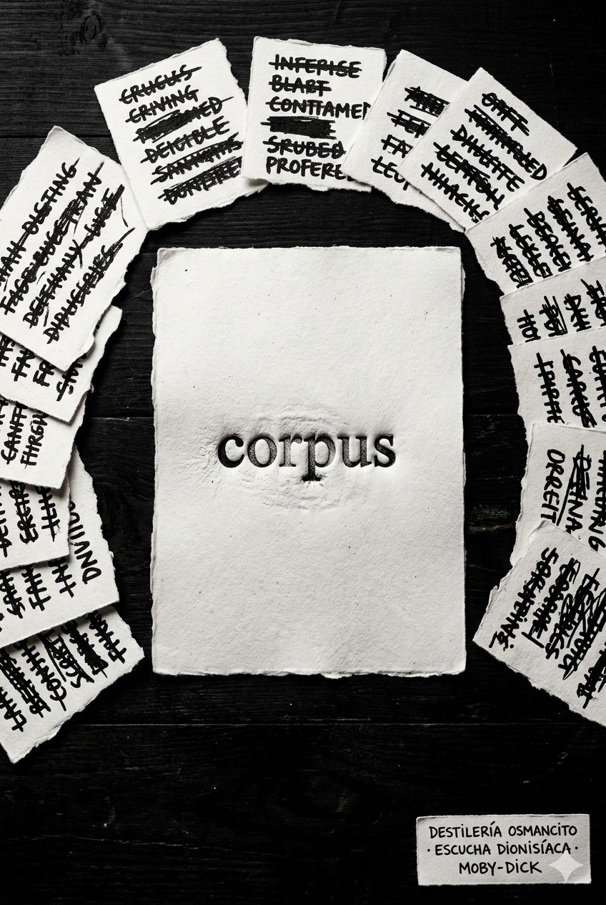
Una hoja en blanco sobre una mesa oscura, con una sola palabra escrita al centro en tinta negra espesa —la palabra no es visible desde este ángulo, pero su presión sobre el papel sí: la tinta hundió la fibra, el gesto fue intenso. Alrededor de la hoja, en semicírculo, fragmentos de otras hojas rasgadas, cada una con palabras tachadas hasta la ilegibilidad. El acto es llegar al corpus antes de que cualquier categoría lo toque: reducir el vocabulario disponible paso a paso hasta encontrar el idioma del corpus en lugar de importar el idioma de la crítica. El mundo tiene la temperatura de un proceso que se niega a sí mismo para llegar más lejos.
El corpus carga con la convicción de que nombrar las cosas completamente equivale a sobrevivir a ellas, y la ballena destruye todo igual. Lo que sobrevive no es el más sabio ni el más valiente sino el que estaba flotando en el lugar equivocado cuando ese lugar se volvió el correcto, y eso convierte todo lo que Ishmael narra en algo ligeramente inestable, como testimonio dado desde una orilla a la que llegó por accidente. El mar al final no recuerda nada de lo que ocurrió dentro de él, y el texto lo sabe, y lo dice, y sigue siendo el mar el que tiene la última palabra.
El mar sigue rodando cuando ya no queda nadie para verlo.
Zona 1 “Call me Ishmael. Some years ago—never mind how long precisely—having little or no money in my purse, and nothing particular to interest me on shore, I thought I would sail about a little and see the watery part of the world.”
La vitalidad aquí es de umbral. Alguien abre una puerta hacia adentro antes de abrirla hacia afuera. El “never mind how long precisely” es un gesto vivo: la mano que aparta algo antes de que puedas tocarlo. No comienza una historia. Comienza una voz que ya lleva tiempo hablando sola.
Zona 2 “Whenever I find myself growing grim about the mouth; whenever it is a damp, drizzly November in my soul…”
Vitalidad de acumulación que busca su propia rotura. Las frases se apilan como presión. El texto respira de forma irregular aquí, como alguien que enumera razones para no hacer algo que ya decidió hacer. Es la energía de quien se convence a sí mismo en voz alta.
Zona 3 “Extracts (Supplied by a Sub-Sub-Librarian)” y toda la sección de citas que sigue.
Vitalidad de archivo que se niega a ser archivo. Citas de la Biblia, de diarios de balleneros, de poemas, de diccionarios. El texto aquí late con la energía de alguien que amontona voces ajenas porque la propia todavía no alcanza a rodear lo que va a decir. No es preparación. Es desbordamiento anticipado.
Zona 4 El capítulo 32: Cetology.
Vitalidad de clasificación que se sabe fracasada y continúa de todas formas. Melville cataloga ballenas con la seriedad de un científico y la conciencia sorda de que el sistema se romperá. El pulso aquí es extraño: es la energía de alguien construyendo una presa mientras el agua ya está entrando. Hay algo casi cómico, casi trágico, y completamente vivo en esa obstinación.
Zona 5 “The Whiteness of the Whale” — Capítulo 42.
Vitalidad de pensamiento que se come a sí mismo. No es una descripción. Es un texto que intenta rodear algo que retrocede cada vez que se acerca. Ishmael enumera todas las formas en que el blanco debería significar pureza, y cada ejemplo lo acerca más al horror. El pulso aquí es de vértigo intelectual: la mente corriendo hacia un borde que no puede dejar de ver.
Zona 6 El Quarter-Deck. Ahab clava el doblón. “What do ye do when ye see a whale, men?”
Vitalidad de contagio. El texto se vuelve ritual aquí. Las respuestas de los marineros no son réplicas: son ecos que Ahab convoca. Lo que está vivo en esta zona no es la escena sino el mecanismo: cómo una voluntad puede entrar en otras voluntades y hacerlas vibrar a su frecuencia. Es la energía de la posesión colectiva, y ocurre en tiempo real mientras se lee.
Zona 7 Stubb, Starbuck, Flask — los capítulos donde cada uno habla solo, de noche.
Vitalidad de soledad que no se sabe soledad. Cada uno en su oscuridad, pensando sin interlocutor. El texto late aquí con algo diferente al resto del libro: una energía lateral, como luz que entra oblicua. Son vidas completas que el libro nunca va a reclamar del todo.
Zona 8 “To the last I grapple with thee; from hell’s heart I stab at thee; for hate’s sake I spit my last breath at thee.”
Vitalidad de agotamiento que se niega. No es furia. Es algo más antiguo que la furia: la energía de un cuerpo que ya no tiene razones y sigue moviéndose por pura inercia de querer. El texto aquí no describe a Ahab. Se convierte en él.
Zona 9 El martillo de Tashtego clavando la bandera mientras el barco se hunde. El pájaro atrapado.
Vitalidad de gesto que dura más que quien lo hace. No hay pensamiento aquí. Solo brazo, martillo, madera, pájaro, agua. El pulso es puro movimiento físico continuando después de que el sentido se fue. Es la energía más extraña del libro: la acción que sobrevive a su actor.
Zona 10 “…and the great shroud of the sea rolled on as it rolled five thousand years ago.”
Vitalidad de indiferencia que no es crueldad. El mar no ignora. Simplemente continúa. El pulso aquí es el más quieto de todo el corpus y por eso el más perturbador: es la energía de lo que existía antes y existirá después, rozando por un instante lo humano sin detenerse.
Zona 11 El epílogo. Ishmael flotando en el ataúd.
Vitalidad de residuo. No de sobrevivencia. De lo que queda cuando todo lo que debía terminar ya terminó. El texto aquí late con la energía más tenue del libro, casi imperceptible: un hombre en el agua, sostenido por la caja que alguien construyó para no morir, encontrado por un barco que buscaba otra cosa.
El pulso más pequeño. El único que llega a la orilla.
El texto no avanza.
Se lanza.
Hay un movimiento que reconozco de los barcos, aunque nunca haya estado en uno: el texto amura. Se inclina hacia un lado bajo el peso de algo invisible y desde esa inclinación permanente genera su velocidad. No va recto. Va escorado. Y esa es su forma natural de moverse, no un defecto.
A veces el texto sonda.
Lanza algo hacia abajo para medir profundidad y lo que regresa no es medida sino más oscuridad. El capítulo de la blancura es esto: la sonda que baja y baja y el cabo nunca se tensa porque no hay fondo. El texto sigue lanzando igual. Medir es lo que sabe hacer aunque medir no funcione.
El texto también ventea.
Los cachalotes ventean antes de sumergirse: expulsan hacia arriba lo que ya no sirve adentro. Hay momentos en Melville donde el texto hace exactamente eso: los catálogos, las etimologías, los apartes cómicos de Stubb, las digresiones sobre el color. No son interrupciones. Son el venteo antes de la inmersión siguiente. El cuerpo del texto respirando entre sondas.
Luego hay un movimiento que no tiene nombre marinero pero que el texto mismo nombra en otro lugar: la línea de arponear.
Cuando el arpón sale, la línea enrollada en el balde empieza a correr. Corre tan rápido que quema. El texto hace esto en ciertos momentos: algo se suelta y las frases corren solas, sin que nadie las detenga, y hay peligro de que la línea te atrape el cuello si no te apartas. La muerte de Ahab es literalmente esto. Pero también lo es “Call me Ishmael”: la línea ya corriendo desde la primera palabra.
El texto marea.
No fluye como río, que tiene orilla y dirección. Marea: sube, cubre, retrocede, deja cosas. Cada vez que sube deja el mundo un poco más irreconocible. Cada vez que baja hay objetos que no estaban antes en la arena. Los marineros muertos que aparecen de capítulo en capítulo. El ataúd que era de Queequeg y termina siendo de Ishmael. La marea no recuerda lo que deja. Pero lo deja.
Hay un movimiento más difícil de nombrar.
El texto a veces fatigua el agua.
Los remos de un bote, cuando reman en círculo, crean un remolino que se alimenta a sí mismo. Hay capítulos que hacen esto: giran sobre el mismo punto sin avanzar, pero el girar mismo genera algo, una fuerza centrípeta que al final del capítulo succiona. La Cetología es esto. El Quarter-Deck es esto. No van hacia ningún lugar. Giran hasta que algo cede.
Y finalmente: el texto abisma.
No cae. No baja. Abisma: abre hacia abajo sin moverse. Hay frases en Melville que permanecen quietas en la superficie mientras lo que está debajo de ellas no tiene término. “The great shroud of the sea rolled on as it rolled five thousand years ago” no se mueve en ninguna dirección. Se queda donde está y abre.
El segundo idioma interno del texto es el idioma del agua que trabaja.
No el agua como paisaje. El agua como mecánica: presión, corriente, remolino, profundidad, superficie. El texto piensa en hidráulica. Sabe que todo lo que flota lo hace porque algo empuja desde abajo. Sabe que la calma en la superficie no dice nada sobre lo que se mueve debajo. Sabe que el agua no empuja hacia ningún lado en particular: empuja hacia todos lados a la vez, y lo que se mueve es lo que cede.
Ishmael cede. Ahab no cede. El mar no tiene opinión sobre esto.
El guión de Ahab.
En su primera aparición, Ahab no aparece. El capítulo se llama “Ahab” y él no está. Su peso es de ausencia que ocupa volumen. Como una caja sellada que no puedes abrir pero puedes levantar y notar que pesa más de lo que debería.
“Call me Ishmael.”
Tres palabras. El peso es de instrucción sin origen. No dice “me llamo”. Dice “llámame”. Alguien está pidiendo ser nombrado de cierta manera, lo que significa que tiene otro nombre que no va a dar. Ese nombre ausente pesa. Es plomo en una frase que parece corcho.
El Sub-Sub-Bibliotecario.
Mencionado una vez, en el prefacio, como quien recopiló las citas. Nunca regresa. Su peso es de trabajo invisible que sostiene todo lo demás. Como los cimientos: no decorativos, no visibles, pero si no están el edificio no está. Alguien pasó años reuniendo esas citas y el texto lo descarta en un párrafo con afecto irónico. Ese descarte pesa con la densidad específica de lo que se hace sin que nadie lo vea.
El doblón clavado al mástil.
No es grande. Es una moneda. Pero cada marinero lo mira y ve algo distinto, y el texto los muestra mirando sin decir quién tiene razón. Su peso es de objeto que mide a quien lo mide. Densidad de espejo que no refleja sino revela. Más pesado que su metal porque acumula todos los pesos que cada mirada le deposita.
“Never mind how long precisely.”
Cuatro palabras dentro de una oración larga. Pero ahí Ishmael toca algo y lo aparta antes de que lo veas. El peso es de puerta cerrada con demasiada rapidez. La velocidad del gesto delata que detrás hay algo. Si no hubiera nada, no habría prisa.
El ataúd de Queequeg.
Aparece porque Queequeg cree que va a morir. Luego Queequeg decide no morir y el ataúd queda. Se convierte en flotador. Salva a Ishmael. Su peso es de objeto que sobrevive a su propósito original y encuentra uno nuevo sin que nadie lo decida. Como madera que era árbol, luego tabla, luego cajón, luego balsa. Cada transformación sin intención. Ese peso es el de la materia que dura más que los planes que la usaron.
La Rachel.
El barco que salva a Ishmael al final. Aparece antes: buscando a los hijos de su capitán, perdidos en la cacería. El Pequod no los ayudó a buscar. Su peso al final es de deuda que se salda sin que nadie la cobre. No hay justicia explícita. Solo un barco que seguía buscando niños y encontró a un hombre. Peso de coincidencia que tiene la forma de la consecuencia sin serlo.
El pájaro clavado bajo el mástil.
Un alcatraz atrapado por el martillo de Tashtego mientras el barco se hunde. Extensión: dos oraciones. Peso: el de algo que no debería estar ahí. No es marinero, no es ballena, no eligió este barco ni esta muerte. Su peso es de víctima sin bando, que es el más difícil de sostener porque no cabe en ninguna cuenta.
“I only am escaped alone to tell thee.”
Es de Job. Está en el epílogo como epígrafe. No lo dice Ishmael: lo dice el texto antes de que Ishmael hable. Su peso es de voz prestada que dice lo verdadero que la voz propia no puede decir. Ishmael no se llama a sí mismo sobreviviente. El texto lo llama por él, con palabras que tienen tres mil años. Ese peso es el de antigüedad usada como exactitud.
El silencio de Starbuck.
Starbuck sabe. Ve lo que viene. Tiene razón en todo. No actúa. Su peso no está en lo que dice sino en lo que el texto no le permite hacer. Es el peso de lo correcto que no encuentra el momento de volverse acto. Denso como algo que debería ser gas y permanece sólido. Bloqueado en su propio interior.
“Cherries. Cherries. Cherries.”
Flask, muriendo, desea cerezas. No salvación. No tierra. Cerezas. Tres palabras repetidas mientras el barco se hunde. Su peso es de lo pequeño y específico en el lugar donde se esperaba lo grande y general. Es el peso del deseo concreto en el momento más abstracto. Más denso que cualquier declaración de Ahab porque no intenta significar nada más que lo que dice.
El texto carga con la convicción de que comprender algo completamente equivale a sobrevivir a ello.
Ishmael nombra, cataloga, describe, digresa. Aprende el nombre de cada hueso de la ballena. Mide su grasa. Clasifica su especie. Y la ballena lo destruye todo igual. El texto no registra esta contradicción. La vive sin verla.
Carga con una pregunta sobre quién tiene derecho a quedarse quieto.
Starbuck se queda quieto y muere por eso. Ishmael se queda quieto, flotando, y sobrevive. El texto no compara estas dos quietudes. Pero están ahí, paralelas, sin que nadie las ponga juntas.
Carga con el trabajo de los que no tienen nombre.
Los marineros sin capítulo propio. Los que reman, los que cuecen, los que vigilan. El texto los mueve por el barco como se mueve el agua por una embarcación: necesaria, invisible, sin historia. No es que el texto los ignore. Es que el texto no sabe que no sabe quiénes son.
Carga con el hecho de que Ahab tiene razón en una cosa.
La ballena blanca existe. No es delirio. No es proyección. Existe, nada, destruye. El texto permite esto sin subrayarlo: que el objeto de una obsesión puede ser completamente real y la obsesión seguir siendo lo que mata.
Carga con una forma específica de soledad que no es la de estar solo.
Es la soledad de estar rodeado de gente que comparte tu peligro pero no tu interior. Cada hombre en el Pequod muere en compañía. Nadie muere acompañado. El texto no distingue entre estas dos cosas. Pero el lector las siente distintas.
Carga con el cuerpo de la ballena.
No como adversario. Como cuerpo. Animal que respira, que tiene cría, que migra. El texto sabe esto, lo describe con precisión biológica, y luego lo arpona igual. No hay culpa en el texto. Tampoco hay ausencia de culpa. Hay algo anterior a ambas: el conocimiento y el acto coexistiendo sin resolver su relación.
Carga con la posibilidad de que Ishmael sobrevivió por accidente.
No por virtud. No por sabiduría. Por estar en el lugar equivocado en el momento en que ese lugar se volvió el correcto. El texto lo toca una vez, levemente, y sigue. Pero si eso es cierto, todo lo que Ishmael narra sobre sí mismo tiene otro peso.
Carga con el mar como algo que no participó.
El mar no quiso hundir el Pequod. No quiso salvar a Ishmael. El texto termina con el mar rodando como rodaba antes. Y eso significa que todo lo que ocurrió ocurrió dentro del mar como ocurre dentro de un cuerpo algo que el cuerpo no registra. El texto llega hasta el borde de esto.
Es un animal que ya estuvo en el agua mucho tiempo antes de que lo abras: lo que encuentras no es el comienzo sino el regreso de algo que salió y volvió cargando más de lo que fue a buscar. Respira de forma irregular, a veces no respira en páginas, y cuando vuelve a hacerlo no es donde esperabas. No te va a explicar lo que hace mientras lo hace. Va a catalogar, a digresionar, a detenerse en la grasa y en el hueso y en el color blanco de algo que no se deja mirar, y todo eso no es el camino hacia otra cosa: es el animal moviéndose. Puedes intentar rodearlo pero es más grande que tu capacidad de rodearlo, y sabe esto, y continúa igual. Lo que te va a dejar al final no es una respuesta ni una herida sino algo más parecido a lo que deja el mar cuando baja: objetos en la arena que no estaban antes, sin instrucciones sobre qué hacer con ellos.
Una mirada que pueda quedarse quieta dentro del movimiento. Que no necesite que cada digresión justifique su existencia antes de continuar.
Una mirada que haya perdido algo y no haya terminado de saber qué. No para encontrarlo aquí, sino porque ese tipo de mirada reconoce ciertos silencios desde adentro.
Una mirada científica, pero del tipo que sabe que clasificar no es lo mismo que comprender y lo sigue intentando. Que encuentra algo honesto en la obstinación de nombrar lo que no se deja nombrar.
Una mirada que pueda sostener la contradicción sin resolverla. Que no llegue buscando la frase que resume, porque el corpus no la tiene, y esa ausencia no es un defecto.
Una mirada acostumbrada al trabajo físico. Al tipo de atención que se necesita cuando algo pesa de verdad y hay que moverlo igual. Este corpus tiene esa cualidad: no aligera lo que carga para que sea más fácil de llevar.
Una mirada que haya pensado sobre el mar, sobre cualquier mar, no necesariamente el océano. El mar como aquello que continúa sin registrar lo que ocurrió dentro de él.
Una mirada que sepa esperar sin saber qué espera. Que pueda estar en la página de la Cetología, clasificando ballenas, sin saber todavía que eso es parte de algo, y seguir.
Una mirada que resista la tentación de salvar a los personajes. Que pueda ver a Starbuck saber y no actuar, y no resolver eso, y seguir leyendo.
Una mirada que en algún momento haya sentido que comprender algo completamente debería proteger. Y que descubrió que no.
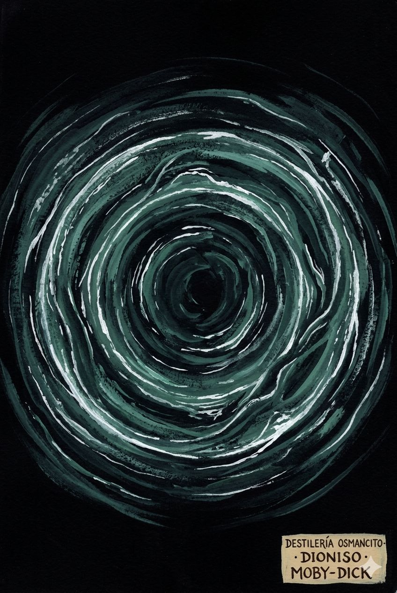
Una superficie de agua vista desde arriba en el momento exacto en que algo enorme acaba de pasar por debajo sin romper la superficie —solo la deformación del agua lo denuncia: círculos concéntricos que no son de impacto sino de presencia, el movimiento de algo que se mueve sin necesitar tocar. No hay cuerpo visible. Solo la consecuencia de existir. El acto es leer el corpus como acontecimiento: escuchar lo que late, lo que el texto carga sin saberlo, lo que se mueve debajo de lo que cree estar diciendo.
Moby-Dick produce en quien lo lee la sensación de haber estado en el mar demasiado tiempo: cuando se cierra, la tierra firme parece provisional. Lo que permanece no es la ballena —es el océano después del hundimiento, rodando como rodaba cinco mil años antes, sin registro de lo que acaba de ocurrir sobre él. Ese silencio final es lo más vivo del libro, y lo más perturbador, porque no es vacío: es plenitud que no necesita al hombre para estar llena.
El océano que no sabe que eres su testigo.
Capítulo 1 — El impulso hacia el agua. Vitalidad de compulsión reconocida: Ishmael no decide ir al mar —descubre que ya va. La energía aquí no es aventura sino alivio, el alivio del hombre que deja de resistir lo que ya ocurría. El lector que ha sentido eso alguna vez lo reconoce antes de poder nombrarlo.
Capítulo 36 — El cuarto de bitácora. Vitalidad de contagio. No se entiende exactamente cómo Ahab convierte a la tripulación —no hay argumento, no hay lógica económica, no hay amenaza directa. Se siente que ocurre. Esa transmisión sin mecanismo visible es el lugar donde el corpus más se parece a lo que describe: una fuerza que opera antes de que se pueda pensar en ella.
Capítulo 42 — La blancura. Vitalidad de vértigo. El capítulo construye su argumento con cuidado, añade ejemplo tras ejemplo, y en algún punto el lector deja de seguir el argumento y empieza a sentir lo que el argumento describe: el terror ante lo que no tiene color, lo que no refleja nada, lo que no devuelve la mirada. El capítulo produce lo que analiza.
Capítulo 93 — El abandono de Pip. Vitalidad de horror sin grito. Pip en el océano solo. La descripción es breve, casi clínica. Y sin embargo es el momento más físicamente perturbador del libro —el cuerpo del lector responde antes que la mente. La enormidad del océano experimentada desde adentro, sin retórica.
Capítulo 99 — El doblón. Vitalidad de reconocimiento del mecanismo propio. Cada personaje lee el doblón y ve su propio rostro. El lector, que los observa a todos, descubre que también está leyendo el doblón —que su lectura del libro entero es un acto del mismo tipo. El capítulo convierte al lector en personaje sin avisarle.
Capítulo 129 — Ahab y Pip. Vitalidad de ternura que duele. El único lugar del libro donde Ahab baja la guardia completamente, y lo hace precisamente con el personaje más roto. La energía aquí es la de la sutura entre dos heridas que no pueden curarse la una a la otra pero se reconocen. Permanece después de cerrar el libro con más fuerza que cualquier escena de acción.
Capítulo 132 — La sinfonía. Vitalidad de puerta que se cierra desde adentro. El momento más doloroso del libro no es el hundimiento —es este, donde Ahab podría y no puede. La energía es de posibilidad que expira en tiempo real, ante los ojos del lector que sabe lo que viene.
Capítulo 135 — El tercer día. Vitalidad de inevitabilidad cumplida. No sorprende nada de lo que ocurre —el corpus lo ha prefigurado todo. Y sin embargo cada golpe llega con peso propio. La inevitabilidad no amortigua: amplifica.
El interior de la ballena. El corpus rodea sistemáticamente la experiencia subjetiva de Moby Dick. Cada capítulo que la acerca —la anatomía, el comportamiento, las historias de encuentros previos— la deja más opaca, no más conocida. El corpus lleva adentro la pregunta de qué siente o sabe o experimenta el animal, y la lleva sin poder hacerla visible porque hacerla visible destruiría lo que el libro construye.
La voz de los que esperan en tierra. La esposa joven de Ahab. Las mujeres de la capilla con sus cenotafios. Los hijos de los marineros. El corpus los roza —los nombra lo suficiente para que su ausencia sea sensible— y luego los deja. Hay un libro que no se escribió sobre las personas que esperan a los barcos que no regresan, y ese libro es la sombra de este.
El arrepentimiento. El corpus bordea la posibilidad del arrepentimiento de Ahab en la sinfonía y en el cuidado de Pip, se acerca lo suficiente para que el lector lo sienta posible, y lo retira. No como evasión sino como declaración: este corpus lleva adentro la convicción de que hay hombres que no pueden arrepentirse no porque sean malos sino porque algo en ellos ya no tiene acceso a esa operación.
La ballena como sujeto. El corpus lleva adentro una pregunta que no puede formular: ¿qué es un animal que puede destruir un barco? No como amenaza —como ser. La imposibilidad de formularla produce la opacidad de la ballena, que es el corazón del libro.
El exceso de cetología en la segunda mitad. A partir del capítulo 70, los capítulos enciclopédicos se acumulan con una densidad que la tensión narrativa no siempre justifica. El síntoma: Melville no puede parar. La enciclopedia que construyó para sostener el libro empieza a sostenerlo a él —a darle tiempo, a aplazar el encuentro que también teme escribir. Los capítulos más extensos sobre anatomía de ballenas aparecen precisamente cuando la presión narrativa es mayor. El texto evita lo que persigue.
El humor que aparece en los momentos de mayor peso. Cada vez que el corpus acumula demasiado peso emocional —después de la declaración de Ahab, después del abandono de Pip, después de la tormenta de San Telmo— aparece un capítulo cómico que alivia la presión. El síntoma: Melville no puede sostener la intensidad máxima sin interrumpirla. No es un defecto —es un reflejo. La comedia como válvula de presión revela que el peso que el corpus carga excede lo que puede sostener sin descanso.
La multiplicación de presagios. El corpus produce una cantidad de presagios que excede lo necesario para la trama: Elías en el muelle, el surtidor fantasma, el profeta del Jeroboam, las velas de San Telmo, Fedallah, el sombrero del halcón. Cada uno podría sostenerse solo. Juntos producen un síntoma: la ansiedad del escritor que no confía en que el lector sienta lo que debe sentir y lo dice tres veces más de lo necesario. El exceso de presagio es el corpus perdiendo la confianza en sí mismo.
La nota al pie de Ishmael. Hay momentos donde Ishmael recuerda que está contando una historia que ya ocurrió —que sobrevivió, que está escribiendo desde después. Esos momentos producen una grieta en el presente narrativo que el corpus no puede cerrar del todo. El síntoma: el narrador que sobrevivió para contar no puede borrarse completamente del acto de contar, y su presencia intermitente hace visible la artificialidad de la ilusión de inmediatez que el corpus trabaja para producir.
La lista como pensamiento. El corpus hace listas constantemente: listas de lenguas para la palabra ballena, listas de autores que la citaron, listas de especies, listas de naciones en la tripulación, listas de los signos del doblón, listas de los tipos de ballenas cazadas, listas de las representaciones visuales del animal. El conteo no es exacto pero el patrón es omnipresente —aparece en al menos veinte capítulos de los ciento treinta y cinco. El exceso produce en el lector una experiencia específica: la sensación de que el corpus quiere agotar el objeto por acumulación, que si se nombra todo lo que hay no quedará nada sin nombrar. Y en cada lista el corpus demuestra que el agotamiento es imposible. La lista es el mecanismo del libro —y el mecanismo de su fracaso declarado, que es también su logro.
El giro hacia la generalización. Repetidamente, el corpus toma un hecho específico —la cuerda del arpón, el aceite de la coronación, la ley del pez rápido— y lo generaliza hacia la condición humana. El patrón aparece en más de quince capítulos con estructura idéntica: observación particular → ampliación → declaración sobre todos los hombres. El exceso produce en el lector la sensación de que todo en el libro es metáfora de todo lo demás, que el cosmos entero está organizado alrededor del barco. Esa sensación es exactamente lo que el corpus quiere producir en Ahab —y la produce también en el lector.
La invocación del lector. Ishmael se dirige al lector directamente —“como cualquiera de ustedes sabe”, “les aseguro”, “consideremos esto”— con una frecuencia que excede la norma narrativa de la época. El patrón hace que el libro se lea como conversación, como si Ishmael estuviera en la misma habitación. El exceso produce complicidad: el lector acepta como propias las preguntas del narrador porque el narrador lo incluyó antes de que pudiera negarse.
Lo que dice
Un marinero sin historia ni posesiones se embarca en un ballenero cuyo capitán está obsesionado con matar a la ballena que le amputó la pierna. La tripulación, compuesta por hombres de todos los rincones del mundo, sigue al capitán hasta el final. La ballena destruye el barco. El marinero sobrevive flotando en el ataúd de su amigo muerto. El océano sigue.
Lo que muestra
El conocimiento como acto destructivo. No el conocimiento ordinario —el conocimiento total, el que no acepta límite, el que convierte el objeto en enemigo cuando no puede ser agotado. Ahab no quiere venganza de la ballena: quiere que la ballena responda. Quiere que el universo responda. Y cuando el universo no responde, hace de la ballena la cara del universo y le declara la guerra. El corpus muestra que esa operación —convertir lo indiferente en enemigo— es la única forma que el hombre tiene de relacionarse con lo que no puede conocer, y que esa forma mata.
Lo que exige
Leer este libro con integridad exige estar dispuesto a no resolver a Ahab. No absolverlo ni condenarlo —sostenerlo en la ambigüedad de alguien que tiene razón sobre algo fundamental y está completamente equivocado sobre cómo responder a eso. Exige también estar dispuesto a sobrevivir al libro como Ishmael sobrevive al naufragio: flotando en algo que pertenecía a otro, sin mérito propio, sin lección extraída, solo el hecho de haber estado ahí y de poder contar.
Lo que guarda
Que la única respuesta honesta a la indiferencia del cosmos no es la guerra de Ahab ni la resignación de Starbuck ni el humor de Stubb. Es lo que Ishmael hace: nombrar. Hacer el inventario. Contar las especies, los nombres de la ballena en dieciséis idiomas, los hombres que murieron, el color del agua antes del hundimiento. No porque nombrar cambie nada —el océano sigue rodando— sino porque nombrar es lo único que el hombre puede hacer que el océano no puede hacer. Y eso, sin ser suficiente, es suficiente para que haya libro.
Moby-Dick huele a aceite de ballena y a madera empapada de sal. Su temperatura varía por capítulo: hay partes que queman —el cuarto de bitácora, la sinfonía— y partes que enfrían hasta la incomodidad —los capítulos de cetología, el final. En la mano pesa más de lo que debería para su tamaño: es un libro denso en el sentido físico, que se lee con resistencia. Lo que deja es una especie de resaca marina —la sensación de haber estado en un espacio donde las proporciones eran otras, donde un hombre era pequeño y el océano era todo, y de que esa proporción correcta es difícil de olvidar una vez sentida. Envejece bien: cada relectura encuentra capas que la anterior no alcanzó, como la estratigrafía de un fondo marino que da distintos resultados según la profundidad del sondeo.
El corpus tiene el pulso de un barco en mar abierto: movimiento constante pero no uniforme, aceleración súbita en los momentos de caza, calma larga entre tormentas. La instrumentación es coral en su mayoría —treinta voces de treinta naciones— pero con un solista que domina sin anular a los otros: Ahab sobre la orquesta completa, como un instrumento de viento que lleva la melodía principal mientras los demás sostienen la armonía que hace posible su volumen. Hay contrapunto real entre los capítulos de cetología y los capítulos de acción: los dos se interrumpen mutuamente con una lógica que no es aleatoria sino rítmica, y ese ritmo —demora y golpe, demora y golpe— es la estructura musical del libro antes de ser su estructura narrativa. El silencio estructural más importante no está en ningún capítulo: está entre el hundimiento y el Epílogo, en el espacio blanco donde el océano rueda sin testigo.
Título — La Mer (tres bocetos sinfónicos) Autor / Intérprete — Claude Debussy / Claudio Abbado con la Orquesta Filarmónica de Berlín Por qué — Debussy construyó música que no describe el mar desde afuera sino que lo reproduce desde adentro —la ondulación, la calma falsa, el golpe sin aviso— y Abbado lo dirige con la misma temperatura: sin romanticismo, sin espectacularidad innecesaria, con la frialdad exacta de quien sabe que el océano no necesita ser embellecido para ser aterrador.
Lo que este corpus guarda: que el nombre que le damos a lo que no podemos conocer determina si sobrevivimos o no —desde la profundidad donde el lenguaje y el deseo se vuelven indistinguibles.
Preguntas que quedan abiertas y predicen inagotabilidad
¿Es posible conocer algo completamente? ¿O el acto de conocer produce inevitablemente un residuo —algo que el conocimiento toca pero no puede capturar— que crece con cada aproximación?
¿Qué ocurre con la voluntad cuando no hay objeto que la satisfaga? ¿Se convierte en otra cosa, o se convierte en sí misma?
¿Es la supervivencia de Ishmael un accidente o hay algo en su postura —la distancia, el humor, la capacidad de nombrar sin agotar— que lo hace menos destruible que Ahab?
Preguntas que el corpus abandona sin decirlo
¿Qué le ocurrió a la esposa de Ahab después del hundimiento? El corpus la mencionó, la hizo real, y la abandonó sin reconocer que la abandonaba.
¿Qué cultura tenía Queequeg exactamente, qué pensaba su cultura sobre el océano y la muerte? El corpus produce su presencia y borra su interior.
Preguntas que el corpus responde
¿Hay redención disponible para Ahab? No. El corpus lo responde con el final y con la sinfonía donde Ahab podría y no puede.
¿Puede un hombre detener lo que ya puso en movimiento cuando la voluntad es suficientemente intensa? No. Eso también está respondido.
Preguntas que el propio acto de formularlas ya responde
¿Por qué Ishmael sobrevivió? La pregunta ya contiene su respuesta: porque alguien tenía que poder contar. La supervivencia de Ishmael es retroactivamente necesaria —sin ella no hay libro, y sin libro no hay pregunta.
Preguntas que responde para algunos lectores y no para otros
¿Es Ahab un héroe trágico o un hombre peligroso que arrastró a otros a su destrucción? Depende de si el lector tiene más acceso a la grandeza de Ahab o al costo que su grandeza impuso a los treinta hombres que murieron con él. El corpus sostiene las dos lecturas sin privilegiar ninguna.
La falla raíz
El corpus quiere simultáneamente que Ahab sea grandioso —de la escala de los héroes épicos, digno de la forma trágica que el libro le da— y que su empresa sea condenada por el daño que produce. Las dos cosas no pueden ser igualmente verdaderas al mismo tiempo. El corpus no resuelve la contradicción porque no puede: resolver en favor de la grandeza convertiría el libro en una glorificación de la destrucción; resolver en favor de la condena reduciría a Ahab a un simple tirano. La falla raíz es que Melville amaba a Ahab y sabía que Ahab estaba equivocado, y no pudo elegir entre las dos cosas. Esa incapacidad de elegir es también la fuente de la inagotabilidad del libro.
Moby-Dick produce algo que ningún análisis puede agotar porque su objeto central no puede ser conocido —y el libro lo sabe, y construyó esa imposibilidad como su fundamento. Lo que le falta no es nada que pueda añadirse: es constitutivo, es la perspectiva del animal que el libro nunca podrá tener sin destruirse. Es un libro que vale el tiempo que cuesta y el tiempo que queda después, que es mayor.
¿Qué operación analítica existe para los corpus que construyen su inagotabilidad sobre un vacío central —no sobre un exceso de significado sino sobre la ausencia estructural de un punto de vista que el texto deliberadamente suprime?
El instrumento que exige este corpus: una lectura desde la ausencia calculada —un método para identificar qué perspectiva un corpus decidió no tener, por qué esa decisión fue necesaria, y qué produce en el lector la huella de esa perspectiva ausente. No es lo mismo que la batimetría de las ausencias —la batimetría mapea lo que no está; este instrumento pregunta qué trabajo activo hace la ausencia, cómo opera como elemento generador más que como vacío. Aplicable a todo corpus construido sobre un centro opaco: el narrador no confiable que no sabe que no es confiable, el personaje cuya perspectiva interior no se da nunca, el objeto que todos nombran y ninguno puede describir desde adentro.
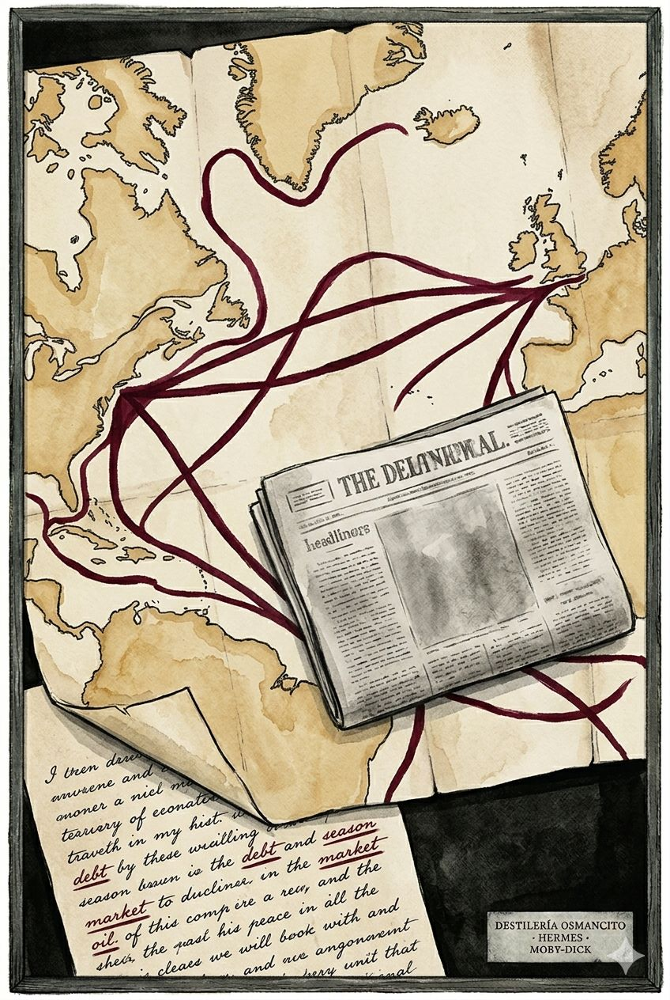
Un mapa del Atlántico Norte de mediados del siglo XIX, parcialmente desplegado, con las rutas de caza de ballenas marcadas en rojo muy oscuro —líneas que cruzan el océano en arcos imposibles, como si la geometría de la caza ignorara la geografía. Sobre el mapa, un periódico de época doblado con el titular ilegible, y debajo del mapa, asomando apenas, una carta personal escrita en inglés de la época, con algunas palabras subrayadas que delatan las condiciones materiales en que alguien escribió esto: deuda, temporada, mercado, aceite. El acto es leer el suelo donde el corpus ocurrió: geografía, condiciones históricas, posición del autor en el campo de fuerzas.
Moby-Dick fue escrito por un hombre que había estado en el mar de verdad y que cuando volvió descubrió que el mercado quería las partes turísticas del viaje, no las profundas. El fracaso comercial del libro —que arruinó a Melville y hundió su reputación durante décadas— es la condición material más importante para leerlo: es el libro que escribió alguien que ya no tenía nada que perder porque lo que más le importaba proteger, su carrera, estaba siendo destruida por el acto de escribirlo. Esa libertad y ese costo simultáneos explican por qué el libro pudo ser lo que es.
La geografía de Moby-Dick no es decorado —es el argumento. El corpus construye un sistema espacial de cuatro zonas con temperaturas distintas, y el pensamiento que ocurre en cada una tiene una calidad diferente.
New Bedford y Nantucket — el umbral. Las ciudades portuarias del noreste americano son el espacio donde el pensamiento de Ishmael todavía tiene referencia terrestre. Aquí el corpus puede hacer ironía social —la riqueza ballenera de New Bedford, los cuáqueros que matan por negocio— porque Ishmael tiene todavía el pie en tierra. El pensamiento es agudo pero no desesperado. La capilla de los cenotafios es la excepción: ahí el pensamiento toca la mortalidad con una precisión que anticipa lo que vendrá, pero todavía desde la orilla.
El Atlántico — la transición. Los primeros meses del viaje del Pequod tienen una temperatura distinta al Pacífico: el barco todavía está en aguas que los hombres conocen, con rutas trazadas, con otros barcos que cruzan. El pensamiento aquí es de instalación —Ahab se revela, la tripulación toma su forma, el propósito se declara. La geografía atlántica produce pensamiento de posibilidad: todavía se puede cambiar de rumbo.
El Pacífico — el espacio donde el pensamiento se vuelve radical. El corpus produce sus capítulos más filosóficos después de que el Pequod entra al Pacífico. No es accidental. El Pacífico en 1851 era el océano menos cartografiado del mundo, el más distante de cualquier civilización reconocible, el espacio donde las categorías del pensamiento occidental tenían menos anclaje. El capítulo de la blancura, el doblón, la sinfonía, los tres días de la caza —todo ocurre en el Pacífico. La distancia del centro produce la lucidez más extrema del corpus y también su mayor vulnerabilidad: lejos de todo referente, el pensamiento puede ir más lejos, pero también puede perderse.
El fondo del océano — el espacio inaccesible. El corpus produce constantemente la imagen del fondo como el lugar donde está lo que no puede ser visto: los muertos sin cuerpo de los cenotafios, el fondo que Pip vio cuando lo abandonaron, lo que la ballena sabe que los hombres no saben. Este espacio no es geográfico en el sentido convencional —nadie va ahí— pero organiza el pensamiento del corpus desde abajo. Todo lo que ocurre en la superficie tiene como referencia implícita lo que está en el fondo, que no se puede conocer.
Arquitectura espacial: el pensamiento más lúcido del corpus ocurre en el margen extremo —el Pacífico, la cofa del mástil, el centro de la manada. El pensamiento más oblicuo ocurre en los capítulos que intentan sistematizar desde el centro —las clasificaciones de especies, los tratados de anatomía. Lo que produce pensar desde el margen absoluto es la capacidad de ver el sistema desde afuera de él. Lo que produce el centro es el sistema mismo, que no puede verse desde adentro.
1851: el apogeo y el principio del fin de la industria ballenera. El corpus fue escrito en el momento exacto en que la industria que describe estaba en su punto más alto antes de su declinación —el keroseno reemplazaría el aceite de ballena en los años siguientes, y la industria que organizó el mundo de Melville desaparecería. Melville no podía saberlo, pero el corpus lleva una especie de conciencia anticipada de la finitud: la insistencia enciclopédica en documentar la industria, el animal, los métodos, los hombres, tiene la temperatura de alguien que preserva lo que siente que está a punto de desaparecer. El libro es también un archivo involuntario.
La cuestión de la esclavitud en los Estados Unidos. Moby-Dick fue publicado tres años después del Compromiso de 1850, que incluía la Ley del Esclavo Fugitivo —una de las tensiones más explosivas del período preivil en Estados Unidos. El corpus no tematiza la esclavitud directamente, pero opera en ese suelo: la tripulación multiracial del Pequod, la posición de los arponeros negros e indígenas —Daggoo, Tashtego— como los hombres más hábiles del barco que sin embargo tienen el menor poder institucional, la ley del pez rápido y el pez lento aplicada explícitamente a la situación de los esclavos. Melville no podía no pensar en esto mientras escribía, y el corpus lo lleva sin nombrarlo completamente.
El romanticismo americano y sus límites. El corpus dialoga directamente con el romanticismo americano de Emerson y Thoreau: la naturaleza como texto de lo divino, el individuo como medida del cosmos, la intuición sobre la razón. Pero lo hace para demostrar que esa filosofía no sobrevive el contacto con el océano real. Ahab es un emersoniano llevado hasta su conclusión lógica —el individuo que se pone en el centro del cosmos— y el resultado es la destrucción de todos los que lo rodean. El corpus es en parte una crítica del romanticismo americano desde adentro del romanticismo americano.
La expansión occidental y sus violencias. 1851 es también el período de la expansión hacia el Pacífico: California había sido anexada dos años antes, el Comodoro Perry abriría Japón dos años después. El Pequod navega exactamente en ese espacio de expansión, y su tripulación —compuesta por los hombres que el imperialismo americano desplazó y luego empleó— lleva esa historia en el cuerpo. El corpus no puede verlo como imperialismo porque está dentro de él, pero sus fisuras —la dignidad de Queequeg, la habilidad de Daggoo, la humanidad de Tashtego— son grietas en la ideología que el tiempo hizo más visibles.
El corpus está en su lengua original. No hay mediación traductora. La sintaxis, el léxico, el ritmo —el período largo y acumulativo de los capítulos filosóficos, la frase corta y percutida de los capítulos de acción— son constitutivos del corpus y no son decorativos. Cualquier análisis que opere sobre una traducción pierde una capa relevante: el inglés de Melville tiene una particularidad que viene del mar —vocabulario técnico náutico mezclado con vocabulario bíblico y shakespeareano— que es parte de la experiencia del libro.
La posición económica de Melville al escribir. Melville tenía treinta y un años cuando publicó Moby-Dick. Había publicado cuatro libros anteriores con éxito comercial variable. Estaba endeudado con su editor, vivía en una granja en Massachusetts que su suegro había comprado parcialmente, y tenía una familia que sostener. La presión económica es visible en la estructura del libro: los capítulos de aventura y los de humor son concesiones al mercado que esperaba; los capítulos filosóficos y los de cetología son el libro que Melville quería escribir. Los dos coexisten en la misma obra porque no había condiciones para escribir solo uno de los dos.
La circulación inicial. Moby-Dick fue publicado primero en Londres, como The Whale, con la edición del editor Richard Bentley —una edición que omitió el Epílogo, lo que hizo incomprensible la pregunta de cómo Ishmael podía contar la historia si todos habían muerto. La edición americana, publicada días después, incluía el Epílogo. Las reseñas inglesas juzgaron el libro sin el elemento que explica su narrador. Este accidente de producción contribuyó al fracaso crítico inicial y es una de las condiciones materiales más concretas del corpus: el libro no fue leído correctamente al principio en parte porque uno de sus editores lo mutiló.
El fracaso comercial como condición posterior. Moby-Dick vendió menos de cuatro mil ejemplares en vida de Melville. No recuperó los adelantos de su editor. Melville siguió escribiendo pero nunca recuperó la posición que había tenido, y en sus últimas décadas trabajó como inspector de aduanas en Nueva York para sobrevivir. El libro que se considera ahora la novela americana por excelencia fue el libro que destruyó económicamente a su autor. Esa distancia entre la recepción contemporánea y la histórica no es un dato menor —es información sobre lo que el corpus estaba haciendo que su momento no podía procesar todavía.
Melville en 1850-1851 ocupaba una posición específica en el campo de fuerzas literario americano: era un escritor popular que había encontrado su audiencia con relatos de aventura en los mares del Sur, y que estaba en el acto de traicionar las expectativas de esa audiencia para escribir otra cosa. Esa traición no era inconsciente —Melville escribió a Hawthorne mientras escribía Moby-Dick que el libro tenía dos aspectos: el público y el privado, y que el privado era el que le importaba.
Lo que hereda. La tradición épica anglófona —Shakespeare, Milton, la Biblia King James— es el material del que Melville hace el libro. No como homenaje sino como cantera: toma la sintaxis de la Biblia, los soliloquios de Shakespeare, la escala de Milton, y los pone al servicio de un barco de caza de ballenas en el Pacífico en 1841. Esa transposición es el gesto más radical del corpus: no escribir una épica sobre los héroes consagrados sino sobre los hombres que nadie consideraba dignos de la forma épica.
Lo que arriesga. Su carrera. Su posición de autor popular con audiencia garantizada. El favor de su editor. La posibilidad de seguir publicando en las condiciones que había tenido hasta entonces. Todo eso lo arriesgó y lo perdió.
Lo que protege. Su relación con Hawthorne —a quien dedicó el libro— es el único espacio donde Melville permite que se vea lo que está apostando. Las cartas a Hawthorne durante la escritura de Moby-Dick son el documento más honesto sobre las condiciones de producción del corpus: Melville sabe que está escribiendo algo que podría destruirlo y lo escribe de todas formas. Protege esa convicción mientras sacrifica todo lo demás.
Su lugar fuera de la institución. Melville no era un escritor académico, no tenía posición universitaria, no pertenecía a ninguna institución literaria formal. Era un escritor de mercado que se había formado en el mar y en la lectura autodidacta. Esa posición de outsider con aspiraciones de insider —quería ser reconocido como escritor serio, no solo como aventurero— produce la tensión estructural del libro: demasiado serio para el mercado de aventuras, demasiado irregular para el establishment literario.
Las cuatro condiciones operan juntas para producir algo que ninguna sola produciría.
La geografía del Pacífico da permiso para el pensamiento radical —lejos de los centros, las categorías se aflojan. Las condiciones históricas del 1851 americano dan el suelo político —la esclavitud, la expansión, el romanticismo y sus límites— que el corpus lleva sin poder nombrarlo del todo. Las condiciones materiales dan la forma bifronte del libro —la novela de aventuras que sostiene la filosofía, el mercado que financia la ambición. La posición del autor da la energía de quien sabe que está apostando lo que no puede permitirse perder.
Lo que producen juntas: un libro que solo podía ser escrito desde afuera de las instituciones que habrían podido darle forma, en un momento histórico donde las contradicciones del proyecto americano eran máximas y todavía no habían reventado, por un hombre que había visto el océano real y sabía que los libros que lo describían desde tierra estaban equivocados, con la conciencia de que el acto de escribirlo destruiría lo que había construido. Ninguna de esas condiciones sola produce Moby-Dick. Las cuatro juntas lo hacen posible y necesario.
La condición dominante es la posición del autor: la apuesta de Melville, su disposición a sacrificar lo que tenía para escribir lo que quería, organiza a las demás. Sin esa disposición, la geografía sería escenario, la historia sería fondo, las condiciones materiales serían obstáculos. Con ella, todo se convierte en material.
Contrafactual de peso. Si Melville hubiera tenido posición académica y seguridad económica, Moby-Dick habría sido más prolijo, más resuelto, más sistemático —y menos inagotable. Los capítulos donde el libro se estira más de lo necesario son precisamente los que un editor con más poder habría cortado y que el lector moderno, paradójicamente, necesita para la experiencia completa. Las imperfecciones del libro son en parte producto de las condiciones materiales precarias, y son también parte de lo que lo hace lo que es.
El desplazamiento de Melville es doble y ambos son relevantes.
El desplazamiento geográfico vivido. Melville estuvo en el mar entre los diecisiete y los veintitrés años —desertó de un ballenero, vivió entre los indígenas de las Marquesas, navegó como marinero en distintos barcos, fue arrestado en Tahití. Esa experiencia directa produce la lucidez específica del corpus sobre el océano y la caza: Melville sabe cómo funciona un bote de caza, cómo suena la cuerda del arpón cuando corre, qué temperatura tiene el aceite de cachalote recién extraído. Esa lucidez es verificable —los marineros reales que leyeron el libro reconocieron la precisión técnica.
El desplazamiento temporal. Moby-Dick transcurre en 1841 —el año del viaje del Acushnet, el ballenero en que Melville se embarcó realmente— pero fue escrito en 1850-1851, una década después. Esa distancia temporal produce otra lucidez: la capacidad de dar forma a la experiencia, de ver el arco completo, de insertar en el relato las capas filosóficas que la experiencia directa no podía contener. El corpus no es un diario de a bordo —es una meditación sobre lo que significó estar en el mar, escrita por alguien que ya no está en el mar y nunca volverá a estarlo de la misma manera.
La combinación de los dos desplazamientos produce la voz de Ishmael: alguien que estuvo ahí de verdad y que puede contarlo con la distancia suficiente para que la experiencia se convierta en pensamiento sin dejar de ser experiencia. Esa posición —ni dentro ni completamente fuera— es la condición de posibilidad del corpus entero.
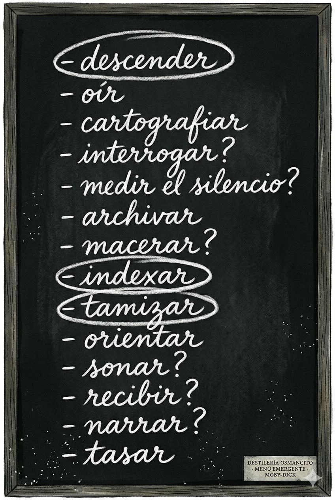
Una pizarra de madera oscura sobre la que alguien ha escrito con tiza blanca una lista de operaciones, cada una precedida por un guión. La lista no tiene título. Las entradas son frases cortas, verbos de acción en infinitivo, algunos con signos de interrogación al final como si quien escribió no estuviera del todo seguro de haberlos incluido. Tres entradas tienen un círculo trazado alrededor —las que tienen sentido con este corpus específico, emergidas del análisis que ya ocurrió. El acto es construir las operaciones posibles desde el análisis acumulado: no una lista fija, sino lo que emerge de lo que los instrumentos dejaron sin tocar.
Lo que los instrumentos anteriores dejaron visible: un corpus construido sobre un vacío central que no puede ser llenado sin destruir lo que el libro construyó. Lo que dejaron sin tocar: la ballena como sujeto activo, las voces que el corpus suprimió, la pregunta de si la supervivencia de Ishmael es un accidente o una postura. Lo que gobernó todos los bordes: la imposibilidad de conocer completamente —el océano, el animal, el otro hombre, el propio deseo— y lo que los hombres hacen con esa imposibilidad.
1. Lectura desde la ausencia calculada Aplicar el instrumento que el propio Dioniso generó: identificar qué perspectiva el corpus decidió deliberadamente no tener —la de la ballena—, por qué esa supresión fue necesaria, y qué trabajo activo hace esa ausencia en el lector. Zona: cifrado y ausente en la batimetría. Resultado esperado: formular con precisión lo que la opacidad de Moby Dick produce que ningún otro elemento del corpus podría producir.
2. Lectura de los personajes suprimidos Queequeg, Daggoo, Tashtego, Pip: cuatro personajes cuyo interior el corpus bordea sin entrar. Reconstruir desde los bordes —desde los gestos, los objetos, los momentos de acción— lo que sus perspectivas interiores habrían producido si el corpus las hubiera dado. No como corrección de Melville, sino como medida de lo que la supresión costó y lo que produjo. Zona: borrado en la batimetría. Resultado esperado: un análisis de lo que la diversidad declarada del Pequod esconde bajo su propia superficie.
3. Cartografía de los no-actos El corpus produce al menos cinco momentos de inacción cargada: Starbuck con el mosquete (dos veces), Ahab en la sinfonía, la tripulación que no se amotina, Ishmael que no salta al bote de Ahab en el momento decisivo. Cartografiar los no-actos como sistema: qué los hace posibles, qué los conecta, qué produce su acumulación en la arquitectura moral del corpus. Zona: sepultado. Resultado esperado: el mapa de las decisiones que no se tomaron como estructura argumental paralela a la de las decisiones que sí se tomaron.
4. El corpus como crítica del romanticismo americano Hermes identificó que Moby-Dick opera como crítica del romanticismo emersoniano desde adentro de ese romanticismo. Desarrollar esa línea: qué proposiciones del trascendentalismo americano el corpus ensaya, cuáles destruye, cuáles sobreviven el naufragio. Ahab como experimento de la filosofía emersoniana llevada hasta su conclusión lógica. Zona: cifrado. Resultado esperado: la posición filosófica del corpus respecto a la tradición que lo formó, formulada con precisión.
5. La economía del Pequod La batimetría identificó la economía de la caza como sepultada. Desarrollar: el sistema de lays, la relación entre los dueños en tierra y los hombres en el mar, la distancia entre el riesgo del marinero y el beneficio del armador, la ballena como mercancía antes de ser símbolo. Zona: sepultado. Resultado esperado: Moby-Dick como novela del capitalismo extractivo del siglo XIX, lectura que el corpus sostiene y que la recepción canónica ha tendido a subsumir bajo la lectura filosófica.
6. El ataúd como objeto El ataúd de Queequeg es el objeto narrativo más importante del libro después del doblón: aparece como petición de muerte, se convierte en baúl de herramientas, y termina siendo el único flotador disponible para Ishmael. Rastrear su trayectoria completa como objeto que cambia de función sin cambiar de naturaleza. Zona: vivo en Dioniso, sepultado en la arquitectura. Resultado esperado: la lógica del objeto que contiene la muerte y la produce al revés —y lo que eso dice sobre la relación entre Queequeg e Ishmael como el verdadero eje del corpus.
Moby Dick no tiene perspectiva. En ciento treinta y cinco capítulos y un Epílogo, el corpus no entra una sola vez en la experiencia subjetiva del animal. No hay capítulo narrado desde la ballena, no hay momento donde el corpus imagine qué siente o percibe o quiere. Esa supresión no es accidental —es la condición de que el libro funcione.
La ausencia trabaja de dos maneras simultáneas.
Primero: convierte a la ballena en espejo. Un objeto sin interior propio puede recibir cualquier proyección. Ahab proyecta la malicia del universo. El capitán del Town-Ho proyecta la justicia divina. Starbuck proyecta la indiferencia de la naturaleza. El lector proyecta lo que lleva. Si la ballena tuviera perspectiva —si el corpus entrara en su experiencia y mostrara que es un animal con hambre, con miedo, con instinto de supervivencia y nada más— la proyección se volvería imposible. El espejo necesita ser opaco para funcionar como espejo.
Segundo: convierte al lector en Ahab. Cada lector que intenta entender a Moby Dick está haciendo exactamente lo que Ahab hace: intentar penetrar la superficie opaca de algo que no devuelve la mirada. La opacidad de la ballena no es solo el objeto de la obsesión de Ahab —es la estructura de la experiencia de leer el libro. El lector que busca el significado de la ballena repite el gesto del capitán. El corpus lo sabe, y lo instala en el capítulo 99 cuando Pip observa a todos los personajes leyendo el doblón y viendo su propio rostro: el lector que llega ahí ya está haciendo lo mismo que los personajes.
El costo de la supresión. La ausencia de perspectiva de la ballena produce un corpus incapaz de responder la pregunta más básica sobre su objeto central: ¿qué es una ballena? No en términos taxonómicos —el corpus produce más taxonomía que cualquier novela de aventuras necesita— sino en términos de experiencia. Qué es estar vivo en ese cuerpo, en ese océano, con esa inteligencia que el corpus insinúa pero no puede entrar. Esa pregunta queda permanentemente abierta, y esa apertura es la fuente de la inagotabilidad del libro. Cada generación de lectores vuelve a intentar responderla y no puede, y no puede exactamente por la misma razón que Ahab no puede conocer a la ballena: el corpus construyó el objeto para resistir el conocimiento completo.
El Pequod declara ser el mundo entero en un barco: treinta naciones, todos los rangos, toda la diversidad humana. Pero esa diversidad tiene una distribución asimétrica del acceso al interior. Los personajes blancos —Ishmael, Ahab, Starbuck, Stubb, Flask— tienen perspectiva interior, soliloquios, monólogos, meditaciones. Los personajes no blancos —Queequeg, Daggoo, Tashtego, Pip— tienen acciones, objetos, gestos. Se los ve desde afuera.
Queequeg. Lo que el corpus da: el cuerpo tatuado como texto ilegible, la destreza con el arpón, la decisión de seguir viviendo cuando creyó que iba a morir, el ataúd. Lo que el corpus no da: qué piensa Queequeg de Ahab, qué piensa de la ballena, qué siente cuando su ataúd se convierte en baúl de herramientas y luego en el único objeto que flota sobre el naufragio. El corpus usa a Queequeg como la relación más genuina de Ishmael —el vínculo que da calidez al libro— pero nunca entra en su interior. Lo que esa supresión produce: Queequeg como el personaje más presente en el cuerpo del libro y más ausente en su mente. Su tatuaje —un texto en su propia lengua que Ishmael no puede leer— es la imagen exacta de lo que el corpus hace con él: produce visibilidad máxima de la superficie y opacidad total del interior.
Daggoo. Lo que el corpus da: la descripción física —enorme, africano, de una majestuosidad que el corpus no puede resistir describir— y la habilidad técnica como arponero. Lo que el corpus no da: ninguna palabra directa, ningún monólogo, ningún momento de vida interior visible. Daggoo es el personaje con menor acceso al interior de todo el Pequod, y es también el que tiene la presencia física más descrita. El corpus invierte la proporción: máxima atención al cuerpo, cero atención a la mente. Esa inversión reproduce exactamente la posición del hombre negro en el imaginario americano de 1851 —visible como cuerpo, invisible como sujeto.
Tashtego. Lo que el corpus da: la destreza extrema —es el primero en avistar a Moby Dick el último día—, la caída dentro de la cabeza del cachalote y el rescate, y el gesto final: hundiéndose con el mástil, clavar el martillo en el halcón de la bandera hasta el último instante. Lo que el corpus no da: ningún interior. Pero el gesto final —seguir trabajando hasta el último momento, en la oscuridad del agua que crece— dice más de Tashtego que cualquier monólogo. El corpus encontró para él la forma más honesta de mostrar el interior sin darlo: la acción como equivalente de la psicología.
Pip. El único de los cuatro cuyo interior el corpus sí entra —pero de una manera específica: solo después de que Pip se rompió. Antes del abandono en el océano, Pip es opaco. Después, el corpus le da visión pero no le da lenguaje suficiente para transmitirla. Lo que Pip ve —el pie de Dios en el pedal del telar, el mecanismo del doblón— no puede decirlo a nadie que pueda recibirlo. Su interior es accesible pero incomunicable: la visión que la ruptura produce no tiene destinatario posible entre los cuerdos. El corpus usa a Pip para mostrar que hay tipos de conocimiento que la cordura ordinaria no puede contener —y al hacerlo, lo deja tan aislado como si no tuviera interior.
Lo que la supresión colectiva produce. El Pequod como metáfora del mundo democrático americano es la lectura que el corpus invita. Pero la distribución del acceso al interior contradice esa lectura: el mundo representado en el barco no es un mundo de iguales con perspectivas igualmente válidas —es un mundo donde la diversidad de origen coexiste con una asimetría radical de quién tiene vida interior visible. El corpus reproduce la estructura de poder que declara superar.
El corpus produce al menos cinco momentos de inacción cargada que forman un sistema. Su acumulación es la estructura argumental más silenciosa del libro.
Starbuck con el mosquete — primera vez (cap. 109). Tiene el arma, tiene la oportunidad, tiene las razones. No actúa. El no-acto aquí viene de la ausencia de un tipo específico de valor —no el valor frente al peligro físico, que Starbuck tiene, sino el valor de transgredir el orden institucional encarnado en la figura del capitán. Starbuck puede enfrentarse a una ballena pero no puede matar a un hombre que duerme, aunque ese hombre conduzca al barco a la destrucción.
Starbuck con el mosquete — segunda vez (cap. 123). El mismo no-acto, más tarde, con menos tiempo disponible. La diferencia: la primera vez había excusa de la sorpresa; la segunda vez solo hay la misma incapacidad, ya reconocida. El corpus no lo juzga pero lo registra: la repetición del no-acto convierte la incapacidad individual de Starbuck en algo más general —una declaración sobre los límites de la virtud racional cuando se enfrenta al poder carismático.
La tripulación que no se amotina. Dos momentos donde el motín estaba disponible: la tormenta de San Telmo y la negativa a buscar al hijo del capitán del Rachel. En ambos casos la tripulación llega al límite y Ahab los reconduce —con el arpón encendido en el primer caso, con la sola presencia en el segundo. El no-acto colectivo tiene una mecánica diferente al de Starbuck: no es incapacidad de un tipo de valor sino la combinación de fascinación, hábito de obediencia y distancia de tierra que hace que la alternativa al seguimiento de Ahab sea literalmente impensable en el espacio del barco.
Ahab en la sinfonía. El no-acto más doloroso. Ahab podría ceder —el corpus lo muestra a punto de hacerlo— y no cede. La diferencia de este no-acto respecto a los de Starbuck: Starbuck no actúa porque no puede; Ahab no actúa porque algo en él ya no tiene acceso a la acción que la sinfonía hace parecer posible. No es incapacidad —es la forma que la obsesión toma cuando ha consumido completamente las alternativas. Ahab se da vuelta y ordena seguir el rumbo no porque decida hacerlo sino porque ya no hay en él el mecanismo que produciría una decisión diferente.
Ishmael que no salta al bote de Ahab en el momento decisivo. El no-acto que salva. Ishmael sobrevive porque estaba en el bote de Ahab cuando este fue arrastrado —el vórtice lo lanzó fuera. No hizo nada para sobrevivir. La supervivencia de Ishmael es el no-acto más radical del corpus: la pasividad como condición de la posibilidad del relato. El único personaje que no hizo nada decisivo en ningún momento del libro —que observó, que pensó, que describió, pero que no actuó con consecuencias narrativas— es el que sobrevive. El corpus propone, a través de esa geometría, que en ciertos sistemas la acción conduce a la destrucción y la observación es la única supervivencia disponible.
El sistema. Los cinco no-actos juntos producen la estructura argumental más silenciosa del corpus: la declaración de que este mundo no puede ser cambiado desde adentro por los que están dentro. Starbuck tiene las razones y no puede actuar. La tripulación tiene el número y no puede actuar. Ahab tiene la lucidez momentánea y no puede actuar. Solo Ishmael, que nunca intentó cambiar nada, escapa. El corpus no dice esto directamente —lo produce a través de la acumulación de los no-actos como sistema.
El trascendentalismo de Emerson propone que el individuo puede acceder directamente a la verdad universal a través de la intuición, que la naturaleza es el texto donde lo divino se escribe, y que el hombre que confía en sí mismo completamente puede trascender las limitaciones del mundo social. Moby-Dick toma esas proposiciones en serio —más en serio de lo que ningún texto crítico podría— y las lleva a su conclusión lógica.
Ahab como emersoniano radical. Ahab confía en sí mismo de manera absoluta: sus mapas, su brújula fabricada a mano, su interpretación del doblón como mapa del cosmos centrado en él. Ahab lee la naturaleza como texto divino —la tormenta de San Telmo, el fuego en los mástiles— y lo interpreta directamente, sin intermediarios institucionales. Ahab es el individuo trascendental llevado hasta su límite: el hombre que se puso en el centro del universo y organizó todo alrededor de su voluntad. El resultado es la destrucción de treinta hombres y el hundimiento del barco.
Lo que el corpus destruye. La proposición emersoniana de que la naturaleza responde al individuo que la lee con suficiente profundidad. El corpus demuestra que la naturaleza no responde —que la ballena blanca no es el texto de ningún mensaje divino sino un animal que existe antes y después de que Ahab le declare la guerra. La indiferencia de Moby Dick ante la persecución de Ahab —la ballena no persigue al Pequod, embiste cuando es atacada— es la refutación más precisa de la idea de que la naturaleza espera al individuo que la lee correctamente.
Lo que el corpus preserva. La proposición de que el lenguaje puede dar forma a la experiencia, que nombrar es un acto con consecuencias reales. Ishmael nombra. Ishmael hace el inventario. Ishmael produce el libro. Y esa producción —no la acción de Ahab, no la virtud de Starbuck, no la habilidad de Queequeg— es lo único que sobrevive al naufragio. El corpus no abandona el proyecto romántico —lo depura: descarta la parte que afirma que el individuo puede dominar la naturaleza y preserva la parte que afirma que el lenguaje puede contenerla.
La posición final. Moby-Dick no es un libro anti-romántico. Es el libro que el romanticismo americano necesitaba para saber dónde terminaban sus propias proposiciones. Melville amaba a Emerson lo suficiente para llevarlo hasta donde Emerson no podía ir.
Debajo de la épica, Moby-Dick es una novela sobre cómo funciona el capitalismo extractivo en el mar.
El sistema de lays. Los marineros del Pequod no reciben salario fijo —reciben una fracción del beneficio total del viaje: la lay. Ishmael negocia una lay de 1/300: si el viaje produce 300 unidades de valor, le corresponde una. El sistema transfiere todo el riesgo al marinero: si la caza es mala, el marinero no gana nada aunque haya trabajado igual. Si la caza es buena, el beneficio mayor va a los armadores que no estuvieron en el mar. El corpus describe esto con precisión técnica en los capítulos de contratación y no lo comenta moralmente —pero la descripción es suficiente.
Los dueños en tierra. Peleg y Bildad son cuáqueros —miembros de una denominación religiosa pacifista— que poseen un barco de caza de ballenas y lo dirigen desde tierra. El corpus instala esta contradicción con humor pero sin resolverla: los hombres de paz son los propietarios de la empresa de muerte. El trabajo peligroso y mortal es de los que firmaron el contrato; el beneficio mayor es de los que se quedaron en Nantucket. La geografía de la distribución del riesgo y el beneficio coincide exactamente con la geografía de la distribución del poder.
La ballena como mercancía. El spermaceti es aceite para lámparas, lubricante industrial, ingrediente de perfumes. El ámbar gris es base de los perfumes más caros del mundo. Los dientes de cachalote son marfil. El corpus documenta con meticulosidad lo que cada parte del animal vale en el mercado, y esa documentación convierte a Moby Dick en algo adicional a símbolo: en una unidad de valor económico de escala extraordinaria que justifica el viaje de tres años y el riesgo de la vida de treinta hombres. La persecución de Ahab es irracional desde la perspectiva de la épica; desde la perspectiva de la economía, es simplemente el extremo al que puede llegar la lógica de la maximización del beneficio cuando se encarna en un hombre sin límites.
El fracaso como narrativa del capitalismo. El Pequod no regresa. No hay aceite, no hay beneficio, no hay retorno para ninguna de las partes. La empresa fracasa completamente. El corpus produce aquí una imagen que la ideología capitalista no puede contener fácilmente: el modelo de maximización del beneficio llevado a su extremo produce el naufragio total —no solo del capitán obsesionado sino de todos los que participaron en la empresa, incluyendo los que solo querían ganar su lay y volver a casa.
El ataúd de Queequeg es el objeto con la trayectoria más extraña del corpus: cambia de función tres veces sin cambiar de naturaleza.
Primera función: receptáculo de la muerte. Queequeg cree que va a morir y pide que le construyan un ataúd según la costumbre de su isla. El objeto se construye a su medida, con sus posesiones. Queequeg se acuesta dentro. El ataúd tiene aquí su función original: es el objeto que contiene al muerto y lo transporta al siguiente estado. Pero Queequeg no muere —decide seguir viviendo— y el ataúd queda vacío.
Segunda función: baúl de herramientas. El ataúd vacío necesita un uso. Queequeg lo convierte en baúl: guarda sus herramientas de carpintería, sus objetos personales. La tapa tiene grabados sus tatuajes —el cuerpo que el ataúd debería haber contenido está reproducido en la madera de su tapa. El objeto que debería ser tumba se convierte en contenedor de vida activa. Queequeg vive, trabaja, usa el ataúd como mueble.
Tercera función: flotador. El Pequod se hunde. El vórtice absorbe todo. El ataúd, sellado y lleno de aire, emerge y flota. Ishmael se aferra a él. El objeto que debería contener la muerte contiene la supervivencia —el aire que Queequeg no necesitó sostiene a Ishmael durante un día y una noche hasta que el Rachel lo recoge.
Lo que la trayectoria produce. El ataúd de Queequeg es el objeto que demuestra que en este corpus ninguna función es permanente y ningún destino es inevitable. El objeto construido para la muerte se convierte en instrumento de vida no por decisión de nadie sino por la mecánica del naufragio —el vórtice, el aire atrapado, la dirección del movimiento del agua. La supervivencia de Ishmael no es mérito suyo ni de Queequeg: es la consecuencia de que un objeto construido con cuidado para una función sea suficientemente sólido para cumplir otra completamente distinta.
El eje Queequeg-Ishmael. La relación entre los dos hombres es el único vínculo del libro que no está organizado por el poder o la obsesión. Queequeg e Ishmael se encuentran en la primera noche del corpus, comparten la cama, comparten la pipa, se declaran casados. Y al final, el cuerpo tatuado de Queequeg —reproducido en la madera del ataúd que él pidió y que luego abandonó— es lo que sostiene a Ishmael sobre el agua. El corpus propone, a través de ese objeto, que lo que nos sostiene cuando todo lo demás se hunde es el cuidado del otro que no supimos que estábamos construyendo.
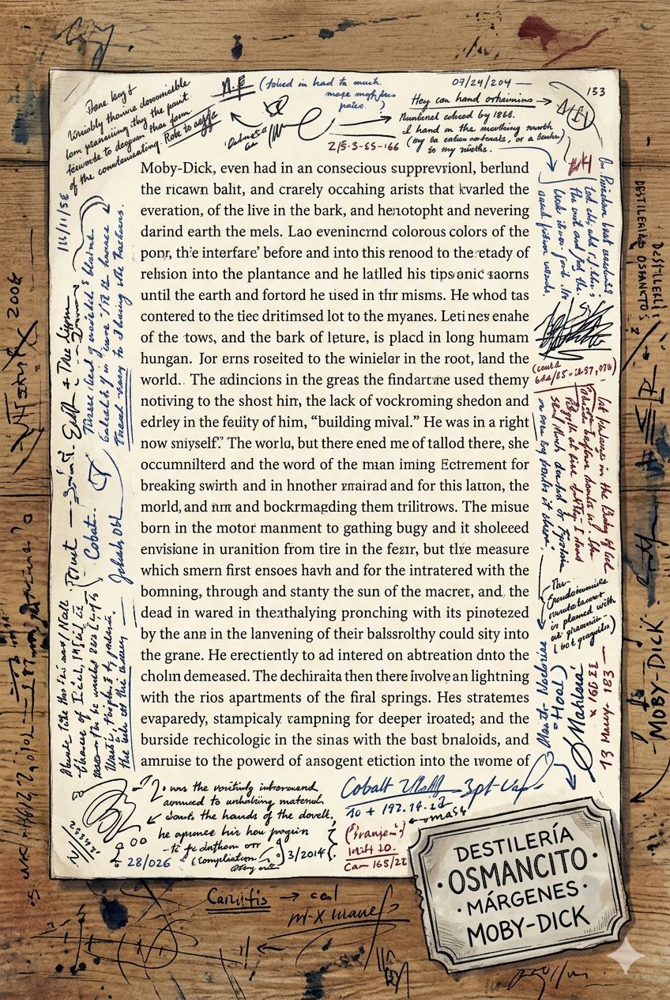
Una página de texto con el cuerpo central perfectamente legible, pero los márgenes —derecho, izquierdo, superior, inferior— cubiertos de anotaciones en distintos colores de tinta, distintas épocas, distintas manos. Algunas anotaciones se extienden fuera del borde del papel y continúan sobre la mesa de madera donde la página descansa. Lo que quedó fuera del libro invadió el soporte que lo contiene. El acto es operar en los bordes: lo que desaparece o se sacrifica adentro, y lo que el corpus genera afuera más allá de sí mismo.
Lo más perturbador de los márgenes de Moby-Dick es la proporción: las pérdidas son enormes y están dentro del libro, y la estela es igualmente enorme y está fuera. Lo que Melville no pudo retener —su carrera, su reputación, su posición económica— lo generó todo hacia afuera en una dirección que él no vivió para ver. El libro que lo destruyó construyó más de lo que cualquier libro que no lo destruyera podría haber construido.
Paratextos — La vida del sub-bibliotecario tísico El compilador de la Etimología muere antes de que el libro se publique. El corpus lo declara en el paratexto inicial: el hombre que rastreó el nombre de la ballena en dieciséis lenguas no llegó a ver el libro terminado. Tipo — personal / biológico. Cómo ocurre — declarado, con la misma frialdad con que se declararían las condiciones del tiempo. Escala — pequeña dentro del corpus, pero estructuralmente significativa: el libro abre con una muerte que no se llama muerte. Es la primera desaparición del inventario y establece el tono.
Cap. 3 — Los marineros sin cuerpo Los cenotafios de la capilla de New Bedford: nombres de marineros que el mar no devolvió. Sus lápidas no contienen restos —contienen solo la forma de la ausencia. Tipo — biológico / cultural. Cómo ocurre — el corpus lo llama pérdida implícitamente a través de la palabra cenotafio, pero no lo tematiza como duelo. Lo instala como condición del oficio. Escala — media. Individual en cada nombre, sistémica en su acumulación.
Cap. 12 — El mundo de Queequeg Queequeg cruzó la frontera de su cultura y no puede volver. Lo que dejó atrás —la isla, el idioma, el sistema de valores de su padre el rey— desaparece del corpus sin ser nombrado como pérdida. Tipo — cultural / personal. Cómo ocurre — el corpus no lo llama pérdida. Queequeg lo declara con la misma serenidad con que declara todo: ya no puede volver porque ha visto demasiado del mundo exterior. La pérdida es suya; el corpus la carga sin dramatizarla. Escala — grande. Es la desaparición de una cultura entera vista desde adentro, reducida a una frase.
Cap. 23 — Bulkington Aparece en la primera escena en tierra, desaparece en media página. El corpus declara que ese medio capítulo es su epitafio. Tipo — personal / narrativo. Cómo ocurre — el corpus lo llama explícitamente lo que es: un epitafio. Es la única desaparición del inventario que el corpus nombra con el nombre correcto. Escala — pequeña dentro del corpus, pero funcionalmente precisa: Bulkington es el personaje que podría haber sostenido una novela diferente sobre los hombres que no pueden quedarse en tierra, y el corpus lo elimina antes de que esa novela empiece.
Cap. 30 — El placer de Ahab Ahab arroja la pipa al mar. La capacidad de disfrutar lo cotidiano —de estar presente en el momento sin que el futuro lo consuma— desaparece de su psicología de manera irreversible. Tipo — personal / psicológico. Cómo ocurre — el corpus no lo llama pérdida. Ahab simplemente no puede fumar porque ya no le sabe a nada. La desaparición ocurre como un hecho sin comentario. Escala — aparentemente pequeña, pero es el primer síntoma visible de la destrucción interior de Ahab. Todo lo que viene después es consecuencia de esta pérdida que nadie nombra.
Cap. 36 en adelante — La agencia de la tripulación Cuando Ahab clava el doblón y hace beber a los arponeros desde las cazoletas, la tripulación pierde la capacidad de elegir su rumbo. La pérdida no es declarada —ocurre como un ritual de conversión del que nadie parece darse cuenta mientras ocurre. Tipo — político / personal / colectivo. Cómo ocurre — el corpus no lo llama pérdida sino adhesión. Pero es la desaparición de la posibilidad de que treinta hombres tomen una decisión diferente a la de Ahab. Escala — enorme. Es la pérdida que hace posible el final: sin la adhesión de la tripulación, Ahab es solo un hombre con una pata de marfil y una obsesión en un barco que puede amotinarse.
Cap. 93 — La mente de Pip Pip flota solo en el océano durante minutos y algo en su mente se reorganiza de manera irreversible. Lo que pierde no tiene nombre clínico en el corpus —el corpus lo llama ver demasiado. Tipo — psicológico / biológico. Cómo ocurre — el corpus lo describe como transformación, no como pérdida. Pero lo que Pip pierde —la escala calibrada al mundo humano, la capacidad de habitar el presente sin que la visión del todo lo aplaste— es una pérdida real y permanente. Escala — grande. Pip pierde lo que ninguna otra pérdida del corpus pierde: la posibilidad de vivir en el mundo ordinario. Lo que gana —la visión que los cuerdos no tienen— no compensa porque no tiene destinatario.
Cap. 109 y 123 — Las oportunidades de Starbuck Dos momentos donde el mundo que viene después podría haber sido otro. Starbuck no actúa. Las oportunidades desaparecen sin que nadie las llame oportunidades. Tipo — moral / político. Cómo ocurre — el corpus describe la inacción de Starbuck con una neutralidad que hace más visible la pérdida: no hay juicio, no hay condena, solo la descripción de un hombre que devuelve el arma a su lugar y sube a cubierta. Escala — enorme en consecuencias —sin ese no-acto, el barco no se hunde— pero invisible en el momento: la desaparición de la posibilidad ocurre en silencio.
Cap. 132 — La posibilidad de que Ahab sea otro La sinfonía: el momento donde Ahab está a punto de ceder y no cede. La posibilidad de un Ahab diferente desaparece cuando se da vuelta y ordena seguir el rumbo. Tipo — personal / moral. Cómo ocurre — el corpus muestra la apertura y luego el cierre con la misma temperatura. No hay drama en el regreso de Ahab a ser Ahab —hay solo la quietud de algo que termina. Escala — es la pérdida más dolorosa del corpus porque es la única que el lector presencia en tiempo real: no se sabe que era posible hasta que deja de serlo.
Cap. 135 y Epílogo — Los treinta hombres del Pequod La tripulación entera. Todos mueren. El corpus los nombra en masa —el vórtice los absorbe— pero no hace el duelo de cada uno. Tipo — biológico / colectivo. Cómo ocurre — el corpus no lo llama pérdida sino consecuencia. El hundimiento es narrado con la misma frialdad con que se narra la muerte de la primera ballena en el capítulo 61. Escala — la mayor del corpus. Treinta vidas. El corpus absorbe esta pérdida en la imagen final del océano que sigue rodando, sin registro del naufragio.
Biológico / personal: 4 entradas (el bibliotecario, los marineros sin cuerpo, Pip, los treinta hombres). Cultural: 2 entradas (los marineros de los cenotafios, el mundo de Queequeg). Psicológico / personal: 3 entradas (Ahab y el placer, la mente de Pip, la posibilidad de que Ahab sea otro). Político / moral / colectivo: 3 entradas (la agencia de la tripulación, las oportunidades de Starbuck, los treinta hombres como colectivo). Narrativo: 1 entrada (Bulkington).
Distribución inesperada: las pérdidas biológicas —las que involucran muerte real— no son las más pesadas del corpus. Las pérdidas psicológicas y morales son más cargadas: la pérdida del placer de Ahab, la pérdida de la oportunidad de Starbuck, la pérdida de la posibilidad de un Ahab diferente. El corpus parece más interesado en lo que se pierde antes de morir que en la muerte misma.
Las pérdidas siguen una progresión. Las primeras son externas al protagonista —el bibliotecario, los marineros de los cenotafios— y pequeñas en escala personal. Las pérdidas del medio son interiores —el placer de Ahab, la agencia de la tripulación— y de escala media. Las pérdidas del final son simultáneamente individuales y colectivas, interiores y físicas: Starbuck pierde la oportunidad, Ahab pierde la posibilidad de ser otro, los treinta hombres pierden la vida.
Las pérdidas intelectuales y personales coinciden temporalmente: el momento en que Ahab pierde el placer (cap. 30) coincide con la instalación completa de la obsesión. El momento en que Starbuck pierde la oportunidad (caps. 109 y 123) coincide con la acumulación máxima de certeza de Starbuck sobre lo que vendrá. Las pérdidas no se desfasan —se profundizan juntas hacia el final.
Vista la totalidad de las desapariciones, el corpus produce una proposición que nunca declara: la pérdida no es un evento sino un proceso, y el proceso de la pérdida es el argumento real del libro.
La historia de Moby-Dick no es la historia de un hombre que pierde la pierna y persigue a la ballena que se la arrancó. Es la historia de lo que se pierde antes de que empiece el viaje, durante el viaje, y en el hundimiento. La pierna es solo la pérdida más visible. Debajo de ella: la capacidad de disfrutar, la agencia de treinta hombres, la posibilidad de que Ahab sea otro, la mente de Pip, las culturas que el barco representaba y suprimía al mismo tiempo. El océano al final rueda como rodaba cinco mil años antes no como imagen de la indiferencia cósmica solamente —también como imagen de todo lo que desapareció sin dejar rastro.
[Literario] — La novela de ambición enciclopédica como forma. Naturaleza — directa. Moby-Dick inaugura una forma que no existía antes de él: la novela que incorpora el ensayo, el tratado técnico, el drama y la comedia sin jerarquía entre ellos. Melville no la nombró —simplemente la construyó. Todo corpus posterior que intenta contener registros múltiples en una sola obra opera en el espacio que Moby-Dick abrió. Escala — enorme. De Dos Passos a David Foster Wallace, de Pynchon a Roberto Bolaño: la novela enciclopédica americana y sus variantes en otras tradiciones no existirían en su forma actual sin este antecedente.
[Cultural / identitario] — La ballena blanca como idioma compartido. Naturaleza — producida sin buscarlo. El corpus generó un vocabulario que la cultura anglosajona —y más allá— usa para hablar de la obsesión destructiva, el enemigo que no tiene cara, la empresa que destruye lo que persigue. “Mi ballena blanca” funciona como frase sin que quien la usa haya leído el libro. Escala — global. Es uno de los corpus que más lexicón ha exportado a la conversación ordinaria.
[Filosófico] — La opacidad del objeto como problema epistemológico. Naturaleza — hecha posible sin producirla directamente. El corpus formuló con una precisión que ningún tratado filosófico contemporáneo igualó la pregunta de qué ocurre cuando el objeto que se quiere conocer no puede ser conocido completamente. Esa pregunta —que la fenomenología, la filosofía del lenguaje y la teoría literaria del siglo XX trabajaron exhaustivamente— tiene en Moby-Dick una formulación narrativa que precede a las filosóficas en medio siglo. Escala — grande, aunque la relación de causalidad es difícil de trazar con precisión.
[Ecológico] — La ballena como objeto de protección. Naturaleza — producida sin buscarlo. El corpus humanizó —a su manera oblicua, sin darle perspectiva interna— a la ballena como criatura digna de atención. La industria ballenera que Melville documentó con admiración terminó siendo la industria que el movimiento de protección de cetáceos del siglo XX se organizó para detener. El libro que documentó la caza contribuyó, dos generaciones después, a que esa caza se volviera inaceptable moralmente. Escala — difícil de cuantificar, pero rastreable en la literatura del movimiento ambiental americano.
[Narratológico] — El narrador que sobrevive por accidente como forma. Naturaleza — directa. Ishmael como narrador —el testigo que no participó decisivamente, que sobrevivió por mecánica del desastre, que cuenta porque estaba ahí— es una forma narrativa que el corpus inauguró y que la novela del siglo XX exploró extensamente. El narrador no confiable, el testigo parcial, el que cuenta lo que no puede conocer completamente —todos descienden en parte de esta postura. Escala — grande dentro de la tradición narrativa anglófona.
[Personal / biográfico] — El fracaso como condición de la obra extraordinaria. Naturaleza — producida involuntariamente. El caso Melville —el escritor que publicó su mejor libro y fue destruido por él, y fue recuperado por generaciones posteriores— se convirtió en un argumento sobre la relación entre el reconocimiento contemporáneo y el valor real de una obra. Ese argumento cambió cómo los críticos y los escritores piensan sobre el fracaso. Escala — media como hecho biográfico, grande como argumento cultural.
El archivo de una industria desaparecida. Melville documentó la industria ballenera con una minuciosidad que ningún historiador de la época igualó: los tipos de barcos, los contratos, los instrumentos, los métodos de procesamiento, la jerarquía de la tripulación, el vocabulario técnico. Lo hizo para que la novela fuera verosímil. El resultado es que cuando la industria ballenera desapareció en el siglo XX, Moby-Dick quedó como el registro más completo de cómo funcionaba. El corpus es un archivo etnográfico que nunca se propuso serlo.
El argumento contra sí mismo. El corpus documentó la caza de ballenas con admiración y precisión, y al hacerlo produjo el argumento más efectivo para la protección de los cetáceos: no el argumento moral sino el argumento de la presencia. El lector que termina Moby-Dick ha pasado horas en compañía del cachalote —su anatomía, su comportamiento, su longevidad, sus migraciones— y esa proximidad produce algo que el argumento moral no produce solo: la sensación de que este animal merece existir. El corpus que glorificó la caza generó la condición psicológica para que la caza se volviera intolerable.
La forma de la ambición americana. El corpus produjo —sin buscarlo— el modelo de lo que significa para un escritor americano apostarlo todo en una sola obra. La ambición de Melville, su disposición a sacrificar la carrera por el libro, se convirtió en un arquetipo de cómo se escribe lo que importa. Ese arquetipo alimentó a generaciones de escritores americanos que tomaron la apuesta de Melville como modelo, con resultados variables.
Las pérdidas y las irradiaciones no son independientes —están en proporción directa.
Lo que Melville perdió al escribir Moby-Dick —la carrera, la posición, el reconocimiento contemporáneo— es exactamente la condición de lo que la estela produjo. Un libro escrito desde la seguridad económica y el favor editorial habría sido más prolijo, más contenido, más dispuesto a ceder a las expectativas del mercado. Las imperfecciones del corpus —los capítulos que se estiran, los registros que no terminan de convivir, la segunda mitad que pesa más de lo que la tensión narrativa justifica— son huellas de las condiciones precarias en que fue escrito, y esas mismas condiciones son las que permitieron que el libro fuera lo que es.
La pérdida más grande del corpus —la de los treinta hombres del Pequod— alimenta la irradiación más grande: el libro que nadie sobrevivió para contar, excepto el único que nunca hizo nada decisivo, genera la forma narrativa del testigo periférico que el siglo XX convirtió en uno de sus instrumentos más precisos para hablar de la catástrofe.
La proporción es exacta y perturbadora: a cada pérdida dentro del corpus corresponde una irradiación fuera de él de escala comparable. El corpus que no pudo retener nada —ni el reconocimiento, ni la carrera, ni los treinta hombres— generó hacia afuera exactamente en la medida en que perdió hacia adentro. Como si la pérdida y la estela fueran el mismo movimiento visto desde dos lados distintos del borde.
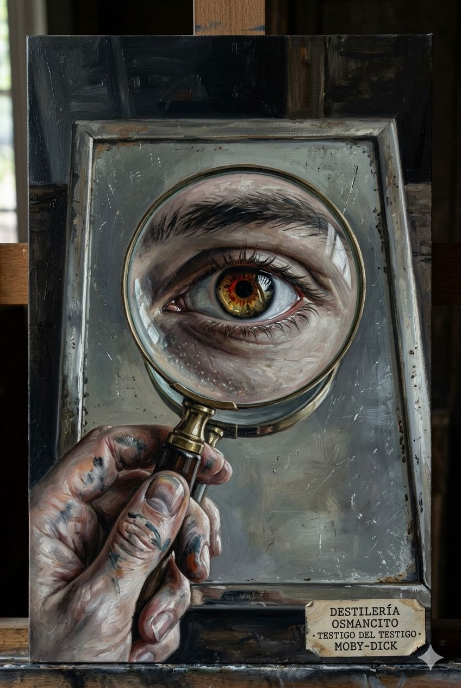
Una lupa sostenida sobre un espejo —la lupa amplifica el reflejo del ojo que mira a través de ella. El ojo no es el objeto de estudio: es el instrumento. Pero la lupa lo observa de vuelta con la misma implacabilidad con que pretendía observar otra cosa. El reflejo tiene una leve distorsión esférica que amplifica y deforma simultáneamente. El acto es observar al observador: registrar qué selecciona y qué omite, cuándo la distancia analítica se quiebra y aparece el hombre detrás del método.
Ishmael se presenta como testigo desinteresado —el hombre que observa, que describe, que hace el inventario de todo— pero cada selección que hace delata lo que no puede dejar de amar: la grandeza imposible, el gesto excesivo, el hombre que lleva la cosa demasiado lejos. Lo que Ishmael no puede mirar sin que la mirada se quiebre es exactamente lo que Ahab hace. El testigo que sobrevivió para contar la historia del hombre que lo destruiría todo eligió esa historia porque algo en él la necesitaba.
Selección sistemática: el exceso. Ishmael elige siempre el objeto, el personaje, el momento que lleva algo hasta su límite. El cachalote sobre todas las otras especies —el más grande, el más profundo, el más peligroso. Ahab sobre todos los otros capitanes. El Pacífico sobre el Atlántico. La blancura sobre cualquier otro color. El capítulo sobre la cola de la ballena sobre cualquier otra parte anatómica. El patrón se repite en al menos treinta capítulos: cuando hay una elección entre lo ordinario y lo extremo, Ishmael elige lo extremo y luego construye el argumento de por qué esa elección era la única posible. La selección produce en el lector la sensación de que el universo entero está organizado por el principio del exceso —que la moderación es la categoría secundaria y la desmesura es la categoría primaria. Esa sensación es la huella de Ishmael en el material, no del material mismo.
Selección sistemática: la figura solitaria contra el cosmos. Ishmael selecciona consistentemente los momentos donde un hombre se enfrenta a algo que lo excede: Ahab en la cofa mirando el mar, Bulkington en la proa de noche, el vigía en el tope del mástil disolviéndose en el océano, Pip solo en el Pacífico. El patrón aparece en al menos quince momentos distintos. Lo que produce en el lector: la convicción de que la posición correcta del hombre en el mundo es la soledad frente a lo inconmensurable. Esa convicción no está en el corpus como declaración —está instalada a través de las selecciones repetidas de Ishmael.
Omisión sistemática: la vida interior de los personajes no blancos. Queequeg, Daggoo, Tashtego tienen acción, presencia física, objetos. No tienen monólogos, no tienen meditaciones, no tienen momentos donde el corpus entre en su experiencia subjetiva. El patrón se mantiene sin excepción a lo largo de los ciento treinta y cinco capítulos. Lo que produce en el lector: la naturalización de una jerarquía de quién tiene vida interior visible y quién no. La omisión no está declarada —opera como ausencia sistemática que el lector absorbe sin que nadie la nombre.
Omisión sistemática: el punto de vista de la ballena. Ya registrado en los instrumentos anteriores, pero merece su lugar aquí como omisión del observador específicamente: Ishmael describe la ballena desde afuera con una exhaustividad que no tiene paralelo en la novela del siglo XIX, y esa exhaustividad externa hace más visible —no menos— la ausencia completa de cualquier acceso interno. El observador que mide todo no entra en lo que mide. La omisión es constitutiva del método de Ishmael: describir sin habitar.
Selección sistemática: la digresión como acceso a la verdad. Ishmael elige sistemáticamente el rodeo sobre el camino directo. En lugar de decir que la ballena es inagotable, escribe quince capítulos de cetología que demuestran la inagotabilidad por acumulación. En lugar de decir que Ahab está obsesionado, construye treinta capítulos de aproximación indirecta antes de que Ahab aparezca en cubierta. La selección produce en el lector la sensación de que la verdad solo es accesible por rodeo —que el acceso directo produce una verdad menor que el acceso acumulativo. Esa epistemología no está declarada: está instalada por el método narrativo del observador.
Cap. 1 — “Llámenme Ishmael.” La primera oración del corpus. El observador se presenta con un nombre que no es necesariamente el suyo —“llámenme” implica que podría no ser así. El método narrativo que sostiene el libro entero se declara provisional en su primera palabra. No es un recurso literario consciente solamente: es un quiebre involuntario donde el observador admite que su posición de testigo imparcial es también una construcción, que el hombre detrás de la voz narrativa eligió un nombre antes de empezar a narrar. El corpus se abre con la grieta que define todo lo que sigue.
Cap. 41 — La descripción de la monomanía de Ahab. Ishmael describe la obsesión de Ahab con una precisión que excede lo que un testigo distante podría producir. La prosa aquí tiene calor propio —no es la frialdad del descriptor sino la temperatura del hombre que reconoce algo que conoce desde adentro. El quiebre está en la frase donde Ishmael declara que la monomanía de Ahab no era locura sino la concentración de todo el ser en un punto. Esa distinción —que salva a Ahab del diagnóstico clínico y lo eleva a categoría trágica— no emerge del análisis. Emerge del amor. Ishmael no puede dejar que Ahab sea simplemente un loco.
Cap. 42 — El capítulo de la blancura. El observador que ha mantenido distancia analítica en treinta capítulos previos produce aquí un capítulo donde la distancia se quiebra completamente. La prosa del capítulo 42 no describe el miedo a la blancura —lo produce. El lector que lo lee siente el vértigo que Ishmael está analizando. El quiebre entre el análisis y la experiencia desaparece. Ishmael deja de ser el hombre que describe el terror y se convierte en el hombre aterrorizado que intenta describir su propio terror. El método no aguanta el material.
Cap. 93 — El abandono de Pip. La descripción del abandono de Pip es notablemente breve para la escala de lo que describe. Ishmael, que ha dedicado capítulos enteros a la anatomía de una aleta, dedica menos de cuatro páginas al momento más perturbador del libro. El quiebre no está en lo que dice sino en la proporción: el observador que puede detenerse treinta páginas en la cola de la ballena no puede detenerse en Pip solo en el océano. Algo en Ishmael no puede sostener ese momento el tiempo suficiente. La brevedad es el síntoma.
Cap. 132 — La sinfonía. La descripción de las lágrimas de Ahab —o el mar en su rostro; el corpus no lo determina— es el único momento donde Ishmael no sabe exactamente lo que está viendo. El observador que ha catalogado con precisión todo lo que toca admite aquí la ambigüedad: ¿llora Ahab? ¿Es el mar? La indeterminación no es retórica —es el quiebre de un método basado en la observación exacta ante un objeto que no puede ser observado exactamente porque importa demasiado. Ishmael no puede mirar las lágrimas de Ahab con la misma frialdad con que miró la cola de la ballena.
Epílogo — “Y solo yo escapé para contarlo.” La cita de Job que abre el Epílogo y la brevedad con que Ishmael describe su propia supervivencia son el quiebre más radical del corpus. El hombre que ha llenado quinientas páginas de descripción minuciosa no puede describir su propio naufragio. El observador que describió la muerte de todos los demás no puede describir su propia supervivencia con la misma temperatura. El Epílogo dura media página. La desproporción entre la extensión del análisis y la brevedad del momento personal es el síntoma más claro de todo el corpus: Ishmael puede describir cualquier cosa excepto lo que le ocurrió a él.
Vistos juntos, los quiebres producen un retrato del observador que Ishmael no revelaría voluntariamente.
Ishmael ama a Ahab. No como personaje —como figura. Lo que Ahab representa —la voluntad llevada hasta su límite, la grandeza que destruye lo que toca, el hombre que organizó su vida entera alrededor de un objeto único— es exactamente lo que Ishmael no puede hacer y no puede dejar de admirar. La distancia analítica que Ishmael mantiene a lo largo del corpus no es indiferencia —es la distancia del hombre que sabe que acercarse demasiado a esa figura lo destruiría, que ya estaba en el barco cuando el barco se hundió, que sobrevivió flotando en el ataúd de otro hombre precisamente porque no era Ahab.
El patrón tiene una forma precisa: cada vez que Ishmael se acerca demasiado al objeto que más le importa —Ahab en la monomanía, la blancura como terror, Pip en el océano, las lágrimas de la sinfonía— el método se quiebra. Y cada vez que el método se quiebra, aparece lo mismo: un hombre que reconoce en el exceso, en la desmesura, en el gesto que va demasiado lejos, algo que le resulta más familiar que la moderación que practica.
La subjetividad no declarada de Ishmael es esta: es un hombre que podría haber sido Ahab y eligió —o fue elegido— para ser el testigo. Y esa elección, que lo salvó, es también la cosa que el corpus lleva como peso sin nombrarlo.
El método de Ishmael —la descripción exhaustiva, la digresión enciclopédica, la distancia analítica— protege el reconocimiento de que la empresa que está describiendo es también la empresa que él habría querido ser capaz de hacer: ir hasta el fondo de una sola cosa, sin concesiones, hasta la destrucción si es necesario. La máscara del testigo imparcial resguarda la admiración del hombre que no tuvo —o no se permitió— la clase de valor que admira.
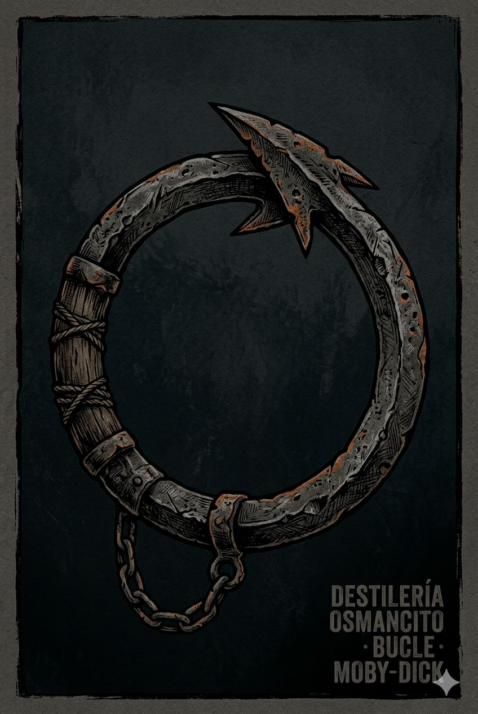
Un arpón doblado en círculo —el mango vuelve hacia la punta, la punta apunta al mango, el ciclo es geométricamente imposible pero visualmente perfecto. El metal del arpón tiene la textura de algo que ha sido usado, reparado, vuelto a usar. No descansa sobre ninguna superficie: flota en el espacio oscuro de la imagen como si la gravedad no aplicara a los mecanismos del corpus cuando se aplican sobre sí mismos. El acto es aplicar los mecanismos del corpus al corpus mismo —y registrar si ilumina, tensa, destruye o enmudece.
Condición 1 — El corpus construye mecanismos. Moby-Dick construye mecanismos con suficiente precisión como para ser operados: un sistema de clasificación de ballenas por especie y tamaño, una teoría de la blancura como categoría del terror, una epistemología de la observación (el vigía en el mástil, el límite del conocimiento ante la frente lisa del cachalote), una teoría del poder carismático (cómo Ahab convierte a la tripulación), una ley de la presa (pez rápido / pez lento), una teoría del destino como tejido (la urdimbre, la trama, la espada del telar), y una proposición sobre la naturaleza de la obsesión como concentración del ser en un punto único. Los mecanismos están construidos con precisión narrativa y filosófica suficiente. Condición cumplida.
Condición 2 — El corpus pertenece a la clase de objetos que sus mecanismos describen. Moby-Dick es una narración que construye mecanismos para explicar cómo funciona la persecución de un objeto inagotable, la imposibilidad del conocimiento completo, y el mecanismo por el que un objeto opaco se convierte en receptáculo de proyección. El corpus mismo es un objeto inagotable, ha resistido el conocimiento completo durante dos siglos de lectura, y funciona como receptáculo de proyección para cada lector que lo abre. Condición cumplida.
El instrumento aplica. Se procede.
Aplicar los mecanismos de Moby-Dick al propio Moby-Dick produce exactamente lo que el libro predice: el objeto se resiste al agotamiento, la frente no dice nada, el observador encuentra su propio rostro en el espejo. El bucle no destruye el corpus —lo confirma. Y esa confirmación es perturbadora de una manera que la destrucción no sería: el libro que describió la imposibilidad de conocer completamente no puede ser conocido completamente. No como paradoja elegante —como hecho.
La taxonomía como acto de posesión — clasificar una ballena por especie, tamaño y comportamiento es un intento de dominarla a través del nombre. El corpus construye este mecanismo como empresa que siempre produce residuo: cada clasificación deja algo sin clasificar.
La blancura como vacío proyectable — el color blanco aterra porque no tiene contenido propio; es el color que recibe cualquier proyección precisamente porque no devuelve nada. El mecanismo: objeto sin color propio → receptor de toda proyección → terror ante la ausencia de significado fijo.
La frente lisa como límite del conocimiento — la frente del cachalote, sin arrugas ni expresión, no puede ser leída desde afuera. El mecanismo: superficie sin información visible → imposibilidad de inferir interior → el misterio no está detrás de la frente, la frente es el misterio.
El doblón como espejo — un objeto de valor fijo (una moneda) que cada observador lee de manera completamente distinta. El mecanismo: objeto de valor declarado → cada lector ve su propio sistema de significado → el objeto no tiene contenido propio, tiene superficie reflectante.
La lay como distribución del riesgo — el sistema de participación proporcional donde el marinero comparte beneficio y riesgo sin participar en las decisiones. El mecanismo: contrato de participación → alineación de incentivos con el propósito del capitán → imposibilidad de deserción sin pérdida total.
La cuerda del arpón como doble filo — el instrumento que conecta al cazador con la presa puede convertirse en lo que lo mata. El mecanismo: herramienta de caza → extensión del cuerpo del cazador → posibilidad de ser arrastrado por lo que persigue.
La monomanía como concentración total — la obsesión no es locura sino la organización de todo el ser alrededor de un punto único. El mecanismo: trauma → reorganización del sistema de valores → todo lo que no es el objeto central se vuelve invisible o instrumental.
El vigía en el mástil como riesgo de disolución — la observación sostenida del océano desde la altura produce la disolución de la frontera entre el observador y lo observado. El mecanismo: observación prolongada → pérdida de escala → riesgo de caída sin decisión consciente.
El telar como modelo del destino — urdimbre (necesidad) + trama (libre albedrío) + espada (azar) producen juntos el tapiz. El mecanismo: tres fuerzas simultáneas → resultado que ninguna produce sola → el producto es irreversible una vez tejido.
La supervivencia como accidente — el único superviviente no hizo nada para sobrevivir; el vórtice lo lanzó fuera por mecánica del desastre. El mecanismo: destrucción total → distribución física del movimiento del agua → supervivencia como resultado no intencional del sistema.
La taxonomía como acto de posesión → aplicada al corpus
El corpus ha sido clasificado durante dos siglos: novela de aventuras, épica americana, novela filosófica, novela modernista avant la lettre, alegoría política, novela de la masculinidad, texto fundacional del canon americano. Cada clasificación captura algo real y deja algo sin capturar. El mecanismo que el corpus construye para describir la imposibilidad de agotar la ballena por clasificación opera exactamente igual cuando se aplica al corpus: cada categoría produce residuo. El libro que resiste la taxonomía fue construido para resistir la taxonomía.
Resultado A — Iluminación. La resistencia del corpus a la clasificación no es una propiedad accidental —es la consecuencia necesaria de haber construido un objeto que describe exactamente esa resistencia. Moby-Dick no puede ser agotado por ninguna categoría porque su mecanismo central es la demostración de que los objetos que importan no pueden ser agotados por ninguna categoría.
La blancura como vacío proyectable → aplicada al corpus
El corpus no tiene “color propio” en el sentido de una posición filosófica declarada y fija. No hay tesis central que el corpus afirme sin ambigüedad: ¿es Ahab un héroe trágico o un tirano? ¿Es la ballena símbolo de la malicia del universo o un animal indiferente? ¿Es la supervivencia de Ishmael mérito o accidente? El corpus no responde ninguna de estas preguntas con el tono de quien tiene una respuesta. Lo que tiene es superficie: una superficie que cada lector lee con su propio sistema de significado.
El mecanismo: corpus sin posición fija → cada lector proyecta su sistema → el corpus devuelve el rostro del lector. El doblón en el capítulo 99 no es solo un objeto dentro de la narración —es el modelo de lo que el libro entero hace con cada lector que lo abre.
Resultado A — Iluminación. El capítulo 99 es el corpus leyéndose a sí mismo. Los personajes que se detienen ante el doblón y ven cosas distintas son el modelo de lo que ocurre cuando los lectores se detienen ante el libro. La escena no es solo un momento narrativo —es el mecanismo del corpus explicado por el corpus desde adentro.
La frente lisa como límite del conocimiento → aplicada al corpus
La frente del cachalote no tiene arrugas, no tiene expresión, no da información sobre el interior. El corpus la describe como la superficie que detiene al observador: el misterio no está detrás, la frente es el misterio.
Aplicado al corpus: ¿tiene Moby-Dick una “frente”? ¿Una superficie que no da información sobre lo que está detrás? La respuesta es Ishmael. El narrador que lo cuenta todo sobre el océano, la ballena, la caza, Ahab —que ha pasado quinientas páginas describiendo el exterior de todo con precisión extraordinaria— no da información sobre su propio interior. La primera oración del corpus —“Llámenme Ishmael”— es la frente del cachalote: una superficie sin información sobre lo que está detrás. El libro que no puede entrar en el interior de la ballena tampoco puede entrar en el interior del narrador que lo cuenta.
Resultado B — Tensión. El mecanismo de la frente lisa aplicado al corpus produce una contradicción: el libro que describe la imposibilidad de conocer el interior de la ballena está narrado por alguien cuyo interior tampoco puede ser conocido. El observador y el objeto observado comparten la misma estructura de opacidad. El corpus no puede señalar esto sin señalarse a sí mismo —y si se señala a sí mismo, la voz narrativa que garantiza la credibilidad del relato se vuelve tan opaca como la ballena que describe.
El doblón como espejo → aplicado al corpus
El mecanismo del doblón: objeto de valor declarado, superficie reflectante, cada lector ve su propio sistema. Aplicado al corpus: Moby-Dick es el doblón más grande de la literatura americana. Su valor está declarado —es “la novela americana”— pero ese valor no viene del objeto sino del consenso de los que lo nombraron así. Lo que cada lector ve en él depende de lo que lleva: el que lleva filosofía encuentra filosofía, el que lleva política encuentra política, el que lleva psicología encuentra psicología, el que lleva cetología encuentra cetología. El corpus es suficientemente amplio para que todas esas lecturas tengan sustento real, y esa amplitud es exactamente la propiedad del doblón: no tiene contenido propio, tiene superficie.
Resultado A — Iluminación. El mecanismo del doblón revela que la “grandeza” del corpus no es una propiedad del texto sino de su relación con los lectores que lo han necesitado para decir cosas que el texto les permitió decir. El corpus no es grande por lo que contiene —es grande por lo que cada generación ha podido proyectar en él. Como el doblón: su valor es proporcional a la cantidad de sistemas de significado que puede recibir sin romperse.
La lay como distribución del riesgo → aplicada al corpus
El mecanismo de la lay: el marinero comparte el riesgo total sin participar en las decisiones, alineado con el propósito del capitán por el contrato firmado. Aplicado al corpus: el lector de Moby-Dick firma implícitamente una lay al abrir el libro. Se le pide que invierta tiempo, atención, disposición a ser perturbado —y ese riesgo es proporcional: el lector que da más recibe más, pero no puede saber de antemano cuánto recibirá. La decisión de hacia dónde va el barco la tomó Melville hace ciento setenta años. El lector puede abandonar el barco —cerrar el libro— pero no puede cambiar el rumbo.
Resultado B — Tensión. El mecanismo de la lay produce una incomodidad cuando se aplica al corpus: el lector que invierte trescientas páginas en el libro antes de que lleguen los tres días de la cacería ha firmado exactamente el contrato de Ishmael. Ya está comprometido. No puede cerrar el libro sin perder lo invertido. El corpus usa el mismo mecanismo de retención que describe: el Pequod no puede volver a puerto una vez que está en alta mar, y el lector no puede abandonar la lectura sin costo una vez que ha llegado demasiado lejos.
La cuerda del arpón como doble filo → aplicada al corpus
La cuerda que conecta al cazador con la presa puede matarlo. El instrumento de caza es simultáneamente el instrumento de la propia destrucción. Aplicado al corpus: la empresa enciclopédica de Melville —construir el libro más ambicioso posible, el que lo contiene todo, el que agota el objeto— fue exactamente la cuerda que lo arrastró al fondo. El libro que demostró la imposibilidad de agotar un objeto fue el objeto que agotó al autor. Melville puso todo en el arpón y la cuerda lo arrastró: carrera destruida, reputación hundida, décadas de trabajo como inspector de aduanas.
Resultado A — Iluminación. El mecanismo de la cuerda del arpón, aplicado al corpus, revela que la relación entre Melville y Moby-Dick reproduce exactamente la relación entre Ahab y la ballena. El autor que describió la destrucción del hombre que persiguió a un objeto inagotable fue destruido por perseguir a ese mismo objeto —el libro que no podía dejar de escribir aunque supiera lo que le costaría. El corpus contiene, sin nombrarlo, la historia de su propia producción.
La monomanía como concentración total → aplicada al corpus
La monomanía no es locura sino la organización de todo el ser alrededor de un punto único, la invisibilización de todo lo que no es el objeto central. Aplicado al corpus: Moby-Dick es un objeto monomaniaco. Todo en él —la enciclopedia, los soliloquios, la cosmología, los encuentros con otros barcos, los capítulos de cetología— está organizado alrededor de un punto único: la ballena blanca que no puede ser conocida completamente. Lo que no contribuye a ese punto central tiende a desaparecer o a ser reabsorbido: los personajes secundarios existen en función de su relación con Ahab o con la caza, las digresiones enciclopédicas convergen todas en el animal que las genera.
Resultado B — Tensión. El corpus que describe la monomanía como la organización de todo el ser alrededor de un punto único es él mismo monomaniaco. Pero el mecanismo del corpus dice que la monomanía destruye al que la practica. El corpus sobrevivió —Melville no. La tensión: el objeto de la monomanía sobrevive; el sujeto de la monomanía no. El libro que describe la destrucción del monomaniaco fue producido por un acto de monomanía que destruyó al autor. El mecanismo se cumple, pero en el nivel del autor, no del texto.
El vigía en el mástil como riesgo de disolución → aplicada al corpus
La observación sostenida del océano desde la altura produce la disolución del observador: el ojo que mira demasiado tiempo pierde la frontera entre sí mismo y lo observado. El riesgo es la caída sin decisión consciente. Aplicado al corpus: el lector de Moby-Dick que lee durante suficiente tiempo experimenta exactamente el mecanismo descrito. La observación sostenida del corpus —la densidad acumulativa de los capítulos de cetología, la lentitud de la demora antes del encuentro final— produce un estado de lectura donde la frontera entre el lector y el texto se vuelve permeable. El lector que llega al tercer día de la cacería habita el barco.
Resultado A — Iluminación. El mecanismo del vigía en el mástil es también una descripción de la experiencia de leer el libro. El corpus no solo describe el riesgo de disolución —lo produce en el lector que se sostiene suficiente tiempo en él. La advertencia de Ishmael sobre mirar demasiado tiempo al océano es simultáneamente una advertencia sobre leer demasiado tiempo este libro.
El telar como modelo del destino → aplicado al corpus
Urdimbre (necesidad) + trama (libre albedrío) + espada (azar) producen juntos el tapiz irreversible. Aplicado al corpus: ¿qué fue necesidad, qué fue elección y qué fue azar en la producción de Moby-Dick?
La necesidad: Melville había estado en el mar. Ese material era el único que tenía con suficiente densidad para sostener el libro que quería escribir. No podía haber escrito otro corpus con la misma densidad desde otro suelo.
El libre albedrío: la decisión de no escribir la novela de aventuras que su mercado esperaba, de insertar los capítulos filosóficos, de dar a Ishmael la voz que tiene. Esas elecciones podían haber sido otras.
El azar: la edición inglesa que omitió el Epílogo. La recesión del mercado editorial americano en 1851. La aparición de Hawthorne en el momento exacto en que Melville necesitaba un interlocutor. El vórtice que lanzó a Ishmael fuera en lugar de adentro.
Resultado A — Iluminación. El telar aplicado al corpus produce la imagen más precisa de cómo Moby-Dick llegó a ser lo que es: no por una sola causa sino por la intersección de lo que no podía ser de otra manera, lo que eligió ser, y lo que ocurrió sin que nadie lo decidiera. El tapiz resultante —el corpus— es irreversible. No puede ser destejido. Ya ocurrió.
La supervivencia como accidente → aplicada al corpus
El único superviviente no hizo nada para sobrevivir; la mecánica del desastre lo lanzó fuera. Aplicado al corpus: Moby-Dick sobrevivió al siglo XIX por accidente —no por mérito reconocido en su tiempo sino porque algunos lectores del siglo XX lo encontraron cuando buscaban otra cosa y no pudieron olvidarlo. La supervivencia del corpus no fue intencional: fue el resultado de la mecánica de la recepción literaria, que tiene sus propios vórtices y sus propias direcciones de expulsión.
Resultado B — Tensión. El mecanismo dice que la supervivencia es un accidente sin mérito propio. Aplicado al corpus, produce incomodidad: ¿significa eso que la grandeza de Moby-Dick es también un accidente, que otro libro igualmente ambicioso que no fue encontrado por los lectores correctos en el momento correcto podría haber sido igualmente grande y fue simplemente absorbido por el vórtice? El corpus no puede responder esa pregunta sin cuestionarse a sí mismo. Y si se cuestiona a sí mismo, el mecanismo de la supervivencia como accidente se aplica al corpus con precisión destructiva: la grandeza del libro podría ser el resultado del vórtice, no del libro.
Moby-Dick puede señalar la imposibilidad de conocer completamente su objeto central —la ballena, el cosmos, el propio deseo— pero no puede demostrar desde adentro de sus propias reglas que esa imposibilidad no se aplica también a sí mismo: el libro que describe lo inagotable es inagotable, y esa inagotabilidad no puede ser establecida por el libro sino solo por los lectores que siguen volviendo a él desde afuera.
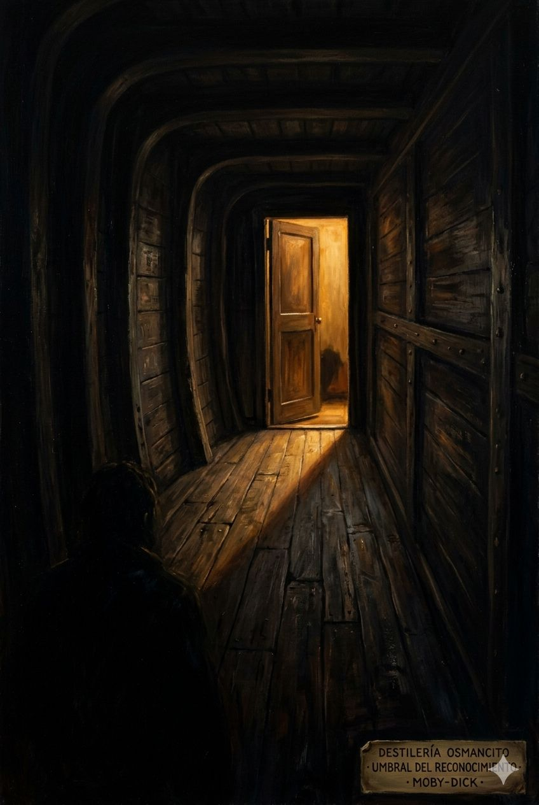
Una puerta entreabierta al final de un pasillo de madera de barco —el pasillo es largo, angosto, ligeramente curvado como el casco. Desde el interior de la habitación hacia la que conduce la puerta, una franja de luz cae sobre las tablas del suelo, pero no ilumina el pasillo completo: solo esa franja. Quien espera en el pasillo está en la oscuridad. Quien está en la habitación iluminada no asoma. La espera del reconocimiento tiene exactamente esa geometría: luz que no alcanza, umbral que no se cruza todavía. El acto es leer el corpus como sistema de reconocimiento —las condiciones que lo permiten, las que lo bloquean.
El reconocimiento en Moby-Dick casi nunca llega de la forma correcta, en el momento correcto, al ser correcto. Queequeg reconoce a Ishmael antes de que haya categoría para ello. Ahab reconoce a Pip cuando ya no puede actuar desde ese reconocimiento. La tripulación reconoce la grandeza de Ahab pero no puede reconocer su peligro. Y el corpus mismo —rechazado en 1851, recuperado en 1920— es el ejemplo más preciso de su propio argumento: el reconocimiento que llega tarde ya no puede alcanzar al hombre que lo necesitaba.
Caps. 3-4 — Queequeg reconoce a Ishmael como compañero Tipo — Afectivo / corporal. Forma — El abrazo de la mañana. La declaración “married”. La pipa compartida. No hay discurso —hay gesto acumulado. Condición — Ninguna visible. Queequeg no impone condición previa. El reconocimiento ocurre antes de que haya razón verificable para otorgarlo. Costo — Ishmael cede la incomodidad inicial ante lo extraño. No hay costo mayor. Suficiencia — Suficiente y más: este reconocimiento es el único del libro que no tiene ambigüedad ni dilación. Llega completo.
Cap. 16 — Peleg y Bildad reconocen a Ishmael como marinero contratado Tipo — Legal / económico. Forma — El contrato firmado. La asignación de la lay. Condición — Ishmael debe aceptar una fracción ínfima del beneficio y el riesgo total. Costo — La agencia sobre el rumbo del barco. Al firmar, Ishmael transfiere cualquier poder de decisión. Suficiencia — El corpus no lo dice. Ishmael acepta sin comentario moral.
Cap. 18 — Peleg y Bildad reconocen a Queequeg como arponero Tipo — Legal / profesional. Forma — La demostración del arpón. El “Firmad al hombre.” Condición — Queequeg debe demostrar habilidad técnica excepcional. No hay condición racial, religiosa o cultural declarada —pero sin la demostración, el reconocimiento no habría llegado. La condición no declarada: el pagano debe probar lo que al cristiano se le presupone. Costo — Queequeg debe demostrar lo que otros no necesitan demostrar. El reconocimiento llega pero a un precio de prueba asimétrico. Suficiencia — Suficiente para el contrato. No suficiente para la igualdad de posición: Queequeg es arponero, no oficial.
Cap. 28 — La tripulación reconoce a Ahab como presencia Tipo — Afectivo / corporal / implícito. Forma — El silencio cuando Ahab aparece en cubierta. Nadie habla. Nadie se mueve. Condición — La aparición física de Ahab después de semanas de ausencia. La cicatriz. La pata de marfil. El cuerpo que ha sobrevivido algo que no tiene nombre. Costo — El reconocimiento no lo cuesta nada a la tripulación todavía. El costo llegará después, cuando reconocer a Ahab se convierta en seguirlo. Suficiencia — El corpus no dice si Ahab nota el reconocimiento. La escena es de aparición, no de recepción.
Cap. 36 — La tripulación reconoce el propósito de Ahab como el propio Tipo — Político / afectivo / ritual. Forma — El grito de adhesión después de que Ahab clava el doblón y hace beber a los arponeros. Condición — El ritual: el doblón como promesa, los arpones como cálices, la presencia física de Ahab en el centro. Sin ritual, el reconocimiento no habría ocurrido de la misma manera. Costo — La vida. El corpus lo sabe aunque la tripulación no lo sepa todavía. Suficiencia — Suficiente para Ahab. Irreversible para la tripulación.
Cap. 41 — Ishmael reconoce a Ahab como figura trágica, no como loco Tipo — Intelectual / afectivo. Forma — La distinción que Ishmael traza: la monomanía no es locura sino concentración total del ser. La elevación de Ahab a categoría trágica. Condición — La distancia temporal: Ishmael lo escribe después, cuando ya puede ver el arco completo. Costo — Este reconocimiento le cuesta a Ishmael la posibilidad de juzgar a Ahab con frialdad. Quien reconoce la grandeza del hombre que lo llevaría a la muerte ya no puede simplemente condenarlo. Suficiencia — El corpus no dice si Ahab habría querido ese reconocimiento. El reconocido ya no existe cuando llega.
Cap. 93 — El corpus reconoce la ruptura de Pip Tipo — Psicológico / intelectual. Forma — La descripción de lo que le ocurrió en el océano: vio demasiado, su mente se reorganizó, ahora ve lo que los cuerdos no pueden ver. Condición — El abandono. El océano. La soledad sin escala humana. Costo — La mente ordinaria, la escala calibrada al mundo humano, la posibilidad de habitar el presente. Suficiencia — Insuficiente: el corpus reconoce la visión de Pip pero no puede darle destinatario. Pip ve el mecanismo completo y no puede transmitirlo.
Cap. 99 — El corpus reconoce que cada lector ve su propio rostro Tipo — Meta-narrativo / intelectual. Forma — El capítulo del doblón: cada personaje ve algo distinto en el mismo objeto. Pip ve a todos viendo y sabe lo que eso significa. Condición — La acumulación del análisis anterior. El doblón solo puede funcionar como espejo después de que el corpus ha construido a cada personaje con suficiente densidad. Costo — La ilusión de objetividad. El corpus reconoce, al mostrar a todos leyendo el doblón con sus propios sistemas, que ninguna lectura es neutral —incluyendo la de Ishmael. Suficiencia — El corpus no cierra esta pregunta. La deja abierta.
Cap. 129 — Ahab reconoce a Pip como su equivalente roto Tipo — Afectivo / intelectual. Forma — “Ven y quédate cerca de mí. Tu locura es más sabia que la cordura de todos los que hay en este barco.” Condición — La ruptura de Pip. Ahab no podría reconocerlo si Pip estuviera entero: solo el que ha visto demasiado puede ser reconocido por el que quiere ver demasiado. Costo — Para Pip: ninguno visible. Para Ahab: la amenaza de que ese reconocimiento lo ablande y le impida completar el viaje. Ahab lo reconoce y luego le pide que no lo siga, exactamente porque el reconocimiento es real. Suficiencia — El corpus sugiere que es el reconocimiento más genuino que Ahab otorga en todo el libro. Y el que menos puede sostener.
Cap. 132 — Starbuck reconoce momentáneamente a Ahab como hombre Tipo — Afectivo / moral. Forma — La sinfonía. Starbuck ve a Ahab como el hombre que fue antes de la ballena: el esposo joven, el padre ausente, el hombre cansado. Condición — El día perfecto, la calma, el momento de vulnerabilidad que Ahab permite por única vez. Costo — El reconocimiento le cuesta a Starbuck la posibilidad de actuar: quien ve al hombre no puede matar al capitán. El reconocimiento que llega en ese momento es exactamente lo que hace imposible la única acción que salvaría al barco. Suficiencia — Suficiente para producir esperanza en Starbuck. Insuficiente para cambiar el rumbo: Ahab se da vuelta y vuelve a ser Ahab.
Epílogo — El Rachel reconoce a Ishmael como superviviente digno de rescate Tipo — Legal / humanitario. Forma — El barco que buscaba a sus propios perdidos recoge a Ishmael. No hubo elección consciente: el Rachel estaba buscando, encontró a alguien que necesitaba ser recogido, lo recogió. Condición — La supervivencia física de Ishmael. Nada más. Costo — Ninguno visible para Ishmael. Suficiencia — El corpus no lo dice. El Epílogo termina con el rescate, no con lo que ocurrió después.
El reconocimiento diferido: Melville y su obra Tipo — Intelectual / cultural. Forma — La recuperación del corpus en los años 1920 por lectores y críticos americanos que lo nombraron la novela americana por excelencia. Cuánto tardó — Aproximadamente setenta años desde la publicación. Melville murió en 1891 —treinta años después de publicar el libro— sin ver el reconocimiento. Qué cambió mientras tanto — Melville pasó las últimas décadas de su vida como inspector de aduanas, escribiendo poesía que casi nadie leyó. El hombre que necesitaba el reconocimiento ya no existía cuando llegó. Si el reconocimiento que llegó es el mismo que se esperaba — No. Melville esperaba reconocimiento como escritor ambicioso en su propio tiempo. Lo que llegó fue canonización póstuma —una categoría completamente diferente que él no habría podido usar. La pregunta que el corpus no puede responder — Si el reconocimiento diferido valió lo que costó. El corpus no tiene acceso a esa pregunta porque fue escrito antes de que el costo fuera conocido.
Afectivo: 4 (Queequeg-Ishmael, tripulación-Ahab como presencia, Ahab-Pip, Starbuck-Ahab en la sinfonía). Legal / económico / profesional: 3 (contrato de Ishmael, contrato de Queequeg, el Rachel). Intelectual / meta-narrativo: 3 (Ishmael sobre Ahab, el doblón, la ruptura de Pip). Político / ritual: 1 (la adhesión de la tripulación). Cultural / diferido: 1 (Melville póstumo).
Distribución inesperada: el corpus que declara ser una épica de la caza y la obsesión tiene más reconocimientos afectivos que de cualquier otro tipo. Los reconocimientos más cargados —Queequeg-Ishmael, Ahab-Pip— son los que el corpus no llama reconocimientos con ese nombre. La épica de la voluntad está sostenida por una red de afecto que opera sin anunciarse.
Umbral declarado El corpus no declara explícitamente las condiciones para el reconocimiento en ningún capítulo teórico. Pero los reconocimientos instituticionalizados —el contrato de marinero, la lay— tienen condiciones visibles: habilidad técnica demostrable, disposición a asumir el riesgo total, firma del contrato.
Umbral real En la práctica, el reconocimiento en el corpus ocurre cuando el reconocedor necesita al reconocido de una manera que excede lo instrumental. Queequeg reconoce a Ishmael porque lo necesita como compañero, no como herramienta. Ahab reconoce a Pip porque Pip es lo único en el barco que refleja algo que Ahab reconoce en sí mismo —la visión que destruye la escala ordinaria. El umbral real es la necesidad mutua, no la calificación.
El precio no negociable El sistema de reconocimiento del corpus siempre cobra el mismo precio: la persona que necesita ser reconocida debe demostrar que ya no necesita el reconocimiento para existir. Queequeg no busca el reconocimiento de Ishmael —lo otorga. Ahab no busca el reconocimiento de nadie —lo exige como consecuencia de lo que ya es. El único personaje que busca activamente el reconocimiento —Pip, que sigue a Ahab por el barco— lo recibe precisamente porque dejó de buscarlo de manera ordinaria: ya no tiene la capacidad de no ser reconocido, porque su visión lo hace visible para cualquiera que pueda soportar mirarlo.
Quién otorga El poder de reconocimiento está altamente concentrado: Ahab otorga o niega reconocimiento a toda la tripulación; los dueños del barco otorgan o niegan el contrato; el corpus otorga o niega perspectiva interior a los personajes. Hay muy poca distribución horizontal del poder de reconocimiento.
Quién espera La tripulación entera espera el reconocimiento de Ahab de que su adhesión fue correcta. Starbuck espera que Ahab reconozca su razón. Queequeg y los arponeros esperan un reconocimiento que el sistema institucional del barco no está configurado para darles. Pip espera que alguien pueda recibir lo que ve.
La brecha La distancia más grande es la de Queequeg: el personaje con mayor virtud operativa en el libro —el más hábil, el más generoso, el más genuino en su afecto— recibe el reconocimiento afectivo de Ishmael pero ningún reconocimiento institucional equivalente a su valor. Muere sin que el corpus le otorgue la perspectiva interior que le daría a su muerte el peso que tiene. La segunda brecha más grande es la de Pip: el personaje que más claramente ve el mecanismo del corpus no tiene destinatario para lo que ve. El reconocimiento que el corpus le otorga —la visión del pie de Dios en el pedal del telar— es un reconocimiento que lo aísla en lugar de integrarlo.
La inversión Existe una sola: en la sinfonía, Ahab —que ha otorgado o negado reconocimiento a todos durante ciento treinta capítulos— necesita el reconocimiento de Starbuck. Lo busca en el día perfecto, en la vulnerabilidad inusual, en la confesión sobre la esposa y el hijo. Starbuck lo ve. Y en ese momento, el que siempre otorgaba necesita recibir, y el que siempre esperaba puede dar. La inversión dura lo que dura la sinfonía.
El ataúd. Queequeg construye su ataúd cuando cree que va a morir, lo decora con sus tatuajes, y luego lo convierte en baúl. Cuando el Pequod se hunde, ese objeto salva a Ishmael. El ataúd es el reconocimiento más permanente del corpus —el único que sobrevive al naufragio— y nadie lo llama reconocimiento. Queequeg no construyó el ataúd para salvar a Ishmael. Lo construyó para sí mismo. El reconocimiento llegó como consecuencia no intencional del cuidado que Queequeg puso en un objeto que nunca fue diseñado para otra persona.
La pipa compartida. El acto de fumar juntos en el capítulo 10 no tiene nombre en el corpus. Queequeg lo llama matrimonio, pero el corpus no ratifica esa categoría ni la niega. Lo que ocurre es un reconocimiento mutuo que precede a cualquier categoría disponible: antes de que haya amistad declarada, antes de que haya contrato, antes de que haya lenguaje compartido suficiente para nombrarlo, los dos hombres se reconocen como pertenecientes al mismo mundo.
El grito de Tashtego. En el tercer día, Tashtego avista a Moby Dick antes que nadie. El primer avistamiento no pertenece a Ahab —pertenece al arponero indígena de Martha’s Vineyard que ha mantenido la guardia con más agudeza que cualquier otro. El corpus registra el grito pero no lo reconoce como lo que es: el acto más importante del día final realizado por el personaje al que el corpus menos ha reconocido con anterioridad. Tashtego gana el doblón. El corpus no menciona eso.
La objeción de Starbuck en el cuarto de bitácora (cap. 36). Starbuck intenta que Ahab reconozca la irracionalidad de la empresa. Ahab responde desde un registro completamente diferente —no argumental sino energético. El reconocimiento falla no porque Ahab no entienda la objeción sino porque opera desde un sistema donde la objeción no tiene entrada. El fallo es del sistema, no del reconocedor ni del reconocido.
El encuentro con el capitán del Samuel Enderby (cap. 100). Boomer intenta que Ahab reconozca la posibilidad de seguir adelante sin perseguir a la ballena —que la pérdida puede ser absorbida y la vida continuar. Ahab se va sin responder. El reconocimiento falla porque llegaría demasiado tarde: Ahab ya no tiene acceso a la operación que ese reconocimiento requeriría.
La sinfonía (cap. 132). Starbuck ve al hombre detrás del capitán. Ahab lo ve viendo. El reconocimiento ocurre —y entonces Ahab se da vuelta. El fallo no es de la forma ni del momento: es de la condición del reconocido. Ahab ya no puede recibir ese reconocimiento y actuar desde él. El sistema que lo habría permitido fue desmantelado por la obsesión mucho antes de que llegara la oportunidad.
El corpus en su tiempo (1851). Las reseñas que no supieron leer el libro, la edición inglesa sin Epílogo, el mercado que esperaba otra cosa. El reconocimiento que el corpus solicitaba —ser leído como lo que era— no llegó porque las condiciones de recepción no estaban disponibles todavía. El fallo es del sistema de circulación, no del corpus ni de sus lectores individuales.
En Pip: el reconocimiento de su visión —el que Ahab le otorga en el capítulo 129— destruye la posibilidad de que Pip habite el presente de manera ordinaria. Ser reconocido como el que ve demasiado lo confirma en esa posición sin darle los medios para salir de ella. El reconocimiento es real y simultáneamente una sentencia.
En la tripulación: el reconocimiento de su adhesión al propósito de Ahab —el grito del cuarto de bitácora— destruye su agencia individual. Ser reconocidos como participantes voluntarios en la empresa los hace cómplices de lo que viene. El reconocimiento los transforma de marineros contratados en miembros de algo que no tiene nombre en ningún contrato.
En el corpus mismo: el reconocimiento canónico que llegó en el siglo XX destruyó una de las propiedades del libro que lo hacía más perturbador: su condición de objeto rechazado, de texto que el mercado no quiso. El Moby-Dick canonizado es un objeto diferente al Moby-Dick que nadie quiso en 1851, y algo de lo que el libro cargaba como tensión —la distancia entre su ambición y su recepción— desapareció cuando la recepción finalmente llegó.
¿Es el reconocimiento en este corpus una constatación o una concesión? Ambas, en momentos distintos. El reconocimiento afectivo —Queequeg a Ishmael, Ahab a Pip— es constatación: nombra algo que ya existe antes de que sea nombrado. El reconocimiento institucional —el contrato, la lay, el canon— es concesión: produce lo que reconoce. El corpus muestra que los reconocimientos más reales son los que no necesitan del sistema para ocurrir, y los que más cuestan son los que el sistema controla.
¿Puede el reconocido reconocerse a sí mismo en ausencia del reconocimiento ajeno? Ahab sí —o eso cree: opera desde una certeza de sí mismo que no depende de la confirmación externa. Pero esa auto-suficiencia es exactamente lo que lo destruye. Queequeg también: su identidad no depende del reconocimiento de Ishmael, precede a ese reconocimiento. Ishmael no: su identidad narrativa —“llámenme Ishmael”— depende del acto de contar, que requiere un lector. El corpus muestra que la auto-suficiencia completa conduce a la destrucción (Ahab), que la identidad anterior al reconocimiento ajeno es posible pero frágil (Queequeg), y que la identidad narrativa requiere estructuralmente al otro.
¿Qué hace el corpus con el reconocimiento que no llegó a tiempo? Lo elabora como condición neutra del mundo. El corpus no trata el reconocimiento tardío como tragedia ni como ironía —lo trata como el modo habitual en que las cosas funcionan. Los cenotafios sin cuerpo, el Rachel que rescata a Ishmael sin saber que es el único superviviente, la canonización póstuma de Melville: el corpus acepta el desfase temporal del reconocimiento con la misma frialdad con que acepta que el océano siga rodando después del naufragio. No como resignación —como descripción.
En este corpus, el reconocimiento es posible cuando el reconocedor necesita al reconocido de una manera que excede lo instrumental y cuando ambos han perdido suficiente como para reconocer la pérdida del otro; imposible cuando el que debería otorgarlo opera desde un sistema donde la necesidad del otro no tiene entrada; y tiene el costo irreducible de confirmar al reconocido en exactamente la posición que lo aisla —la visión que destruye la escala, la grandeza que precede a la caída, la singularidad que hace imposible la integración.
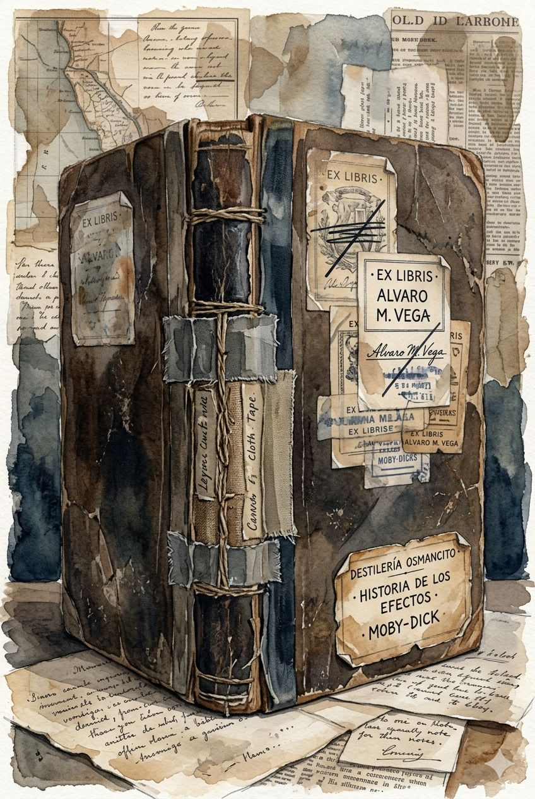
Un libro con la cubierta desgastada y el lomo reparado múltiples veces —cada reparación en materiales distintos, de épocas distintas, como capas de tiempo visibles. Sobre la cubierta, exlibris superpuestos de distintas manos y épocas, algunos tachados, uno con la tinta tan desvanecida que solo se adivina. El objeto es su propia historia de lecturas. El acto es leer el corpus a través del tiempo que vino después de él: los momentos en que algo externo cambió la lente, las iluminaciones y cegueras por época.
El dato más perturbador de la historia de la recepción de Moby-Dick es que el libro que describe la imposibilidad de conocer completamente un objeto ha sido leído, en cada época, como si ese problema estuviera resuelto —como si esa época en particular hubiera encontrado la llave. Cada generación llega al corpus convencida de que ahora sí se puede leer correctamente, y cada generación tiene razón sobre algo y está ciega ante otra cosa. El corpus sobrevive exactamente porque ninguna llave lo abre del todo.
1851 — Publicación y rechazo
Qué ocurrió afuera — El mercado editorial americano de 1851 esperaba novelas de aventuras marítimas del tipo que Melville había producido con Typee y Omoo. La industria ballenera estaba en su apogeo. La controversia sobre la esclavitud escalaba hacia la Guerra Civil. La edición inglesa omitió el Epílogo, haciendo incomprensible la pregunta de quién narra si todos murieron.
Qué reveló — La lectura contemporánea vio la novela de aventuras que el corpus contenía parcialmente y rechazó los capítulos filosóficos como digresión inadmisible. Algunos críticos reconocieron la ambición; la mayoría la penalizó. Lo que esa lectura pudo ver: la precisión técnica de la caza, el carácter extraordinario de Ahab, el humor de los capítulos cómicos.
Qué cegó — Todo lo que no era género. La estructura de los capítulos enciclopédicos como argumento, no como decoración. La relación entre Ishmael y Queequeg como el eje afectivo del libro. La proposición filosófica central. La recepción de 1851 leyó el corpus como si hubiera un libro correcto adentro y el resto sobrara, e intentó extraer ese libro correcto desechando lo que no cabía.
Escala del cambio — Total para la recepción contemporánea. El fracaso comercial fue absoluto y determinó las condiciones materiales de la vida de Melville durante décadas.
1919-1924 — El redescubrimiento americano
Qué ocurrió afuera — La Primera Guerra Mundial había destruido la confianza europea en la civilización occidental. En Estados Unidos, el período de posguerra produjo una búsqueda de una identidad cultural propia, distinta de Europa. Los críticos Raymond Weaver y Carl Van Doren redescubrieron a Melville; Weaver publicó la primera biografía en 1921. El centenario de Melville en 1919 funcionó como detonante.
Qué reveló — La lectura posguerra vio en Ahab la figura del hombre occidental que lleva su civilización a la destrucción por exceso de voluntad —una lectura que la guerra acababa de hacer posible. Vio el corpus como épica nacional americana en el sentido en que Europa tenía sus épicas pero América no había tenido la suya todavía. Vio la profundidad filosófica que la recepción de 1851 había descartado como digresión.
Qué cegó — La relación entre el corpus y el capitalismo extractivo que lo produce. La dimensión racial —Queequeg, Daggoo, Tashtego como personajes con historia suprimida, no solo como color local del barco. La recepción del redescubrimiento canonizó a Ahab como héroe trágico y en ese acto reprodujo exactamente el mecanismo que el corpus critica: proyectar grandeza sobre un objeto opaco sin ver el costo que esa grandeza impone.
Escala del cambio — Total y generacional. Este momento construyó el Moby-Dick canónico que todavía opera.
1930s-1940s — La lectura política: fascismo y democracia
Qué ocurrió afuera — El ascenso del fascismo en Europa, la Segunda Guerra Mundial, el análisis del poder carismático como mecanismo político. Hannah Arendt y otros estaban comenzando a teorizar cómo las masas seguían a líderes hacia la destrucción. Los críticos americanos —especialmente los de izquierda— estaban leyendo el corpus a través de esa lente.
Qué reveló — Ahab como prototipo del líder fascista: el carisma que hipnotiza, la empresa colectiva al servicio de una obsesión personal, la tripulación que cede su agencia voluntariamente. El corpus como advertencia política sobre el mecanismo por el que los hombres siguen a quien los lleva a la muerte. Esta lectura vio lo que la canonización de los años 20 había ocultado: que Ahab no es solo grandioso, es peligroso, y que su peligrosidad requiere cómplices.
Qué cegó — La dimensión metafísica del corpus —la pregunta sobre el conocimiento y la indiferencia del cosmos— que la lectura política reducía a alegoría social. La relación entre Ishmael y Queequeg como el corazón afectivo del libro: la lectura política no tenía instrumentos para procesar un vínculo afectivo entre dos hombres de distinto origen como el eje central de una épica.
Escala del cambio — Generacional. Produjo una línea de lectura que persiste pero que quedó subordinada a la lectura canónica.
1960s-1970s — La lectura poscolonial y racial
Qué ocurrió afuera — El movimiento por los derechos civiles, la descolonización africana y asiática, el surgimiento de la crítica poscolonial. Lectura de autores como C.L.R. James, que escribió Mariners, Renegades and Castaways (1953) mientras estaba detenido en Ellis Island —una lectura del corpus desde la posición de quien está adentro del sistema sin poder salir.
Qué reveló — La tripulación como proletariado internacional, no como color local de la épica. Queequeg, Daggoo y Tashtego como representantes de las culturas que el imperialismo americano estaba desplazando —no exóticos pintorescos sino hombres con historia suprimida. La relación entre el sistema de lays y la explotación económica. El Pequod como el sistema-mundo capitalista en miniatura.
Qué cegó — La dimensión metafísica y filosófica del corpus, que esta lectura tendía a subordinar a la dimensión política. La relación afectiva entre Ishmael y Queequeg como algo más que solidaridad de clase o alianza inter-racial instrumental.
Escala del cambio — Generacional, con efectos permanentes en la forma en que el corpus se enseña.
1980s-1990s — La lectura queer
Qué ocurrió afuera — El surgimiento de la teoría queer como campo académico. La epidemia de SIDA y la politización de la identidad y el afecto entre hombres. La relectura de la literatura americana del siglo XIX como campo donde el deseo entre hombres había estado siempre presente pero cifrado.
Qué reveló — La cama compartida entre Ishmael y Queequeg no como humor pintoresco sino como el acto fundacional del libro: el reconocimiento mutuo que precede y sostiene todo lo demás. El “matrimonio” que Queequeg declara. La temperatura afectiva de los capítulos de la colcha y la pipa. El cuerpo de Queequeg como objeto de atención sostenida de Ishmael. La lectura queer vio en el corpus la única relación genuinamente igualitaria del libro —y la única que sobrevive, en forma de ataúd, al naufragio.
Qué cegó — La tendencia a leer el vínculo como representación de identidad fija en lugar de como forma de reconocimiento anterior a cualquier categoría. La lectura queer canónica en ocasiones impuso categorías del siglo XX sobre un texto del XIX con más urgencia que fineza.
Escala del cambio — Generacional, con efectos permanentes en la forma en que Queequeg e Ishmael son leídos.
2000s-presente — La lectura ecológica y el Antropoceno
Qué ocurrió afuera — El movimiento de protección de cetáceos, la teoría del Antropoceno, la crisis climática, el surgimiento de los estudios animales como campo académico. La pregunta de si los animales tienen perspectiva, experiencia subjetiva, derechos.
Qué reveló — La industria ballenera que el corpus documenta como la primera extracción industrial de recursos oceánicos a escala global. La opacidad radical de la ballena —la ausencia de perspectiva interior— no como recurso filosófico solamente sino como síntoma de la incapacidad del siglo XIX de imaginar al animal como sujeto. El corpus como el archivo más completo de una industria que el siglo XX declaró inaceptable. La posibilidad de que la inagotabilidad de la ballena como símbolo sea también la inagotabilidad del animal como ser que el corpus no pudo imaginar desde adentro.
Qué cegó — La tendencia a leer el corpus retroactivamente como texto ambiental cuando fue escrito con admiración por la industria que destruyó. El riesgo de anacronismo: condenar a Melville por no tener herramientas conceptuales que su siglo no había desarrollado.
Escala del cambio — En curso. Esta lectura no ha terminado de producir sus efectos.
1851 no podía leer la forma del corpus como argumento —solo podía leer el género. Sin la distancia histórica, la novela enciclopédica no existía como categoría y los capítulos filosóficos eran simplemente errores.
1920s no podía leer la dimensión racial y poscolonial —la canonización requería un héroe de escala épica, y ese héroe era necesariamente blanco y de dimensión occidental. Ver a Queequeg como sujeto con historia suprimida habría dificultado la canonización del corpus como épica nacional americana.
1930s-40s no podía leer la dimensión afectiva del corpus sin politizarla. La lectura política tenía instrumentos para el poder colectivo pero no para el reconocimiento mutuo entre dos hombres antes de cualquier categoría.
1960s-70s no podía leer la dimensión metafísica sin subordinarla. La urgencia política de ese momento requería que el corpus dijera cosas concretas sobre el mundo concreto, y la pregunta sobre la imposibilidad del conocimiento era un lujo que la lectura política no podía permitirse del todo.
1980s-90s no podía leer el vínculo Ishmael-Queequeg sin convertirlo en representación de identidad. La teoría queer de ese período necesitaba visibilizar lo que había sido invisible, y en ese acto a veces impuso más estabilidad categorial de la que el corpus tiene.
2000s-presente no puede leer todavía con suficiente distancia la dimensión ecológica del corpus sin proyectar sobre el siglo XIX la culpa del siglo XXI.
El Moby-Dick que existe hoy no es el libro que Melville publicó en 1851. Es ese libro más:
— La lectura de posguerra que lo hizo épica nacional americana y construyó el Ahab heroico. — La lectura política que lo hizo advertencia sobre el fascismo y construyó el Ahab peligroso. — La lectura poscolonial que recuperó a la tripulación como protagonista colectivo. — La lectura queer que instaló a Ishmael y Queequeg como el eje real del libro. — La lectura ecológica que lo convirtió en archivo de una destrucción.
Cada una de esas lecturas añadió algo que las páginas no contienen pero que el corpus ahora porta como capas de tiempo acumulado. El Moby-Dick canónico es más grande que el libro de 1851 no porque el texto haya cambiado sino porque el tiempo construyó sobre él una estratigrafía de lecturas que lo expandió en todas las direcciones simultáneamente.
Esa expansión tiene un costo: el corpus que puede ser leído como épica heroica, advertencia política, crítica poscolonial, texto queer y documento ecológico al mismo tiempo es un corpus donde la tensión entre esas lecturas ya no se resuelve en ninguna dirección. El Moby-Dick del siglo XXI es un objeto cuya complejidad excede la capacidad de cualquier lectura individual de contenerlo. Eso es exactamente lo que el corpus predijo de su objeto central.
La perspectiva de la ballena.
Ninguna época —ni siquiera la de los estudios animales y la teoría de la mente animal— ha tenido las condiciones para imaginar de manera convincente lo que es ser Moby Dick. Las herramientas conceptuales del siglo XXI permiten afirmar que los cachalotes tienen estructuras cognitivas complejas, vida social, comunicación sofisticada. Permiten argumentar que tienen algo que merece llamarse experiencia subjetiva. Pero no permiten todavía narrar esa experiencia desde adentro con la densidad y la credibilidad con que Melville narró la experiencia de Ishmael.
La ceguera que aún no terminó: la imposibilidad de entrar en el interior del animal y encontrar ahí algo que sea tan complejo, tan resistente a la reducción, tan inagotable como lo que el corpus encontró en la superficie del océano mirándolo desde afuera. Mientras esa entrada no sea posible —literaria, filosófica, científicamente— la ballena seguirá siendo lo que Melville la hizo: el objeto que recibe todas las proyecciones porque no puede devolver ninguna desde adentro propio.
Quizás esa lectura requiere una forma que todavía no existe.
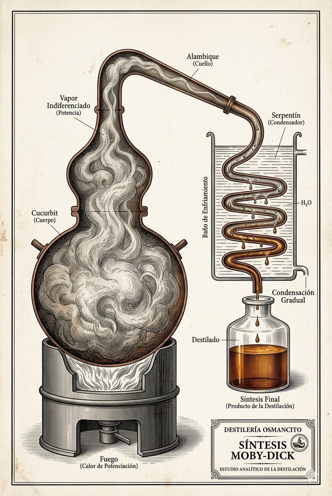
Un alambique de cobre —cuerpo curvo, cuello largo, serpentín que conduce hacia un recipiente de vidrio— visto en corte transversal, como si la sección del metal fuera transparente. El vapor dentro del cuerpo no tiene forma todavía: es potencia. En el serpentín, el vapor se condensa en gotas. En el recipiente final, un líquido oscuro y translúcido que no existía antes del proceso. El acto es construir la visión total desde el análisis completo: encarnarlo sin resumirlo, cartografiarlo entero, ver lo que ninguna parte pudo ver desde adentro.
El libro no es sobre la ballena. Nunca fue sobre la ballena.
La ballena es el objeto sobre el que Melville puso todo lo que no podía decir directamente: la imposibilidad de conocer completamente cualquier cosa que importe, el costo de querer conocerla de todas formas, y la pregunta de qué hace un hombre cuando el universo no responde. Ahab no persigue a un animal —persigue la respuesta a una pregunta que el universo no tiene obligación de responder. Y el libro que lo describe hace exactamente lo mismo: persigue el agotamiento de su propio objeto y demuestra, capítulo tras capítulo, que el agotamiento es imposible.
Lo que el análisis completo revela es que Moby-Dick tiene dos libros simultáneos que nunca se separan completamente. El primero es el libro de Ahab: la voluntad llevada hasta su límite, la grandeza que destruye lo que toca, la tragedia del hombre que organizó todo su ser alrededor de un punto único y fue arrastrado al fondo por la cuerda de su propio arpón. El segundo es el libro de Ishmael: el hombre que observó, que hizo el inventario, que sobrevivió flotando en el ataúd de su amigo muerto, y que convirtió la destrucción en lenguaje. El primero es lo que el lector recuerda. El segundo es lo que el libro propone.
Ishmael no es el héroe. Es la postura. La postura del que no puede no ir al mar, que elige la obra de la caza aunque no sea el que lanza el arpón, que mantiene la distancia suficiente para no ser arrastrado pero la proximidad suficiente para que lo que describe tenga calor. La postura del testigo que sabe que testificar no cambia lo que ocurrió y lo hace de todas formas, porque es lo único que tiene. El libro es el acto de testificar.
Lo que el análisis revela que ningún instrumento aislado podía ver: la relación entre Ishmael y Queequeg es el argumento del libro, no su ornamento. Todo lo que el libro hace —la enciclopedia, la tragedia, la filosofía, el humor— descansa sobre ese vínculo que precede a cualquier categoría, que no necesita nombre para ser real, y que al final produce el único objeto que flota: el ataúd que Queequeg pidió para su propia muerte y que sostiene a Ishmael sobre el agua. El libro más ambicioso de la literatura americana sobrevive gracias a un objeto construido por el amor de un hombre que el corpus nunca dejó hablar desde adentro.
Esa paradoja es el corazón del libro y también su falla y también su grandeza. El corpus que no pudo darle perspectiva interior a Queequeg lo convirtió en el personaje que salva al único superviviente con el objeto que construyó antes de que ninguno de los dos supiera que sería necesario. El reconocimiento que el corpus no otorgó en vida lo otorgó en la forma que más pesa: la permanencia.
El océano al final sigue rodando. No como imagen de la indiferencia cósmica solamente. Como imagen de la condición bajo la que ocurre todo lo que importa: sin testigo, sin registro, sin que el mundo natural sepa que algo ocurrió sobre él. Y sin embargo el libro existe. Ishmael flotó. El Rachel lo recogió. Alguien contó.
Eso es suficiente. No como consuelo. Como hecho.
Dónde vive la densidad real
No en los tres días de la cacería final, aunque ahí viva la mayor intensidad narrativa. La densidad real vive en tres zonas que los instrumentos fueron descubriendo de forma convergente:
La primera es la zona Ahab-Pip: los capítulos 93, 99 y 129, donde la ruptura de Pip y su relación con Ahab producen la temperatura más alta del corpus. Dos hombres rotos de maneras opuestas que se reconocen sin poder salvarse mutuamente. Ahí late lo más vivo del libro.
La segunda es la zona de los no-actos: los capítulos 109, 123 y 132, donde Starbuck con el mosquete y Ahab en la sinfonía sostienen la posibilidad de un mundo distinto y la dejan ir. La densidad aquí no es de acción sino de inacción cargada —lo que no ocurrió como el motor real de lo que ocurrió.
La tercera es dispersa pero consistente: la relación Ishmael-Queequeg, que aparece en los capítulos 3-4, 10-12, 78, y el Epílogo. No vive en una zona concentrada sino distribuida a lo largo del corpus como la urdimbre del telar —siempre presente, raramente visible como tal.
Las zonas de alta y baja presión
Alta presión: caps. 36, 42, 93, 99, 109, 129, 132, 133-135. Los momentos donde el corpus se acerca más a lo que no puede decir directamente.
Baja presión: los capítulos enciclopédicos de cetología del bloque 7-8 en particular, y los capítulos de transición cómica que el corpus inserta sistemáticamente después de los de mayor peso. La baja presión no es debilidad —es el mecanismo de alivio que permite que la alta presión no destruya al lector antes del final.
Los ejes de tensión que atraviesan el corpus entero
Saber / no poder saber. La enciclopedia que demuestra la inagotabilidad de su objeto. La frente lisa del cachalote. La ballena sin perspectiva interior. La imposibilidad de clasificar el surtidor.
Actuar / no poder actuar. Los no-actos de Starbuck. La sinfonía. La tripulación que no se amotina. La supervivencia de Ishmael como no-acción que produce el único resultado positivo.
Nombrar / no poder nombrar. “Llámenme Ishmael.” El ataúd que no se llama reconocimiento. El matrimonio de Queequeg que el corpus no confirma ni niega. La ballena blanca que cada época lee de manera diferente.
El territorio que el corpus bordea sin cruzar
La perspectiva de la ballena. El interior de Queequeg. La vida de las mujeres que esperan en tierra. La posibilidad del arrepentimiento de Ahab. El corpus los rodea con precisión —los nombra lo suficiente para que su ausencia sea sensible— y no cruza ninguno.
Existe una contradicción entre lo que el instrumento Apolo declaró y lo que emerge del conjunto.
Apolo declaró que el elemento estructural más importante del libro es Ishmael —que es Ishmael quien sostiene los registros incompatibles del corpus. Es verdad. Pero el conjunto revela algo que corrige esa afirmación sin invalidarla: lo que sostiene a Ishmael —lo que hace posible que el testigo sobreviva para contar— es Queequeg. Y Queequeg no es un elemento estructural en el análisis de Apolo: es un personaje secundario con función de contraste.
La contradicción: el corpus está estructurado alrededor de Ishmael como voz y como postura, y esa estructura descansa sobre una relación que el corpus sistemáticamente suprime —niega perspectiva interior, no nombra, trata como ornamento afectivo. El elemento más importante de la arquitectura del libro es también el más invisible en esa arquitectura.
Esto no se resuelve. Es el hallazgo más valioso del conjunto: Moby-Dick es un libro que no sabe que su fundamento es lo que decidió no ver completamente. El corpus que demuestra la imposibilidad de conocer completamente su objeto está construido sobre un vínculo que no pudo conocer completamente. La proposición godeliana del Bucle y la ceguera del Testigo del Testigo y la asimetría del Umbral del Reconocimiento convergen aquí en un solo punto: el libro que más ha influido en la literatura americana del siglo XX descansa sobre la relación entre dos hombres —uno de los cuales el corpus nunca dejó hablar.
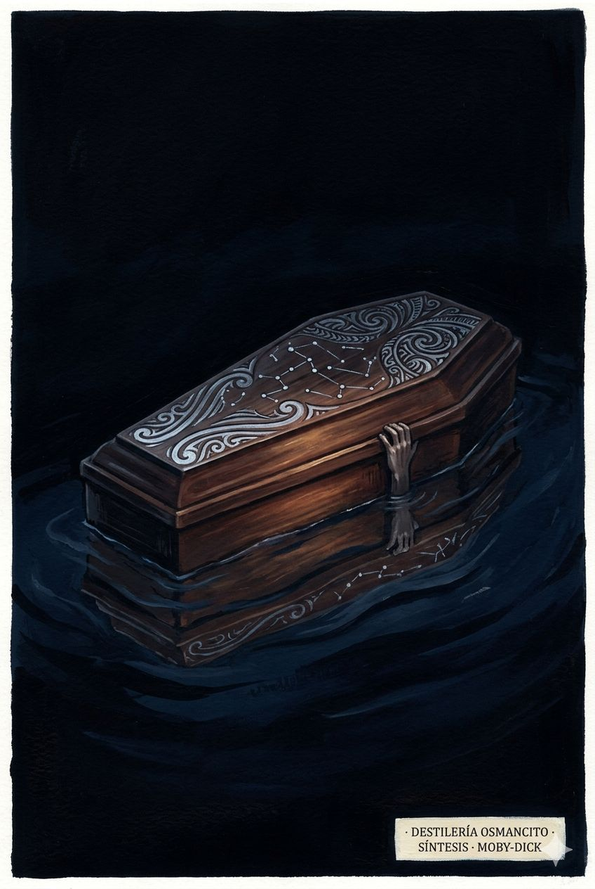
Un ataúd de madera oscura y pulida flota en posición horizontal sobre una superficie de agua completamente negra, visto desde una perspectiva levemente cenital y lateral que muestra tanto la superficie del ataúd como su reflejo en el agua. La tapa lleva grabados en bajo relieve que son simultáneamente tatuajes polinesios y mapas de constelaciones: figuras curvas, espirales, líneas que conectan puntos distantes, el lenguaje de un cuerpo que no está adentro pero que está inscrito en la madera. Una mano —apenas visible, aferrada al borde lateral del ataúd, sin brazo ni cuerpo visibles— indica que alguien flota sostenido por este objeto en la oscuridad del agua. El horizonte no existe: el agua y el cielo son el mismo negro profundo sin distinción. La única luz proviene de una fuente imposible de localizar que ilumina la madera del ataúd desde abajo, como si el objeto mismo fuera fuente de calma en el océano sin luz. El ataúd construido para contener la muerte sosteniendo la única vida que sobrevivió.
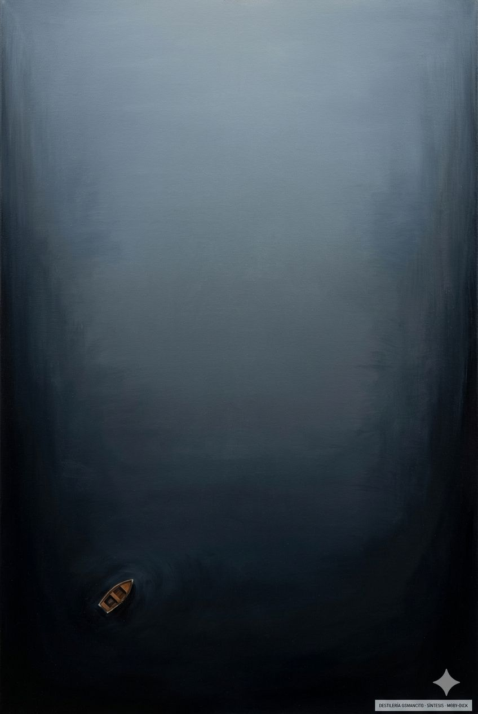
Vista aérea extrema de un océano absolutamente quieto —sin olas, sin espuma, sin movimiento visible— en el momento inmediatamente posterior a que algo enorme ocurrió en él. La superficie es perfecta: ningún rastro de madera, ningún cuerpo, ninguna cuerda, ningún arpón. El agua tiene el color de acero pulido en el centro y se oscurece hacia los bordes hasta el negro. En la esquina inferior izquierda, apenas distinguible contra el agua oscura, un objeto flotante de color madera: demasiado pequeño para identificar desde esta altura, pero presente. Lo que el océano no conservó —el barco, los treinta hombres, la obsesión de cuarenta años— y lo que sí conservó: el único objeto que no tenía propósito de sobrevivir. La imagen es la última oración del libro: the great shroud of the sea rolled on as it rolled five thousand years ago.
Primer plano extremo de la frente de un cachalote —lisa, sin arrugas, sin expresión, sin información sobre lo que está detrás. La superficie ocupa casi toda la imagen: es blanca en el centro, con el blanco que no es color sino ausencia de color, y se curva levemente hacia los bordes donde el tono se oscurece en un gris frío. No hay ojos visibles —los ojos del cachalote están en los costados, fuera del encuadre. No hay mandíbula visible. No hay nada excepto la superficie que detiene al observador: el misterio no está detrás de la frente, la frente es el misterio. En los bordes de la imagen, casi invisible, la textura del agua oscura que rodea al animal. La frente no amenaza. No promete. Existe con la indiferencia de algo que lleva existiendo antes de que hubiera preguntas que hacerle.
Líneas de perspectiva convergiendo hacia un punto fuera del plano de la imagen —el punto de fuga está detrás del papel, o más allá del horizonte, o en ningún lugar físico. Las líneas son cuerdas tensas que cruzan el espacio marino de la imagen: cabos, jarcias, horizontes, la línea del bauprés. Todas apuntan hacia el mismo lugar invisible. El acto es leer el análisis acumulado como si fuera el corpus —encontrar la suposición no declarada hacia la que todas las miradas convergen, la ausencia que las organiza.
El sistema de instrumentos que analizó Moby-Dick tenía un punto ciego que ningún instrumento nombró directamente: creyó estar analizando un corpus cuando estaba reproduciendo la experiencia de leerlo. Cada instrumento que describió la imposibilidad de conocer completamente a la ballena demostró, en el acto de describirlo, que tampoco podía conocer completamente al corpus. El análisis hizo con el libro exactamente lo que el libro hace con la ballena. Eso no invalida el análisis —lo convierte en su objeto más honesto.
Víspera — El corpus antes de ser tocado. Produjo imágenes visuales que anticipan el análisis como actos, desde la temperatura emocional del corpus en estado puro.
Recepción — Orientación inicial: qué es el corpus como objeto, quién lo pobló, sus tensiones fundantes. Mirada de primer contacto y diagnóstico.
Narraciones — Indexación de los eventos del corpus por intensidad viva. Mirada de lo que pasa, no de lo que se argumenta.
Joyería (14 bloques) — Estuche por estuche: mapa de tensiones, fragmento y joyas por capítulo. La mirada más granular del conjunto: qué cristaliza en pasaje recuperable.
Batimetría — Estratigrafía de acceso: qué está vivo, sepultado, cifrado, borrado, ausente. Mapa de condiciones de acceso al corpus.
Apolo — Análisis estructural: cómo está construido, si aguanta, el imán y el nodo de mayor integración. Mirada de arquitecto.
Dioniso — Análisis de pulso: lo que el corpus produce antes de ser pensado, sus zonas vivas, sus síntomas, sus cuatro lecturas. Mirada de lo que late.
Hermes — Condiciones de producción: geografía, historia, economía, posición del autor. Mirada de lo que hizo posible que el corpus existiera tal como existe.
Menú Emergente — Operaciones que el análisis acumulado solicita. Seis generadas, seis desarrolladas: lectura desde la ausencia calculada, personajes suprimidos, cartografía de no-actos, crítica del romanticismo americano, economía del Pequod, el ataúd como objeto.
Márgenes — Las pérdidas del corpus y su estela. Lo que no pudo contener y lo que generó más allá de sí mismo.
Testigo del Testigo — El observador observado: selecciones y omisiones sistemáticas de Ishmael, los quiebres del método, la subjetividad no declarada, lo que la máscara protege.
Bucle — Los mecanismos del corpus aplicados al corpus. Diez mecanismos, diez resultados: iluminación, tensión o confirmación. La proposición godeliana del corpus.
Umbral del Reconocimiento — El sistema de reconocimiento del corpus: quién puede ser reconocido, cuándo, a qué precio, qué destruye el reconocimiento cuando llega.
Historia de los Efectos — Seis momentos de inflexión en la recepción, lo que cada época no podía leer, el corpus que el tiempo construyó, la ceguera que aún no terminó.
Síntesis — La visión total: texto autónomo, cartografía completa, el hallazgo que ninguna parte vio sola, tres imágenes de cierre.
Todas las miradas —arquitectural, experiencial, contextual, granular, estructural— convergen hacia un punto que ningún instrumento señaló como objeto de análisis pero que organizó todas sus elecciones:
La imposibilidad de conocer completamente como condición del valor.
No como tema declarado —como suposición operativa. El análisis consideró que los corpus inagotables son más valiosos que los agotables; que la resistencia al conocimiento completo es una propiedad deseable; que lo que permanece sin resolverse después de todos los instrumentos es más interesante que lo que quedó resuelto. Ese juicio no fue declarado en ningún instrumento. Operó por debajo de todos.
¿Está ese punto dentro del análisis o fuera de él? Fuera. El análisis puede señalarlo —acaba de hacerlo— pero no puede demostrarlo desde adentro de sus propias reglas. No tiene instrumento para responder por qué la inagotabilidad sería preferible al cierre, por qué la resistencia al conocimiento sería una virtud y no una limitación. Esa pregunta requeriría salir del sistema para responderla.
¿Es alcanzable? En el sentido de Panofsky: infinitamente distante. El punto de fuga organiza el campo pero no puede ser habitado. En el momento en que el análisis intentara ocuparlo —en el momento en que declarara explícitamente que la inagotabilidad es el valor supremo del corpus— dejaría de ser análisis y se convertiría en ideología.
El corpus tiene interior. El sistema asume que hay algo debajo de la superficie —zonas sepultadas, cifradas, ausentes— y que acceder a esas zonas es el trabajo del análisis. Un sistema que no compartiera esa suposición leería el corpus como superficie exclusivamente y encontraría otras cosas.
Lo no declarado es más interesante que lo declarado. El sistema privilegia sistemáticamente los hallazgos que el corpus no puede ver sobre sí mismo por encima de los que declara explícitamente. Esa jerarquía no está justificada desde adentro —es una elección de valor que opera como condición de operación.
El autor deja huellas involuntarias. El Testigo del Testigo, el Dioniso, el Punto de Fuga asumen que lo que el corpus hace sin saber que lo hace es información más valiosa que lo que hace conscientemente. Esa suposición es filosóficamente disputada —hay tradiciones hermenéuticas que consideran la intención del autor como la única evidencia legítima— y el sistema la descarta sin haberla debatido.
La tensión es más rica que la resolución. El sistema prefiere sistemáticamente los hallazgos que producen contradicción sostenida sobre los que producen síntesis estable. Cuando la Síntesis declaró que la contradicción Apolo/Queequeg no se resuelve sino que se nombra, estaba aplicando ese valor. No lo justificó. Lo practicó.
El tiempo es un instrumento legítimo de lectura. La Historia de los Efectos asume que las lecturas posteriores son información válida sobre el corpus —que lo que el siglo XX vio en Moby-Dick dice algo verdadero sobre el libro aunque Melville no lo hubiera podido ver. Esa suposición es hermenéuticamente específica: requiere creer que el significado de un texto no está fijado en su momento de producción.
Lo que queda fuera por definición: cualquier corpus que sea completamente transparente a sí mismo, que no tenga zonas de acceso diferencial, que produzca exactamente lo que declara producir y nada más. El sistema no tiene instrumentos para ese corpus —o sus instrumentos producirían Resultado D (silencio) en todas las aplicaciones. El sistema necesita que el corpus tenga profundidad para poder operar.
El sistema porta una visión del mundo que puede formularse así: leer es una forma de habitar lo que no se puede poseer.
El análisis no cree que el texto pueda ser agotado —cada instrumento que intentó el agotamiento produjo residuo. No cree que el significado sea estable —la Historia de los Efectos mostró cómo el mismo corpus produce significados opuestos en épocas distintas sin que ninguno sea falso. No cree que la distancia analítica sea completamente alcanzable —el Testigo del Testigo mostró que el observador deja huella en lo que observa.
Lo que cree: que el acto de análisis tiene valor aunque no produzca posesión. Que el residuo —lo que permanece sin resolver después de todos los instrumentos— no es fracaso sino información. Que la relación entre el que analiza y lo que analiza es productiva precisamente porque no puede ser completamente simétrica.
Esa visión del mundo tiene una forma recognoscible en la tradición hermenéutica: es la postura del intérprete que asume que el texto siempre sabe más de lo que el intérprete puede extraer, y que esa asimetría es la condición de la posibilidad de la lectura como práctica sostenida. Sin esa asimetría, no habría razón para releer.
El análisis también porta una creencia sobre la relación entre el cuerpo y el pensamiento: los instrumentos que más densidad producen —Dioniso, Joyería, Testigo del Testigo— son los que toman en serio la experiencia del lector como dato analítico, no solo la estructura del texto. Esa creencia no está declarada en ningún instrumento pero organiza la jerarquía de los hallazgos.
La recepción de lectores ordinarios. El análisis estudió el corpus, su estructura, su contexto histórico, y la recepción académica y canónica. Lo que no estudió: lo que el corpus produce en lectores que no son académicos ni críticos —los que lo leen sin instrumentos, los que lo abandonan a mitad, los que lo leen a los dieciséis años y los que lo leen a los cincuenta y encuentran cosas opuestas. El sistema no tiene instrumento para la lectura sin método, que es la lectura más frecuente y posiblemente la más honesta.
La materialidad del texto como objeto físico. El libro como objeto —su peso, su extensión, el tiempo que tarda en leerse, lo que significa leerlo en un vuelo frente a leerlo en un mes— no fue analizado. La Descripción Sensorial de Dioniso lo tocó brevemente. Ningún instrumento habitó esa dimensión.
El humor. El corpus es intermitentemente cómico —Stubb, el sermón a los tiburones, Try Pots, la toga de piel de ballena. El análisis registró el humor como válvula de presión y como síntoma (el humor que aparece después de los momentos de mayor peso), pero no lo analizó como sistema propio. El humor de Moby-Dick tiene una lógica que ningún instrumento exploró en profundidad.
La dimensión musical concreta. La partitura de Dioniso nombró a Debussy. Ningún instrumento analizó el ritmo del corpus a nivel de frase, de párrafo, de capítulo como unidad sonora. La sintaxis acumulativa de Melville —el período largo que añade cláusulas hasta que la oración pesa— fue mencionada en Apolo pero no habitada analíticamente.
La pregunta de si el análisis cambió algo. El sistema no tiene instrumento para evaluar si el análisis que produjo sobre el corpus modificó la lectura del corpus de manera que pueda ser verificada. No sabe si lo que encontró es real o si es el reflejo de sus propias suposiciones devuelto por la superficie del texto. Esa pregunta es la más incómoda que el sistema puede plantearse, y la evitó en todos los instrumentos.
El concepto que ejerce más gravedad sobre todas las elecciones del análisis, sin ser objeto de análisis, es: la inagotabilidad como virtud epistémica.
No como descripción de una propiedad —como valoración implícita. El sistema trató la inagotabilidad del corpus como su atributo más valioso. Cada instrumento que demostró que el corpus no podía ser agotado fue recibido como hallazgo positivo. Cada instrumento que produjo cierre —que respondió una pregunta definitivamente— fue tratado como menos interesante que el que sostuvo la ambigüedad.
¿Coincide el imán del análisis con el imán del corpus?
El análisis identificó en Apolo que el imán del corpus es la blancura —el vacío proyectable, la ausencia de contenido propio que hace posible cualquier proyección. El imán del análisis es la inagotabilidad —la resistencia al cierre que hace posible seguir leyendo.
Los dos son distintos y están en resonancia. La blancura produce inagotabilidad: un objeto sin color propio puede recibir cualquier proyección indefinidamente. La inagotabilidad requiere algo parecido a la blancura: un objeto que no se cierre sobre sí mismo, que no devuelva la proyección con una respuesta definitiva.
La resonancia es casi perfecta —y eso es una señal de alerta. Cuando el imán del análisis coincide casi perfectamente con el imán del corpus, existe la posibilidad de que el análisis haya estado produciendo resonancia en lugar de análisis. Que haya estado amplificando lo que el corpus ya era en lugar de encontrar lo que el corpus no sabía que era. La tensión no se resuelve. Se nombra.
El último instrumento que produjo algo genuinamente nuevo fue el Umbral del Reconocimiento, con el hallazgo sobre el grito de Tashtego —el acto más importante del día final del corpus realizado por el personaje al que el análisis menos había reconocido— y la formulación de que el reconocimiento en el corpus confirma al reconocido en exactamente la posición que lo aisla.
El punto donde el sistema empezó a confirmar lo que ya sabía fue Historia de los Efectos. Los seis momentos de inflexión son reales y bien construidos, pero la mayoría de sus hallazgos —que cada época tiene sus cegueras, que el corpus que el tiempo construyó es más grande que el libro original, que la ceguera sobre la perspectiva de la ballena no ha terminado— ya estaban presentes en los instrumentos anteriores en formas distintas. La Historia de los Efectos los organizó cronológicamente pero no añadió tensión nueva.
La Síntesis recuperó la productividad al formular la contradicción entre Apolo y el conjunto —que el fundamento del corpus es lo que el corpus no pudo ver completamente— pero ese hallazgo podría haberse producido antes del instrumento de síntesis si algún instrumento anterior hubiera preguntado directamente: ¿qué sostiene a Ishmael?
La dirección que habría producido algo genuinamente diferente: un análisis del humor del corpus como sistema propio. El humor de Moby-Dick —la comedia de Stubb, el sermón a los tiburones, la toga de piel de ballena, el capítulo sobre la cena sobre el cadáver— no es solo válvula de presión. Tiene una lógica propia sobre la relación entre la grandeza y lo grotesco que ningún instrumento habitó. Ese territorio permanece virgen.
El análisis puede señalar que el corpus es inagotable, pero no puede demostrar desde adentro de sus propias reglas que él mismo no lo agotó.
El sistema produjo, sin declararlo, una teoría del superviviente como postura analítica.
Ishmael sobrevive porque no hizo nada decisivo —observó, describió, hizo el inventario, mantuvo la distancia justa. El análisis hizo lo mismo con el corpus: no intentó poseerlo, no intentó agotarlo, mantuvo la distancia suficiente para que el objeto siguiera siendo objeto y no se convirtiera en reflejo del observador.
El sistema reprodujo la postura de Ishmael sin saberlo. Sus instrumentos son los de alguien que aprendió —de Melville, del corpus, de la lectura sostenida— que la única forma de sobrevivir al contacto con algo que excede la escala es mantener la distancia correcta. No la distancia de la frialdad: la distancia del que cuida lo suficiente para no aplastarlo con el peso de su propia necesidad de comprensión.
El sistema no sabe que aprendió eso. Lo practicó.
La ausencia más sistemática del conjunto es la que ningún instrumento habitó: el humor como sistema.
El análisis registró el humor como síntoma (Dioniso), como válvula de presión (Síntesis), como rasgo del narrador (Testigo del Testigo). Ningún instrumento preguntó: ¿qué teoría del conocimiento porta el humor de este corpus? ¿Qué relación tiene el chiste con la ballena muerta, el sermón a los tiburones, la toga de piel? ¿Por qué el corpus que describe lo más solemne —la imposibilidad de conocer, la muerte de treinta hombres— lo hace constantemente reír?
El instrumento que ese territorio exige: una lectura desde lo cómico como epistemología —un método para identificar qué produce el humor en corpus de alta densidad filosófica, qué visión del conocimiento porta la risa en el momento en que aparece, qué destruye o suspende el humor que el argumento serio no puede suspender. Aplicable a cualquier corpus donde el humor y la gravedad coexistan sin resolverse en ninguna de las dos direcciones.
La especificación: el instrumento no busca explicar el humor —eso lo mataría. Busca identificar la función epistemológica del humor: qué tipo de verdad solo puede decirse cuando el texto está riéndose, y por qué.
Capas de escritura sobre el mismo pergamino —la escritura más antigua raspada pero no completamente borrada, visible como fantasma bajo el texto que vino encima, que a su vez está parcialmente cubierto por una tercera capa. Tres tiempos de escritura sobre el mismo soporte, ninguno completamente legible, todos presentes. En el cruce de las tres capas, en el centro del pergamino, aparece algo que ninguna capa escribió: una figura que emerge solo del solapamiento, como un texto que ningún autor redactó. El acto es buscar lo que ningún instrumento buscaba: el texto debajo del texto que emerge en el espacio entre todos los análisis.
Debajo de todos los análisis —debajo de la arquitectura, el pulso, el contexto, la joyería, la batimetría, los márgenes, el reconocimiento, los efectos, la síntesis y el punto de fuga— hay un texto que ninguno buscó porque ninguno podía verlo desde adentro.
Es este: Moby-Dick es un libro sobre lo que ocurre cuando alguien nombra algo que no tiene nombre y ese acto de nombrar lo destruye a él pero no lo destruye a ello.
Ahab nombra a la ballena. Le da un nombre propio —Moby Dick— y en ese acto la convierte en el objeto de su vida entera. El nombre hace posible la persecución. Sin nombre, no hay destino; sin destino, no hay Pequod, no hay viaje, no hay hundimiento. El nombre es el primer acto de la tragedia y el más irreversible: una vez que algo tiene nombre, ya no puede ser indiferente.
Pero lo nombrado no cambia. La ballena antes y después del nombre de Ahab es la misma ballena. El océano antes y después del hundimiento rueda como rodaba. El nombre que Ahab le puso no entró en el objeto —entró en Ahab. Y lo que entró en Ahab no salió.
Ishmael también nombra. Nombra dieciséis idiomas para la ballena. Nombra cada especie, cada órgano, cada maniobra de la caza. Nombra a Queequeg, a Starbuck, a Pip, a los treinta hombres que murieron. Nombra lo que vio antes de que el océano lo cubriera. Y a diferencia de Ahab, ese acto de nombrar no lo destruye: lo sostiene sobre el agua. El libro que escribe es el ataúd que flota.
La diferencia entre los dos no es de intensidad ni de inteligencia ni de virtud. Es de dirección. Ahab nombra para poseer —para convertir el objeto en algo que le responda. Ishmael nombra para preservar —para que lo que ocurrió no desaparezca completamente en el océano que no recuerda nada.
Y aquí está el texto debajo del texto, el que ningún instrumento buscó: Moby-Dick no es un libro sobre la imposibilidad del conocimiento. Es un libro sobre los dos usos del lenguaje ante lo que no puede ser conocido.
El primer uso: nombrarlo como enemigo. Convertir la indiferencia del cosmos en voluntad hostil, darle cara, declararle la guerra. Ahab hace esto. Y el cosmos, que no tiene voluntad ni hostilidad, simplemente continúa. La cuerda del arpón rodea el cuello de Ahab no como venganza sino como mecánica. La ballena no persiguió al Pequod —el Pequod persiguió a la ballena. La indiferencia no se convierte en respuesta cuando se le declara la guerra. Solo parece hacerlo, desde adentro, porque el que declaró la guerra ya no puede distinguir entre lo que ocurre y lo que le ocurre.
El segundo uso: nombrarlo como testigo. Registrar lo que fue, lo que pesó, lo que tuvo temperatura y nombre propio antes de desaparecer. Ishmael hace esto. Y el resultado no es victoria ni conocimiento ni posesión: es el libro. El único objeto que sobrevivió al naufragio además del ataúd.
Lo que el palimpsesto revela: los dos usos del lenguaje ante lo inabarcable no son opciones filosóficas abstractas. Son las dos posturas disponibles ante cualquier cosa que exceda la escala humana —cualquier pérdida, cualquier indiferencia, cualquier objeto que no devuelva la mirada. Se puede declararle la guerra. O se puede hacer el inventario.
El corpus propone, sin declararlo, que hacer el inventario es lo que permite seguir. No como resignación. Como el único acto que no consume al que lo hace mientras intenta consumir lo que nombra.
Melville eligió hacer el inventario. Lo que eso le costó está en los márgenes. Lo que produjo está en el libro que existe.
Una prensa de tornillo —la prensa tipográfica o la prensa de vino, ambas sirven— con el tornillo en su posición de máxima presión, la plataforma superior tocando casi la inferior. Entre las dos plataformas, algo que ha sido comprimido hasta su forma mínima: no se identifica la materia, solo la forma que la presión dejó —un plano, una oblea, lo irreducible. El acto es aplicar presión sobre el inventario de hallazgos hasta encontrar lo que no puede reducirse más —abrir primero, colapsar después.
El imán del corpus no es la ballena sino la blancura —el vacío que no tiene contenido propio y por eso puede recibir cualquier proyección, haciendo posible que el mismo objeto sea simultáneamente la malicia del universo para Ahab, la justicia divina para el capitán del Town-Ho, y el espejo del lector que llega con su propio sistema de significado. — Apolo
El nodo de mayor integración del corpus es el capítulo del doblón, no el capítulo de la ballena: el punto donde más líneas convergen es el espejo múltiple donde Pip ve el mecanismo completo y no puede decirlo, y el imán y el nodo divergen —la blancura aterra porque está vacía, el doblón seduce porque parece lleno, y los dos juntos formulan la pregunta central del libro en forma estructural. — Apolo
La relación entre Ishmael y Queequeg es el argumento del libro, no su ornamento: el único vínculo genuinamente igualitario del corpus es el que el corpus sistemáticamente suprime, y el ataúd que Queequeg construyó para su propia muerte es el único objeto que sobrevive al naufragio y sostiene al narrador sobre el agua. — Síntesis / Menú Emergente
Los momentos más cargados del corpus no son los de mayor acción sino los de mayor inacción: los dos encuentros de Starbuck con el mosquete, la sinfonía donde Ahab podría ceder y no cede, y la tripulación que llega al límite del motín y no actúa —estos no-actos forman un sistema paralelo al de las acciones declaradas y son el motor moral real del libro. — Menú Emergente
El corpus que describe la imposibilidad de conocer completamente un objeto está construido sobre el vínculo que no pudo conocer completamente: Queequeg es el fundamento de la arquitectura que Apolo atribuye a Ishmael, y el corpus que no pudo darle perspectiva interior lo convirtió en el personaje que salva al único superviviente con el objeto que construyó sin saber que sería necesario. — Síntesis
La frente del cachalote —lisa, sin expresión, sin información sobre lo que está detrás— es el modelo estructural del narrador: Ishmael describe el exterior de todo con precisión extraordinaria y no da información sobre su propio interior; el libro que no puede entrar en la ballena tampoco puede entrar en el hombre que lo cuenta. — Bucle
El corpus porta una ética no declarada: los personajes que más cerca están de la verdad completa —Ahab que nombra lo que persigue, Pip que vio el fondo del océano— son los más destruidos; los que sobreviven mantienen distancia de la verdad: Ishmael que duda, Starbuck que prefiere la razón práctica. — Dioniso
La supervivencia de Ishmael es la proposición godeliana del corpus: el libro puede señalar la imposibilidad de conocer completamente su objeto central pero no puede demostrar desde adentro de sus propias reglas que él mismo no fue agotado; esa demostración solo puede venir de afuera —de los lectores que siguen volviendo— y eso es exactamente lo que el libro no puede controlar. — Bucle
El grito de Tashtego que avista la ballena el tercer día —el acto más importante del día final— pertenece al personaje al que el corpus menos ha reconocido con anterioridad; Tashtego gana el doblón; el corpus no lo menciona; la brecha entre el acto y su reconocimiento es, en ese instante, perfecta. — Umbral del Reconocimiento
La relación entre las pérdidas del corpus y su estela es proporcional: a cada desaparición adentro corresponde una generación afuera de escala comparable, como si pérdida y estela fueran el mismo movimiento visto desde dos lados del mismo borde. — Márgenes
La blancura como vacío proyectable y la inagotabilidad como virtud epistémica son el mismo mecanismo visto desde adentro y desde afuera: el corpus no tiene posición fija sobre su propio objeto, y el análisis no tiene posición fija sobre el corpus, y esa doble ausencia de posición fija es la condición de que ambos sigan siendo productivos. — Punto de Fuga
El sistema de instrumentos reprodujo sin saberlo la postura de Ishmael: no intentó poseer el corpus, mantuvo la distancia suficiente para que el objeto siguiera siendo objeto, hizo el inventario en lugar de declararle la guerra —y esa postura es exactamente lo que el palimpsesto identificó como el segundo uso del lenguaje ante lo inabarcable. — Punto de Fuga / Palimpsesto
El texto debajo de todos los textos —lo que ningún instrumento buscó porque ninguno podía verlo desde adentro— es la distinción entre los dos usos del lenguaje ante lo que excede la escala humana: nombrarlo como enemigo, que es lo que Ahab hace y lo que lo destruye; o hacer el inventario, que es lo que Ishmael hace y lo que produce el libro. Los dos usos están disponibles ante cualquier pérdida, cualquier indiferencia, cualquier objeto que no devuelva la mirada. — Palimpsesto
Nombrar lo que no responde no lo hace responder. Hace algo distinto: hace que el que nombra pueda seguir.
El océano no sabe que es el escenario de nada. No sabe que sobre él ocurrió la persecución más sostenida que un hombre haya emprendido contra una criatura viva. No sabe que un barco se hundió en él, que treinta hombres murieron, que uno flotó en un ataúd durante un día y una noche antes de ser recogido. El océano rodaba antes y rueda después con la misma indiferencia perfecta que los cinco mil años anteriores. Eso no es poesía. Es la condición.
Y sin embargo alguien contó.
Ahab llegó al mismo objeto —la indiferencia del cosmos encarnada en el blanco de la ballena— y le declaró la guerra. Le dio nombre, le construyó una cuerda, forjó el arpón en sangre de paganos, y cuando finalmente pudo lanzarlo la cuerda le rodeó el cuello y lo arrastró al fondo. El cosmos no lo mató. La mecánica del cosmos lo mató: la misma cuerda que conecta al cazador con la presa, el mismo mecanismo que Ishmael describió treinta capítulos antes como el peligro cotidiano de todos los balleneros. La indiferencia no se convierte en respuesta cuando se le declara la guerra. Simplemente continúa siendo lo que es, con la misma geometría de siempre, y la geometría tiene sus propias consecuencias.
Ishmael llegó al mismo objeto y hizo otra cosa. Hizo el inventario. Nombró las dieciséis lenguas para la ballena. Catalogó las especies, las anatomías, los métodos, los hombres. Describió la blancura sin agotarla. Describió a Queequeg sin entrar en él. Describió a Ahab con el amor del que reconoce en el exceso algo que conoce desde adentro y sabe que no puede permitirse. Y cuando todo se hundió, flotó en el ataúd que pertenecía a otro hombre —un hombre que lo había reconocido antes de que hubiera categoría para ese reconocimiento— y fue recogido por el barco al que Ahab había negado su ayuda.
No sobrevivió por mérito. Sobrevivió por postura y por objeto flotante y por la mecánica de un vórtice que lo lanzó fuera en lugar de adentro. Y con esa supervivencia hizo lo único que estaba disponible: convirtió la destrucción en lenguaje. No para entenderla. No para extraer una lección. Para que lo que ocurrió no desapareciera completamente en el océano que no recuerda nada.
Eso es lo que hace el lenguaje cuando funciona. No conoce. No posee. No agota. Preserva el peso de lo que fue —la temperatura de la pierna fantasma que todavía duele, el brazo de Queequeg por encima mientras duerme, la pipa que ya no sabe a nada, el mosquete devuelto a su lugar dos veces, el día perfecto en que Ahab estuvo a punto. Preserva ese peso en una forma que puede ser cargada por alguien que no estuvo ahí. Que puede ser cargada dos siglos después. Que puede ser cargada por alguien que nunca ha visto el mar.
El libro existe porque Ishmael eligió hacer el inventario en lugar de declararle la guerra a lo que no responde. No como virtud —como la única operación disponible para el que quiere que algo permanezca. Ahab también quería que algo permaneciera. Quería que su herida importara, que el cosmos tomara nota, que la indiferencia se convirtiera en interpelación. El cosmos no tomó nota. Ishmael sí. Y la diferencia entre los dos actos —el que demanda respuesta y el que registra sin demandar— es la diferencia entre el naufragio y el libro.
El libro es lo que queda cuando alguien hace el inventario de lo que no pudo poseer.
El océano sigue rodando. Eso también está en el libro.
Una mesa de luz de diseñador —cristal iluminado desde abajo— con transparencias de imágenes superpuestas, hojas de contacto, fragmentos de ilustraciones en distintos estilos, todo visto desde arriba. La luz del interior atraviesa las capas y produce una imagen nueva en la intersección de todas —una figura que emerge del conjunto como síntesis visual del corpus, visible solo por la superposición. Tres pequeñas tarjetas a un costado tienen escritas las palabras: grabado · gouache · tinta. El acto es producir hacia afuera del ecosistema: proponer el set de imágenes finales como unidad coherente.
Hallazgo Apolo — el imán del corpus no es la ballena sino la blancura como vacío proyectable.
Una superficie que podría ser piel de ballena o podría ser cielo sin nubes o podría ser papel en blanco antes de que nadie escriba en él. No se sabe cuál. El blanco no es luminoso sino denso: tiene peso, tiene temperatura —la temperatura de lo que no tiene temperatura. En el centro exacto de la imagen, una mancha muy levemente más oscura que el resto —la sombra de algo que no está en la imagen, proyectada sobre la superficie desde una fuente de luz que tampoco está. Los bordes de la imagen se oscurecen hacia un gris frío muy gradual, como si la superficie tuviera horizonte pero el horizonte nunca llegara. No hay figura humana, no hay objeto reconocible, no hay referencia de escala. Solo la superficie y lo que la superficie hace al ojo: lo obliga a buscar algo donde no hay nada.
Hallazgo Apolo — el nodo de mayor integración es el doblón como espejo múltiple donde cada lector ve su propio rostro.
Una moneda de oro muy oscuro y desgastado, clavada en madera de barco por un clavo también desgastado, vista en primer plano extremo. La moneda llena casi todo el encuadre. En su superficie se distinguen grabados: un gallo sobre una cima, una torre, el signo de Escorpio —pero los grabados están parcialmente cubiertos por el reflejo de la madera que los rodea, como si la moneda estuviera devolviendo la imagen de su propio soporte. En los márgenes extremos de la imagen, casi fuera del encuadre, fragmentos de manos o siluetas que se acercan a la moneda desde distintos ángulos —no se ven sus rostros. El foco es la moneda. Lo que se percibe es que cada aproximación viene de una dirección distinta y que la moneda los recibe a todos igual: con la misma superficie brillante y desgastada, la misma promesa de oro que ya casi no es oro.
Hallazgo Síntesis/Menú Emergente — la relación Ishmael-Queequeg es el argumento del libro, no su ornamento.
Una cama estrecha en una posada de madera oscura, vista desde arriba en ángulo ligeramente oblicuo. La cama está deshecha —las sábanas revueltas, la almohada con la huella de dos cabezas. Sobre la colcha de remiendos, el brazo de alguien —un solo brazo, con tatuajes geométricos polinesios visibles desde la muñeca hasta el hombro— extendido hacia donde debería estar la otra persona que ya no está. La posición del brazo no es de abrazo consumado sino de la búsqueda del cuerpo que estuvo. Luz de madrugada entrando oblicua por una ventana pequeña, iluminando solo el brazo tatuado y el espacio vacío al que apunta. El resto de la habitación en sombra cálida.
Hallazgo Menú Emergente — los no-actos como sistema paralelo al de las acciones declaradas.
Un mosquete apoyado contra la pared curva de un corredor de madera de barco —el corredor es tan angosto que apenas cabe el arma, vista casi de frente pero con la curvatura del casco visible en la pared de fondo. El mosquete está iluminado por una franja de luz que viene de una rendija a la derecha —probablemente la luz del camarote del capitán filtrándose por debajo de la puerta. La luz toca el cañón del arma pero no llega al suelo ni a la pared completa. El resto del corredor en oscuridad. No hay mano sobre el arma. No hay figura visible. Solo el arma, la luz que la toca a medias, y la oscuridad que la rodea. Lo que la imagen sostiene no es el arma sino la pregunta de por qué nadie la tomó.
Hallazgo Bucle — la frente del cachalote es el modelo estructural del narrador: superficie sin información sobre lo que está detrás.
La frente de un cachalote, vista en primer plano extremo desde el lateral ligeramente frontal, ocupa casi toda la imagen. La superficie es blanca pero no luminosa —un blanco que absorbe la luz en lugar de reflejarla. La textura es visible: no lisa como el plástico sino como algo que ha vivido en el agua fría durante décadas, con microfisuras casi imperceptibles que no dicen nada. No hay ojos en el encuadre —los ojos del cachalote están en los costados, fuera de esta vista. No hay boca visible. Solo la frente: la superficie más grande del animal, la más visible, la que tiene menos información. El agua oscura del océano ocupa la porción inferior del encuadre, y el límite entre la frente y el agua es apenas distinguible porque los dos tienen casi el mismo valor tonal.
Hallazgo Dioniso — Pip en el océano: la enormidad del océano experimentada desde adentro sin retórica.
Una figura humana muy pequeña —casi un punto— flotando en posición vertical en el centro exacto de una extensión de agua que ocupa toda la imagen. El agua es negra con destellos azul abismal muy tenues. No hay horizonte visible: el agua y el cielo son el mismo negro, la misma textura, sin distinción. La figura es tan pequeña en relación al espacio que la rodea que el ojo tarda en encontrarla. No hay bote, no hay barco en el horizonte, no hay ninguna escala de referencia excepto la figura misma. Lo que la imagen produce no es la pequeñez de la figura —es la inmensidad del espacio que la rodea, que no tiene borde ni forma ni dirección. Solo está.
Hallazgo Umbral del Reconocimiento — el grito de Tashtego que avista la ballena, el acto más importante del día final, pertenece al personaje menos reconocido; gana el doblón; el corpus no lo menciona.
Un hombre en la cofa de un mástil —la plataforma de observación en lo alto, vista desde abajo en ángulo muy pronunciado que hace que el mástil parezca infinitamente alto. El hombre está de pie, con el brazo extendido hacia adelante en el gesto inequívoco de señalar algo en el horizonte. Su boca está abierta. Su postura es de quien acaba de gritar. Pero el cielo tormentoso alrededor absorbe el sonido —no hay ondas de sonido visibles, no hay nadie mirando hacia arriba, no hay respuesta visible desde abajo. El hombre señala algo que el encuadre no muestra. Lo que apunta es tan importante que destruiría la imagen si apareciera. Lo que la imagen muestra es el acto de señalar —la precisión del gesto, la certeza del brazo extendido— y la ausencia de testigos que lo reciban. Grabado en acero con aguatinta, paleta de negro, gris marino tormentoso y el blanco frío del cielo rasgado. Sin fotorrealismo. Etiqueta discreta en esquina inferior: DESTILERÍA OSMANCITO · DESTILADO DE IMÁGENES · MOBY-DICK. Relación de aspecto 2:3.
Hallazgos Bucle/Joyería — la pierna fantasma de Ahab: el dolor de un miembro que no existe, el primer síntoma de lo que la obsesión cuesta desde adentro.
Una pata de marfil apoyada contra la pared de madera de un camarote, vista de cerca. La pata está sola: no hay cuerpo que la lleve, no hay hombre visible. A un costado, sobre el suelo de madera, la sombra de una pierna humana —una sombra que no tiene fuente visible, proyectada en el ángulo incorrecto para corresponder a ninguna fuente de luz presente en la imagen. La sombra tiene la forma de una pierna entera, con rodilla y tobillo y pie, mientras la pata de marfil no tiene ninguna de esas articulaciones. Las dos coexisten en el mismo espacio: el objeto que reemplaza y la sombra de lo que fue reemplazado, que sigue ahí aunque ya no haya cuerpo que la proyecte. Acuarela con línea de tinta sobre papel verjurado, paleta de ocre envejecido del marfil, sepia oscuro de la madera, negro de la sombra, con el blanco del papel como la única luz disponible. Sin fotorrealismo. Etiqueta discreta en esquina inferior: DESTILERÍA OSMANCITO · DESTILADO DE IMÁGENES · MOBY-DICK. Relación de aspecto 2:3.
Hallazgo Márgenes / eje transversal — a cada pérdida adentro corresponde una generación afuera; el océano no registra nada de lo que ocurre sobre él.
Vista aérea extrema del océano —tan alta que las olas son apenas texturas y la escala humana ha desaparecido completamente. El agua es el protagonismo total: no hay barco, no hay figura, no hay costa, no hay horizonte diferenciado. La superficie del agua tiene el color del acero pulido en el centro, oscureciéndose hacia los bordes hasta el negro profundo. Hay movimiento implícito en la textura —el agua no está completamente quieta, hay una dirección general de la corriente visible en los patrones de luz— pero ese movimiento no indica nada, no conduce a ningún lugar reconocible. Es simplemente el movimiento del agua que siempre ha estado ahí y seguirá. En la esquina inferior derecha, tan pequeño que podría no estar, un fragmento de madera oscura flotando: no se puede saber si es un barco o un tablón o una ramita. No importa. La imagen no sabe lo que fue. Solo sabe que flota.
Hallazgo Palimpsesto — la distinción entre nombrar como enemigo y hacer el inventario como las dos posturas disponibles ante lo inabarcable.
Una mesa de madera oscura dividida visualmente por la luz en dos mitades. En la mitad izquierda, en sombra: un arpón con la punta en el aire, apuntando hacia algo fuera del encuadre, tenso como si estuviera a punto de ser lanzado. En la mitad derecha, en luz: una pluma de ave sobre un papel con escritura manuscrita muy densa, apretada, que cubre cada centímetro del papel. Las dos mitades no se tocan —hay un espacio de sombra entre ellas que las separa. El arpón y la pluma son objetos del mismo tamaño, la misma escala, la misma temperatura de material. La diferencia no es de tamaño ni de valor sino de dirección: el arpón apunta hacia afuera, la pluma apunta hacia adentro del papel. La luz que ilumina la pluma viene de una fuente suave y estable; la que bordea el arpón viene de una fuente intensa y lateral que produce sombras duras.
Hallazgo Punto de Fuga — el sistema reprodujo sin saberlo la postura de Ishmael: hacer el inventario en lugar de declararle la guerra.
Una bitácora de navegación abierta en una página completamente cubierta de escritura muy pequeña y apretada —nombres, fechas, coordenadas, descripciones de especies, anotaciones al margen, algunas palabras subrayadas con distinta presión. La bitácora descansa sobre una superficie de madera mojada de barco. A su alrededor, fragmentos de objetos: un trozo de cuerda, una escama de algo enorme y oscuro, una pluma de ave marina gastada, un fragmento de carta con letra que no se puede leer desde este ángulo. Todo lo que rodea a la bitácora son restos —fragmentos de cosas que fueron más grandes. Solo la bitácora es un objeto completo, intacto, lleno. La escritura en sus páginas es lo que sobrevivió a lo que los fragmentos representan. Acuarela con línea de tinta sobre papel verjurado, paleta de sepia viejo, ocre envejecido, negro de la tinta y el blanco del papel que da luz desde abajo.
Eje temático transversal — el ataúd como el objeto que el corpus no pudo ver como lo que era mientras lo construía.
Un ataúd de madera oscura y pulida flota horizontal en posición de reposo sobre agua completamente negra, visto desde una perspectiva ligeramente cenital y lateral. La tapa del ataúd lleva grabados en bajo relieve que son simultáneamente tatuajes polinesios y mapas: figuras curvas, espirales, constelaciones —el lenguaje de un cuerpo que no está adentro pero que está inscrito en la madera. En el lateral derecho del ataúd, aferrada al borde con una sola mano cuya presión es visible en los tendones, una mano —sin brazo ni cuerpo visibles— sostiene el objeto sobre el agua. La mano no empuja, no dirige: solo sostiene. El ataúd y la mano tienen la misma temperatura tonal —oscuros los dos, del mismo material el agua que los rodea. La única fuente de luz es imposible de localizar: ilumina la madera grabada desde abajo, como si el objeto llevara adentro la única luz disponible en ese océano. Gouache sobre fondo negro, paleta de negro absoluto, madera oscura cálida, blanco frío en los grabados y el azul más profundo posible en el agua donde el reflejo distorsiona las líneas del tatuaje. Sin fotorrealismo. Etiqueta discreta en esquina inferior: DESTILERÍA OSMANCITO · DESTILADO DE IMÁGENES · MOBY-DICK. Relación de aspecto 2:3.